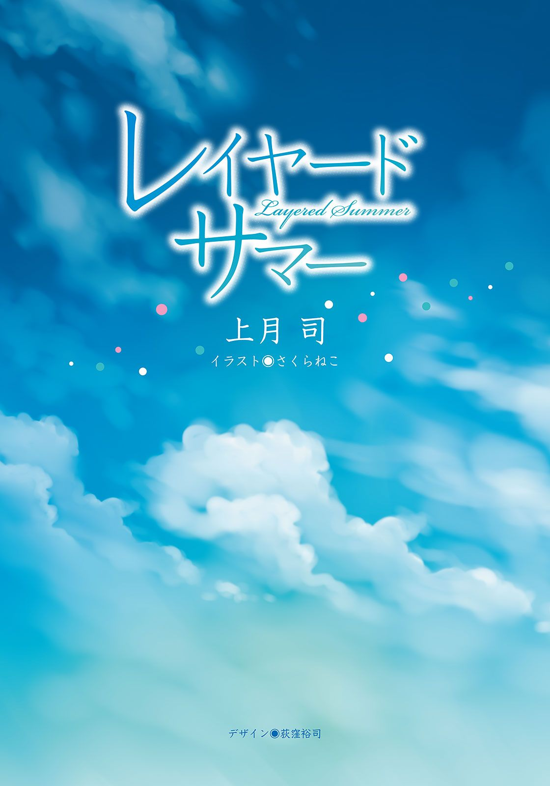

| レイヤード・サマー (電撃文庫) | |
| 上月 司 | |
| (2015) | |


本書（電子版）に掲載されているコンテンツ（ソフトウェア／プログラム／データ／情報を含む）の著作権およびその他の権利は、すべて株式会社ＫＡＤＯＫＡＷＡおよび正当な権利を有する第三者に帰属しています。
法律の定めがある場合または権利者の明示的な承諾がある場合を除き、これらのコンテンツを複製・転載、改変・編集、翻案・翻訳、放送・出版、公衆送信（送信可能化を含む）・再配信、販売・頒布、貸与等に使用することはできません。
プロローグ
──例えば、私が転校生で。
誰も知っている人がいないという状況に緊張してガチガチになりながら、先生に指示された席に着いたとする。
どうしよう、上手くやれるのかな、自己紹介は失敗していないよね、なんて不安に駆られていた時に、
『あんまり頼りにならないかもしれないけど、しばらくの間よろしくな』
偶然隣の席になった貴方が、そんな風に声を掛けてきてくれて。
まだ緊張が解けずガチガチのままの私といくつかの会話を交わした後で、
『あ、俺のことは気軽に涼平って呼んでくれればいいから。大抵のヤツはそう呼ぶし』
そんなことを、爽やかというよりは子供っぽい笑顔で、少し照れるようにはにかみながら言ってくれる。
──たぶんそれだけだと、恋に落ちるには弱いんじゃないのかな、と思う。
でも、きっと好意は抱くし、隣の席という親しみ易さも手伝って、異性の中では一番近い存在になっているはずだ。
毎朝挨拶を交わし、班別で何かを行う時にも同じグループになったりして、ふと気が付けば一緒にいる時間が当たり前になっていて......
その頃には席替えもされていて、席が離れた貴方へ、自然と吸い込まれるように視線が向くことに気付き──そこで初めて、自覚するのだ。
ああ、いつの間にか、私はあの人のことを好きになっていたんだな......と。
そして、気恥ずかしくて、しばらくはろくに話すことも目を合わせることも出来なくなって、なのに自分から開けてしまった距離感を寂しくも物足りなく感じる日々へと繫がっていく。
やがて自分の気持ちを抑えきれなくなった私は、何かの切っ掛けで思い切って告白をして。
突然のことに戸惑った貴方は、それでも私の想いを真っ直ぐに受け止めてくれて、真剣に考え込んでから............『こんな俺でいいなら』と、応えてくれる。
そうして、ちょっと特別な友達という関係から、恋人という本当に特別な関係になり──
......もしかしたら、そんな風になっていたのかも知れない。
何かが違って、どこかが嚙み合えば、そんな未来もあって良かったんだと思う。
そうなっていたのかも、知れなかった。
ただ──そうならなかった、それだけの話。
一章
学生の一年の中で、夏休みという存在はとてもとても大きいものだ。
喩えるならば......ハンバーグ定食におけるハンバーグ、かき氷におけるシロップと練乳くらいの価値がある。もっさりとした無駄に量のあるポテトだって、氷が冷た過ぎて頭がキーンと痛むことがあっても、それがあるから食べきることが出来るのだ。
──そう力強く論じ終えて、黒瀬涼平は目の前にいる少女の様子を窺ってみた。
なんというか、まあ......呆れている。一応は近所で評判の美少女なのに、その地位が揺らぎ兼ねないくらいげんなりした表情になられていた。
若い男女が部屋に二人きり、という状況なのにこれっぽっちも甘い空気にならないまま、幼馴染みの茜野々子は残念そうに目を伏せる。
「......あのね、涼くん」
子供の頃から変わらない呼び方をすると、野々子は一度ため息を挟んでから、
「それって、登校日を忘れていた言い訳にはならないと思いますよ？」
「............そっすね」
正論過ぎてそれしか返せない。
涼平だって分かっている。昨日遅くまで深夜ラジオを聞いていたのも、クリーニングに出すつもりだった制服がよれたままなのも、幸せに惰眠を貪っていたところを野々子に強襲されたのも、全て登校日という存在そのものを忘れていたからだ。
夏休みを謳歌しまくりだったとはいえ、うっかりし過ぎかも知れない。あと十日足らずしかこの楽園生活が続かないことを思い出させる登校日、そんな現実から目を背けたがった結果がこれだ──なんて格好つけようにも、惚けていたと言われれば頷くしかなかった。
登校日の登校時間がいつもより二十分程遅く設定されていなければ、絶対に遅刻しな......いや、それ以前に気の利く幼馴染みが自分の部屋まで来てくれなければ、行こうとすら思わず今も夢の中だったはずだ。
「んん......今から支度すれば、あんまり遅れずに済むかな」
「いい時間に起こしてあげたんですから、ちゃんと間に合うように急いで下さいっ」
「ラジャラジャ、了解っす。......よっと」
腰に手を当ててぷりぷり怒る野々子の視線を受けながら、涼平はまだ寝ていたいと訴える体を起こし、汗を吸ったシャツの裾に手を掛けて、
「............」
そこでピタリと動きを止め、監視するように厳しく目を光らせている幼馴染みを見た。
「......えーっと、野々子さん？」
「何ですか。のんびりしていると、本当に遅刻しちゃいますよ」
「や、その、ね？ とても言い難いんだけど......そんなに見られていると、やっぱし着替え難いかなー、なんてね？」
「え............？」
じぃっ──と、『誤魔化されません、交渉も無駄です』と言わんばかりの目をしていた野々子は、すぐには理解してくれなさそうで。
仕方なく、本当に仕方なく、でも僅かに口元をにやけさせてしまいながら、涼平はわざとらしい言葉を口にした。
「野々子、そんなに俺の裸が見たい？」
「......ふやっ!?」
流石にこの直球で理解したようで、野々子は変な声を上げると慌てて後ろを向き、
「違っ、違いますそんなんじゃありませんからっ！」
「皆が知ったら驚くだろうなー。頼れるののさんが、男の裸に興味津々だなんてなー」
「いやあっ、違いますからあ！」
必死の否定をする野々子の表情は、涼平からは見ることが出来ない。でも髪の隙間から僅かに見える耳や首筋は薄らと赤く染まっていて、とても恥ずかしいと体が訴えていた。
こうして男の部屋に上がり込んで来たり、ペタペタ触るスキンシップは好きだったりするのに、この反応。
付き合いの長い涼平でも可愛いなあ、と思ってしまうのだから、免疫の少ない男連中には堪らないものがあるに違いない。
中背の自分が視線を下げるくらい小柄で、肩に掛かった毛先に癖のある髪と、綺麗ではあってもまだまだ幼い顔をしているせいもあって、中学一年生と間違えられておかしくない見た目なのに......や、もしかしたらそんな容姿だからこそ人気なのかも知れなかった。
けど、怒らせると怖いヤツでもあるのだ。想像して貰いたい、泣きそうな目をしたまま無言で見つめてくる美少女のプレッシャーを。罪悪感で死ねそうになる。
そういう訳で、からかうにしても引き際が肝心。わざわざ起こして貰っておいて遅刻するのも何だし。
後ろを向いたままとはいえ、同級生の女子と二人きりの空間で着替えるというのは意外とスリリングな状況だが、中学まで男女混合な体育会系の部活に所属していた涼平にとっては致命傷になる程ではない。相手が幼馴染みの野々子なんだから、尚更だ。
「あの、まだ？ まだですか？」
「っと、落ち着けもう少し待て。今トランクス一丁だから」
「そんな報告はいいですからっ」
「ラジャラジャ。......って、あれ？ 野々子、俺の半袖のシャツってどこにあるっけ？」
「知りませんそんなことっ」
初心な幼馴染みに怒られながら、涼平は久しぶりに制服に袖を通す。
服装、良し。
髪はまあ、水をぶっかけて寝癖だけどうにかすれば良しとしよう。
朝食は......食べている時間は無いのでパス、登校日なんて大して拘束時間長くないし。
教科書の類も要らないから、鞄も要らない。財布と携帯、それに鍵だけあれば大丈夫。
「涼くん、そろそろ時間が」
「おっけ、準備完了！ さあ行くぞ野々子！」
「はい。......良かった、これなら走らなくて済みますね」
安堵する声が示す通り、野々子は走るのが苦手だった。とはいえ、短距離も長距離もこなす涼平だって、真夏の朝っぱらから走るのは勘弁なので気持ちは一緒だ。
玄関のドアを開けた瞬間に蒸し暑い空気に襲われてげんなりするが、顔を顰めながら渋々と外に出る。野々子も外に出たところで鍵を掛け、学校を目指し歩き始めた。
路地を進んでいるとあちこちから蟬の鳴き声が聞こえて来て、蒸し暑さ以外でも夏だというアピールが押し寄せてくる。ほんの少し歩いただけでもう汗が噴き出してきて、我が家とクーラーが恋しくなった。
涼平が住んでいるマンションはオートロックでも無ければ管理人も平日のみの日勤という、やや古めではあるが普通のファミリータイプの物だ。
ちなみに両親は、先週からいない。父親の短期海外出張に母親も付いていった結果だが、あの母は観光とショッピングが目的に違いないと涼平は踏んでいる。まあ、それもあと一週間もすれば戻って来るが、それでも残り少ない夏休みを存分にだらだら出来るのだから文句はなかった。
「そういや、野々子」
「何ですか？ 暑いから、奢ってくれるなら冷たいオレンジジュースがいいです」
「そんな話はしてねぇ。じゃなくて、お前、どうやって部屋に上がり込んだ？ まさかあのズボラ母が鍵でも渡してたのか？」
「違います。不用心な誰かさんがちゃんと施錠していなかっただけです」
「............」
いくらなんでもだらけ過ぎだったかと反省せざるを得ない事実だった。
となると、隣をせかせかと歩く野々子は、中に入れる確証もなく来たということになる。携帯にも出なかったから、もしかしたら先に行っている可能性もあったし、ドアの前で立ち往生ってことも十分に考えられたのに。
良く出来た幼馴染みだなあ、と涼平は思う。流石に満場一致でクラス委員長に選ばれるだけのことはある。
常日頃から一緒にいる訳ではないが、校内で野々子の世話をダントツで受けているのは間違いなく涼平だ。
小学校の時から殆ど同じクラスで過ごしてきたといっても、これだけ有能で気が利く美少女に構われているのだから、男連中から多少のやっかみを受けるのも仕方がない話だと思う。
そりゃあ『ののさんの優しさを勘違いするな』と、男友達から釘を刺されるわけだ。
確かに、たまに勘違いしてしまいそうになる。
......勘違いしてもいいんじゃないかな、と思う時すらある。
ただ、今の関係を変えるだけの切っ掛けが涼平には見つけられなかった。漫画のように、偶然野々子が告白されているシーンを見てしまうとか、しかも彼女がそれを断る理由に涼平の名前を挙げるとか、それくらいの何かが必要かも知れない。
そう思ってしまうくらい、涼平にとって今の関係は居心地が良かった。
身勝手かも知れないと、自覚はしていても。
出席確認に全校集会、そして久しぶりに会うクラスメイト達との会話だけで、登校日は何事もなく終わりを迎えた。
──はず、だったのだが。
「黒瀬、そこにある資料を取ってくれ」
「どれだー？ いっぱいあって分からないぞ」
「前年度の予算用途中間報告書だ。左から二番目、もしくはずれて三番目に置かれているはずだが」
「......お、これか。しかしお前、どこに置いたか覚えてるって凄いな」
「自分で並べたのだから当然だろう」
渡した資料に目を落としながら、平然とそんなことを言う。
そんな友人に呆れと感心を半々で抱きながら、涼平はまた電卓をカタカタ言わせる作業に戻った。
──暇な奴等とクラスでゆっくり談笑をしていたのが悪かったのか。
それとも、二年生にして生徒会副会長と剣道部新部長を兼任している多忙な友人がいることを失念していたのが悪かったのか。
どちらかは分からないが、どうにしろ涼平が生徒会の手伝いに駆り出されているこの事実には変わりがなかった。
廊下を歩く親友と目が合って、挨拶をした次の瞬間には『暇なのか。なら仕事を手伝ってくれ』と生徒会室に連行されるなんて、予測して回避しろっていう方が無理な話だと思う。
まあ、こっ恥ずかしくはあるけれど、親友と呼んでもいい相手だ。そいつに『頼まれてくれないか』と言われて断るだけの理由もないので、もう仕方ないと諦めもしている。
こうして雑談するのは悪くないことだし......と、ポジティヴに考えつつ、涼平は途中だった今朝の顚末を話す。
「まあともあれ、野々子に起こされたおかげで助かった訳ですよ。あとちょっと遅れてたら完璧遅刻だったなー」
「......茜に起こされるまで登校日だと忘れていたのか？」
「ああ、流石に焦った。......しかしお前、それ良く出来るね？」
「慣れの問題だ。やろうと思えば黒瀬も出来るようになる」
資料を読みながらパソコンのキーボードに打ち込み、その上で雑談を続けるなんて、涼平にはまるで出来る気がしない。どれだけ修練を積めば可能なのか、見当すらつかない。
これくらい出来なければ、重職を兼ねることは無理なのだろう。
引退が近い生徒会長に代わって働き詰めの副会長で、総体予選で去年は惜しくも準決勝で敗退した剣道部のエースでもある高円寺忠史の万能っぷりは、中学の頃から全く変わらない。
涼平より五センチも背が高く、素っ気ない眼鏡の癖にモテモテで、細身な割に筋肉もあって、成績優秀で家は金持ちの一人暮らし──どれだけの幸運が舞い込めばこんな身に生まれつくことが出来るのか。
「忠史、お前ね。ご先祖様には感謝しとけよ？ ちゃんと墓参りには行った？」
「先週行ったが......突然どうした？ それに似たようなことを言われているのは黒瀬、お前の方だろう？ 皆に羨ましがられている場面を中学の頃から何度見てきたか、流石に覚えていないぞ」
「..................あー。なるほどね」
納得の声を上げる涼平に、忠史が紙束から視線を上げて疑わしげな目を向けてくる。なるほど、この男が生まれ持った才能や環境と引き替えるように、自分は茜野々子の幼馴染みに生まれ育った訳だ。
どちらが幸運で、どちらが羨まれるべきなのか。それは個人の判断になりそうだ。
「......よく分からないが、あまり茜に手間を取らせるな。本人は厚意でやっているのだろうが、下手な噂になって困るのは茜だぞ」
「分かってる。今日のは、なんだ、不可抗力であってだな......」
「登校日を忘れるのが不可抗力か？」
「ごめん違った俺のミス。野々子さんには迷惑を掛けております」
即座に過ちを認め、涼平は長机の上に両手を乗せて大袈裟に頭を下げた。
ややあってから顔を上げると、忠史は作業の手を止めないままに、淡々とした口調で、
「噂ではなく事実にするのなら、構わないのだが」
「..................へ？ それって、どういう......」
「考えれば分かるだろう？ 誰かにとってはそれで幸せに、また誰かにとっては諦めの契機になるだろうな。良い機会だと思うが」
さらりと口にされたその言葉の意味が、涼平にはすぐに理解することが出来なかった。
手元を留守にして忠史を見ながら、ゆっくりと咀嚼するように、言われた内容の繫がりを考える。
──噂、というのは、流行り風邪のように起こっては消える、『黒瀬涼平と茜野々子が付き合っている』という例のもので間違いはないと思う。
それを事実にするということは......本当に付き合う、ということか？
だけどそんなこと、『じゃあそれで』みたいに簡単に済む話じゃない。それなりの告白が必要だし、玉砕の可能性もあるわけだ。
......なるほど、と涼平は思った。
告白が成功すれば幸せになれるだろうし、野々子に思いを寄せている連中は諦める切っ掛けになるだろう。
逆に涼平が振られて、『ただの幼馴染み』という関係がハッキリすれば、虎視眈々とチャンスを狙っていた連中にはこれ以上無い好機になる。
でもそれは、
「俺は、今の状況に満足しているんだけどなー」
「今の、だろう？ もし茜が他の男と付き合ったらどうするんだ？」
「......分かんねー。たぶん寂しくはなるんだろうけど、それ以上は正直、イマイチ分からん。逆に言うと、あいつと付き合うっていうのもあんまり想像出来ないしな」
「そうか」
短く返された言葉以上のことを忠史は言おうとしなかった。
それでもこの男にしては十分に喋り過ぎだ。寡黙という訳ではないが、必要以上に首を突っ込む性格をしていない。特に他人のプライベートな問題となれば尚更だ。
だから涼平にとっては意外だったし、心地良くもあった。
そんなことを言うのは、相手が自分だからだと思えたからだ。少なくとも、それなりに特別扱いをしてくれているらしい。
まあ、そうでなければこうして雑用に駆り出されたりはしないのだが。
やれやれと苦笑して、涼平は数字と向き合う作業に戻る。
「......なあ、忠史」
ただ、その前に一つ訊いておきたいことがあった。
「剣道部はどうよ？ 新人戦では勝てそうか？」
「どうだかな。夏に伸びると言われてはいるが、目に見えて成長が分かるのは少し涼しくなってからだろう。大会近くになるまでは何とも言えん」
「そっか。頑張れよ、部長さん」
激励の言葉を投げて、涼平は視線を手元の資料へと落とした。そしてまた電卓を叩き始め、ミスが無いよう没頭する。
「............お前が入ってくれれば、楽なんだがな」
──忠史が呟くように言った言葉は、聞こえない振りをした。
◆ ◇
時間にして一時間と十八分。
ようやくで生徒会室から解放された涼平は、冷房の効いた部屋とは一変して蒸し暑い廊下をげんなりしながら歩いていた。
気が滅入るのは暑さだけではなく、忠史から頼まれた手伝いを断れなかったからだ。夏休みだというのに、これから数日間、午前中は生徒会室へ行って色々と雑務をこなさなくてはならなくなった。
断りたい気持ちは溢れんばかりだったが、仕方がない。午後は剣道部の練習があるという忠史の言葉を聞けば、特に予定もなく気が向いた時間に起きるというだらけた生活をしていた涼平に断ることなんて出来なかった。
「......ま、二学期が始まる前のリハビリだと思うことにするかな」
一度引き受けた以上、今更嫌だとは言いたくないし、愚痴るような真似もしたくない。こういう時はさっさと気持ちを切り替えるに限る。
それにしても、廊下の暑さは酷かった。まだ生徒会室から出て数分だというのに、首筋に薄らと汗が滲んでいるのが分かる。建物の中ですらこうなのだから、日陰の無い外はどんな惨状になっているのか。
想像しただけでげんなりしてしまい、涼平は重い足取りで階段を下り──その途中で、意外な人物を見つけた。
「ありゃ、野々子？ お前まだ残ってたのか？」
呼びかけると、二階の踊り場に設置されている冷水機の前にいた小柄な幼馴染みは涼平の方を向いて、
「あ......涼くんこそ。高円寺くんのお手伝いは終わったんですか？」
「それは終わったような、まだ継続中なような......でも何で知ってんだ？」
「教室に残っていた宮原くんが教えてくれました──今、その宮原くんや林さん達と自習室で勉強をしている最中なんです。涼くんも来て下さい」
クラスメイトの名前を挙げた後で、野々子から突然の誘いを......いや、誘いというより命令に近かった気がする。
「えっと......何でそんな展開に？ というか、俺に拒否権は？」
「別に来なくてもいいですけど、それで休み中の課題で分からないところがあっても教えてあげませんよ？」
「......うーい、行かせて頂きます」
よろしい、と誇らしげに小さく胸を張る野々子は無敵な雰囲気を出していたので、涼平は大人しく従うことを選択した。
自習室は図書室の隣にあって、夏休みの間も受験を控えた三年生の為に開放されている。だからといって下級生が使ってはいけないということもなく、席さえ空いていれば誰でも利用出来るので、試験前には激しい領土争いが行われているらしかった。
ただし勉強にそう熱心ではない涼平は当然自習室なんぞに入ったことは無く、全て野々子や忠史から聞きかじった情報だ。
なので初めて入る自習室に、涼平は思わず「おぉ」と小声を漏らしてしまった。
「クーラーが、冷房の恩恵が行き届いている......やばい天国過ぎる......」
「大袈裟です。それから、早く中に入って下さい。ドアが閉められないじゃないですか」
心を洗われるような感動を分かち合うことは出来なかったようで、後ろから野々子に呆れ気味にせっつかれてしまう。
汗が急速に冷えていく気持ちよさを感じながら涼平が進むと、室内には殆ど人がおらず、窓際の一角にある八人掛けの机だけが使われていた。そこにいる六人はどれも見知ったクラスメイトで、涼平達に気付いてこちらを向き、
「あっれー、どうして涼平君が？」「副会長に連れて行かれたのになー。使えなさすぎてクビになった？」「あー、あるな」「あれじゃない、ののちゃんを見かけてふらふら付いてきたんじゃない？」「お、そっちかも」「有り得るねぇ」「ストーカー予備軍だな」「ののちゃんピンチ！」「ののさん襲ったら殺す」「右に同じ」「左も同じで」
口々に勝手なことを言ってくれた。特に男連中の口調は本気過ぎて、あまり笑えない。
まあでも、この手のやっかみは割と良くあることなので、涼平はさらりと笑って流した。
「やー、無理無理。誰かあのパーフェクトメガネに凡人のレベルの低さを教えてあげろよ。あとこちらの小さな人に、夏における遊びの大切さを是非とも訴えて欲しい」
「む。涼平、お前たまにはいいこと言うね」
食いついて来たのは宮原だ。夏休みのスケジュールは『バイト』と『遊び』の二つだけで埋まっているような奴なので、当然のようにこの手の話にはすぐ飛びついてくる。
「そーいやあたし、今年はまだ海行ってないや」「もうクラゲが出てヤバくね？」「ならプールで」「プールも良いけどキャンプも良いよなー」「コテージ借りたり？」「いいねー」「俺的には温泉も有りだな」「おっさん発言きたよ」「でも混浴なら俺も賛成！」「うえー......」「宮原調子に乗りすぎ！」「これだから宮原は......」「ホント、ないわー......」
宮原だけでなく、他のクラスメイト達もわいわいと話に加わって来て、もう勉強なんて空気じゃなくなっていた。
それを汲み取ったのか野々子はため息を吐いて、やや恨めしげに涼平を見て来る。折角勉強していたのに、と言いたげなその視線に、さっと涼平は目を逸らす。
......と、壁に掛かっていた時計が視界に入り、短針が頂点に指し掛かっているのを発見。
「お、もう昼だぞ昼！ 購買開いてないんだから、そろそろ切り上げてメシ食いに行くってのはどうよ？」
「ええっ、もうそんな時間？」「そういや腹減ったな」「ヤベー、俺一時からバイトだよ」「あたしもデートが」「そんな羨ましいのと一緒にすんな！」「で、何食う？」「あっさりしたものがいいなー」「冷やしつけ麵とか？」「うち、昨日素麵だった」「あ、俺も」
涼平の一言で、ただでさえやる気のメーターが急速に減少していた連中は、これ幸いと言わんばかりに机に広げていたノートや筆記用具を片付け始める。
ピラニアの棲む川に血の滴る生肉を放り込んだかのような反応は予想通りだが、ただ一人、野々子だけはむくれたままだった。
「......もう。折角、涼くんに勉強をさせる良い機会だったのに」
「やー、悪いな。また暇な時にでも頼む」
「──分かりました。なら明日、図書館に集合です」
「ぅえ!? や、でも、俺は忠史の手伝いがあってだな、」
「高円寺くん、午後は部活に出ていますよね？ なら涼くんも、午後は空いているということです。そうですね、一時からにしましょう」
「..................ぅぁい......」
さー昼飯だ、とクラスメイトが楽しく騒いでいる中、涼平は魂が抜けた返事をし。
それを聞いた野々子は、少しだけ機嫌を直したようだった。
二人抜けて六人でファミレスに入り、わいわいやりながら昼食を済ませて外に出た時、時計の針はもう三時を回っていた。ドリンクバーは何杯お代わりしたか覚えていないし、隣の席の客もどれだけ入れ替わっていたのか。確かなのは、店にとっていい迷惑だったということだけだった。
駅前で解散し、野々子と二人だけで帰路を歩いていても、さっきまでの騒がしさと楽しさが火照りのように残っている。
その感覚に涼平は口元を綻ばせて、
「やっぱり、一ヶ月会わないくらいじゃ皆変わらないな。日焼けしたり髪型がちょいと違ったりするくらいで」
「元気なのはいいことですけど、はしゃぎ過ぎです。店員さんの目が痛かったですよ」
「野々子は人気者だからなー。宮原がうざいくらい騒いでたのも、児玉がアクセサリー屋に連れて行きたがってたのも、愛されてる証拠だろ」
「そんなの、知りません」
言って、野々子はぷいと顔を背ける。きっとからかわれたと思ったのだろう。
だが、涼平は思ったことを言っただけだ。
茜野々子は男子からも女子からも好かれている。もし二学期末にある生徒会選挙に立候補したら、あの忠史とどちらが選ばれるのか分からないくらいに人気があるのだから、久しぶりに会った連中がはしゃいでしまうのも無理はなかった。
事実、再び浮上した遊びの計画には何度も誘われていたし、泊まり掛けのプランが出た時だって野々子さえ賛同していたら決行が確定していたに違いない。
「そんなことより、明日からはちゃんと課題をやるんですから。忘れたら駄目ですよ？」
「あー、はい、了解っす」
「それと......今夜のお祭りには、行くんですか？」
「へ？ 祭りって..............................あ！」
何のことかと聞き返す寸前、涼平は思い当たるイベントがあることに気付く。
去年──だけでなく、隣町である神社の縁日に行くのがここ数年続いていた。去年は野々子と忠史の三人で、一昨年は他にも数名の仲の良い友人と一緒に。
「そっか、あれって今日だったのか」
「そうですよ。今日が縁日で、週末には花火大会が......すっかり忘れていたんですね？」
「やー、うん、完璧に忘れてた。そっか、今夜か」
「もう......それで、どうするんです？」
再度の質問と共に、野々子はじっと見上げてくる。
微かに期待と不安が入り交じっているように、黒い瞳が揺れていた。
そこにどれだけの意味があるのかまでは読み取れないが、涼平も木石の化身や生まれたばかりのアンドロイドではないので、何となくだが相手の要求は分かる。
「うっし、それじゃー今年も行くか。七時に駅前待ち合わせでオッケー？」
普段から世話になっている気心の置けない幼馴染みの要望なら叶えてやりたいという気持ちもあって、特に考えるまでもなく返事は出ていた。
言われた野々子はというと、ずっと引っかかっていた問題に使う方程式を思い出したように表情を綻ばせ、
「はい、大丈夫ですっ。良い機会ですから、お母さんが新しい浴衣を買ってくれたのでそれを着て行きますね」
「浴衣かー。俺はふつーに普段着で行くけど、それなら忠史のヤツは甚平でも着て来させようかな」
──そして何故か、咲いたばかりの笑顔はあっという間にしゅるしゅると萎んでしまった。
「......高円寺くんも来るんですね？」
「え？ そりゃあ来るだろ。あんな堅物な割に付き合いはいいし、縁日の雰囲気は好きみたいだからな。野々子が呼びたいなら他にも集めていいけど、前みたいに五人も六人も集まるよりは、三人くらいでまったり回るくらいが丁度良いと思わないか？」
「............もういいですっ」
良かれと思って建設的な提案をしたのに、幼馴染みはご機嫌斜めにそっぽを向いて、早足で先に行ってしまう。
「おっ、待て、野々子？ ののさーん？ どうしたっていうんだー？」
そんな野々子の背中を追いながら問い掛けても、振り向いてくれることはなく。
涼平が出来ることといえば、何が失敗だったのだろうと首を捻ることくらいだった。
◆ ◇
忠史への連絡を済ませた後、涼平は待ち合わせまでの空いた時間を、シャワーを浴びたり軽く部屋の掃除をしたりして過ごした。
夕飯は縁日で食べればいいので、買い出しに出掛ける必要もない。出店を回るとなると多少出費は嵩むが、最近は夏バテ気味で食事を適当に済ませていたので、食費にと渡された金はまだ大分残っている。
「さて......と、そろそろ行くか」
夜のニュースがＣＭに差し掛かったタイミングで時計を見れば、六時四十分になったところだった。
駅まで歩くとして、朝と違い野々子に速度を合わせずに行くなら十五分前に出れば余裕で間に合う。財布と鍵、それに携帯電話をジーンズのポケットに突っ込み、涼平は家を出た。
エレベーターは使わず、一段飛ばしで階段を下りながら......ふと、去年の縁日に行った時のことを思い出す。
野々子と忠史の三人で行った縁日は人手が多く、途中で何度もはぐれそうになった。特に背の低い野々子は危なっかしくて、途中から自然と手を繫いで歩いていた気がする。
幼馴染みとはいえ、中学以降は手を繫いだことなんて全くない。当たり前だ。女同士ならいざ知らず、年頃の男女が仲良く手を繫ぐ場面がある方が珍しい。
祭りの雰囲気も手伝ってか、繫いだ手がやたらと熱く感じたのを、今更のように思い出す。自分より二回りは小さな手を握り、振り向けば恥ずかしそうに俯き加減になった野々子が見えて、涼平の方もまともに彼女を見られなくなってしまったことも。
それから夏休みが終わるまでくらいの間は妙に野々子を意識してしまったものの、逆に言うと、その程度でコロッといくならもうとっくに告白なり玉砕なりしている。
未だになだらかな、親密ではあるけれど一線を画さない関係が続いているのだから、やはりそう簡単には変わらないのだろう。
今日だって、何かはあるかも知れない。
だが日常の壁を、慣れ親しんだ空気を吹き飛ばす『爆弾』のような何かを、果たして本当に望んでいるのか──それが、涼平自身にも分からなかった。
このままでいいや、と諦めに近い気持ちはある。
こうして毎日のように同じ階段を同じように上って下りて、明日も似たような日になって。
それも悪くないと思う。今ある世界が壊れてしまうよりはずっといい。
......とはいえ、日常の中に刺激というか、新しい何かを求めてしまっている部分があるのも事実だった。
胸に湧く高揚感は縁日を純粋に楽しみにしているのか、それとも別種の淡い期待なのか、その判断すらつかないままに、涼平は階段を下り続け......
「............え？」
小さな踊り場を折り返したところで視界に入った『それ』を見て、涼平は足を止めた。
有り触れた日常を壊す『爆弾』が、階段で俯せになって倒れていた。
涼平は初め、『それ』をまともに認識出来なかった。
まず目に飛び込んできたのは鮮やかな、銀色にも灰白色にも見える、広がった長い髪。
そして夏だというのに長袖の墨色のブラウスと、丈の長そうな桜色のスカート。
夏という季節と乖離したような服装と、現実離れした髪の色──
何より、自分の暮らしているマンションで人が倒れているという事実が、突然過ぎて受け入れられなかったのだが、
「ぅ............ぁ......」
髪の隙間から漏れ聞こえた呻き声に、ようやくで涼平は我に返った。
「だっ、大丈夫か?! 何が、これっ......」
慌てて近寄って彼女の頭側にしゃがみ込み、階段に伏せられていた体を抱き起こす。
こういう時は素人が下手に動かさない方がいいんだろうけど、下が柔らかい土や芝生ならともかく、冷え切った硬いコンクリートの階段に寝かせておくのはどうにも抵抗があった。
身を寄せると、彼女の体からふわりと場違いな柑橘系の匂いが立ち上る。
ただ、悠長に感想を抱いていられるほど太い神経を持ち合わせていない涼平は、必死に何が原因なのかを考えた。
階段から落ちたか、それとも熱中症で倒れたか──いくつも原因は思い浮かぶが、ちょっと見ただけで分かるはずもない。
腕に抱いた彼女の様子を確かめようと顔を覗き込んで......涼平は息を吞んだ。
見えなかった顔は苦痛に歪んでいるものの、それでもハッキリと分かるくらいの若い美人だった。倒れた際に付いたのか頰は砂で汚れ、唇の端は薄く血が滲んでいる。にも拘わらず、見惚れて呼吸を忘れてしまいそうになった。
もしかして誰かに殴られたんじゃないかと嫌な想像が浮かぶが、すぐにそれはないだろうと考えを打ち消す。血が出るくらいの勢いで殴られたにしては痣もないし、こんな場所で揉め事が起きていたら、近くの部屋の住人がとっくに出て来ていていいはずだ。
でも、それならどうして倒れているんだろうかと、
「............ふ、うっ......!?............ぃ......」
「──っ、ぼけっとしてる場合じゃねぇ！ 早く病院に、救急車をっ」
考えを慌てて中断した涼平は、ポケットにねじ込んだ携帯を片手で取り出そうとするも、ちっとも上手くいかない。焦れば焦るほど何かが絡みついたような強い抵抗に手間取り、思わず歯嚙みをし──
「............ぁ......？」
「あっ!? き、気がついたのか?!」
呻いていたのとは僅かに違う掠れた声に、涼平はひとまず携帯を諦めて彼女へ語りかける。
もし持病か何かで薬を持っていたり、掛かり付けの病院があったりするなら聞き出さないとまずい。
そう思い多少気は引けるものの、涼平は彼女の頰に手を当てて、
「────ぇ？」
問い掛けるはずの声は、疑問の呟きに変わってしまった。
呼びかけようとした瞬間、瞼を震わせ薄らと目を開けた彼女は、頰へと当てていた手を包み込むように握って来た。
ただそれだけなら、涼平の驚きは少なくて済んだはずだ。
それが忘我の域まで衝撃的だった理由は、二つ。
一つは、こちらを見る彼女の瞳。
ルビーのように紅い目の端に、涙が浮かんでいたこと。
そしてもう一つは、
「............涼......へ、い......？」
今度は唇の動きだけではなく、聞こえた。でも、だからこそ分からなくなる。
──何で、どうして初対面のはずの彼女が、俺の名前を......!?
髪や瞳の色がこんなにも印象的で、それを無しにしてもこれだけの美人なのだから、会ったことがあるなら少しくらいはピンと来てもいいはずだ。だというのに、涼平にはまるで心当たりが無い。
それに......どうして苦しげに表情を歪ませていた彼女が、自分を見て安堵したように肩から力を抜いているのか。全く分からない。
「......良かっ............う、ぐ......!?」
混乱が深まり呆然としていた涼平は、苦しげなその声と手を強く握られたことで、ようやく自分がすべき行動を思い出した。
そう、今は彼女が誰だとか、そんなことを気にしている場合じゃない。一刻も早く病院へ連れて行くのが先決だ。
「あのっ！ ぇ、と、あれだっ、苦しいだろうけどもう少しだけ我慢してくれ！ すぐに救急車を呼ぶから──」
長い睫を震わせてギュッと目を瞑る彼女の手を、励ますように握り返して涼平は言った。
だがその言葉に対し、彼女は弱々しく首を横に振る。
「ぃ、いいの............病院は......っく......！」
「何言ってんだ、良いわけないだろ!?」
「......だい、じょうぶ......っ............しばらく休めば、へいき、だから......」
どう見ても平気そうには見えない様子でそんなことを言われても、とても頷くことは出来ない。不規則な呼吸で上下する胸や身悶えることすら辛そうな仕種からは、医学に関して詳しくない涼平でも自然に治るとは思えなかった。
こうしている間にも手遅れになってしまうのではないかと不安ばかりが膨らむし、苦痛に歪む彼女の表情を見続けるのだって耐え難い。
もうこうなったら、四の五の言ってはいられない。無理にでも救急車を呼んで病院へ運んでしまうべきだ。
「......だ、め............びょ、いんは......」
そんな涼平の考えを悟ったのか、辛そうに目を開けて再度訴えてきた。
涙に濡れた紅い瞳に見つめられて、涼平は奥歯を嚙んで自問する。
最善は彼女の訴えを無視することだ。人命が関わる以上、それは間違いない。
だが、ああも苦しげなのに病院に行くことを必死に拒むというのは、余程の事情があるとしか思えなかった。
それが何なのか、涼平には分からない。ただ、顔立ちは日本人とそう変わらないように見えるのに、色素が抜け落ちたような髪と目の色をしていることが嫌な想像に繫がる。『投薬ミス』や『遺伝子操作』といった、ニュースや小説の中でしか出てこない単語が浮かんで来て、しかも笑い飛ばせない。
仮にそんな事態だとしても......いや、そうだとしたら尚更病院に連れて行くべきなのだろうが、涼平は踏み切ることが出来なかった。
薄暗い非常階段に彼女の弱々しくも荒れた呼吸だけが響き、気が遠くなるような長い一分間が過ぎ......
「──ああもう、畜生！」
ぐちゃぐちゃした思考を全て捨てるように涼平は叫び、ぐったりと力の入っていない彼女の体を抱きかかえた。
「とりあえず家に運ぶけど......ちょっとでも悪化するようだったら迷わず救急車呼ぶからな?! それが嫌なら気合いで持ち直してくれよっ!?」
「............ん......」
我ながら無茶なことを言っていると思いつつ、涼平はかなり本気だった。
最大限譲歩した結果とはいえ、中途半端だ。問題を先送りしただけかも知れないし、手遅れになる可能性もある。
次々と不安ばかりが湧き上がり早くも後悔が渦巻く中、涼平は出て来たばかりの自宅を目指して急ぎ階段を上って行った。
◆ ◇
鍵を掛け忘れていたのが、今朝に続いて幸いとなった。
涼平は自分の部屋のベッドに彼女を寝かせると、濡らしたタオルで顔や手についていた汚れを拭った。それから使ってなかった夏用の掛け布団を引っ張り出してきて、肩まで覆うように掛けてやる。
こんなに苦しそうなのに、彼女は汗一つ搔いていない。むしろ手や額に触れると驚くほど冷たくて、温かくした方が良いかもしれないと思ったのだ。
正しい処置なのかどうかも分からないまま、やれることはやり終えた涼平はどかっとイスに腰掛け、深々と息を吐いた。そして、自分のベッドで眠る少女の顔を見つめる。
明るい部屋で改めて観察してみると、彼女が自分とそう変わらない年齢だと気付かされた。身長も、たぶん百六十センチを超えるか超えないかといったくらいで、特別背は高くも低くもない。
けど、目が覚めるような美人で、これだけ特徴的な髪と目をした同年代の相手なら、一度でも会ったことがあれば絶対に忘れない。間違いなく初対面だ。
......にも拘わらず、彼女は自分のことを知っていた。
「どーいうことなんだかなぁ......それに今日の寝床、どうすっかなぁ......」
ガリガリと後頭部を搔いて、涼平はイスの背もたれに頭を乗せて天井を仰いだ。
両親がいないのだから、そっちの部屋に運べば良かった。せめて両親のどちらかでもベッドを使っていたなら、迷わず使っていたのに。未だに寝室に布団を二組並べて寝る両親の習慣が、久しぶりにうざったく思える。
だが、どちらにしろ彼女が目覚める様子がなければ......徹夜で看病するか、布団を持ち込んで仮眠を取りながら様子を窺うしかない。
会ったばかりの赤の他人とはいえ、こうして家へ運び上げた以上はそれくらいのことはやろうと涼平は決めていた。
「......にしても、あっついな......」
エアコンを点けていない為、生成りの半袖シャツとジーンズという格好だとそこそこ暑い。下敷きでパタパタと自分を仰ぎながら、せめて薄着に着替え直すべきかと考えていたところ、不意にくぐもった音楽が聞こえて来た。
それが着信音だとすぐに気づき、涼平は眉を顰めつつジーンズから携帯電話を引き抜く。
「ったく、誰だよこの厄介な時に──って、まずっ!?」
ディスプレイに表示された『野々子』という名前を見た瞬間、血の気が引く音がしたような気がした。
そして思い出す。自分がどこに行こうとしていた途中だったのかを。
蒸した部屋の暑さが原因のものとは違う冷たい汗が噴き出してきて、涼平は慌てて携帯の通話ボタンを押し、
「も......もしもし？」
『......涼くん？ 今、何時だか分かってます？』
分かってません、とは返せなかった。
ちらりとベッドの上に置いてある目覚まし時計を見てみれば『19:11』という数字が並んでいて、自分が如何に問題に溢れた状況にいるのかを教えてくれる。
「あー、その、あれっすよ？ 決して寝てたとか忘れてたとかじゃなくてだ、やむを得ない事態というヤツがだな」
『言い訳はいいです。聞きたくありませんから』
「すみません......」
野々子の怒りは、静かで怖い。幼馴染みの涼平だから知っていて、たぶんクラスメイトの殆どは知らない事実だ。
声音自体は普段とそう変わりない。ただ、いつもと同じく丁寧な言葉なはずなのに、こちらの言い分をシャットアウトするような感じがあるのだ。
例えば......今のように。
『まだ、家なんですか？』
「お、おう。残念ながら」
『......もういいです。理由は訊きませんから、早く来て下さい。縁日は九時頃までやっているはずですけど、あまり遅くなるのは良くないですから』
その言葉だけで、涼平の中に様々な感情が浮かんできた。
きっと野々子はこっちが思っているよりもずっと、今夜の縁日を楽しみにしていたのだろう。確証はないが、分かる。伊達に十年近く幼馴染みをやっている訳じゃない。
今から全力で走れば、きっと二十分頃には着く。汗だくになって、息を切らして、かなり格好悪い様になるが、めかし込んだ二人の前に立てるはずだ。
そして第一声で「悪い！」と謝り両手を合わせて頭を下げれば、野々子は唇を尖らせて、忠史は駄作映画を見た後のような表情で、いくつか文句を言ってくる。
浴びせられる言葉にひたすら謝りながら、二人の背を押すようにして電車に乗れば......隣町の神社に着く頃には、野々子の顔には楽しそうな笑顔が戻っているはずだった。
──そこまで分かっているからこそ、涼平は申し訳ない気持ちで胸が一杯になる。
「............悪い」
『だから、涼くん？ 謝らなくてもいいですから、早く、』
「どうしても外せない用が出来て、そっちには行けなくなった。済まないけど、忠史と二人で行って来てくれ」
『..................え？』
通話口の向こうで野々子の表情が固まったのが、ハッキリと伝わってきた。
予想はしていたものの、それでも小さな呟き一つに動揺してしまい、涼平は立て続けに言うつもりだった謝罪の言葉が口に出せなくなる。
情けないことに電話を持ったままあたふたしていると、
『──黒瀬？ 一体、どういうことだ？』
「っ、忠史か？」
恐らくは野々子の様子がおかしいことに気付いたのだろう。礼儀正しい忠史にしては珍しく挨拶もなしに問い掛けてきたが、涼平としてはそれが有り難かった。
「急用が入って、そっちに行けなくなったんだ。悪いけど、野々子のこと頼む！」
『茜のことは構わないが......妙な企てをしている訳じゃないだろうな？』
僅かに抑えられた声は、きっと野々子に聞かれたくなかったからだ。
その意図も質問の真意も理解しているつもりの涼平は、自分も声を抑えて答える。
「......アホか、余計な勘繰りするな。大体、そんなことしてお前も野々子も喜ぶはずないってことくらい、流石に俺でも分かる」
『なら、いい。何があったかは明日話せ』
「おっけ、事態が好転してたらちゃんと行く。駄目ならメールする」
『了解だ。......茜に戻すぞ』
「うっ......分かった」
『..............................あの、涼くん？』
宣言から数秒の空白を挟んで、再び幼馴染みの声が聞こえて来た。
初めとは打って変わって不安そうな色が混ざり、またも罪悪感に苛まれる。
それでも涼平は、
「本当に悪いっ。今度埋め合わせはするから、今日は二人だけで行ってくれ」
『......いいです、けど......説明してくれないんですか？』
問われると、返答に窮してしまう。
病人を保護しているから、と言えば解決するはずだ。事実だし、これっぽっちも疚しいところなんてない。
......はずなのに、相手が自分と同年代の美人な異性ってだけで、とんでもなく言いづらくなる。本当に、ただ看病しているだけで、人に見られたら困るようなことは何一つとしてしていないのに、野々子に説明しようとすると......背徳感と妙な居心地の悪さでいっぱいいっぱいだった。
「それは、だな......えー、あー、上手く言えないんだけど......人助け？」
『どうして疑問系なんですか？』
「人助けです！ っと、あれだっ、うるさくしているとまずいから切るぞ！」
『涼くん!? ちょっと、待──』
最後まで聞かずに涼平は通話を打ち切り......脱力して、大きく肩を落とした。
おかしい。間違った発言はなかったはずなのに、しどろもどろになって、最終的には凄く噓臭い感じになってしまった。
脳裏には野々子のむすっとした顔が思い浮かんで来て......明日会った時、どんな風にご機嫌伺いをすればいいのか。もう今から心配だ。
「ヘコむわー......どうしてこうも要領悪いんだかなぁ、俺」
イスに座ったままズルズルと滑り落ち、涼平は大きなため息を吐く。
唯一の救いは、電話の声にも少女が起きなかったことくらいだ。
すやすやと安眠する彼女の寝顔に癒されるも、これからのことを考えるとやっぱり不安で、涼平は今更のように頭を抱えた。
夏休みの課題を引っ張り出した涼平は、時折ベッドで眠る少女の顔色や体温を気にしながら勉強をして、遅々としか進まない時間を過ごした。
集中出来ない為、教科書を広げながらでもなかなか解けない課題に苦しみ、そろそろ日付が変わろうという時刻になった頃。
「............ん......う......？」
聞こえて来た小さな呻き声は、若干掠れてはいたものの辛そうなものではなかった。
そのことに安堵しながら、涼平は片手で持っていた教科書を机の上に放り投げ、急いでベッドに近寄る。
薄らと開いた少女の目が何度か小さく瞬きをして、定まらない焦点の紅い瞳が覗く。微かに漏れる浅い呼吸と、白くはあるが部屋に運び込んだ時に比べると格段に良くなった顔色は、少なくとも最悪の事態にはならなかった証拠だった。
「良かった......どこか苦しかったり痛かったりしないか？ あんな所で倒れてたけど、怪我や病気は大丈夫なのか？」
「............あ......？」
安心した反動か声を掛けずにはいられなくなり、涼平は慌ただしく問い掛けた。頰が緩んでいるのが自分でも分かって、ちょっと気恥ずかしい。
寝起きの、それも病人に対する行動としてはやや問題があったかもしれないが、意識を引きつける効果はあった。
少女はぼうっとしたままの瞳を涼平に向けて、
「............涼、平......？」
また名前を呼ばれた。今度はハッキリと聞き取れたので、間違いない。
だが、そのことを涼平が訊ねるのは後回しになった。
「良かっ............くぅっ......!?」
目の前で少女がベッドから跳ね起きるように上体を起こしたものの、そのまま胸に手を当てて俯いてしまう。
搔き毟るように蠢く手と、長い髪が乱れる様に、涼平はベッドに手をついて彼女へと身を寄せる。
「だっ、無理するなよ!? よく分からないけど、まともな状態じゃないんだぞ！」
「......平気。もう大分楽になったわ」
上げられた顔は、確かに苦痛で歪んだものではなく、僅かに表情を強張らせた程度だった。だが、それを見て心配せずにいろというのは無理な話だ。
少なくとも涼平には安心など出来ず、
「平気って、んな訳ないだろ!? 何か、そのっ、薬飲むとか安静にするとか......あとやっぱ病院に行くべきだって！」
「訳あって病院には行けない。それに、行ったところで大して意味は無いの。一時的な、発作みたいなものだから、安静にしてやり過ごすしか無いのよ」
「それにしたって──」
「いいの。そんなことより、もっと重要なことがあるのだから」
そう言って体を起こした彼女の目を見て、涼平は続けるはずだった説得が出来なくなってしまった。
真っ直ぐに自分を見つめる紅い瞳は輝きを秘め、不退転の意志を感じさせる。
そしてこちらの袖口を摑んで来る手は、爪が白くなるくらい力が籠もっていて、二度と離さないと言わんばかりだった。
相手の雰囲気に涼平が圧倒されていると、
「......とりあえず、自己紹介が必要ね」
そう言うと、彼女は空いたもう片方の手を自分の胸に当て、
「私の......私の名前は、流堂庵璃」
「......ぁ、えっと、俺は黒瀬............って......」
流れで自分の名前も言おうとして、涼平は途中で口を噤んだ。
告げられた名は、やはり聞いたことのないものだった。
なのにどうして、
「......なあ、俺の名前は言ってないよな？ どうして知ってたんだ？」
一方的に自分だけが知られているのは、不思議というだけでなく、僅かながら恐れに似た感情も覚えてしまう。
これがもし......例えば学校の帰り道、毎日のようによく行くコンビニ、週二くらいで足を運ぶ本屋などで、普通に呼び掛けられての出会いだったのなら、違った期待もしていたかも知れない。
もしかしたら、何度か見かける内に自分のことを好きになってくれた人なのかも......と。
けれどそんな甘い想像を、涼平は抱けない。
倒れていた彼女の尋常じゃない様子が──そして今も、張り詰めた空気を生んでいるその表情が、現実の厳しい冷たさを伝えてくる。
緊迫感に思わず息を吞む涼平の前で、彼女は──流堂庵璃は整った唇を開いた。
「知っているのは名前だけじゃないわ。貴方の誕生日も、小さい頃から剣道をやっていたことも......」
そこで一度言葉を句切ると、直視されるだけでドキリと心臓が高鳴りそうになる美貌の眼差しで、
「好きだった剣道を──それを中学生の時に辞めた本当の理由も、私は知っている」
紡がれた言葉に、涼平は違う意味で心臓を高鳴らせた。
「っ......!?」
「幼馴染みの茜野々子にも、親友の高円寺忠史にも教えていないはずのその理由を、知っているわ」
駄目押しのように言われ、涼平は混乱して目眩を起こしそうになる。
確信があるのか自信に満ちた彼女の言葉が、事実だったからだ。
剣道をやっていたことは、小学校か中学校が同じ奴なら知っていてもおかしくない。特に中学の時は、夏休み明けの始業式に表彰された一員だったから、友人には冷やかされもしたし、後に怪我をした時は大いに同情された。
......けれど辞めた切っ掛けとなると別だ。
野々子にも、忠史にも、両親にも言っていない。理解されるとは思えず、それ以上に自分勝手過ぎて説明する気にもなれず誤魔化した理由だ。
それを何故、彼女が知っている──?!
動揺を隠せず適当な問い掛けも浮かばず口を開いたままの涼平に、庵璃はどこまでも真剣な目のまま、
「これから私は、二つの......そう、貴方からしてみれば突拍子もない、妄言としか思えないようなことを言うわ。でも、お願いだから聞いて」
「な......にを......？」
まともに思考が働かないまま、殆ど反射だけで聞き返す。
──その後に流堂庵璃が放った言葉と、一切の戯れを感じさせない瞳は、生涯忘れられないのではないかという衝撃を涼平に与えた。
「私は未来から、ある人物を追って来たの」
「その人に──遠からず、貴方は殺されるわ」
『──それが、庵璃との出会いで。
たぶん一生忘れることが出来ない、相手との出会いになった』
二章
「..........................................」
ぼやけた頭がクリアになる過程で、涼平はまず、笑おうとした。
突然『未来から来た』などと言われれば、そんなの手垢の付いた冗句か、もしくは残念な妄想としか思えない。だから笑い飛ばすというのは、常識的な反応の一つとして間違っていないはずだ。
勿論、いきなり言われても信じる訳がない。自分が殺される、なんて言われれば尚更だ。
なのにそれを涼平が出来なかったのは、偏に庵璃の表情のせいだった。
微塵の笑いも無く、ひたすら真剣というでもない。けれど切羽詰まった中に、悲しむような色合いが見て取れてしまい、何故そんな顔をされるのかという疑問の方が強く感じ......
涼平は大きく息を吐き、それから眉間を揉むように指をやった。
「......頼む、もっと分かり易く言ってくれ。俺は、笑えばいいのか？ それとも理屈っぽく問い質せばいいのか？」
やや捻くれた言い方になったことに後から気付いて、疲れているのだと実感する。そうでなければもっと軽い調子で訊けたはずだ。嫌な気分にさせたかも知れない、と後悔の気持ちが湧いてくる。
しかしそんな涼平の心中を他所に、流堂庵璃は真剣味を増した顔を寄せて来て、
「説明すると長くなるから、まずは私が未来から来たという証明をするわ」
「......どうやってだ？ それって実は凄く難しいことだろ？」
とりあえず彼女が噓を吐いていないことを前提として考えると、所謂『悪魔の証明』程ではないにしろ、未来から来たなんて証拠や証明はとても難しいはずだ。
未来の出来事を言い当てるとか、俗な事柄だと賭け事の結果を全的中させるとかあるが、信じるに値するかどうかはまた別の話。数学や化学式のように正解すればいいというものではなくて、相手を納得させないといけないのだから。
「そうね、簡単ではないわ。でも私は貴方に信じて貰えれば、それでいい。大々的に認められる必要は無くて、一人に信じて貰えればいいのだから、出来なくはないわ」
......と言われても、困る。
涼平の目には、庵璃が噓を吐いているようには見えない。けれど、だからといって『未来から来た』という言葉を信じるのは、どうにも難しい。
反応に困って眉根を寄せる涼平に、庵璃は何故か目元を柔らかく緩めて微笑んだ。
その笑顔に意表を突かれて、もう一つ素直に言えばドキリとしてしまって呼吸を止める涼平に向けて、
「例えば......そう、海外に出張中の貴方の両親が買ってくるお土産でも当ててみましょうか？」
「あの二人が帰って来るのは来週だぞ？ 土産なんてまだ買って......」
言いながら、ふと気付く。
「待て、どうして俺の親が海外に出張って知ってるんだ？」
「証明と言うにはちょっと弱いけれど、事実でしょう？」
「......まー、野々子達や近所の奥様連中なら知ってることだけど......」
それでも会ったばかりの人物が知っていることじゃない。
だが、やはりしばらく帰って来ない二人の土産と言われても、証拠能力は薄いし時間は掛かるしでかなり微妙な──
「お父さんはタペストリーとキーホルダー。お母さんは帰りに空港で買った鳩サブレをくれるはずよ」
「............うっわー、あの二人ならやりそう。超やりそう。特に母親......！」
ベタなものしか買って来ない父親と、土産の意味を色々とはき違えている母親ならとてもあり得る内容に、涼平は思わず頭を抱えた。
喜んで貰えるに違いないと思って嬉しそうにどうでもいいものを渡して来る父親と、土産といいながらいの一番に自分が食べ始める母親の姿がリアルに想像出来てしまう。息子としては勘弁して欲しい。
というか、タペストリーやキーホルダーって、自称未来人の口から出て来るのに物凄く違和感がある単語だ。未来にも残っているのか、定番お土産アイテムは。
かなり微妙な表情になる涼平に対し、庵璃は落ち着いた口調で、
「それ以外に私が言えるのは......そうね、これから数日の天気と、今夜貴方が親しい友達と隣町の縁日に行く予定だったことくらいよ。残念だけれど」
「......どうしてそんな、微妙なのばっかなんだよ？ もっとこう、どこかで地震が起こるとか、具体的な事件とかあるだろ？」
「これから数日の間、日本では震度二以上の地震は起こらないし、全世界でもマグニチュード四以上の地震は起こらないの。事件の方は、多少知っているけれど、細分化されたデータまでは知らないわ。それに、明日起こる殺人事件が解決されるのは五日後になるから、犯人の名前を言い当てても証明には時間が掛かるでしょう？」
話す内容は納得出来るようで、微妙にはぐらかされているような気分にもなる。
やはり、信じると言うには難しい......が、涼平は素直にそれを言えなかった。
理由は一つ。俯いた庵璃が、憂いを帯びた表情になっていたからだ。
「それに......私が知っている通りの出来事が起こる保証は、もう無いわ」
「へ？ どうして？」
「私が来てしまったからよ。もう一人、貴方を殺してしまう相手も」
「いや、だからさ。仮に......えっと、流堂さんが未来から来たってことにしたとしても......」
説明になっていないと詳しく訊こうとしたものの、涼平は途中で言葉を吞み込んでしまった。
目の前にいる未来からやって来たという少女が、何故か辛そうに表情を歪ませたからだ。
その切っ掛けが分からず、また痛みがぶり返してきたのかと心配する涼平に、
「──庵璃」
彼女は視線を合わせないまま、微かに声を震わせて短く言った。
「私のことは庵璃と呼んで......お願い」
「あ、や、ええっと......別にいいけど、何で？」
「少しでも信用を得たいのなら名前を預け、相手のことも名前で呼ぶようにする風習があるの。だから私も、勝手だとは思うけれど、涼平と呼ばせて」
「......それってどこで流行ってる風習なんだ？」
「ずっとずっと先の未来で。長寿世界一の人でも今からでは生きて辿り着けない、遠い未来での風習なの。......名前で呼んで、くれる？」
「............あぁ。りょーかい」
そもそも、そんな許可を与える前から名前で呼ばれていた気がするが、突っ込んでも仕方ないので頷くに留める。雰囲気に押されて、というのもあるが。
......あと、さっきから距離が近すぎて、かなり心臓に悪かった。しかも手を握られたり名前で呼ばれたり、これで揺るがないような精神は十年近く剣道をやっていても身につかなかったので、たぶん思春期の男ならどうにもならないものだと思う。
なので涼平は少しだけ身を引いてベッドから遠ざかり、仕切り直すように言う。
「んで、どうして庵璃達が来たら、この先の未来が分からなくなるんだよ？ ええと......あれか？ パラドクスがどうとか、そういう話か？」
名前を呼ぶ時に気恥ずかしさはあったが、何とか知っている知識を交えて訊くことが出来た。
さほど的外れな内容ではなかったらしく、庵璃は小さく頷いて、
「本来いないはずの人間がいることによって生まれる、バタフライ効果......と言った方が正しいわ」
「バタフライ効果？ 聞いたことはある気がするけど、何だっけ？」
「分かり易く言うと、どんな小さな出来事でも、複数の要素が組み合わされれば何にどう影響するか分からないってこと。先程言った『明日起こるはずの殺人事件』はここからかなり遠い土地で起こるのだけれど、それでも発生しなくなるかも知れない。ただ私がここにいるだけで、既に未来は不確定になっているの。......流石に天候への影響は無いと思うけど」
丁寧に説明されれば、何となくは理解出来た。
庵璃が未来からやって来たと仮定すると──彼女がいなければ、少なくとも涼平は縁日に行っていたはずだ。となると、行かなくなったことで、自分だけでなく、野々子や忠史にも影響が出ているし、屋台の売り上げだってほんの少し変わっていた。もしかしたら誰かとぶつかって新たな出会いも有り得るし、うっかり浴衣を着た野々子の胸元が見えるハプニングだってあったかも......小柄な癖に胸の発育は意外といいから、もしそんなことがあったら残念過ぎて泣ける。
まあでも、代わりに未来系美少女を拾って、こんなに近くで、しかもベッドを有効利用しながら会話していると思うとどちらがいいか途端に分からなくなった。
男って馬鹿だなぁ、と涼平は笑いそうになり、おかげで少しだけ柔軟に思考が流れていく。
どうして自分が未来人に殺されなくちゃいけないのか、っていうのも知りたいところだけど、それより現実的に気になるのは、
「それじゃ、俺が殺される可能性もなくなったってこともあるだろ？」
「ええ、そうよ。......というより、たった一つのことを守れば、涼平がその人物に殺される可能性は無いわ」
そう言うと、庵璃は強い視線で涼平を釘付けにする。
「──エッグイーターに関わらない。ただ見かけただけ、会うだけなら絶対に殺されることは無いわ」
「エッグ、イーター？」
......卵、食い？
聞き慣れないおかしな単語に聞き返すと、庵璃は指を三本立てながら言う。
「私が追って来た犯罪者の名称よ。遠い未来では殺人鬼として恐れられた存在だけれど、歪んだ矜持があるのか、殺す人間は三種類に限られているの」
「......というと？」
「一つ、エッグイーターは自分を攻撃してくるものを殺す。二つ、自分の目的を邪魔する人間を殺す」
話しながら指は二本折られ、残るは一つ。
確かにそのルールが絶対なら、積極的に関わろうとしなければ死ぬことはなさそうだ。むしろどうして自分が殺される展開になるのか、不思議にすら思う。
庵璃が最後の人差し指を折ろうとする──その前に、涼平は先手を取って訊ねた。
「なあ、どうしてそんな、エッグイーターなんて面白可愛い名前で呼ばれてるんだ？ 全然殺人鬼っぽくないぞ」
「その名称を付けたのが誰だかは分からないわ。でも聞けば誰もが納得するの」
「............？」
「名付け親が脅威の犯罪者をエッグイーターなんて巫山戯た呼び方をしたのは、選ばれたターゲットと殺人手段からよ」
彼女の声のトーンが低くなり、涼平は無意識に生唾を飲み込んだ。
これから何を言われるのか全く予想は立っていないというのに、嫌な予感だけはしている。頭のどこかで、聞かない方がいいと訴えている自分がいる。
そして......最後の、人差し指が折られた。
「ターゲットは妊娠した女性よ」
「な......!?」
「正確に言うと、胎児ね。妊婦のお腹にいる胎児を、ナイフで子宮ごと切り裂いて殺す──故に『子宮喰い』」
「それ、は..................ぅ......!?」
庵璃の言葉を呆然と聞いて、想像してしまいそうになり......込み上げてきた吐き気に、涼平は口に手を当てて堪える。
腹の中でぐるぐると回るように蠢く感覚に、脳裏に過ぎった鋭利な刃物で女性の腹部を突き刺しそれを更に『開いて』『殺す』イメージが重なり、胃液が逆流しそうになった。
情けない顔をしているのが、自分でも分かる。だが体裁を気にする余裕などなく、何とか吐かずにやり過ごすだけで精一杯だった。
そんな涼平を見下ろして、庵璃は言う。
「たぶん貴方が殺されたのは、『子宮喰い』の犯行現場に出会したからよ。でもそれだけなら、口封じに気を回す人間じゃないから殺されることは無かったはずなの」
「......なら、俺は......」
「襲われている人を助けようとした......んだと、思う。確証は無いけれど、そうでなければ『子宮喰い』に涼平を殺す理由は無いから」
どこか自信なさげな庵璃の言葉に、涼平は胃と喉だけでなく、頭まで熱くなるのを感じた。口元に覆っていた手を振り下ろし、殆ど八つ当たりだと分かりながらも、
「ならっ、そんな場面に出会しても見殺しにしろっていうのか!?」
「相手は化け物よ。犯行は朝夕を問わず、人目も気にせずに三十七人の命を奪った殺人鬼で......出産前の胎児もカウントするなら、もっと多くの人間を殺しているわ。被害者の妊婦には助かった人もいるけれど、それ以外の人は例外なく全員死亡しているの」
そこで一度言葉を区切り、庵璃は紅い瞳を静かに鋭くする。
「つまり、邪魔をすれば貴方は確実に殺される──それでも、知らない誰かを助けるの？」
「そんなの............っ！」
当たり前だろ、と威勢良く言うことが出来なかった。
涼平はそんな自分が不甲斐なくて、下唇を嚙み締める。
──小さい頃は剣道をやっていたということもあって、困っている人や弱い者を助けるのは当然のことと行動していた。カーボン製の竹刀を振るって活躍することはなくても、剣を習う者としての心意気だけは一人前のつもりだった。
それが今や、体だけは大きくなって、この様だ。
尤も、子供が出来るような人助けと、自分の命が懸かった人助けではまるで意味合いが違う。同じステージで語る方が間違っている。
......そう、頭の中では分かっているのに、己を恥じることは止められなかった。
「私からは堪えてとしか言えないわ。張り切られても無駄死にするだけで、立ち向かうような無謀な真似はしなくとも、現場を目撃したのなら救急車を呼べばいいの。運が良ければ、助かる可能性はあるわ」
淡々として突き放すような口調だったが、庵璃の声はどこか優しかった。見えない手で頭を撫でられ、慰められているような気さえする。
恐らくは錯覚だろうが、涼平はそれをマイナスに受け止めること無く、苦笑いを浮かべた。情けないが、この上沈み込んでしまうのでは惨めすぎる。
だけど......それでもまだ、納得は出来ない。
項垂れた涼平が普段の勉強なら有り得ないくらい懸命に考えようとしていると、そこに庵璃の声が耳に響いた。
「涼平の気持ちは分かるつもりよ。でも、それで貴方が死んでしまったらどうするの？ 普通の人間に『子宮喰い』は止めることが出来ず、被害者が増えるだけよ。被害を最小限に留めようとするのは、逃げじゃないわ」
「そうは言うけど、俺は......」
「どうにも出来ないことがあると、認めるのも勇気だと思うの。だから......お願い」
「............ぁ......」
俯き加減のまま解決策を模索していた涼平は、不意に視界に入って来た揺れる銀色の輝きに、思わず顔を上げ......絶句する。
目の前で、庵璃が自分へと頭を下げていた。
そんなことをする必要なんてどこにも無いはずなのに、だ。
こちらが言っているのは理想論の我が儘で、庵璃は何も間違ったことを言っていないのに。言葉遣いだって辛辣なものじゃなく、現実を述べているだけで、こちらを傷つけないよう配慮さえ感じられた。
彼女の姿勢に、どうしてそこまで......と、疑問が生まれる。
だが、同時に分かったこともあった。
庵璃がどれだけ真剣に、こちらを慮って話してくれているかということ。
そして、もう一つ──自分が、彼女の話を認めつつあるということだ。
未来からやって来たとか殺人鬼に殺されるとか、突拍子も無いことを言われているのに、いつの間にか庵璃の言葉を受け入れ始めている。
両親が買ってきそうなどうでもいい土産とか、暗に知っているぞと仄めかした中学の時のこととか他にもいくつか要素はあるけど......一番大きいのは、やっぱり彼女の態度だ。
こんな風に真摯な態度を取られて、おまけに頭まで下げられて、それでちっとも信じられないって方がおかしいはずだと思う。や、まあ、自分が単純な性格過ぎるって可能性も大いに有り得るけども。
胡座を搔いて座り直した涼平は、感情的になり過ぎていたのでちょっと恥ずかしいのを誤魔化すように一つ呼吸を挟んでから、庵璃を見上げた。
「そういや、あれだ。未来から来たって、どっかこの近くにタイムマシンみたいなのがあるのか？ それに犯罪者を追って来たっていうには随分と若い......っつーか、二十歳くらいの年齢っぽいけど」
本来ならもっと早くにしておくべきだった質問を今更のように口にすると、庵璃は驚いたように顔を上げ、目を見開いて、
「信用、してくれるの？」
「あー......正直、まだ微妙。でも信じるのもいいのかなーって思ってるのも事実だし、どうせならもうちょい判断材料とか、そっちの事情とか知りたいかな、と」
言ってから、自分でも『うわ何という煮え切らない発言だろーか』なんて思ってしまう。せめて『信じたいと思うよ』とかそんな風に......いや、それは格好付けすぎだけど。
絶賛後悔中の涼平は、反応を見よう、そして機嫌を損ねていたなら謝ろうと思って庵璃の様子を窺い、
「........................、ありがとう」
薄らと涙を浮かべて微笑む姿を、バッチリ目撃してしまった。
──そんなの反則だ。もう少し自分の美人度合いを、しかも日本ではまず見かけない髪と目の色が作り出す儚い雰囲気の破壊力を自覚して頂きたい。特に年頃の異性に対する絶大な効果というものを。
涼平がさっきとは違う意味で照れて顔が熱くなっていると、それにまるで気付いていないのか庵璃は涙を拭う仕種の後で、徐に着ているブラウスの左袖口のボタンを外し始める。
露わになった細い手首が掲げられると、黒く輝くリングが塡っていた。
「たぶん涼平が想像しているような、大袈裟な機械はここには無いわ。本体は未来の世界にあって、このリングが端末なの」
「へえぇ......そんなのが」
ただのアクセサリーにしか見えないのに端末だなんて、完璧にＳＦの世界の話だ。なのに難しい単語も複雑なシステムも出て来なかったので、あまりピンとこない。それっぽい説明をされてもたぶん分からないけど。
リングより、どちらかというと庵璃の白くて細い手首に注目してしまいながら、涼平は素直な感想を口にする。
「にしても、随分と簡単な機械で済ませられるんだな？」
「未来にある時標演算転送機は凄いのよ？ 大きさで言えば......そうね、涼平の通う学校の格技場くらいのサイズはあるわ」
「うっわ、マジで？ そんなでっかい装置が......って、時標演算？ なんかこう、『時間移動』とか『時空渡航』みたいな名前のを想像してたんだけど」
「......そうね、ちゃんと説明した方がいいのかも。あまり難しい話にはならないよう、少し簡潔になるけれど」
「出来ればそれでお願い出来るか？ やっぱほら、余計な情報貰うと、パラドクスがあれになるかも知れないし」
自分でもあまりよく分かっていないことを言う涼平に、庵璃は微かに口元を緩め、
「タイムパラドクスは起こらないわ。......ううん、起こせない、と言った方が適切かも知れないわね」
「そうなのか？ 俺の拙い知識だと、大体その単語が出て大問題になるけど」
ゲームや映画で、タイムスリップしてどうこう......というのをいくつか見たことがあるが、どれもパラドクスを異様に気にしていた。何が問題なのか涼平にはよく理解出来なかったものの、大抵は『時空が消滅』とか『世界の危機』とかになっていたので、大変なんだなという感想と共に覚えている。
だから実際に未来から来たという庵璃が否定したのはかなり意外だったが、ただ否定するだけでは終わらなかった。
首を傾げる涼平の前で、庵璃は授業で教科書の読み上げを命じられた生徒のように真面目な表情で口を開き、
「──『時間の流れは不可逆ではあるけれど、現在を基点として過去の座標を正しく演算することが出来るのであれば、量子化した物質並び生体をその地点に転送することは可能』......そんな論文が発表されたのが、私がいた時代より六十年前のことよ。そして実際に時間の流れを演算化する機械が開発されたのが、その二十年後になるわ」
「............ごめん、既に半分以上分からないんだけど」
恐る恐る手を挙げて涼平が訴えると、庵璃はそれを見越していたように小さく頷いた。
そしてベッドの上で膝を崩して座り直し、改めて視線を絡ませた彼女は続きを口にする。
「簡単に説明すると、時間の流れは変えられないけれど、人が過去の世界に行くことは可能ということよ。今を起点にして、過去の世界に『戻る』のではなくて、『移る』の。その為に必要な時間と位置の情報を、時標演算という手段で調べるのよ」
また分からなくなってきたが、とりあえず涼平は頷いておく。
たぶん、あれだ。ノートにページ番号を書いた付箋を貼って、一発で目当てのページを開けるようにするとか、そんな感じに違いない。そう思っておくことにする。
「実験を重ねて、生物を過去に送ることが成功したのは装置が出来てから更に三十年以上後になってからだけれど......そこで新たな発見があったの」
「発見？」
「ええ、そう。それは『同一の個体は同じ時間軸に存在出来ない』ということと、『過去の世界は上塗りされていき、同一の層に辿り着くことは出来ず、未来も変容しない』ということ」
「............あー......再度で悪いけど、分かりません」
「実例を挙げると、転送しようとした人が生きている時代には送り込むことが出来なかったの。装置は正しく作動しているのに、転送されることはなかったわ。何度やっても結果は同じで、同じ過去にも送れなかった」
そう言われれば、涼平も理解出来る。たまに漫画やドラマであるような、過去の自分に会う、みたいなことは出来ないということらしい。
「じゃ、もう一つは？ どちらかというと、そっちの方が意味不明なんだよ」
「そう、ね......涼平が好きな歴史上の出来事は何？」
そんなものはありません、と素直に言うことは出来ず、涼平は腕組みをして、
「ええっと、明治維新かな？」
「なら私が過去の世界に行って、明治維新を起こさないようにするとするわ。それから未来の世界に戻る──けれど未来は何も変わらないままなの」
「へっ？ どうして？」
「『同じ過去の上層に位置する世界に行ったから』──ということらしいわ。誰かが過去に行く度に、新しい世界層が一番上に出来上がるの。つまり新しい世界ほど上層に、古い世界ほど下層にあるのね。......ここまではいい？」
その問いに涼平が頷くと、庵璃も頷き返して、
「薄い紙の一枚上に置かれた世界の出来事を変えても、戻るのは下層に位置する元の世界なのだから、影響は無いのよ。科学が発達しても、魔法みたいに何でも叶えられる訳ではないの」
頰に手を当てて「残念ながら、ね」と付け加える庵璃の表情はやや暗く、心の底から言っているのが分かった。
何か変えたい出来事でもあるのかと疑問は湧くものの、とりあえずはそれよりもっと本題寄りで気になることがある。
「じゃ、別に庵璃が『子宮喰い』をどうにかしなくても、そっちの未来には影響無いのか？」
「ええ。でも、だからといって逃走した犯罪者を野放しには出来ないわ」
庵璃の説明に、涼平は腕組みをしたまま俯く。
過去の出来事を変えると聞いて、前にあったデータを上書きするイメージだったが、それは違ったらしい。実際はそのコピーを弄る感じに近いのだろう。どれだけ改変をされてもコピー元には影響が無い訳だ。
視線を上げて、何となくではあるけど納得したことをアピールすると、庵璃は小さく頷いて返した。
そして、涼平を不安にさせる一言が来る。
「重要なのはここからよ」
「......ここからですか」
「過去の世界に行って、明治維新を起こらなくさせて未来に戻ったわね？ その後、他の人が本来ならば明治維新が起こった直後の時代に行くと──その世界では、明治維新は起こっていないのよ」
「それは......さっき起こらないようにしたからか？」
今の流れからすれば、涼平にはそれくらいしか思い付かない。
安易な結びつきで出した解答だったものの、庵璃の反応はそれを否定しないものだった。
覚えの悪い生徒が必死で導き出した解答を褒める教師のような柔らかい笑みを浮かべて頷くと、庵璃は指先で宙に大きくバツを書く。
「そう、上書きされた世界の更に上に行くことになるから、下層の世界で変化した過去はそのままなの。だから明治維新が起こるようにするには、改変されるよりも前の時代に行くしかない。そして流れを変えた原因を排除することに成功してちゃんと明治維新が起これば、その上層の世界にも反映されるのよ」
なるほど、と涼平は思った。......重要と言われるだけあって、内容が難しい。
それでも重要ポイントらしき部分が何なのかは分かった。
過去に行くシステムだとか改変がどうとか、そんなことは割とどうでもいい。
問題は、今こうして暮らしている世界のことだ。
「つまり──初期の段階で『子宮喰い』をどうにかすればいいんだな？」
「ええ、私が何とかするわ。その為に来たのだから」
キッパリと言い切る庵璃は、強い意志を感じさせる目をしていた。
そんなものを見れば説得を受け入れるとはちっとも思えないが、それでも涼平は言わずにはいられない。
「......無理はしないで、警察を頼るとか出来ないのか？」
「普通の人じゃ何人いても『子宮喰い』には太刀打ちできず、犠牲が増えるだけよ。それに......この時代の人は巻き込みたくないの。私一人でやるわ」
「待て待て、相手は危険な殺人鬼だって言ったの、庵璃の方だろ!?」
失礼かも知れないが、『普通の人』が無理なことをやり遂げられるようにはとても見えない。華奢な体つきだし、格闘技や武道の経験が豊富なようにも、だ。
これはもう余程の秘密兵器か、もしくは超能力か何かが使える特殊な人間じゃないと、あっさり返り討ちにあって終わりだと思う。
「見た感じだと、特に武器とか持ってないんじゃ？ そんな体でまともに戦えるとも思えないし......第一、その殺人鬼がどこにいるか分からないんじゃないか？」
矢継ぎ早に疑問をぶつけるが、庵璃の目に灯る意志の光は揺るがない。
「私が転送して来たのは二日前で、セーフハウスは既に確保してあるの。そこに行けば、私が使う為に特別な調整をした武器もあるし、薬もあるわ。『子宮喰い』がこの時代に来るのは今夜で、その場所も分かっている。だから、あとは迅速に──」
唐突に、庵璃は言葉を止めた。そして見る見るうちに、少しは血色が良くなっていた肌が青ざめて白っぽくなる。
「今......今は、何時なの!?」
「あー............その、残念ながら、庵璃が言った『今夜』が日付が変わる前っていうなら、それはもう過ぎてる」
庵璃から死角の位置にある目覚まし時計の針は、既に短針が頂点を越えて緩やかに下がり始めだしたところだった。
恐らく庵璃は、自分が五時間以上も気絶するように眠っていたとは思っていなかったのだろう。部屋に運び込んだ時にはもうとっくに日が暮れていたから、余計に時間の経過が分かりづらかったのかも知れない。
愕然とした様子の庵璃は、しばしの間固まったように動かず......そしてややあってから、
「............いけないっ、急がないと──っく!?」
慌ててベッドから飛び降りようとしたが、体をくの字に曲げて伏せてしまった。
そうなると今度は涼平が慌てる番だ。
苦しそうなのに、それでもベッドから離れようとする庵璃の肩を押さえて、
「バッ、無理すんなって！ そんな状態で、しかも今は武器も何も持ってないんだろ!? とんでもない相手だってさっき俺に言ってたのに、勝算はあるのかよ!?」
「それ、はっ......」
言い淀む様を見て、やっぱり行かせたら駄目だと涼平は確信する。
こんな半病人を送り出すなんて出来る訳もなく、どうにか止める為の説得材料を探そうとして問い掛けた。
「大体『子宮喰い』のヤツがこっちに来るのはいつだったんだ？」
「二時間くらい前......だから急がないと、被害者が......！」
「落ち着けって、十時過ぎに外を出歩く妊婦なんていないからっ！ それにパトカーや救急車の音なんてしなかったから誰も殺されてないはずだし、二時間も経ってたら『子宮喰い』がどこに行ったかなんてもう分からないだろ!?」
殆ど怒鳴るような涼平の言葉に、焦った表情の庵璃が縋るような目を向けてくる。
「それは......そうだけれど............本当に誰も、犠牲は......？」
「ああ。俺はずっと起きていたし、この辺の治安はいいけど夜遅くまで遊べる場所は殆どないから、大丈夫だ」
「........................」
自分の説得で庵璃の肩から力が抜けたことに、涼平はホッと胸を撫で下ろし......同時に、罪悪感も押し寄せてくる。
大丈夫だなんて保証、どこにもない。噓は一つも言ってないが、この辺りならともかく駅前周辺でサイレンが鳴ったとしても、このマンションにいて窓を閉めていたら聞こえはしないからだ。
それに──今日は、縁日があった。身重なのに行く可能性は少ないかもしれないが、それでも普段に比べれば確率は上がってしまう。
もしかしたら既に被害者は出ていて、単に発見されていないだけ、という可能性もある。そんなこと、今は絶対に口には出せないが。
考えれば考えるほど、ぞっとするような不安が押し寄せてくる。
だが涼平は表情には出さずに堪え、目線の高さを庵璃に合わせて、
「とりあえず、今日は休んでくれ。それが出来ないなら、救急車を呼びつけて無理矢理病院送りにするぞ」
「............でも......」
「どうしてそこまでムキになるんだ？ それに凶悪な殺人鬼を追いかけて来たっていうのに、たった一人で、」
「──私しかいないからよ」
こちらの言葉を遮るように放たれた声に、涼平は一瞬、音の無い世界に叩き込まれたような錯覚を覚えた。
人と話していて見えない壁を感じることはあるが、今のはそれのとんでもなく強烈なバージョンだと思う。突き放された、というより、殻に閉じ籠もられてしまったような、明確な拒絶を感じた。
その理由を把握するよりも前に、庵璃は紅い瞳を向けてきて、
「......私が生まれた未来の世界はね、大気汚染が酷くて、都市ごとドーム状に覆われているの。太陽の光を見たことが無い人が殆どで、出生率の低下も深刻な問題になっていて......そこに新種のウイルス感染が爆発的な勢いで広まり、ただでさえ少なかった人口は、二桁にまで減ってしまったの。生存者の殆どは、時標演算転送機がある地下シェルター内の研究施設で生活していた人達だったわ」
「............」
それと庵璃しかいない理由が結びつかない。だが涼平は黙ったまま、相手のペースに任せて話されるのを待った。
──根拠はいまいち分からないが、相槌を打つことさえ躊躇われる何かを感じて。
「不幸中の幸いで、ウイルスの感染力は凄かったけれど、潜伏期間が短い分か死滅してしまうのも早かった。だから生き残った私達は、万全の準備を整えた後、微かな希望を信じて地上の捜索に繰り出したの。そしてそこで奇跡的に生存していた感染者を見つけ出し、ワクチンを作ることにも成功したわ。......でもね、それは最悪の結果を生み出すだけだったの」
「............え？」
思わず涼平の口から出た疑問の声は、話されていた内容が原因ではなかった。不吉な単語を言いながらも、庵璃が笑みを浮かべていたからだ。
非常階段で意識を取り戻した時の、安堵の笑みとは違う。
信じるという旨を下手な伝え方をした時に見た、嬉しそうな笑みとも違う。
彼女の顔に浮かんでいたその笑みは──
「都市で発見された唯一の生存者は、『子宮喰い』よ」
「............な......」
「そして『子宮喰い』は──研究施設にいた、私以外の人間を殺したわ」
「............っ!?」
「皆、殺されたの......良くしてくれた研究者のお姉さんや、声と体の大きな技術者のおじさんや、雑務を請け負ってくれていたお爺さんや......それに、研究施設の所長と時標演算転送機の開発責任者を兼任していた──私の、お父さんも」
鮮やかな紅い色をしているのにも拘わらず、コールタールのような暗い光を内包した目で、庵璃は言う。
「だからもう、私しかいないの。責任を取る以外......私には、何も残されていないから」
虚ろに微笑むその姿を見て、涼平は完全に言葉を失ってしまった。
絶望という形ないものが、すぐ近くに存在していることを知って。
◆ ◇
数分間に及ぶ沈黙が続き、質量を増すように時間と共に重く感じる空気に耐えきれなくなったのは、涼平が先だった。
何か喋らないと、という気持ちばかりが先走り、かといって具体的なプランはないまま、
「......あー......えーっと、とりあえず............あれだ、腹減ってないか？」
「........................え？」
張り詰めた絹糸のような雰囲気を纏っていた庵璃の口から、呆然とした疑問の声が漏れた。それを耳にして、涼平は恥ずかしさに頭を抱えて転げ回りたくなる。
あんな深刻な話の後でいきなり『腹減ってないか？』って、どれだけ無神経な発言なんだ。言った自分にビックリで、叶うことなら過去に戻って己の口を塞ぎたい......けど、庵璃の説明を聞く限り、それすら無理という現実に絶望したくなる。
呆れているだろう庵璃の顔を見ていられなくなり、涼平は倒れるようにして床に突っ伏した。火照った額で感じるフローリングの冷たさが心地良くて、いっそこのまま眠りについて全てを忘れたくなる。
──と、そんな現実逃避をしていた涼平の耳に、微かな音が届いた。
上の方から、しゃっくりをするような息づかいが聞こえてきたことに、顔だけ上げて様子を窺ってみる。
そして、ベッドに座る庵璃が両の手で口を押さえている姿を目撃した。
「............っく..................ふふ......」
しかも驚いたことに、彼女は笑っているようだった。しかも目尻には涙が滲んでいて、微妙に肩も震えている。
「ごっ......ごめん、なさい............っ......でも、急に......涼平が悪いのよ？」
「......や、うん、確かに俺が悪いね。でもそこまで笑うっつーのも、どうなんでしょうね？」
「だから謝って............っ......ああもう、息が苦しい......！」
「............ははっ」
こほ、こほっ、と咳き込みながらも笑い続ける庵璃の姿に、自然と涼平も笑みを浮かべていた。
さっきまで暗く沈みきっていた部屋が、中の空気が総入れ替えされたように彩色を取り戻していた。それが自分のデリカシーのないボケ発言が切っ掛けということにさえ目を瞑れば、とてもいいことだ。
よく考えたらまだ夕飯を食べていない。つい勢いで妙な発言をしてしまったのはこれのせいだ、と思い込むことにする。
意識してしまうと本当にお腹が減ってきて、涼平の腹が盛大に鳴った。また庵璃が吹き出すように笑い、
「お腹、空いてるのね？ 私も......何か軽い物なら、食べたいかな」
たぶんこちらに気を遣ってくれての発言なのだろうが、有り難いことには変わりない。
すっ──と気分が軽くなり、涼平は微かに残る恥ずかしさを有耶無耶にするようにわざとらしく膝を叩いて立ち上がった。
「おっけ、じゃあ近くのコンビニで買って来る。他に欲しい物とかあるか？」
「特には............あっ」
即答しようとした庵璃だったが、何かに気付いたように声を上げた。
それだけならともかく、視線を彷徨わせてもじもじと膝頭を擦り合わせ始めては、涼平としても小首を傾げずにはいられない。
「どうかしたのか？ 遠慮とかしなくて平気だぞ？」
「............あの、欲しい物とかじゃなくて、お願いになるんだけれど............駄目、やっぱりなしにして」
「んな言われ方すると気になるって！ 大丈夫、黒瀬さんちの長男は心が広いことで極々一部で有名だから、大抵のことはオールオッケーだ。特に美人さんの頼みとあらば、なんていうか、もう余裕ですよ」
少しでも気を楽にして貰おうと茶化しつつ言うと、どうやら効果はあったようで、庵璃はおずおずと顔を上げてこちらを見てくる。
薄らと頰を朱く染めてのその仕種に涼平がドギマギしている中、何度かの躊躇いの後で庵璃は口を開き、
「あの............シャワー、使わせてくれる？」
「おうさ、勿論オッケ....................................ぇ？」
──シャワー、ですと？
反射的に許可を出して、それから周回遅れで何を求められたのかを理解する。
自動的に脳内で庵璃がシャワーを浴びるその姿が想像されてしまい、慌てて搔き消そうと頭を振る。
傍から見れば挙動不審間違いなしなのだろうが、庵璃は庵璃で余裕がないのかベッドシーツに視線を落として、
「あ、あのね、セーフルームは電気も水道も止まってて、二日くらいお風呂に入ってないから......私、その......」
言った端から後悔するように耳まで赤くする様は、ヤバいくらい可愛かった。美人系の顔立ちなのに、これは反則過ぎる。
この攻撃に体力ゲージが黄色くなった涼平は、ぐるぐるとろくでもない思考が勢い良く回っているのをどうにか無視。
今大事なのは、勇気を出してくれた相手を辱めないことだ......色々な意味で。
それだけはちゃんと分かっているから、必死に平静を装い、
「あー、あー、あー。アレだね、アレ。やっぱり年頃の女の子として、お風呂に入りたい時期だしね！ 紫外線とかじとっとした空気とか気になるよね！」
......自分でも何を言っているのか分からないくらい混乱しまくっていた。
しかも最悪なことに、庵璃は一層顔を赤くして、ジリジリと下がって壁に背を預け、
「あっ、えっ............私、汗の臭いとかしてた......!?」
「いやいやいやそんなんなかったですって！ 大体、アレだよ!? 汗の臭い程度を気にしてたら剣道とか出来ないし──」
「や、やっぱり臭ってたんだ......！」
絶望するように言った庵璃は、手近なところにあった枕を摑んで、そこに顔を押しつける。たぶん恥ずかしさのあまり、顔を隠したくなったんだろう。
......けど、涼平にしてみれば、それは自分がいつも使っている枕で、そんなことをされると胸の中のもやもや感が一層えらいことになってしまう。枕カバーを交換したのは何日前だったか、そして枕に顔を埋めるように寝る癖があることを告げるべきかどうなのか......そんなことを考えてしまっている時点で混乱の極みだ。
如何ともし難くなった涼平は、カラカラの喉から声を絞り出すようにして、
「とっ──とりあえず俺、コンビニ行ってくるから！ 風呂は、ええっと、そっちにある洗面所の奥な！ あと洗濯機と乾燥機もあるからご自由にどうぞ！」
「あっ......」
何か庵璃が言おうとしていたが涼平はそれを聞かずに、机の上に置いておいた財布と鍵だけを摑み取って、逃げるように部屋から出た。
勢いのままに玄関へ向かい、サンダルを突っかけて外に出ると、ダッシュで通路を走って階段を下りる。
ようやくで速度を落としたのはマンションから少し離れてからで──そこで、盛大にため息を吐いた。
どこがどうなってこんな状況になったのか、ちっとも分からない。
縁日に行こうとしたら倒れている見知らぬ美人さんを拾って、そうしたら『未来から来た』『貴方は死ぬ』なんて電波発言ギリギリアウトなことを言われ、現在その彼女はシャワーを浴びようとしていると。
「......うっわー。何この、色んな意味で有り得ない展開......！」
特に最後の方が意味不明だ。理解が及ばないＳＦな説明より、勝手知ったる我が家の浴室で起こることの方が、生々しいだけに大問題だ。
もしかしたら今頃、洗面所で服を脱いでいるのかもしれない。抱き上げた時に感じた、スレンダーな身体が露わになって、透けるような白い肌や、細い身体の割にはちゃんと膨らんでいた胸が──
「だああっ、落ち着けよ俺！ そんな色欲ひゃっほうな男に育った覚えはないぞ!?」
思わず声に出して叫び......それから天下の公道で何を言っているのかと、自分をぶん殴りたくなった。
いつの間にかしゃがみ込んでいた涼平は、頭を振って立ち上がり、深呼吸。
二回、三回と回数を重ね、深夜とはいえ涼しいとは言い難い空気を肌で感じ取れるようになってから、
「......コンビニで頭を冷やそう。そしてアイスとか買おう、うん」
確認するように呟いて、とぼとぼと歩き出した。
こういう時、いつもなら疲れて何も考えられなくなるまで竹刀を振って、泥のように眠る。子供の頃からの習慣で、今でもマンションの屋上を開放して貰って素振りをしているから、帰ったらそうしようかと、涼平は真剣に考え出した。
コンビニに着くと、まずは立ち読みをして時間を潰す。シャワー中や着替えの真っ最中に帰宅なんてしてしまったら、もう本当にどうしていいか分からない。というか、どうなってしまうのか分からない。
たっぷり二十分は経ったのを確認し、それから自分の弁当と飲み物を数本、少し悩んでから庵璃にはざる蕎麦とヨーグルトを選ぶ。
店員の「温めますかー？」という問いにノーと答え、両手にビニール袋を提げた涼平がハラハラしながら帰宅すると──
「お、お帰りなさい」
「........................あの、なんでそんな格好を......!?」
涼平の部屋で、出て行く前と同様にベッドの上にいた庵璃だが、入浴は済ませた後だとすぐに分かった。
濡れた髪や肌つやもそうだが......何より、服が替わっている。
「ごめんなさい。お言葉に甘えて、服を洗濯機で洗い始めたのだけれど......乾燥まで終わるのにあと二時間くらい掛かりそうだったから、勝手に涼平の服を借りてしまって」
「そ、それはいいんです、がっ......！」
申告通り庵璃が着ているのは涼平のティーシャツだ。そんなことより問題なのは、ズボンやスカートの類は穿いておらず、素足の大部分が見えてしまっていること。
とても刺激的な格好をした美人さんが、ペタンと座っている。
しかも、自分のベッドの上に。
「ちょっ、ええっと............そうだっ、サイズは合わないかも知れないけど、うちの母親のスカートを出すから！ とりあえずそれを穿て凌いでくれるか!?」
「ありがとう、とても助かるわ。......流石に、ちょっと恥ずかしくて」
「だよなっ。そんな格好、恥ずかしいに決まってますよね！」
バクバクとうるさい心臓につられるように妙なテンションになってしまい、言葉遣いまでおかしなことになっている。
それを自覚しながらも涼平は、ほんのり覗いている胸元とかシャツの裾から出た太腿とかに視線がいってしまうのを堪えきれない。これまでの人生の半分近くを剣道に費やしてきたっていうのに、何という精神力の弱さなのかと泣きたくなる。
「えー、あー......そ、それじゃ服持ってくるから、庵璃はこれでも食べててくれ」
「あ......お蕎麦？」
「そ、コンビニのだけどな。あとこれ、ヨーグルトも」
「ありがとう。......その、申し訳ないのだけれど、香辛料があったら貰える？」
「おっけ、ちょっと待っててくれ」
軽く請け負うと、涼平はコンビニの袋を置いてから、ぎくしゃくしてしまうのを何とか隠して台所へと移動した。
冷蔵庫の中にある目的の調味料を漁りながら、どうにかして庵璃の生足やら形を変える胸の谷間やらを脳裏から消そうと躍起になるが、これが上手くいかない。
まあ、あんな素晴らしい光景を目の当たりにしておいて、何も感じずにいられるならそれは紳士じゃなくて、男としてちょっと問題があることだから仕方ないのかもだ。
ただし理性だけはキープしておかないとまずいので、平常心、平常心と自分に言い聞かせると、涼平は七味の瓶と練りわさびのチューブを手に部屋へと戻る。
庵璃はベッドの上からイスの上に移動していて、机には封を開けたざる蕎麦が乗っていた。丁度容器に汁を入れたばかりで、どうやら食欲はちゃんとあるらしいと安心する。
「これ、何がいいか分からないから適当に持って来たぞ」
なるべく眩い胸元や足に視線をやらないように注意しながら、涼平は机の上に薬味を置いていく。その際、気にしないようにしていたのに、対面からとはまた違う上から見下ろすシャツだけにしか守られていない光景が脳天を直撃して、変な声が出そうになった。
ギリギリ見えそうで見えない庵璃から素早く距離を取りつつ、『いや俺はこれが普通、いつものことですよ？』と言わんばかりに悠然と腕組みをする。
正直、異性と部屋で二人きりって状況は野々子で慣れているから、ここまでドキドキするのは自分でも予想外だ。やっぱり相手とシチュエーション、そして何より格好が違うのがヤバい。露出具合なら水着以下のはずなのに、破壊力は下手すると下着オンリーよりもずっと高くて脳が焼けそうになる。
早いところ母親のスカートを持ってこないと精神負荷が高すぎて倒れてしまいそうだけど、部屋から出るのを青少年の健全な本能が邪魔をしていて、涼平はそわそわしたまま次の行動が取れずにいた。
どうしたもんだろーかと眺めている中、庵璃は練りわさびのチューブを手に取ると、キャップを外して汁の入った容器の上で逆さに持ち直し、
──チューブを握り潰すように、どばどばと練りわさびを投入していった。
「........................そんな馬鹿な......」
「うん？ どうかしたの？」
「..............................」
何もない所で不意に立ち止まった友人に言うように庵璃が声を掛けてくるが、涼平はそれには応えられない。
最後の一滴まで絞り出すようにチューブを折り畳んで残ったわさびも入れている庵璃に、掛けるべき言葉が見つからなかった。
敢えて言うなら──『どうかしたの？』って、こっちのセリフだよ。
しかし出会ったばかりの相手にそんな暴言を吐く訳にもいかず、その上、目の前でわさびを溶かすべく割り箸で混ぜているのを見てしまうと、正気を疑うことしか出来なかった。
さらに恐ろしいことに、庵璃は空になったわさびのチューブをコンビニの袋の中に捨てると、続いて七味の瓶を手に取る。
まさか、と涼平が思った直後、庵璃の手は瓶の蓋を開け──大胆かつ優雅な動作で、中身を全部汁の中にぶち込んだ。
......あの七味、開けてからまだそんな経ってなかったから、殆ど丸々一本分が入った、と。その前にはわさび様が入浴されていたというのに。
ひょっとしてこれはちょっとしたお茶目で、実は手品で本当は薬味は入ってない......なんて現実逃避の幻想を打ち破る、思わず噎せ返りそうになる空気が目と鼻を刺激していて、涼平は一歩引いて部屋のドアを後ろ手で開けた。
そして空気の入れ換えを試みている最中、いよいよ庵璃が割り箸で蕎麦を摘み、もう麵汁なのか新たな化学物質なのか分からない液体の中を潜らせて......
つるる、と上品に口へと入れる。
食べた瞬間に吐き出すんじゃないかと覚悟していた涼平の予想を他所に、庵璃は顔色一つ変えずにもぐもぐと咀嚼して......小さく喉を動かし、飲み込んだ。
芸人がよくやるような『辛ぁっ!? 水、水ぅ!?』みたいなリアクションもないので、涼平は恐る恐る、二口目に入ろうと蕎麦に箸を伸ばす庵璃に話し掛けてみる。
「......あの、庵璃さん......？」
「どうしたの？ そんな、改まって」
「ええっと......なんっつーか、それ............辛くないの？」
極々単純で、未来の情勢なんかよりずっと聞きたい質問をぶつけてみた。
すると庵璃は蕎麦を汁につけた状態でこちらを向いて、一言。
「──凄く辛いわ」
涼しげな微笑みでそんなこと言われても、全然説得力がなかった。
しかも汗一つ搔いてないし。涙目になっている訳でもないし。
とはいえ、本人が辛いと言っているのでこれ以上突っ込んで訊くのはちょっと躊躇ってしまう。あと、あんまりあの液体に近寄りたくないって本音もあるので。
そんなわけで涼平はしばしの間、庵璃がざる蕎麦という名の食物兵器を食べているのを眺めていたものの、自分にはやるべきことがあるのを思い出して、そっと部屋を出た。
......よもや未来から来た云々以上に啞然とさせられる隠し玉があるとは、予想外過ぎる。
世の中広いというかねじ曲がっているなぁ......、と独りごちながら涼平は母親の部屋へと行き、タンスの中を漁り始めた。
どこに何が仕舞われているのか分からないので上から順に引き出しを開けて見ていくと、上から三段目でスカートが畳んで置かれているのを無事発見。
さして大きくもないタンスにぎっしり詰められたスカートを、何となく目についた一つを手に取って広げ......
「............これ、誰かに見られたら色々と終わる光景だよなぁ......」
何も知らない第三者に目撃されるのを想像してしまい、ちょっと血の気が引く。
女装に興味が出てしまったか、もしくはマザコン過ぎて旅行で会えない母の面影を見てしまったか。それ以外だとしても、家出の原因くらいにはなり得る勘違いが生まれるのは間違いなさそうだ。
やれやれだ、と小さく息を吐いてから、涼平は引き出しの中身と睨めっこを始めた。適当でいいやと思ったものの、どれを選べば無難なのかが分からない。
あんまりセンスが疑われそうなのは持って行きたくないし、かといって派手なミニスカートを選ぶと、相手の攻撃力が上がる可能性すらある。......まあ、そんなスカートを母親が持っていたという事実を思い出すだけで冷静になれそうだけど。
ともあれ、いくつか引っ張り出して並べ、少し悩んでから白っぽいスカート二つを選び、あとはキチンと畳んで仕舞う。テクの差があるのか上手く収納出来ずに苦戦したけど、最終的にはなんとかなって良かった。
二枚のスカートを手に、涼平は自室へと戻り......一歩足を踏み入れた所で、目にした光景に足が止まる。
何故か庵璃の姿は机の前から再びベッドの上に移っていて、しかもペタンと女の子らしい座り方をしていた。
「............えーっと......スカート持って来たけど............何を......？」
「ぁ......ごめんなさい。食べてすぐに横になるのは良くないのだけれど、まだ少し体が怠くて熱っぽかったから......」
「............」
香辛料を摂りすぎたせいじゃなかろーか、と思いはしたものの、突っ込まない。
そんなことより目の前の光景のインパクトがでかすぎて、涼平は動くに動けず、かといって目も離せない。
どうやら食事は無事に終了したようだけれども、自分のベッドの上にいる美少女は恥ずかしそうに身を捩らせていた。
しかもシーツを寄せて身体を隠そうとする庵璃の姿はかなり色っぽく、頭をやられそうになる。
なんだこれ誘惑してるのか、と涼平が願望込みの勘違いを仕掛けている中、ちらちらと庵璃が視線を送ってきて、
「スカートを貸して貰えるのは有り難いのだけれど......あの......」
「え、と、何だ？ 他に要望があるなら言ってくれよ」
明らかに言葉を濁しているのでこちらからそう切り出す。
余裕なんてどこを探してもないが、だからこそ積極的に動かないと。煩悩だらけの頭が妙なことばかり考えないように。
不純な動機は極力隠して涼平が笑みを浮かべると、庵璃はますますベッドの上で縮こまり、「......あの、ね。ここまでして貰っておいて図々しいのだけれど......お願いがあるの」
「おう、何だ？ 激辛で評判のラーメン屋を教えてくれとかいうなら、明日にでも連れて行ってやるぞ？」
やや茶化すように言ってみるが、それでも庵璃の様子は変わらない。
「実は、その............勝手に借りたシャツ以外は全て洗濯してしまっていて......」
「それはさっき──」
聞いた、と言おうとした口の形のまま、気付いてしまったことがあり、涼平は固まる。
──全て洗濯した、と彼女は言った。間違いない。
なら......もしかして。
上に着ている自分のシャツ以外は、何も着ていないということなんじゃないだろーか？
それはつまり............着ていない、というか......穿いていない、というべきか......！
恐るべき事実に涼平は愕然として、なのに視線だけは正直に庵璃の体にいってしまう。
「あの............ええと......」
視界の中で庵璃は頰を薄く紅色に染め、
「............だから、その............ね......？」
俯き加減のまま、もじもじしながら上目遣いでこちらを見て、
「............下着、買ってきて貰える......？」
願い事を聞いた結果、涼平は長風呂をした訳でもないのに逆上せ過ぎて倒れそうになるという貴重な経験をする羽目になり。
そして再び訪れたコンビニで女性用下着を購入するという、人生で二度とはしたくない行為に泣きそうになって。
深夜だからか寝惚け顔の店員が下着を手に「温めますかー？」と訊いてきた時には、どこか遠くに旅立ちたい気分になった。
◆ ◇
「う............あ......？」
耳障りなノイズが頭の奥で響いているような感覚に、涼平は呻きながら体を起こす。
普段は寝起きでもそれなりに意識がハッキリしているのに、今日はやたらと頭が重くて怠い気がして──すぐにその原因を思い出した。
昨夜拾った流堂庵璃に自分の部屋を使わせ、涼平自身は親の寝室で寝ることにした。寝る環境の違いくらいで寝付きが悪くなることは無いものの、同年代と思しきとびきりの美人と同じ屋根の下で二人きり。おまけに妙な話を聞かされた上に刺激的な光景を見せられた日には、簡単に寝付けなくなるのも仕方ない。
「あー......そういや、歳訊くの忘れてた......」
いくつか年上に見えるが実際はいくつなのか、まだ訊いていなかった。それにどうせなら未来のことを色々と訊きたかったけど、庵璃の体調を考慮して早めに部屋を出たので、知らないことばかりだ。
他にも、近い未来のことで知りたいことがたくさんあるし。テレビで噂の芸能人カップルが本当に付き合っているのかとか、来年には出るんじゃないかと言われている人気ゲームの新作は無事出るのかとか......まあ、知ってるかどうか微妙な上に、かなりどうでもいい反応されそうだけど。
とりあえず、朝方になるまで寝付けなかったのでまだまだ眠い。
少しでいいから二度寝しようと、涼平は布団に突っ伏して、
──ピンポーン、というチャイムが鳴る音に、顔を上げた。
そして、続いて聞こえて来たドアが閉じられた音に、ギョッとする。
昨晩はちゃんと鍵を掛けたような気がするのに。コンビニ往復で慌てていたから、またやらかしてしまったのか。
うっかりしすぎだろ、と自分を責めかけて──もっと重要な事実に気付き、涼平はガバッと体を起こした。
「ちょっ......まずいだろ、これっ!?」
誰が来たのかは大体想像が付くが、だからこそ問題だ。
何故なら今、自分の部屋には庵璃がいる。涼平のティーシャツを着て、スカートは眠る前だから脱いでいるかも知れなくて、ひょっとしたら寝起きで着崩れた格好をしているかもしれない、とても美人な流堂庵璃が。
それを発見された日には、とんでもない誤解が生まれるに違いない。
弁解しろと言われても、あのＳＦ設定を他人に話して信じろと言う方が無理だ。
「やっば......！ ちょっとタイム、ストップお願いします！」
家に入って来た誰かにそう叫びながら、涼平は弾かれたように立ち上がる。
慌てて寝室のドアを開けると......間一髪で、自分の部屋のすぐ前で固まっている人物に遭遇した。
「ぇ......涼くん、どうしておじさん達の部屋から......？」
びっくりしたように目をパチパチさせているのは、夏休みなのに何故か制服姿の野々子だ。しかも手には膨らんだビニール袋をぶら下げている。
ホッと胸を撫で下ろしながらも、ちっとも安心出来ないこの状況に、涼平は必死にギアの上がらない頭を使って、
「やっ、もしかしたらこっちの部屋の方が涼しいんじゃないかと思ってな！ ほら、親父達の部屋って去年エアコン買い換えたばっかだから！」
「そう......ですか。もう起きていたみたいですし、珍しいこともありますね」
「やー、ほら、忠史と約束しちゃったしさ。......ところで今って何時？」
「そろそろ九時になります。昨日、高円寺くんが十時に待ち合わせをしていると言っていましたから、それに間に合うようにと思って......あと、また鍵を掛け忘れてましたよ？」
「うっ......そうだったのか......」
せめて今日だけはキチンと施錠しておくべきだった。......というか、殺人鬼がいるって話をした当日にそのセキュリティーの甘さはどうなのか。
涼平が遅すぎる後悔をしていると、野々子は小さな頭をやや傾けて、
「ところで、昨日の急用というのは何だったんですか？ 人助け、と言ってましたけど」
「あー、あー。それな、ちょっと倒れている人を見つけちゃって......」
そこまで話してから、まずいと気付く。
全部本当のことを言うとなれば、当然、庵璃を泊めたことも話すことになる。そしてまだ彼女がこの家にいることも。
疚しいことは何一つとしてないが......それでも、どうなのか。いくら物分かりの良い幼馴染みとはいえ、果たして信じて貰えるのか。
いや、例え信じて貰えたとしても、互いに気まずいことになるのは間違い無い。何せ約束をすっぽかして美人さんと二人きりだったのだから。
だから涼平は再び焦りを覚えながら、
「で、えーっと......それで落ち着くまで家で看病してた」
「倒れてって、そんなことが......あの、その人、倒れていたという人は大丈夫なんですか？ ちゃんと病院に行ったんですか？」
「あー、うん。夜遅くになったけど、気が付いて......元気とまではいかないが、ちゃんと喋れたし大丈夫そうだった」
出来れば噓は吐きたくないので煮え切らない言い方になるが、それでも野々子は安心したのか表情を緩ませる。その顔を見ると良心がチクリと痛むけれど、もう遅い。このまま突っ切るしかない。
「そう......ですか。それなら良かったです」
......突っ切ると決めても、良心の呵責はどうにもならないが。
「あーっと、そういや野々子さんはどうして制服？ 学校に行く訳じゃないだろ？」
「はい、今日は行きませんよ。でも午前中に直子さん達と映画を観に行く約束をしているので、念の為に」
「......念の為って？」
「刺激の強いホラーで、十五歳未満は見てはいけない映画なんです。ですから、その......生徒手帳だけで信じて貰えない場合も考慮して、ですね......」
次第に小さくなっていく声に、涼平は幼馴染みの微妙な心境を悟る。
見ての通り小柄な野々子は小学生に間違えられることすらあるが、中身は人一倍しっかりしている。だから低く見られるのは不満なのだろうが、同時に自分の容姿が客観的に見てどれくらいの年齢に見えるかは理解していて......結果、胸に秘めようとするが消化しきれずにちょっとだけ表に出てしまったと。
真面目な野々子だからこそ見た目以上に可愛く思える瞬間だが、今はそれを微笑ましく思っていられる余裕など涼平には無い。
少しでも自分の部屋から野々子を引き離そうと、涼平は壁伝いに移動するようにして自室に近付き、
「やー、それにしても今日もわざわざ起こしに来てくれてサンキュな。それじゃ、さくっと着替えるから玄関で待っていてくれるか？ すぐだから、特急で済ますからっ」
「いえ、折角なので朝ご飯を作ることにします。材料もちゃんと買ってきたので、代わりにというわけではないですけど、わたしも食べて行きますね？」
とてもとても有り難い申し出に、涼平は涙の代わりに冷や汗を流しそうになる。
平時なら本当に、心の底から感謝出来るのだけれど......今は非常時だ。のんびり手料理を味わっている余裕なんてどこにもないし、そもそも家に長居されるだけでかなりまずい。
すぐに『どう断れば......!?』と頭を動かす──が、考えようによっては有りかもしれない、と思い直した。
料理をしている間はキッチンから離れられないはず。
その間に庵璃に説明、決して物音を立てないようにと言い含めておけば......きっと、見つからずに済む。大丈夫なはずだ。
ただし穴だらけの安全とは承知の上なので、涼平は頰が引き吊りそうになるのを必死に堪えて笑みを作り、
「勿論、好きにしちゃってくれ。じゃ、俺は着替えるから覗くなよ？」
「そんなことしませんっ。全くもう、涼くんは......もう少し高円寺くんのような紳士な態度を学んだらどうです？」
「あんなの無理、普通は無理。あいつの中身って、絶対に堅物四十代の重役クラスだぜ？ 高校生の雰囲気ゼロだろ」
「そう......かも、ですね。昨日もわざわざ家の前まで送ってくれましたし。女性のエスコートを当然と思える高校生って、やっぱり珍しいです」
流石にここで『まあ野々子は別の意味で高校生らしくないけど』とは言えない。
少しだけ大人な判断をした涼平は、野々子の背中がキッチンに入るのを見送ってから、自室のドアを素早く開けて滑り込むようにして中に入った。
後ろ手でドアを閉め、安堵の息を吐く......が、すぐに目つきを険しくする。
「......庵璃、緊急事態だ。今から俺の言うことを絶対に守って............？」
慌てながらも小声で呼びかけていた涼平は、しかしすぐに異変に気付いて口を閉ざした。
──ベッドに、庵璃の姿がない。
来訪者に気付いて隠れたのだろうかとクローゼットを開けてみるが、そこにもいない。机の下......なんてベタな所にもいなかった。
一体どこへ消えたのだろうかと真剣に悩み始めた涼平は、もう一度ベッドへと目をやり──そこにある物を見つけて、近付く。
「......あの、涼くん？」
ドア越しに野々子の声が聞こえてきても、涼平はその場から動かないままじっとベッドへと視線を注ぐ。
空になったベッドの上には、昨日貸した服が綺麗に折り畳まれて置かれていた。
「冷蔵庫の中にあるおむすびなんですけど、いつ作った物ですか？」
「......あー、昨日の夜に夜食にしようと思って作ったの、そのままにしてた」
「一晩くらいなら夏場でも大丈夫だと思いますけど......それにしても、随分と不思議な形をしていますね？」
「............慣れないことしたから、かな」
呟いた声はたぶん野々子にも届いただろうが、涼平の意識はキッチンではなく視線の先に向いたままだった。
畳まれた服の上には、ルーズリーフが一枚乗っていた。
『──私の忠告を守ってくれることを願います。
後のことは私に任せて下さい。
どうかお元気で──』
手に取った紙に差出人の名前は書いてなくとも、この短いメッセージを書いたのが誰なのかは一発で分かる。柑橘の匂いが微かに残っているから、尚更だ。
同時に、彼女がもう家にはいないことも、キッチンにあるという覚えのないおむすびの制作者も、全て理解出来た。
そして、庵璃は『子宮喰い』と対決するのだろうということと──
......自分の前には、二度と現れないかも知れないということも。
『......もし、やり直すことが出来るなら。
彼女を止めることが出来るとしたら、それはどのタイミングでだったのだろう？
人を思い止まらせるには、相手のことをよく知っていなければならなくて。
つまり──彼女のことを、ちっとも理解していなかった。
それが、止める機会すら持てなかった、一番大きな要因だったのだと思う』
三章
「──上の空だな。集中力が散漫過ぎる」
「あー......悪い。どうにも頭が上手く回らなくて」
忠史の軽い叱責には素直に謝るも、そう簡単に雑念は消えてくれず、涼平は手にしていたボールペンの尻で頭をガリガリと搔いた。
指摘されるまでもなく、自覚している。十数枚の紙にバラけて書かれている数字を科目ごとに合計して一枚に纏めるだけの作業なので、別に難しいことじゃない。
なのに何度も計算ミスをしているし、電卓の入力をどこまでやったか忘れて一からやり直すこともしばしばだった。
こんな使い物にならない自分に思わずため息が漏れるが、本当にため息を吐きたいのは忠史の方だろう。
友人の心境を考えると居たたまれなくなるが、それでも身が入らないこの状況に涼平は辟易してしまう。
「手伝って貰えるだけでもこちらとしては有り難い......が、その様子だと何か厄介な問題でも抱え込んだのか？ 昨日は急病人の看病をしていたと言ったが、その関連か？」
鋭い、と思いはするが、正直に全てを話せないので涼平は首を横に振り、
「や、そのことじゃなくて。別件で分からないことがあるというか」
「そう、か。役立てるかどうかは分からないが、良ければ相談に乗るぞ」
流石は人間の出来た親友、嫌味の一つも漏らさず心配してくれる。
有り難い申し出に、涼平は少し考えてから、
「あーっと......お前さ、確か結構小説とか読むよな？」
「乱読しているだけで愛好家という程ではないが」
「いやいや十分。じゃ、読んだ中にＳＦでタイムスリップ的な物とかもあるか？」
「確か、いくつかある。ただ、一つを除いては海外で出た小説の翻訳物だな」
期待を裏切らない言葉が返ってきた。少なくとも涼平の周りで翻訳が必要とされるような小説を読んでいる友人はいない。いたとしても野々子くらいのはずだ。
となればやはり訊くのに適役なのは、この男に間違いなかった。
「あのさ、例えばなんだけど──過去に戻れるとするだろ？」
「............」
突拍子もない提示だとは思うが、忠史は眉を少し動かしただけだった。その上で、目で続きを促してくる。
頼もしい親友の態度に、涼平は安心して庵璃から聞いた『時間移動』の話をした。所々で言っている自分が意味不明になりそうになったり、中途半端にしか思い出せない部分があったりして難儀はしたが、それでも一通り話し終えて、
「──ってことなんだけど、理解出来るか？」
「............答える前に一つ訊くが、それは小説か漫画の設定か何かか？」
「えーっと......そうそう、小説の話。ほら、昨日助けた人が、な？ 具合が良くなるまで少し読んでたんだけど、ちょっと難しくて」
「小説のような架空の話でいいのなら、分からなくもない。一種のパラレルワールド──平行世界、という類だろうな。それを横ではなく縦に捉え、世界は上に重なるようにして新しく生まれていき、常に最新の層にしか行くことが出来ない......ということなのだろう」
「............自分で言うのもアレだけど、お前よく俺のあの説明でそこまで辿り着けるね？」
「この手の考察は嫌いではないのでな。幼い頃はタイムマシンがあったらどこの時代に行きたいかなど、真剣に考えたこともある」
お堅いと評判の副会長の口から聞くと意外でしかないが、涼平には納得出来る話だった。実直な男には違いないけれど、高円寺忠史はただそれだけの男でもない。漫画だって読むし、誘えばカラオケにも行くし、歌う。そもそも中学の時に剣道部に入った理由は『防具を着て試合をする様が格好良く感じた』というものだ。
そんな忠史だから、変な質問にも茶化さずに考えて答えをくれる。
そうと知っている涼平は、更に踏み込んで疑問を訊ねた。
「つまりさ......その設定だと、上の方にある過去の世界から下層にある未来には行くことは出来ないし、どうやっても下層世界の未来は変わらないってことだよな？」
「ああ、そうなる」
「しかも、わざわざ未来から過去へ犯罪者を追って来て、それでなんとか捕らえることが出来たとしても──」
「設定上、犯罪者が来た段階で一つ、それを追った者が来たことで更にもう一つ世界が増えることになるな」
「つまりそれって......犯罪者が残っている世界は存在してしまう、ってことだよな？」
「そうだな。設定の理論上、中間の層に直接手を加えることは不可能だ。どう足搔いても、追っ手が現れない世界は存在する」
淡々と告げられた見解は、涼平の考え出したそれと同じものだった。
つまり下層の世界には、『子宮喰い』に自分が殺されてしまったままの世界も、また庵璃と出会わず野々子達と縁日に行った世界もあって、それはもうどうにも出来ないってことだ。
だからこそ余計に、いつの間にか姿を消していた庵璃のことが気に掛かる。
──なら、どうして彼女はわざわざ追って来た？
昨夜の話は涼平にはちょっと難しくて理解し切れたとは全然言えない。でも、『子宮喰い』をどうにかする為に、その殺人鬼によってねじ曲げられた流れを正す為に来たってことだけは分かったので......だから余計に、疑問に思ってしまう。
真っ先に思い浮かぶのは、『復讐』という単語だ。父親を、そして知り合いを殺されたのだから、一番可能性が高い。
でも、例え上手く殺人鬼を捕まえることが出来たとしても、その殺人鬼が生き残る世界があるというのは......復讐を志す人間としては、納得いかないのではないのだろうか？ 自分の行動が、どうしたってプリントされた写真を握り潰すだけのもので、ネガやデータは手の届かない場所に残っていると知っていて──それでも、表層だけでも、どうにかしなければ気が済まないということなのだろうか？
次に浮かんだのは、『義務感』。自分の世界からやって来た犯罪者を放置しておけないという想いから追って来た。
これなら異論はあまりない。多少の影響は残るにしても、全体的に見れば大した変化はなしに過去の世界を『保つ』ことが出来る。
前者だけではなく、後者との合わせ業で自分を納得させている、ということも考えられるかも知れない。
ただ、あの庵璃の姿を見ると、それだけでは納得出来ない何かがあった。
非常階段で倒れていた、衰弱していた彼女を目の当たりにした身としては、あれだけ必死になってまで過去へと追って来たことに、微かな疑問が残ってしまう。
それが、涼平は朝からずっと気になっていた。
庵璃が今も無事でいるかどうかと──どこかにいるはずの殺人鬼、『子宮喰い』が。
野々子と家を出る時も、こうして忠史の手伝いをしていても真剣に考え込んでしまうのだから、自分でもどうかしていると苦笑しそうになるが、それでも気になる。
だが、それと同時に、現実味がないのも確かだった。
庵璃の言葉を全て真実だとしたとしても、過去の世界へ渡るということも、殺人鬼の存在も、分厚い壁の向こう側での出来事としか思えない。自分が殺されると言われても、ちっともピンとこない。
「......なんだかなー。やっぱり突然異世界に召喚されるくらいのインパクトがないと、日常なんてそう簡単に変わらないもんなのかな」
「また随分と極端なことを......だが、分からなくもないな」
ぼやいた言葉に、忠史はふっと視線を窓の向こうにやりながら返してくる。
それがただの共感にしてはやけに実感の籠もった声だったので、涼平は長机に顎を乗せた体勢からちゃんと背筋を伸ばし、
「おう？ 忠史センセーも？」
「ああ。昨日の晩に茜を家まで送った後、道端で怪我を負っていた猫を拾ったが、その程度のことでは日常に大した変化はないらしい」
「へー......お前の家、マンションだけど猫って飼えるのか？ というか、飼うのか？ その拾った猫」
怪我をしていたとはいえ、わざわざ拾って保健所に連れて行くということはしないだろうと思いつつも訊ねると、忠史は小さく頷いて見せた。
「責任くらいは取る。だが、誰かの世話になるかどうかを決めるのは向こうだ。もしかしたら、もうとっくに家からいなくなっているかもしれないしな」
「そっか。じゃ、大した怪我じゃなかったんだな？」
忠史が短く「ああ」と返したので、涼平は口の中で『なら良かった』と呟いた。
昨日の出来事のせいか、気楽な夏休み生活から一転、重くて硬い思考ばかりしていたところに、清涼剤ともいえる良いニュースだった。
そう、考えても仕方がない......とまでは言わないが、今はどうにも出来ないのは事実だ。消えた庵璃を探すにしろ、関わらずに過ごすにしろ、ただ悩んでいたって何も変わらない。
とりあえず、今は生徒会の仕事を手伝う。
これからの行動を決めるのはその後にしようと決める。同時にいくつものことが出来る程器用な頭と性格ではないので、たぶんこれがベストだ。
方針が固まると幾分か頭の中がスッキリしてきて、涼平は自分の単純さに思わず笑いそうになる。それを堪え、改めて資料と電卓を並べ直す。
「ところで、今朝茜と会ったと言っていたな？」
「え？ ああ、うん」
いざ──というところで、珍しく忠史の方から雑談を振ってきた。
意識は手元に注ぎながらも返事をすると、
「......昨日のことは、何か言っていたか？ 特に失敗はしたつもりはないのだが」
これまた珍しいことに、やや落ち着かない声だった。
涼平が知る限り、完全無敵のこの男にこんな風にさせてしまう原因は一人しかいない。
「心配しなくても大丈夫だっての。野々子のヤツ、わざわざ送ってくれたことにも感謝していたっぽいし......縁日では楽しそうだったんだろ？」
「......そう、だな。お前がいなかったから態度にぎこちないものがあったが、それなりには楽しんでくれていた......と、思う」
「だから何でそんな自信なさそうなんだよ、お前は」
涼平が半ば呆れつつ顔を上げれば、親友はしかめっ面で俯いてしまっていた。
なんというか、忠史を信奉している生徒会役員や剣道部の後輩が見たらショックで倒れかねない。いつもの高校生離れした風格や威厳はどこへ捨てたのかと訊きたくなる有様だ。
今もまた、普段は絶対にしないような若干恨めしげな目をこちらへと向けて、
「元はといえば黒瀬、お前が............いや、人助けをしていた者に当たるのは筋違いだとは分かってはいるが......だがやはり、お前が問題だ」
「俺だって割と楽しみにしてたっての。いいじゃんか、野々子の浴衣姿、見れたんだから」
「それは確かに............違う、騙されん」
「えー、騙してなんかないぜー？」
「............要は、だな。茜はお前がいた方が楽しんでいただろうし、俺としても二人きりよりそちらの方が楽しめたということだ」
眉間に皺を寄せてそんなことを言うが、そんな情けない主張は聞きたくなかった。図らずも思い人と二人きりになっておいて、邪魔者がいた方が楽しかったなんてことは............まあ、涼平も似たような感想になってしまうかも知れないが。
「縁日は人が多く、彼女は、その、小柄だろう？ 人混みの中を歩くのに気を遣い、はぐれないようにと気を張り巡らせていたから、正直、会話した内容を殆ど覚えていない」
「うーわー......忠史センセーともあろう人が、そんな様だったのか」
「不甲斐ないことだが、事実だ。狼藉者や不審人物までいたのだから、俺一人では細心の注意を払って安全を確保するだけで精一杯だった」
忠史がそこまで言うのだから、余程疲れたのだろう。
それでもこうして十時には学校に来て生徒会の仕事をし、午後には部活に出るというのだから、多少は情けないところがあっても評価としては十分にお釣りが来る。
「んじゃ、その辺のフォローは後で俺がしとくから。安心して部活に励んでくれ」
「余計なことは言わなくていい。大体、茜は──」
「だから前にも話した通り、色々と複雑なんだよ。近くで見てきたんだから、忠史なら少しは分かるだろ？」
「......お前の考え過ぎだと思うがな」
その言葉を否定するだけの材料は、涼平にはどこを探しても見つからなかった。自分が臆病なだけだと、改めて思い知らされる。
自分と野々子の、ただの幼馴染みとは言い難い関係。
進展する訳でも離れる訳でもない、あやふやなままにしてしまっている問題に向き合うには、上空一万メートルから単独でスカイダイビングするくらいの覚悟が必要だった。
それでも──複雑なのは確かだが、そろそろ根性入れて片を付ける頃合いかも知れない。
二年近くも引っ張ってきた問題なのに、突然そんな風に思ったのは......間違いなく、庵璃に会ったからだと、涼平は自覚していた。
彼女に告げられた、『殺される』という曖昧過ぎる不確定事項。
それが事実かどうかはさておくとしても、数分後に突然の事故で命を落とす可能性だってあると、当たり前だが忘れがちなことを再認識させてくれるには十分だった。
今日、これから午後に............というのは、流石にちょっと無理かも知れないが......それでも夏休み中にはちゃんと話し合う。
そう決意して、涼平は目の前の問題──ちっとも整理が進んでいない書類をまずは片付けようと、電卓を叩き始めた。
忠史もそれを見てか、自分の仕事に戻る。
しばらくの間、無機質な音とエアコンの作動音だけが生徒会室に響く。
涼平は黙々と仕事をする──が、それでも一つだけ、しこりが残っていた。
忠史が口にした『不審人物』という単語が、チカチカと点滅する電灯のように気になり、頭の片隅から消えてくれなかった。
十二時になる少し前にどうにか本日分の作業は終了し、涼平は部活に向かう忠史と別れて、駅のすぐ近くにあるハンバーガーショップに入った。
野々子とは一時に駅前で待ち合わせている。ここからならすぐ近くだし、一度家に帰るには微妙な時間になってしまったので、二階席の窓際に座って通りに視線を落としていた。
昼食は既に食べ終えたが、時間まではあと二十分少々ある。涼平の座る席からは大通りだけでなく待ち合わせ場所の駅前も見えるので、店内が混み合うまではここにいようと決めていた。暑い盛りの時間帯に外をうろつく気にはとてもなれない。
二階席にいる同世代らしき連中の騒がしい会話を聞き流しつつ、ぼんやりと外を歩く人々を眺め......やがてあることに気付き、小さくため息を吐く。
そんなつもりはなかったのに、いつの間にか銀髪の少女の姿はないかと探していた。あれだけ目立つ髪の色をしていれば一目で分かる......とはいえ、恋する少女か張り込み中の刑事でもあるまいし、何をしているんだろうと自分に突っ込みたくなる。
当然のように庵璃の姿はどこにもない。炎天下のせいか人数もそう多くなく、これなら野々子が駅から出て来るところも見えるかも知れない。
そう思いながら、涼平は開き直るように道行く人達の中に庵璃がいないかと探し始めるが、奇跡のような偶然は起こらなかった。
ただ、昨夜の話のせいか、道行く中にお腹の大きな妊婦の姿が目に留まり、彼女が眼下の通りを歩いているのを何となしに見送って......
「............ん？」
妊婦を視線で追っていると、気になる人物を見つけてしまった。
涼平のいる店のすぐ前に、しゃがみ込んで店内を見つめている少女がいた。真夏日だっていうのにぶかっとした黒い長袖のシャツに短パンという格好で、適当に切って伸ばしたといった感じのちぐはぐな髪型の少女が。
角度的に、顔は見えない。それでも涼平は彼女のことが気になった。
「......あの子、俺が入る時にもいたような......？」
確信はないが、ぼんやりとそんな記憶がある。
ふと思い付いて、トレーの上で丸まっていたレシートを伸ばす。それから携帯を出して、時間を確かめてみれば、入店から既に二十分は経っていた。
「......マジで？ このクソ暑い中を？」
信じられない気持ちが溢れ、改めてまじまじと彼女のことを見つめてみた。
そして分かったことは──たぶん、待ち合わせをしているのではない、ということ。
誰かを待っているにしては、周囲を見渡すことも時間を確かめることもせず、顔は店の入り口に向いたままだ。まだ待ち合わせしている時刻まで間があるというなら、自分のように店の中に入って涼んでいるのが普通のはず。
じゃあどうして彼女はあんな所にずっといるのだろうと、涼平は首を傾げ......その後の事態に、目をパチパチと瞬かせることになった。
「......あっれ？」
店をじっと見ている少女に、駅の方から歩いてきた二人組の男が話しかけていた。高校生か大学生くらいの二人が親しげな様子なのは、声が聞こえなくても表情を見れば分かる。
......そう、見れば分かる。
「..............................うっわー、恥ずい......超恥ずい......！ 俺ってば何を自信満々に『待ち合わせじゃない』とか推理しちゃってんの!?」
その場で髪がぐしゃぐしゃになるまで頭を搔いてしまいたいくらい恥ずかしかった。冷房が効いている店内なのに、顔が熱くて仕方がない。
しかも独り言が周りに聞こえてしまったのか、視線がちくちくと痛かった。勘違いじゃない証拠に、さっきまで普通に交わされていた会話が、ひそひそとこちらに聞こえないような声量になっている。
二重に恥ずかしい思いをした涼平は居たたまれなくなり、少し早いがもう店を出ようと決め、そそくさとトレーを片付ける。荷物無しの身軽さでさっさと二階から下りて、空気の層を感じられるくらい蒸し暑い店外へと逃げ出した。
ちょっとした試練かと思うくらい外の気温は高いが、それでも変貌した二階席の空気よりはマシだ。日射しの眩しさに目を細めながら、涼平はやれやれと重い息を吐き出し、
「............ありゃ？」
自分と同じように、まるで逃げ出すみたいに二人組の男が去って行く現場を目撃した。
ポツンと一人、座り込んだ少女を店の前に残したまま、彼等はどこかへ行ってしまう。
──ということは、やっぱり待ち合わせじゃなかったってことか？
それならそうと言って欲しかった。そうしたらあんな恥ずかしい思いはせずに済んだし、冷房の効いた快適空間のままの客席に居座っていたのに。
ただまあ、こちらの勝手な都合だというのは百も承知なので、涼平は愚痴を口に出すようなことも、八つ当たり気味に少女を睨むこともしない。
それでもやっぱり、この暑いのにずっと店の前に居続けている彼女のことは気になってしまうので、改めて視線を向けると......
「............ぁ」
「んにゃ？」
バッチリ、目と目が合ってしまった。
アーモンド型の大きな瞳に見上げられ、何故か涼平は気まずくなる。
座っているから正確なところは分からないけど、幼さの残る顔立ちから推測するに、たぶん中学生か高校生。
そんな彼女のどことなく猫を思わせる目は、真っ直ぐにこちらを捉えていて離さない。特別な意味があって自分を見ている訳じゃないんだろうとは思うけど、視線を逸らすタイミングは逃してしまった気がするし、黙り続けるのは論外だ。そんなことを選べば、ちょっとした精神攻撃くらいに胃をキリキリと締め付ける結果になりそうだし。
なので涼平はぎこちないだろうが笑みを浮かべて、
「えーっと......そんな所にいて、暑くない？」
問い掛けて、すぐに今のは間違いだったんじゃ、と思ってしまう。
話題としては無難だけど、この状況ではどうなのか。もしかしたらナンパかも、と勘違いされてしまいかねない──
「............あ」
「......んむ？」
「もしかして、さっき知らない二人組に誘われたりした？」
「誘う？ ......ん、そうかも。どこか行こうって馴れ馴れしかったかな」
「あー、やっぱりか」
あの二人はナンパしようと声を掛けて、そして失敗したと。ピンときたので訊いてみたら正解だったらしく、涼平はすっきりした気分になる。
そして一つ疑問が解けたついでに......という訳じゃないが、
「で、話を戻すけど、暑くない？ そんな日の当たる所にいたら、髪が燃える勢いであっつくなるんじゃないか？」
言いながら、涼平は早くも汗が滲むのを感じている。冷房が効いていた所から出て温度差が、というのもあるだろうけど、そうじゃなくてもこの炎天下だ。暑さに弱いヤツなら五分でダウンしかねない。
なのに目の前で座る少女は大きく首を横に振って、
「んや、別にー。これくらいなら大したことないよ」
「マジで？ 俺、割と暑さには強いつもりだったけど、まだまだなんだな......」
「ん、修業が足りないね。それより、ハルからも訊きたいことがあるんだ」
「ハル？」
聞き返すと、少女は自分の顔を指差してにんまり笑う。
「あー、ハルって名前なのな」
「そーそー。で、ハルからの質問」
改めて言いながら、少女──ハルは、涼平が出て来たハンバーガーショップの方へと指先を滑らせる。
やや長い爪が指し示す物を目で追えば、そこには新商品のハンバーガーがでかでかとプリントされていて、
「あれ、美味しいの？」
「『ダブルスパイシーバーガー』か？ さっき食べたけど、最近の新商品の中では俺的にかなり美味いと思ったな。ま、ちょっと高いし辛いから、人を選ぶかも」
ただし庵璃には生温い辛さなのかもだ。昨日の様子を考えると、更にタバスコと山盛り七味をトッピングして、ようやく満足して貰えるかも知れない......けど、あれは論外。基準にしたら駄目だと思う。
「ふーん......そうかー......」
じっとポスターと、店内のカウンターで注文している客を見つめるハルの様子に、涼平はまたしてもピンと来るものがあった。
ひょっとしたら、今日は冴えてるんじゃないだろうか。店内でハルを見かけた時の推理も、強ち間違いじゃなかった。
やばいなー、もしかして密かにあった探偵の才能が目覚めちゃったかなー、なんて思いながら、涼平はハルに笑いかける。
「もしかして、あれが食べたいのに金がないのか？ それだったら──」
「金？ これならあるよ？」
最後まで言い切る前に、ハルがごそごそとポケットから取り出した物を見て、涼平はそのまま静かに口を閉ざした。
両手で抓まれたそれは、どこからどう見ても日本銀行券。
しかも神々しいばかりの、一万円札。
ちなみに、涼平の財布には二千円ちょっとしか入っていない。
「......あー............ちゃんとお金、持ってるのな......はははー......」
「んん？ 肩を落として、どうかした？」
「やー、何と言いますか......壮絶に勘違いしちゃった自分が恥ずかしくて......」
とりあえず将来の選択肢として、探偵は止めておいた方が良さそうだった。
はぁぁー......と長く息を吐き、汗ばんだ首筋を指で搔く苦笑混じりの涼平に、明るい声が投げかけられた。
「おいしーっていうなら、食べてみようかな。これでいくつくらい買える？」
「え？ あーっと、たぶん三十個くらいは」
「ん、それだけ買えれば十分かな」
「いやいや何言ってんの？ 三つでも多いって。どんな大食らいなんだよ」
「んや、どちらかというと小食かも」
「じゃあ一つだけにしとけって。野々──女なら一つでも残すヤツもいるくらいなんだから」
店からすれば営業妨害かも知れないが、無理な買い物を黙って見過ごすこともない。少なくとも涼平のよく知る幼馴染みなら普通のハンバーガー一つでもお腹一杯になるし、たぶん十分だと思う。
と、具体例として誰かさんのことを思い浮かべていると、
「............涼......く......！」
「......へ？ あれ、野々子？」
遠くの方から呼ばれた気がして振り向けば、驚くことに幼馴染みの茜野々子の姿が。
道路を挟んで向こう側にいて、車は通っていないが律儀に横断歩道の前で止まり、信号が変わるのを待っているようだった。
どうしてこんな所でタイミング良く......と思いはするが、よくよく考えれば、映画を観に駅前へ出た野々子からすればここは帰り道だ。むしろ涼平がこんな所にいる方が、向こうとしては驚きなのかも知れない。
期せずして現れた野々子に気を取られつつ、この状況をどう説明すればいいんだろーかと涼平が悩んでいると、座り込んでいたハルがすっくと立ち上がった。
立ってみれば涼平の肩くらいの位置に頭がきて、小柄というより華奢な印象が濃くなる。なのに表情は明るさに満ちていて、快活な笑顔をこちらへと向け、
「キミ、名前は？」
「え？ あーっと、黒瀬。黒瀬涼平」
「ん、覚えた。今度からはクロと呼ぶね。今度があるかは知らないけど」
「おー......おう......？」
名前を訊ねられるのはともかく、会話の展開がいまいち摑めずに涼平は戸惑ってしまう。
だがハルはお構いなしといった風にひらひらと手を振り、
「ハルはあれを食べることにするね。教えてくれて、ありがとう？」
「いやどうして疑問系なんだよ」
反射的に突っ込みを入れるも、ハルはそれに答えず目を細めて笑みを作り......そのまま、ハンバーガーショップの中へと消えて行った。
ガラスの自動ドア越しに姿は見えるものの、もうこっちに興味はないのか、振り向く気配はなし。
......しかし、よくもまあ、つい今まで会話をしていたものだと思う。向こうからすれば自分は突然声を掛けてきた変な男で、こっちは気まずさを誤魔化すように話し掛けたという、かなり妙なやり取りだった気がする。
結局のところ、どうして店の前に座り込んでいたのか分からなかったし。新商品の味を訊かれたことを考慮すると、もしかしてずっとどんな味なのか悩んでたってことなんだろうか？
どことなく浮世離れ......というか、エキセントリックな感じのするハルの小さな背中を、涼平はぼーっと眺めてしまう。
今までに会ったことのないタイプの女の子だった。良い風に言えば斬新な、ざっくり言えば変な子だと、
──不意に、粘つくような視線を感じた。
「............？」
考えるより先に、涼平は辺りを見回す。
昼下がり、それも駅に近く飲食店が多い場所とあって、それなりに人数は多い。
ただ......ハルもそうだったが、この暑い中、外でじっとしているのは相当目立つ。信号待ちしているならともかく、自分みたいに一人でぽつんと立っている姿は、傍からは不自然に見えるに違いない。
例えば──街角からこちらを窺っている、あの男のように。
少し距離があるから正確なところは分からないけど、たぶん涼平より少し年上の、背の高い男がいた。
素っ気ない白い無地の半袖シャツに黒いジーンズを穿いたその男は、じっとこちらを......というよりも、店へ入ったハルに視線を注いでいるように見える。
そんなの、ただの思い込みだと言えばそうかも知れない。
けれど涼平には街角にいる男が異様な存在感を放っているように見えてしまって、どうしても気になり、
──ポン、と優しく肩に触れる感触があった。
「涼くん？ こんな所でどうしたんですか？」
「ぅおあっ!? の、野々子？」
「......野々子、ですけど......さっきも呼びましたよ？」
振り向けば不思議半分、不満も半分といった具合の表情をした幼馴染みがいて、涼平は言うべき言葉に迷う。
不審人物らしき人に注目していました、なんて正直な説明でいいものだろうか。野々子を不安がらせるのもアレだし、それ以前にただの思い込みって可能性の方が高いわけだし......と、悩みながら件の男へと視線をずらし、
「......あ、れ？ いない？」
「はい？ 何がですか？」
「いや、それが......さっきまで......」
いたはずの男が、消えている。
本当にそんな人物がいたのかと疑いたくなるくらい、それらしい影すら見当たらなかった。煙のように......というのは大袈裟か。街角にいたのだから、横の路地に入っただけで死角になって綺麗さっぱり姿は確認出来なくなるはずだ。
......それは頭で理解出来るのに、どうしても拭いきれない気持ち悪さが残ってしまい、涼平は眉を顰める。
けど、すぐに気持ちを切り替えて野々子へと振り向き、乾き気味の笑みを浮かべた。
「悪い、知り合いがいたんだけど、勘違いだったかも」
「それはいいですけど......この日射しでずっとお外にいたら、日射病に罹っちゃいますよ」
「そうだなぁ。とりあえず、一旦帰るか？」
小一時間後に図書館で勉強する予定だが、自分も野々子も勉強道具なんて持っていない。
だから幼馴染みも素直に頷きを返してきて、
「そうしましょう。お昼ご飯、は......もう食べちゃいましたか？」
「あー、一応。野々子は？」
「少しポップコーンを分けて貰いましたから。そんなにお腹空いてはいないかも、です」
「ん、それじゃとりあえず図書館に行って、適当なタイミングで抜けて軽く何か食べるか」
じゃあ決定、と野々子の背中をトンと押して、涼平は自宅方面へと歩き出す。
すぐに「あっ、待って下さい」と、声と足音が追いかけてきて、横に並んだ。
「ところで、涼くん。さっき、誰かと一緒にいましたよね？ うちの学校の生徒ですか？」
「いや、知らないヒト。俺の探偵力のなさを露呈させたり新作バーガーの味を訊ねてきたり、なかなか面白い出会いだった」
「......よく分かりませんけど、探偵力じゃなくて推理力じゃないですか？」
「............、流石は野々子！ 引っかからなかったかー」
「もう、素で間違えた癖に」
あっさりと見破られた上に、くすくすと笑われてしまった。
自分の肩辺りに野々子の小さな頭を視界に収めながら、涼平は図星を指された恥ずかしさを誤魔化すように、日に当てられて熱くなった髪をくしゃっと手で雑に梳く。
うだるような暑さの中を、幼馴染みと並んで歩き、繁華街から離れて家へと向かう。
生徒会の手伝いがどれだけ面倒で改めて副会長サマの有能さを思い知ったとか、ホラー映画が予想外の純愛路線だったことなど、気楽な会話を交わす。
......それでも、涼平の頭の中にはしつこい黴のようにこびりついて消し去ることが出来ない、いくつかの懸念が残ったままだった。
昨夜突然現れ、朝には消えていた流堂庵璃の行方。
未来から彼女が追って来たという、『子宮喰い』と呼ばれる殺人鬼。
そして──忠史が見かけたという不審人物に、ついさっき自分が見かけた男。
どれも涼平の日常とは遠い。
だが、身近な所で何かが起ころうとしている。
......とはいえ、今の涼平に出来ることなど何も無く。
ただもやもやした気分を抱えたまま、優しい幼馴染みを不安にさせないよう普段通りに振る舞うだけで精一杯だった。
◆ ◇
市立図書館の自習コーナーは十代後半の学生らしき男女で混雑していたものの、涼平は運良く野々子と横並びになる席を確保出来た。
......まあ、それが幸運だったのか不運だったのか、今はかなり際どいバランスでぐらぐらと揺れている。
「............あのー、野々子？ ののさん？」
「............また分からないところがありました？」
「............またです、すみません......」
ひそひそと小声で謝り、涼平は問題集の該当部分をペン先で突く。
すると身を寄せて野々子が覗き込み、すぐに広げていたノートを机の見やすい位置にずらして、蛍光ペンでアンダーラインを引いてくれた。
なるほどここを参考にすればいいのか、と思うと同時に、かなり申し訳ない。だって野々子のノートなのに、自分のせいでかなり色鮮やかな変貌を遂げてしまっている。
事前にノートをコピーして、それを参考にさせて貰えば良かったかなー、なんていうのは後の祭りだ。せめて数時間前に思い付いていれば実行したけど、今更過ぎる。
やれやれだなぁ......と自分の至らなさ加減に辟易しながら、せめて汚した分くらいは頭に叩き込もうと涼平は問題集と野々子ノートに視線を往復させ、ややあってからそれらしい解が出来上がった。たぶんこれで平気だろう。
一息吐いて、さて次の問題に移ろうかなとページを捲ろうとした時、『くるるるぅ......』と小さな音が聞こえてきて、思わず手を止める。
そして発生源らしき隣を見ると......そこには、片手でお腹を押さえてこちらを見る幼馴染みの姿が。
バチッと目が合ったまま数秒、見る見るうちに野々子の顔は真っ赤になって、
「............っ！」
無言のまま、『違うんです、そうじゃないんですっ』と言わんばかりに激しく首を横に振る。それも、ちょっぴり涙目で。
涼平としては『や、まあ、気にするなって』と言ってやりたいところだけど、下手にフォローを入れると地雷を踏むことになりかねないのが、悩み所だ。
どうしたもんだか迷いながら腕時計を見ると、もう六時を過ぎていた。途中でおやつ休憩取った時、野々子はアイスココアだけで済ませたから、腹が減るのも仕方ない......というより、ポップコーンを抓む程度に早い昼飯を食べただけなんだから、いくら小食で燃費の良い野々子の胃袋でも限度ってヤツがあって当然だ。
涼平が納得している間も、そわそわしたり両手で顔を覆ったりと野々子は大忙しなので、つい口元に笑みが込み上げてくる。でもこのタイミングで笑ったら幼馴染みの繊細な心に一週間は残りかねない大ダメージを与えてしまうので、何とか素知らぬ顔でいる努力をして、
「............疲れたから、そろそろ止めにして帰らないか？」
耳元でこそっと囁くと、赤面したまま野々子は頷いてくれた。
もっと気の利くヤツ、例えば忠史とかならもう少しマシなことが言えたんだろうけど、涼平にはこれが限界だ。
手早く勉強道具を片付けて二人で図書館を出ると、昼間よりは和らいだもののまだまだ容赦ない日射しと熱気が襲って来る。さっきの解放感で上がったテンションが一瞬でげんなり落ち込んでしまうが、かといってＵターンは出来ない。
外の眩しさに涼平が目を細めて手で庇を作っていると、シャツの袖を引かれる感触が。
誘われるように横を見れば、買い物籠みたいな地味な編み籠を持った野々子が、申し訳なさそうな表情でこちらを見上げていた。
それだけである程度何を考えているのか分かるっていうのは、幼馴染みならではだと思う。
きっと野々子のことだ、自分が原因で早く切り上げたことを気にしているんだろう。むしろ世話して貰って礼を言わなきゃいけない立場のこっちとしては、謝罪の言葉なんて口にさせる訳にはいかない。
だから涼平は、にっと悪戯を仕掛けた子供みたいに笑い、
「やー、疲れた疲れた！ 勉強なんて珍しいことをしたら腹減ったし、どっかで買い食いでもして行くか？」
「か、買い食いなんてしませんっ」
「ええー？ だって野々子も腹減ってるだろ？ や、むしろ野々子の方が──」
自分でも意地悪いなー、と思わざるを得ないセリフに、繊細に加えて敏感な乙女でもある幼馴染みは大いに焦り、
「やああっ、あんなの忘れて下さい！ それと、からかうのも駄目ですっ」
「ち、先手を打たれたか。じゃあ、どうしよう......弄ぶ、とか？」
「そっ、それだとニュアンスが大きく変わりかねないです！ ああもうっ、いい加減にして下さい！」
手をグーにして怒ってますアピールをする野々子を見て、涼平は笑いながら両手を上げて降参の合図を出す。ちょっとやり過ぎな感もあるけど、まあこれで良しってことで。
一仕事終えて良い気分になったところで、涼平は肩に掛けていたトートバッグを左手に持ち直し、
「とりあえず帰りがけにコンビニでアイスでも買うか。それとも遠回りして、商店街に寄ってリッチにハーゲンダッツの二段重ねでもしとく？」
そんなことを言いながら、さっさと歩き始める。
すぐに足音と声が追いかけてきて、
「だから買い食いなんてしませんからっ。今の時間に食べちゃうと、夕ご飯が入らなくなりますよ？」
「あー、平気平気。夜はカップ焼きそばにするつもりだから、アイスの一つや二つ食べたところでどうってことないよ」
「インスタント食品で済ます気ですか？ お昼もハンバーガーで..................あの、涼くん？ 不躾な質問ですけど、昨日と一昨日の夕飯は何でした？」
「昨日はコンビニの中華弁当だな。一昨日は......なんだっけ、確か昼に買ったパンの余りと、素麵だったか......って、どうした、野々子？」
記憶を探って何とか答えを思い出したのに、どういう訳だか野々子さんは黙ってしまい、しかも物言いたげな目線をこちらへ向けてくる。
首を傾げたくなる状況だが、涼平が考えを巡らせる間は与えられなかった。
どことなく唇を尖らせた野々子が前へと回り込んで足を止め、
「......決めました」
急にそんなことを言ってくる。正直訳が分からない。
「や、ええと？ 決めたって、何を？」
「今日の涼くんの夕ご飯は、わたしが作ります。うちに寄って、食べて行って下さい」
「はぃ!? どーしてそんな流れに!?」
完璧に置いてきぼりを食らった心境で叫ぶが、野々子は怯まない。
むしろ可愛い顔を責任感で引き締めて、
「本当はこんな厚かましい真似はしたくないですけど、いくらなんでも酷過ぎます。一食や二食ならともかく、今聞いた様子だと一人で暮らすようになってからずっとそんな風にいい加減な食事なんでしょう？」
「う......そんなことは、ない、ような......」
「どうせ涼くんのことです、野菜ジュースを飲んだから平気だろうとか、それくらいしかしてないに決まってます」
「............」
今度は口籠もることすら出来ず、涼平は気まずく目を逸らした。流石は幼馴染み、よく理解している。
視線の先に回り込んで来た野々子は、食事前に手洗いとうがいをしなかった子供を叱る時のような静かなプレッシャーを身に纏い、
「こうなったら、今日から毎日──とは言いませんが、二日に一度はうちに来て夕ご飯を食べて貰いますから」
「ぅえ!? や、でもそんな迷惑を掛ける訳にも......」
「おばさん達がいない間に夏バテを起こして倒れられる方が迷惑ですよ。下手な遠慮は要りません」
キッパリとそんなことを言われて、涼平は返す言葉に詰まる。
野々子の気持ちは有り難いし、言っている内容も尤もだ。ここ最近はないけど、中学の頃は何度か茜家に招かれて夕飯を食べたこともあるし、人の好い野々子の両親なら娘が勝手に決めたからといって嫌な顔をすることもないと思う。
それでもどうするかを涼平が答えられずにいると、
「あの............余計なお世話、でしたか？」
沈黙をどう受け取ったのか、不安そうな声が聞こえてきた。
見ればさっきまでの強気な態度はどこへ吹き飛んだのか、小柄な体が一回り小さく感じられるように肩を縮こまらせた野々子の姿があって、しかも伏し目がちに手元の編み籠に視線を落としている。
それは子供の頃の──まだ自分達が小学生だった、出会って間もない頃とダブって見えた。
特に、自信なさげにちらりと上目遣いでこちらを見る仕種は、昔のままで......
「──そんな顔するなって」
「ふわっ............ひゃめてぇ......!?」
笑って頰をふにふに揉むように抓ると、幼馴染みは目を丸くして抗議の声を上げてきた。ただし残念ながら、何を言っているのか殆ど分からないので、無視して続行。
痛くはしない程度にと注意しながら、涼平はひんやりした頰を好きに弄び、
「野々子は心配し過ぎなんだよ。メシ作ってくれるっていうなら、喜んで行くに決まってるだろ？ やー、おばさんの手料理、久しぶりだなー」
「ゃ、んっ......もうっ、何をするんですか！ それにご飯はわたしが作るって言いました！」
涼平の魔の手から逃れて、ほんのり赤くなった頰をさすりながら野々子が怒ってくるけど、ちっとも怖くない。むしろ愛らしいくらいだ。
なので涼平はわざとらしく眉を顰め、楽しげに言ってやる。
「えー？ だって野々子、ホワイトシチュー作ろうとしてポトフっぽい何かになったことあっただろ？」
「あっ、あれはその、ホワイトソースを作るのに失敗しちゃって......！ それにもう三年くらい前のことじゃないですかっ」
「そうだなー。三年の間に上達していたらいいなー？」
まあ、今朝に振る舞われた朝食で腕前の程は分かっているけど、そこには敢えて触れない。
自信のない不安げな顔をさせるより、怒っている顔を見る方が百倍マシだ。
とはいえ、あんまりやりすぎて泣かせてしまったら土下座千回でも済まないので、程々にしておいた方がいい。
やや後ろ髪を引かれつつも、涼平は憤慨中の幼馴染みの横をすり抜けるように歩き出し、
「そんじゃ、野々子さんのお手並み拝見といきますか。俺の舌を唸らせることが出来たら、褒美に課題三週間分をプレゼントしてあげてもいいぞ？」
「それ、わたしにメリットが一つもないじゃないですか。全くもう、涼くんは......」
ぶつぶつと文句を言いながら、野々子も隣に並んで付いてくる。その様子だと、まだ少しは怒ったままだろうけど、五分もしないうちに何を作るかで頭が一杯になって忘れてくれるに違いない。
変にシリアスにも暗い展開にもならずに済んで、涼平は内心で『良かった良かった』と安堵する。大切な幼馴染みを悲しませるのは、良くない。
ただ......野々子の申し出に即答出来なかった理由が、しこりとなって残ってはいる。
あの時の、『おばさん達がいない間に夏バテを起こして倒れられる方が迷惑ですよ』という言葉を受けて、涼平の脳裏に浮かんだのは──灰白色の長い髪の、流堂庵璃の姿だった。
出会った時、マンションの非常階段で倒れていた彼女は、今どこで何をしているのか？
結局、庵璃が倒れていた原因も、持病を抱えているのかどうかも知らない。
もしかしたらこの暑さの中、どこかで倒れてはいないだろうかと考えてしまった。これでは野々子のことを心配性だなんて笑えない。
結局、涼平が出来るのは、庵璃の無事を祈ることと、幼馴染みに余計な心配を掛けないこと。
それ以外に、もしあるとすれば──
「......なんっつーか、色気のない夜遊びって感じだなぁ......」
ついそんな独り言が口を突いて出てしまうくらい、やり甲斐やら楽しみやらをどこに見出せばいいのか分からない状況だった。
時刻は午後の十一時を回り、繁華街から住宅街へと移るこの周辺には殆ど人気がない。だから涼平がブツクサ言っても怪しんで眉を顰める人もいないが、目当ての人物も見つかる気配もなかった。
──茜家で野々子の手料理をご馳走になり、やたらとテンション高く積極的に話し掛けて来るおばさんとの会話を楽しみ、口数少ないおじさんにせめてこれくらいはとビールを注いだ後。
どうしたものか『泊まっていけ』と強く勧めるおばさんの誘いを固辞した涼平は、九時前から夜の町を歩き回っていた。
理由は勿論、庵璃を見つけること。
殺人鬼を相手取ることに静かな執念を燃やしていた庵璃の手伝いが出来る......とは、全然思っていない。
けれど出会いが出会いなだけに、彼女の身が心配だった。気が付けば姿を消していた庵璃が、万全の体調でいるという保証もない。
いくら美人とはいえ、昨日会ったばかりの相手を案じて夜の町を巡回するというのは、ちょっと行き過ぎている気もする。何もかもなかったことにして、家に帰ってテレビでも見て、気が向いたら夏休みの課題を少しでも進めて......と、そんな風に過ごす方がよっぽど有意義だとも思う。
それでも涼平が、あと少し、もう十分だけ──とこんな深夜まで歩き回ってしまっているのは、どうせ家にいても気になって何も手に付かないと分かっているからだ。
日中、図書館で勉強していた時もそうだった。そう勉強にのめり込むタイプじゃないとはいえ、ふとした瞬間に庵璃のことが気になり、かなり集中力が散漫になってしまい......結果、野々子に迷惑を掛けまくりだった。
元より、考えるよりも行動する方が涼平の性に合っている。
庵璃を見つけて何が出来る訳でも無いとしても、行動自体が無意味に終わったとしても、ぼんやり悩んでいるよりはマシだ。
「......とはいえ、そろそろ本気でまずい時間帯だな」
腕時計の針は、日付が変わるまで残り三十分というところまで来ている。
麻の半袖シャツに紺色のジーンズという私服姿ではあるものの、大学生に見える可能性はあまり高くないと思う。パトロール中の警察官に職務質問をされて補導......なんて展開は、流石に遠慮したい。
どうしたもんかなー、と蚊に刺された肘の内側を搔きながら、涼平は考える。
初めは、病院の周辺を歩き回っていた。『子宮喰い』が狙う相手が妊婦なら、病院に現れる確率が高い──と思ったからだが、一時間もしない内に『妊婦がこんな時間に通院している訳ないだろ』と気付き、足取り重く退散。
その後は駅前の繁華街、そして住宅街と虱潰しに近い感覚で探していたが、成果は無し。
かなり疲れてきたし、明日も学校で忠史の手伝いがある。後ろ髪を引かれはするが、そろそろ潮時だろう。
最後にぐるりと、数時間前に出た野々子の家を回るようにして自宅マンションに帰ろうと、涼平は人気のない路地を歩く。
蟬の声こそしないが、肌にまとわりつくようなじっとりとした暑さが否応にも夏を感じさせていた。
昨夜、コンビニに行った時も思ったけれど、未来からの来訪者があっても具体的に何かが変わったりはしない。
町は平和そのもので、携帯で地域のニュースを探っても犯罪は起こってなかったし、交番の前に置かれた掲示板を見れば、昨日も今日も殺人はおろか大きな事故もなかった。
今のところ、『未来から来た殺人鬼』の存在を訴えているのは、庵璃一人だけ。
もしこれが本人からじゃなくて、誰かからの又聞きの形で知った情報なら、涼平は半信半疑どころか殆ど信じず笑い話として扱っていたはずだ。
そう出来ないのは、庵璃が自分のことを詳細に知っていたことと......あの、こちらを心の底から案じる目を見てしまっているから。
明らかに体調が悪いのを押して動き、心配してくれたあの少女を放っておくのは、涼平には難しい。誰かとの約束や予定があるならともかく、自由な時間が出来てしまうと、どうしてもじっとしていられなくなる。
明日は近くにある病院に片っ端から電話を掛けて、急患で運び込まれた紅い目の少女がいないかどうかの確認を取ってみるかと考えながら、涼平はこの周辺で一番大きな公園の前を、
「............ぇ？」
通り過ぎようとした足が、思わず止まる。
夜の利用者がいることを前提にしていないのか、申し訳程度にぽつぽつと電灯で照らされた暗い公園は、奥に行くと十段くらいの階段があって、下りると小さなグラウンドがある。
その、グラウンドへ続く階段を、一瞬だが誰かが下りていくように見えた。
......こんな時間に。
もう少し早い時間なら、花火をしに来たんだろうなと、特に気に留めず過ぎ去っていたかも知れない。
でも、あと数十分で日付が変わる深夜に花火をしようだなんて考える人は殆どいないはずだ。いるとしたら酔っぱらいか何かだろうが、それにしては公園からは誰の声もしない。
ひっそりと、息を殺すように静まりかえった公園を見て涼平は、
「......念の為、だな」
呟き、敷地内に足を踏み入れた。
人影が庵璃、という可能性は少ないだろうが、今のところ手がかりらしきものは何もない。ちょっとばかり無駄足を踏んだくらいでがっかりしないし、確認して損は無いはず。
......そう自分に言い聞かせながら涼平は公園を進む。ジャリ、と靴裏から伝わってくる砂と小石の感触に、路地よりも幾分か暗く冷たく感じられる空気が、妙に気をざわつかせて落ち着かない。
何を緊張しているんだか、と自嘲気味に思っている内に、遊具が並ぶエリアを通り抜け、手摺りに挟まれた階段まで辿り着いた。
上から確認すれば十分だろう、と考えていた涼平だが、
「うっわ......暗くて殆ど見えねー」
夜間に誰かが使うことなんてこれっぽっちも考えていないらしく、申し訳程度に二ヶ所だけある電灯は雀の涙程度にしか効果を発揮していなかった。
大して広くもないはずのグラウンドなのに、ほぼ真っ暗で、どこに何があるかも確認出来ない。子供の頃に何度か来たことがあるから、かろうじて『あの辺に水飲み場があるな』というのは分かるものの、そうじゃなかったら影が濃いだけの場所に違和感を覚えることもなかったはずだ。
見通しの利かないこの光景に、どうしようかと考えたのはほんの数秒だけ。
一回りして、それから帰ろうと決め、涼平は階段を下り、
「────っ！」
耳に飛び込むようにして突然聞こえてきた声に、ビクンと反応した足が段を踏み外しそうになった。
慌てて手摺りを摑んで事なきを得た涼平は、安堵の息を吐く......暇は、与えて貰えない。
理由は簡単、すぐにまた誰かの声が聞こえてきたからだ。
「────だろう!?」
さっきは何を言っているか分からなかったが、今度は最後の方だけでもちゃんと聞き取ることが出来た。
若い男の声。それも、かなり感情が高まっているとすぐに分かる。
そして涼平の判断を裏付けするように、更に大きな声が聞こえてきた。
「黙っていないで答えろ！ 貴様、そんな態度で──」
激しく、誰かを問い詰めるような口調。これが独り言、というのはないはずだ。
ならどこかに声の主と、他にも誰かがいる。
そう理解した涼平は暗闇を恐れずに階段を駆け下りて、目を凝らして辺りを見渡した。土地勘はあるし、確かグラウンドは金網で囲われていて、人が隠れられるような場所もない。
覚えている限りだと、あるのは何本かの木に水飲み場、それからベンチくらいで──
そのベンチに、誰かが座っているような影があった。
そしてその近くに立つ、もう一つの影。
「......あそこか！」
口の中でそう言うと、涼平は迷わず走り出す。
声の主がどこの誰だか分からないままだが、考えるのは後だ。カップルの痴話喧嘩か何かだとしても、邪魔をして恥を搔くだけなら別に構わない。
庵璃には関わるなと言われたけれど──目の前で誰かが襲われそうになっているとしたら、見過ごすことなんて、涼平には無理だ。
だからダッシュで駆け寄り、立っている影とベンチの間に入り込んで、
「ちょっとタイム！ よく分からないけど、一旦ストップで！」
もっと他にいいセリフはなかったのかと自問自答したくなりながら、ベンチに座る人影を庇うように両腕を横に伸ばす。
突然涼平が現れたことに驚いたらしく、目の前に立つ人影は後ずさるように身動ぎ、声を張り上げてきた。
「な......なんだ、お前は!?」
まあ当然といえば当然の反応だ。この状況だと、不審者は涼平の方だろう。
相手の気を荒立てていいことなんて一つもないので、涼平は出来るだけ敵意はないとアピールするべく明るい声で、
「や、なんだって訊かれたらちょっと困るけど......あれだ！ 喧嘩は良くないから！ とりあえず落ち着いて............？」
説得の言葉を並べている途中で、思わず眉を顰めてしまう。
暗がりに目が慣れ始めたのか相手の顔が見えるようになって、気付いた。目の前にいる男は全く知らない相手じゃない。知り合いではないが、見覚えがある。
今日の昼、ハンバーガーショップから出た後。
視線を感じて振り向いた先にいた、白の半袖シャツにジーンズ姿の、背の高い男。
間違いなくあの時の男のはずだが、印象はかなり違った。
昼間は、不穏な空気は纏っていたものの、何かをしでかすような危険は感じなかった。
なのに今、自分を見る目は血走しっていて、下手に刺激すると飛びかかって来そうな雰囲気がある。
この変化はどういうことなのか気になるが......もう一つ、涼平には気に掛かることがある。
あの時、この男は妄執すら感じる視線である人物を見つめていた。
もしかして──という思いで、男を警戒しながら涼平が肩越しに後ろを見ると、
「んぅ？ 誰かと思えば、クロだったんだ？」
場にそぐわない明るい声でそう言ったのは、やはりというか、ハンバーガーショップの前にいた少女だった。
ハルと名乗っていた彼女はベンチに体育座りのような形で腰掛け、不思議そうにこちらを見ていて......何というか、緊張感がない。少なくとも、謎の不審者に襲われかけているようには見えなかった。
これはひょっとしてえらい勘違いをしているんじゃないかと内心で焦り、涼平は、
「ちょっとそこのお嬢さん？ もしかして、こちらの素敵なお兄さんとはお知り合いで？」
もしそうならすぐに謝らなきゃなー、と思いながらの問いに、ハルは頭の後ろで両手を組みながら答える。
「んや、知らないヒトだよ？ 見たことも会ったこともないかな」
「......うわー、予想より悪いかもだな、その回答」
つまり二人は全くの他人。だというのにあの男は日中、ハルのことを粘りつくような視線で監視し、今もこうして尋常じゃない態度を取っている、と。
ストーカー、という単語が涼平の頭を過ぎり、より一層の警戒を込めて視線を男に戻す。
涼平とハルがやり取りしている間は黙っていたものの、その間に冷静さを取り戻してくれるようなことはなかったらしく、むしろ更に感情を昂ぶらせた険しい表情をしていた。
ギリ......、と歯軋りする音が聞こえてきそうなくらい奥歯を嚙み締めた男は、邪魔者を見る目で涼平を睨み、
「......お前、その女の仲間か!?」
「え？ や、ただの知り合いというか、名前を知ってるだけに近いというか......」
「関係無いのなら消えろ！ 私は、その女に......」
焦れたのか一歩踏み出して来る男に対し、涼平は慌てる......が、その場からは動かない。どう考えても正気じゃない相手を前にするのは怖いが、かといって後ろにいる女の子が狙われているとすれば、どける訳がなかった。
こういう時に逃げを選択するようなら、剣道なんてやっていなかったし、何年も続けたりしない。今は辞めてしまったが、それでも自分の内面が変わった訳じゃない。
もし──目の前の相手が、庵璃の言っていた殺人鬼だとしても、退けなかった。そりゃあ下層の世界の自分が殺されたっていうのも納得だ。
ただし退くつもりは勿論、死ぬつもりもない。涼平は胆力を練って、なるべく相手を刺激しないようにと笑顔を浮かべ、
「いやいや、だから落ち着いてくれよ？ 俺はこっちの子のことなんて殆ど知らないけど、話し合えばきっと分かり合えるって」
「話し合えば分かる、だと......！」
当たり障りのない言葉だったはずなのに、クールダウンどころか更にヒートアップした声が返ってくる。
自分が何をミスしたのか分からないまま、涼平は肩を怒らせて近付いて来る男に対していつでも動けるようにと最大レベルまで警戒を上げ、
「なら、今すぐ教えろ！ あの時、そこの女がしたのは何だったのかを！」
「んん？ ハル、何かしたっけ？」
要領の得ない問いに、緊張感の欠片もないハルの声が返り、涼平は肝が冷える。
一触即発になりかねないやり取りに、手を伸ばせば届きそうな位置まで近付いて来た男の、暗がりでもハッキリと分かる激昂した表情。
もう何を言っても刺激することになりそうで、かといって見過ごしてハルに危害を加えられるのは論外だ。
焦るが、どう動くべきかの最適解が見つからない涼平の前で、鬼気迫る様子の男は、
「惚ける気か、魔女め......！」
足を止めると、そっちこそ人を呪い殺すつもりなのかと訊ねたくなる激情で満ちた目でハルを睨み付ける。
ここまで気が立っている相手を説得する術なんて、特に賢くもない普通の高校生の涼平には殆ど不可能に見えた。
......だから、覚悟を決める。
もしこの男がハルに手を出そうとしたら、体を張ってでも止めると、そう決めた。
相手が正気を失った異常者だろうが、未来から来た殺人鬼だろうが──と、目の前にいる男の常軌を逸した迫力に負けないよう気を昂ぶらせていた、その時。
涼平の耳に、怒鳴るように言った男の声が飛び込んできた。
「私は見たんだ！ 昨日の晩、この女が──何もない所から、突然現れたのを！」
男が放ったその言葉の意味は、涼平にはすぐに理解出来なかった。
なのに不意打ちで頭を殴られたような、それまで信じていた価値観が端から否定されて引っ繰り返されたような、衝撃の事実を知ってしまったという確信だけはある。腑に落ちた、というのが正しいのかも知れない。
尋常ではない状態の男が言う内容がどれだけ信用に足りるのかと問われれば、殆ど無視していいレベルだとは思う。
だが、万が一。
もしもこの男が言っていることが事実だとするならば──
「......まさか、だよな？」
呟いて、涼平は後ろを見る。
そこにはベンチの上で膝を抱えたハルが、事態をまるで摑めていない風に不思議そうな顔をしていた。
「幽霊かと、幻覚かと疑ったが、昼に姿を見かけて違うと知った！ ならば昨夜、樋川神社の境内に現れたのは......あれは一体、どういうことだ!?」
ここからそう遠くない、野々子の家から少し歩いた場所にある神社の名前が出て、いよいよ涼平の中で、もやもやした形だった疑念が形を帯びてくる。
そして明確になって、問いを口に出そうとした時──不意に、どさりと重い荷物を地面に放り出したような音が聞こえてきた。
反射的に振り返れば、つい今の今まで激昂していたはずの男が、地面に倒れていて、
「──ようやく、見つけた」
涼平と男を結んだ延長線上にある、階段の方から。
静かに響き渡る声と共に、近付いてくる足音があった。
暗がりの中、こちらへと徐々に近付いてくる人影を、涼平はどこかぼんやりとした夢の中にいるような気分で眺める。
──何もない所から突然人が現れるなんて非現実的で、ＳＦの世界の出来事だ。
だけど、少し昔の人......例えば二百年前の人間からすれば、現代社会だって十分に非現実的で、空想でしか叶わない世界に見えるのかも知れない。
同じように、男が見た『何もない場所に人が突然現れた』という現象は涼平達には理解出来ないものの、二百年後の世界から来た人間には有り得ることだと認識するのかも知れない。
「んんぅ？ どうしてアンリがここにいるの？」
「貴女を追って来たに決まっているでしょう......！」
純粋に驚いているのか惚けているのか分かりづらい声に、流堂庵璃は銀色に輝く銃を向けて答えた。
先程の男の発言と、今のやり取りが示すのは、つまり、
「お前、が............『子宮喰い』......？」
思わず漏らした涼平の言葉に、ハルはきょとんとしてから。
蝶の翅を毟り取って笑う、無邪気な幼い子供の笑顔を見せた。
『──目が合った時。
敵じゃないと、何となくそう思った。
話してみたら、それが好きに変わった。話してて楽しいな、好きだな、と思ったから。
好きと、嫌い。
味方と、敵。
世界は簡単に二つに分けられるんだってことを、あの時まで信じて疑っていなかった。
本当はもっと複雑で、ずっと苦しいものなんだってことを──あの時までは知らずにいられたのに』
四章
深夜の公園に男が二人、女が二人。ただし男の内一人は倒れていて、女二人は未来からの来訪者という状況に、涼平の脳は悲鳴を上げかけていた。
しかも未来人の一人は殺人鬼ときている。これで現実逃避せずにいるんだから、それだけでも自分を褒めてやりたい。
......ただし涼平の隣に来た白く輝く長い髪の流堂庵璃は、咎める目でこちらを見ていて、
「騒いでいる人がいるからもしかしてと思ったけれど......まさか本当に涼平がいるだなんて、信じられない気分ね」
「ぁ、や、えーっと......庵璃を探してたら、なんかここに辿り着いて」
「......『私に任せて』って書き置き、読んでくれなかったのね。そうじゃなければ、こんな所にいるはずがないもの」
「............あー......ごめんなさい」
宿題を忘れて叱責を受けた時と同じで、全面的に自分が悪い。庵璃が心配だったから、なんて言い分は通らないと理解している。おまけにのこのこと『殺される予定だった相手』に会っているのだから、始末に負えない。
ブチ切れられても文句は言えないと反省し、涼平は恐る恐る庵璃の横顔を盗み見る。
頼りない電灯の明かりでもハッキリと照らし出される白い肌と紅い目は、こんな状況でなければ見ているだけで照れてしまいそうなくらい綺麗で、
「......もう。本当に、仕方のない人なんだから」
聞こえるか聞こえないかという小さく呟いた口元が、微かに柔らかくなったように見えた。
もしかして許してくれたのかと思うものの、すぐに庵璃が厳しい視線を他所に向けたので、涼平は訊ねる機会を失ってしまう。
代わりに、という訳ではないが、涼平は倒れている男の傍へとしゃがみ込み、
「......これ、庵璃がやったのか？」
「ええ。あまり騒がれて人が集まってしまうと、面倒なことになるから。大丈夫、眠っているだけよ」
「そう、か」
手に持っているのは麻酔銃か何かだろうと判断する。話していた武器っていうのがこのことなら、納得だ。
ただ、こんな速効性で人体に影響が残らないのか心配だけど......そこは庵璃を信じるしかない。自分の身を案じてわざわざ忠告しに来てくれたのだから、滅多な被害を出すような真似はしないだろう。
となれば......今、注意すべきは一つに絞られる。
涼平は膝に力を込めて立ち上がり、見ないようにしていた現実を直視すべく、ベンチの方へ顔を向けた。
相変わらずの膝を抱えた姿勢のまま、ハルは──『子宮喰い』は驚いたように目をパチパチしていたものの、すぐに親しげな笑みを浮かべる。楽しそうで、やや興奮の色が混ざった顔は、パーティーを前にした子供みたいで、とてもじゃないが殺人鬼には見えなかった。
そんな考えを見透かしたように、横から庵璃の注意が飛んでくる。
「涼平は今すぐ逃げて。それが出来ないなら、大人しくそこで見ていて頂戴。絶対に手を出したら駄目よ」
「んぅ？ もしかしてアンリ、クロと知り合い？ 何で？」
「......貴女には関係ないわ。この人に手を出すことも許さない」
「ふぅん？ 別にアンリの許可なんていらないんだけど......まぁ、クロは優しくしてくれたから特別扱いしてあげるね？」
にこにこと、仲の良い友達を相手にしているようにウインクまでくれる。
それを見て、庵璃がこれまでとは違う種類の険しさで涼平を睨み、
「......随分と気に入られたのね。お菓子でもあげたの？」
「そんな馬鹿なことするかっ。昼にちょっと話をして、後は別に......」
「いいけれど、相手は猛獣よりも性質が悪いわよ。可愛い顔に惹かれて手を出したら、命の保障はしないわ」
......何か、おかしな流れになっている気がする。本当に大したことはしていないし、当然下心とかもなかったのに、どういうことなのか。
涼平が何故か間男になった気分を味わう中、庵璃は再びハルを見据え、仕切り直すように重々しく口を開く。
「......岬ハル。貴女には色々と言いたいことがあるけれど、今は止めておくわ。でも、一つだけ訊かせて」
「ハルに答えられることなら何でも答えるけど？」
「じゃあ答えて──どうして研究所の皆を殺したの？」
庵璃の一言で、空気が変わる。それまでも決して明るくも軽くも無かったが、夜の闇が密度を増したような重苦しさが辺りを包み込んだと涼平には感じられた。
それはつまり、親と親しかった人達を殺された庵璃の無念が言葉に乗っていたからだ。
事態に関わっていない涼平ですら今の庵璃には薄ら寒くなるものを感じるのに、実際に手を下した犯人はというと、
「んんぅ？ そんなの、ハルの邪魔をしたからに決まってるじゃん？」
それまでと変わらない口調で、『そんなことも分からないの？』と言わんばかりに返答した。
「............っ」
唇を嚙んだ庵璃が、静かに銃口をハルへと向ける。
しかし当のハルはそれを全く意に介する様子無く、ベンチに座ったまま足をぶらぶらと揺らして、
「別に皆殺しにするつもりは無かったんだけどね。だって、何もしてないのに銃は撃つし毒ガス撒こうとするし。そんなことされたら、ハルだって怒るよ？」
「......貴女みたいな殺人鬼が野放しになっていたら、対処しようとするのは当然よ」
「ん、そうかも。だからハルも、ちゃんと対応しただけだし」
頭の後ろで手を組んで、『子宮喰い』は事務仕事について訊かれたみたいに答える。
どこまでも平然と。傲るのでもなく悲しむのでもなく、人の命が関わっている話だというのに、世間話の一環のような気軽さで。
ようやく──まだピンと来ない部分も多いとはいえ、ようやく涼平も分かってきた。
目の前にいる少女はただの元気で可愛い女の子ではなく、決定的に自分達とズレがあるということが。
「それで、アンリはどうする気？ アンリじゃハルに触ることも出来ないし、その武器だって針が刺さらないと効果無いよ？」
「これは特別に調整してあるわ......効果を最大レベルまで上げれば、いくら貴女でも掠めるだけで十分よ」
「ん、そうかもね。でも、『かも知れない』ってだけだよ？ おまけに......」
よっ、という小さな掛け声がハルの口から発せられて──次の瞬間、涼平は目を疑った。
「不意打ちのチャンス、もう無くなっちゃったしね」
ベンチに座っていたはずのハルが、いつの間にか立ち上がっている。
目を離した訳でも、油断していた訳でもない。その証拠に、立つ動作自体は見えていた。
確かにかなり速かったが、そんなことより驚異的なのは身のこなしだ。自然な動きで予備動作など殆ど無かった為に、警戒していたのに立ち上がるまで『動いていること』に気付けなかった。
その事実に、涼平は汗が一気に冷えるのを感じた。
小学校に入学する少し前から剣道を始め、中学三年に引退するまでほぼ毎日竹刀を振っていた経験が、今見た光景の異常さを理屈よりも感覚で教えてくれる。
道場で師範を務めていた年輩の高段者でも、あそこまで流麗で『起こり』の無い動作は出来なかったはずだ。
......アレは、ヤバい。凶器どころか攻撃の意思すら見せていないのに、勝てる気がまるでしない。
未だ笑顔を絶やさずにいるハルに脅威を覚え、涼平は息を吞む。正直に言えば、もっとこの少女から離れたい。少なくとも一呼吸やそこらで追いつかれることのない位置まで下がらないと、息苦しくてまともに呼吸すら出来なくなりそうだった。
なのに退けず留まっているのは、自分の隣にいる庵璃が、小さな穴がいくつも開いた銃口をハルに向けたまま下ろさずにいるからだ。
「不意打ちなんて意味がないでしょう？ そんなことで貴女をどうにか出来るなら、もっと簡単に『子宮喰い』は捕まっていたはずよ」
「ん、そうかもね。じゃあ正面からでも一緒なのかなぁ」
「それはこれから試させて貰うわ」
流堂庵璃は退く気など一切無いと言う代わりに、固い決意を瞳の奥に浮かべていた。
そんな彼女の横顔を見てしまえば、涼平には自分だけ安全圏に下がろうだなんて考えは無理になる。
何が出来る訳でもないし、そもそもハルをどうこうする気はまるで起こらない。自分の中でのハルは、未来の殺人鬼じゃなくて、ハンバーガーショップの前で出会った変わった少女だ。そのイメージの齟齬がまだ修正出来ずにいる。
だから復讐と責務で動く庵璃と、何を考えているかまるで分からない笑顔のハルのやり取りを黙って見つめたまま、涼平はどっちつかずな自分に苛立ちと情けなさを感じ......
「無理だよ、アンリ」
──危うく、その場面を見逃してしまいそうになった。
優しく、友人に呼びかけるような声に反応して涼平がハッとした直後、ハルの姿が消える。
一瞬目を疑うが、すぐに地面を這うような低い姿勢で駆ける姿を見つけ──その時には、既にハルの小さな手が、庵璃の喉元へ向けて下から伸ばされていて、
「っ!?」
「ととっ、危ないなー」
喉を食い千切るように伸びた手は、あと少しで庵璃の白い肌に触れそうだというタイミングで引っ込められ、直後に黒い影が吹き上がる。
影の正体は、庵璃が右手に持った黒い警棒のような物だった。銃を持った左手ばかりに注目していたから気付かなかったが、恐らくは目立たないよう隠し持っていたに違いない。俊敏にハルが反応して飛び退かなければ、伸ばした右腕のどこかに食らっていたはずだ。
「そのスタンバトン、見覚えがあるかも。確かアンリの父親が持ってたやつだよね？」
「......ええ、そうよ」
「ん、やっぱりねー。それを食らっちゃうと、確かにちょっと厳しかったかな。すっごいビリビリくるんだもん」
コロコロと笑いながら危険を訴えるハルとは対照的に、庵璃の表情は硬かった。
あの機敏で対応し難い動きだけでも厄介なのに、初手を簡単にかわされてしまったのだから仕方ないのかも知れない。
必殺、とまではいかないだろうが有効な手を潰された庵璃は、次にハルが取った行動を見て一層表情を険しく歪ませた。
「アンリがその気なのは理解したよ。それならハルも、ちょっと本気になるね」
言いながら背中へ手を回し、ややあってから見せつけるように体の前へ出す。
小さな手には、一振りのナイフが逆手で握られていた。ニュースで見る凶悪事件で参考映像として出て来る大振りのサバイバルナイフとは違って、刃渡りは十センチ程度であまり長くはない。けれど素人目にもよく切れそうだと思える鈍く輝く太めの刀身が、否応なしに恐怖と緊張感を煽り立てる。
前に似たようなナイフを『キャンプ用だ』と忠史が見せてくれたことがあるが、こうして外で、ハルの手に握られていると全くの別物に感じてしまう。
「一応確認しておくけど、本当にハルの敵になるの？ 折角こっちで会えたんだし、アンリを殺しちゃうのは止めておきたいな」
「都合の良いことを言わないで！ それならどうして研究所の皆はっ」
「だってあの人達は、アンリと違うから。優しくないもん」
そんなセリフを、手の中でナイフを軽く回して持ち替えながら『子宮喰い』は言う。
息を吞んで様子を窺っていた涼平は、そこでハルが初めて見せる表情をしたことに気付いて......同時に、分からなくなる。
恐ろしいはずのハルが──妙に弱々しく寂しそうに見えてしまったのは、何かの気のせいだろうか？
殺人鬼を捨て猫のように感じるだなんて、どうかしている......が、涼平はまだ最後の実感が摑めていない。
岬ハルが庵璃の言うような殺人鬼とは、この期に及んでもイメージが重ならなかった。
ただ、
「今ならまだ間に合うよ？ アンリ。ハルと戦うの、止めない？」
「......言われて止めるくらいなら、私はこんな所にいないわ」
「そっか、残念だな。......うん、本当に残念」
──涼平が前にも後ろにも進めない間にも、事態は止まってはくれない。
ハルは何かを諦めたように表情から感情の色を落とし、だらりと全身から力を抜いて、両腕を垂らしたままの自然体とも言い難い構えを取る。
対する庵璃は両の手に持ったそれぞれの武器をハルに向けていた。電流が流れるらしい警棒を持った右手をやや後ろに引いているところを見ると、カウンター狙いかも知れない。
じりじりと場の緊張感が増していき、一触即発の空気が流れ出す。
「──っ！」
「......あは」
それを破ったのは、庵璃が引き金を引く微かな音。
ただしほぼ同時にハルは低い姿勢で横に跳び、頼りない明かりすら届かない場所へと消えた。
さっき、ハルに迫ろうとしていた男は庵璃の銃を食らい、麻酔を受けたみたいにすぐに倒れたはずだ。ならこの段階で無事に動いている以上、庵璃の攻撃は当たっていない。
となれば、当然、
「それじゃアンリ、いっちゃうよ？」
姿は見えないまま声だけ聞こえてきて、しかも恐ろしいことに足音はしない。
標的が消え、いつ襲いかかって来るか分からない恐怖に、流石に庵璃の表情も焦りが浮かんでいる。
そこに──背後から、影が降ってきた。
「これくらいで......ぇっ!?」
素早く反応した庵璃が漏らした驚愕の声の意味が、涼平には正しく理解出来る。
自分に向かって飛んできた大きな影の正体が、小柄な殺人鬼──ではなくて、倒れていたはずの男だったのだから、驚くのも無理はないと思う。
勢い良く自分の方へと飛んできた男の体を、庵璃は慌てて避けようとする......が、少し遅い。もう体は接触していて、強引に押し倒そうとするように、庵璃の華奢な体はバランスを崩し、「くっ......ごめんなさいっ」
謝罪の言葉と共に、警棒を持った手で男の肩を薙ぐように横から押した。
その結果、男の倒れ込む角度がずれ、庵璃は体勢を崩しながらも下敷きになることは何とか避け、
「ぁはっ！」
「なっ......!?」
──男の影から抜け出るようにして現れたハルの姿に、庵璃の声が驚きに染まった。
突然のことで、しかも倒れずにいるのが精一杯の状態だ。反撃するどころか、銃口を向けることすら叶わない。
一方のハルは、遊戯に耽る童女のように満面の笑みで、ナイフを握った手を浅く引いた。
ギラリと輝く尖った先端は、庵璃の胸元を抉り込むべく狙い澄まされている。
二人の視線が絡み合い、チェックメイトを仕掛けたハルは目を細め、
「残念だけど──バイバイ、アンリ」
惜しむ言葉を口にしながら、迷うことなくナイフを突き出した。
ナイフの先端は硬く鋭く、庵璃の着ているシャツ一枚などは簡単に貫通し、その柔肌にぷつりと潜り込んで、命を奪う代わりに血の花を咲かせる。
──もう少しで、そうなるところだった。
「んんぅ？ クロってば、邪魔するの？」
「黙って見ていられる訳がないだろ!? ったく、怖ぇなあ......！」
......間一髪、だったと思う。
傍で見ているだけだった涼平は、ハルが庵璃へとナイフを向けた時には動き出していた。
殆ど反射的に、庵璃へとぶつかるように飛びかかり......何とか、血が流れるのを見ずに済んで、ホッとする。
腕に抱えた庵璃は、ギュッと目を瞑り胸の辺りを押さえて、苦しげに喘いでいた。昨日の今日だ、また倒れてしまっても何もおかしくない。......というより、こんな体調でハルに立ち向かおうとするなんて無茶過ぎる。
ただし無茶だったのはこちらも同じで、視線を移せばシャツの肩の辺りが切れていた。あともう少しで服ではなく自分の体がスパッといかれるところだったのだろう。
それも勿論怖いが、涼平がもっと恐ろしく思うのは、ハルの身体能力だ。始めの動きを見てとんでもないとは思っていたが、予想より幾分も上ときている。
何しろ、地面で倒れていた男を、
「......眠って脱力している成人男性を片手でぶん投げるって、どんだけ力があるんだよ......」
「そんな大したことないよ。コツさえ摑めばクロにだって出来るって」
「いや無理、めっさ修行を積まないとまず無理」
軽口を叩きながら、涼平は必死に湧き上がってくる恐怖と折り合いを付ける。もしあの刃が当たっていたら、なんてことは考えない。そこに囚われると、たぶんもう動けなくなる。
肝心なのは、とりあえずとはいえ、庵璃を助けることが出来たこと。
そしてもう一つは、
「そっかぁ......クロもアンリと一緒に、ハルの邪魔をするんだね？」
残念そうに確認の言葉を投げかけてくるが、視線は完全に敵を見るそれになっていた。
正直なところ、怖い。剣道をやっていた時は、どんなに強い相手と試合をしても、こんな風に感じたことはなかった。
命を奪う武器を持っているということも大きいけど、それ以上に......やると決めれば躊躇いなく殺しに掛かってくるだろうハル自身が、一番怖い。
そりゃあ庵璃も関わるなって言うはずだと、忠告をふいにしてしまった代償の大きさに涼平は口元を強張らせて苦笑し......
抱えていた庵璃の体をそっと降ろして、立ち上がった。
「ちょっとあれだ、我が儘なこと言ってもいいか？」
「んぅ？ よく分からないけど、とりあえず聞くよ？」
「この人のこと、見逃してやってくれないか？ あと、ついでじゃないけど、俺も」
「............えぇー？ そーいうこと、言っちゃうの？」
呆れた、と臨戦態勢の時とは違う意味で脱力するハルだけど、涼平は真剣だ。
自分がどれだけ都合の良いことを言っているか理解した上で、それでも頼み込む。
じとっとした目でこちらを見るハルは、ため息混じりに、
「クロも覚悟してアンリを助けたんだよね？ なのにそれって、恥ずかしくない？」
「格好悪いとは思うけど、恥ずかしくはないぞ。俺にはハルに頼み込む以外、この場をどうにかする方法が思い付かないからな」
茶化していると少しでも思われないよう真面目な口調で話す涼平の、ズボンの裾を引く感触がある。ハルから注意を逸らさないままちらりと確認すれば、やっぱりというか、庵璃が裾を摑んでいた。
......抱えていた庵璃の唇に血が滲んでいたのを、涼平は見ている。押し倒した時に切ったのかも知れないが、本当に注目すべきは苦しげに歪む顔だった。
いくら暗い中とはいえ、あの顔色は尋常じゃない。青ざめて、なのに体は妙に熱くて、胸に当てた手は痛いくらい強く握り締められていた。
二対一でも勝負になるとは思えないのに、突然の庵璃のダウン。にも拘わらず、庵璃の紅い目だけは、固い意思で強く輝いたままだった。
どう考えても自殺行為なのに、諦めないと訴えるあの目を見てしまうと......涼平が取れる行動は一つしかない。
「チャラにしてくれっていうのは虫が良すぎると思う。けど......それでも、頼む。死なない程度になら殴られても蹴られても我慢するから」
やる気を無くしたと言わんばかりにナイフをぷらぷらと揺らしているハルへ、もう一度──今度は頭を下げて、頼み込む。
「............りょ......へい............止め......」
途切れ途切れの庵璃の声は、覚悟を強くする効果しかない。
頭を下げたままなのでハルの顔は見えない......というか、今攻撃されたら呆気なく人生終了になるんだろうけど、見えていたってたぶん結果は同じだ。たとえ木刀か真剣を持っていたとしても、抵抗出来るか出来ないかの違いでやられることに変わりはないはず。
......そう腹を括っているのにやっぱり怖くて、膝が震えそうになる。
自分の情けなさに涼平は歯嚙みしながら、じっとハルの返事を待つ。
十数秒か、それとも実際は数秒しか経っていないのか、どちらにしても涼平にとっては長過ぎる時間が過ぎて......
答えは唐突にやってきた。
「──あーあ。ハルのやる気を無くさせるなんて、ずるいんだ」
「っ、それじゃ......!?」
期待を込めて涼平がバッと顔を上げると、ハルはふて腐れた子供のようにふくれていた。その手にはもうナイフは握られてなく、頭の後ろで両手を組み、
「いいよ。クロが庇うっていうんなら、見逃してあげる。一度だけ、だけどね」
「......ありがとう......って言うのは、おかしいのかな」
「ん、すっごく変だよ。まー、次はないから、アンリが大事ならクロからもよぉく言い聞かせておいた方がいいよ？」
そう言って、ハルは悪戯好きな子猫のように笑い、
「次は──殺しちゃうからね？」
あどけない笑顔に似つかないセリフを残し、公園へ上がる階段の方へと消えて行った。
やはり足音は聞こえない。暗くて階段の様子も見えない。
だから涼平はその場に立ったまま、気を緩めずにハルが消えた方向を見つめ......
たっぷり一分は過ぎた頃、ようやく肩から力を抜いて、大きく息を吐いた。
「はー............助かった、か......」
呟いた途端にどっと疲れがきて、膝が笑いそうになる。どれだけビビッていたのかを物語る体に、何故か笑いが込み上げてきて、涼平は口に手を当ててそれを抑え......もう一度、深く息を吐く。
まだ全然落ち着いてないが、いつまでもこうしてグラウンドに立ち尽くしているわけにもいかない。少なくとも最優先でやるべきことがあるんだから、ゆっくりするのはそれが終わってからだ。
「庵璃、平気か？ 昨日もそうだったけど、やっぱり病院に......」
しゃがみ込んで様子を窺いながら問い掛けると、庵璃の目がこちらを向いて......うわぁ、と涼平は声を漏らしそうになった。
目の端に涙が浮かんでいる。苦しげに表情が歪んでいるけど、何故か涙の理由が痛みからくるものだとは思えない。
「ど......して、逃............」
「わ、悪い！ でも現実問題、こんな状態でハルを捕まえるなんて......」
無理だって、と続けようとしたものの、涼平は言葉を吞み込む。
地面についていた手を、庵璃が包み込むように握り、
「......逃げて、って............絶対に手出し、しないでって......言ったのに......」
掠れた声で話す内容は、ハルを逃がしてしまったことに対する怒りや叱責ではなく。
あくまでも、涼平の身を案じてのものだった。
こんなにも辛そうなのに、親や仲間の仇討ちに失敗した直後だというのに、会ったばかりの自分をここまで心配してくれる庵璃を、仕方なかったとはいえ裏切る結果になったことが涼平の胸に重くのし掛かってくる。
視線を逸らすことも言葉を濁すことも出来ず、涼平はしばし黙り込んでから、
「..................悪い。約束、破ってごめんな」
素直に謝るだけで精一杯だった。
もっと気の利いた言葉を言えないのは男としてどうかとも思うけど、無理。彼女いない歴イコール年齢の、野々子や忠史から鈍感と言われてしまう涼平には難題過ぎる。
どうしたもんかなー、と悩みはするものの、個人的にはもっと気にしないといけない問題があるので、そちらを優先することにした。
「......一応訊くけど、動けるのか？ やっぱり救急車呼ぶ？ そっちの、えーっと......名前知らないけど、気の毒に巻き込まれた人もいるし」
言って、涼平は倒れたままの男を指差す。庵璃に眠らされただけでも不幸なのに、ハルに投げられたりしたものだから、服は汚れているしあちこちに擦り傷が出来ている。それでも起きないんだから、よっぽど強力な麻酔薬が使われているのだろう。
しかしこれを救急隊員にどう説明するか。眠らせましたー、なんて言ったら、もしかしなくとも警察に聴取を受ける展開になりそうだ。
「こっちの人は匿名で通報、かな？ 救急車呼ぶにしても、庵璃とは別件でやった方がいいだろうし......」
さてどうしようと考える涼平だったが、すぐに思考は中断させられた。
「......救急車は、呼ばないで」
横になっていた庵璃がどうにか上体を起こし、苦しげな声で訴える。
昨晩同様、どう見ても安静が必要な状態だっていうのに、勧めたところで受け入れない頑固な目を涼平へと向け、
「私は、大丈夫......そっちの人も、倒れる直前の記憶はあやふやになっているでしょうけど、大丈夫なはずよ」
「......いやでも、怪我とかしている訳だし」
「分かっているわ。でも、大事にして、どうするの？ 未来から殺人鬼が来たなんて言えば、心療内科へ強制案内されるかも知れないわよ」
「実際にハルの危険があるのに、か？」
「訴えても動いてくれないのなら、一緒よ。記録が確かなら、この時代の警察は何らかのアクションが起こってからでないと対応してくれないはずでしょう？」
「あー......それを言われると痛いな」
確かに庵璃の言う通り、警察は動かないだろう。動くとすればハルが誰かを傷つけた後で、それもこんな擦り傷を負った程度じゃ無理だ。
とはいえ──一つだけ見過ごせないことがある。
「......分かった、救急車は呼ばない」
「聞き分けてくれてありがとう。私はもう少ししたら場所を移すから、涼平は早く家に帰って、今日のことは忘れて、」
「──待った。うちに帰るのは賛成だけど、庵璃も連れて行くからな」
相談や誘いではなく定事項を伝えるように言う涼平に、庵璃は目を丸くして分かり易い戸惑いの表情を見せてくれる。
パチパチと何度かの瞬きの後、青ざめていた庵璃の顔が薄らと赤く染まって、
「ぇ、あの......どういう意味でのお誘い？」
「いや疚しい気持ちゼロな意味での誘いですよ!? ......昨日もそうだったけど、今の庵璃を放っておくのは俺的に無理だから」
「昨日も言った通りセーフハウスがあるから、そこで......」
「だから、そんな体調のヤツを一人にしておけないって話だよ。もし悪化した時に誰か看病する人間がいないとだな、」
「ええと......涼平は少し勘違いしているみたいだけれど、今倒れていたのは発作や病気じゃないわよ？」
「....................................へ？」
自分の言葉を遮っての予想外な庵璃の発言に、涼平はシリアスモードを保てなくなってしまった。
顔中にクエスチョンマークを浮かべたまま、半笑いに近い微妙な表情で衝撃発言をしてくれた彼女に訊いてみる。
「......や、でも、倒れてたし？ 突然胸を押さえて、苦しげでしたよ？」
「涼平がナイフから庇ってくれた時、『子宮喰い』に蹴られたの。肺が痺れて息が出来なくなるかと思ったけれど、今はもう平気よ」
そう言って、庵璃が証拠を示すようにシャツの胸元を指先で抓んで引っ張るので、涼平はまじまじと観察する。
確かに、胸の辺りが土と砂で汚れていた。庵璃の言う通りだとすれば倒れた時ではなくて、ハルの靴底で蹴られた時に付いたということになる。
......ということは......病気が原因で倒れた訳ではなくて、単に蹴られた時のダメージで動けなくなっていた、と。
ついでに言えば、涙目になっていたのは......偉そうに『痛みが原因じゃない』とか思い込んだアレは、息が詰まって苦しくて涙目になっていた、ということで。
つまり──昼間に引き続いて、まるで的外れな推測をしてしまった、と。なんだか今日は思い込みからグダグダなミスをしまくる日らしい。
まあ、でも......蹴り一つで動けなくなるくらいだから、庵璃の体はハルみたいに特別優れているって訳じゃないみたいだ。見た目通り華奢で、戦いで頼りにしていたのはあの武器なんだろう。
そう考えると、やっぱり一人であの相手に立ち向かうのは無茶だ。守ってやる......なんて大それたことは無理だろうけど、それでも一人で戦わせるような真似なんて出来ない。
どうにか助けになれないだろうかと涼平が真剣に考え始めたところに、庵璃の少し戸惑うような細い声が聞こえてきた。
「あの......涼平......」
「......っと、悪い。ちょっと考え事して......？」
謝罪の言葉を途中で止め、涼平は眉を顰める。
注意散漫だったのを責められるのはいいとして......どうして庵璃は、自分の胸を両腕で抱くようなポーズを取っているのだろうか？ おまけに、ちょっと顎を引いて、マナーの悪い子供を窘めるような目つきをしているのはどうしたことなのか。
「ぇ、と......何かしましたでしょーか？」
不思議に思って丁寧に訊ねてみた結果。
庵璃の方から、予想だにしない驚きの返事が来た。
「............人の胸を、そんなに見つめるなんて......いやらしい」
「はぃっ!? だ、ぇ、違うよ!? 見ていたけど見ていたのは服で、シャツの汚れでっ！ 庵璃の胸を凝視していた訳じゃなくて！」
「本当に？ あんな風に見られると、家に来いっていうのもやっぱり良からぬ発想に基づいた誘いじゃないかって思うしか......」
「いやいや違う、違いますから！ 俺って清純派だから！ そんな、弱味につけ込んで取って食って高笑い上げるようなキャラじゃないぞ!?」
「........................そうよね」
「............うっわー......超疑われてるし......」
明らかに警戒の色が混じった視線が痛過ぎて、涼平は頭を抱え込む。どうしてこんな扱いを受ける羽目になったのか、さっぱり分からない。
軽く絶望したい状況に、それでもため息を何度か吐いて無理矢理に気持ちを切り替え、改めて庵璃の顔を見る。あくまでも顔を、それ以上視線は下げないと心掛けて。
「......まあ、何でもいいや......いや全然良くないけど、とりあえず置いておくとして。どう言われても、庵璃を放ってはおけないんだよ」
「それは......あの、どうして？」
「倒れたままだったのは蹴られたから、っていうのは分かったが、体調が万全じゃないのも事実だろ？ さっき触れた時、えらい体温が高かったし」
「......平熱が人より高めなのよ」
視線を逸らしてそんなことを言われても、信じる訳がない。もしそうだとしても、あの熱さは絶対、三十八度以上とかあるはずだ。それで平熱な訳があるかって話だ。
ここは折れない、と涼平は固く決めて、
「本当はもうハルのことを追うのを止めて欲しいくらいだけど......それは聞いてくれないだろ？ だから、せめて今日くらいは俺の目の届く所で休んでくれよ」
「............でも、明日にも『子宮喰い』の犠牲者が出てしまうかも......」
「庵璃が負けて殺されても、それは変わらないから。言い方はアレかもだけど......犠牲者が増えるだけだ」
キツい言葉だとは思うが、譲らないと決めた以上、言わないといけない。
それに......これは庵璃には言えないが、涼平にはやっぱり、ハルが聞いたような殺人鬼には思えなかった。
だから一度、説得したい。せめて話をして、戦うとか人を殺すとか以外の選択肢は無いのか、模索しておきたい。
その為にも、庵璃とハルをすぐに会わせる訳にはいかなかった。さっき見逃して貰えたのは、恐らく一種の奇跡に近い。二度目は無い、と思う。
体調が心配だっていうのも本音だし、なるべくなら目の届く範囲にいて貰いたい。回復したらまた出て行ってハルを追うんだろうし、それはきっと止められないだろうけど、その前にやれることはやっておきたかった。
......とはいえ、まさか下心があると思われるだなんて、不覚だ。
ひょっとして自分では気付いていないだけでスケベそうな顔でもしてるんだろーかとヘコみながらも、涼平は出来るだけ真剣な面持ちで庵璃に話し掛けた。
「俺の目の前でそんな状態でいる以上、放ってはおけないから。運が悪かったと諦めて、大人しく付いてきてくれよ」
「............強引ね。それに、お節介」
「あー、二つ目のはよく言われる。まあ、なんだろ？ 性分ってヤツだよ」
そう答えると、何がツボに嵌ったのか、庵璃が表情を和らげて嬉しそうに微笑む。ただでさえ綺麗な顔をしているのにそんな顔をされると、健全な男子高校生としてはドキリとせざるを得なくて、涼平は誤魔化すように立ち上がる。
そしてしゃがんだ時に手に付いた砂を叩いて払った後、庵璃へと左手を伸ばして、
「じゃ、さっさと行こう。もし警官がパトロールか何かで寄ったり、数少ない不良連中が来たりしたら面倒なことになるだろうし」
結構恥ずかしい行為だと思いつつも差し出した手を、少しの間を置いてから庵璃は握ってくれて。
涼平はようやく、彼女を助けることが出来たのを実感した。
麻酔の影響で倒れたままの男を、申し訳ないがハルの座っていたベンチに移動させてから、涼平達は公園を後にした。この季節だから死ぬことはないだろうけど、ひょっとしたら風邪を引いてしまうかも知れない。でもまあ、死ぬよりは億倍マシだし、もしかしてハルのことは夢だったんじゃないかと思い込んでくれるかもだ。
都合良く受け取ってくれればいいんだけどなぁ、と淡い期待をしながら、涼平は庵璃と二人で夜の住宅街を歩いていた。
もう日付が変わり、人通りはまるで無い。辺りは静かなもので、これならきっと誰かが『子宮喰い』の被害に遭った、という可能性は少ないはず。
なので多少は気が抜けて、自宅マンションから最寄りのコンビニまで来たところで、明日の朝食と庵璃の為に夜食や飲み物などを買おうかと涼平が思っていた時──よく知った顔が、コンビニからビニール袋を手に持ち出て来るところを、目撃した。
「......ぃっ!?」
ある意味、今に限れば『子宮喰い』以上に会いたくない人物の登場に、涼平は思わず足を止めてしまった。ここで会う羽目になるなんて予想外過ぎて、思わず何でこんな所にいるんだよと叫びたくなる。
ただし逃げるとか隠れるとかの選択を実行する前に、店の明かりに照らされた顔がこちらを向いて、バッチリ視線が合う。
一瞬、驚いたように目を丸くした幼馴染みの茜野々子は、こちらへと足を向け──それを踏み出す前に、固まったように動きを止めた。
視線を辿れば涼平を見ている......けど、それだけじゃない。
自分と、そして隣にいる庵璃をセットで捉えているのが、困惑した表情を見れば丸分かりだった。
こうなると『偶然隣を歩いていただけの赤の他人です』とは言い難い。かといって、華麗に知らんぷりなんて出来ないし、紹介するにしても未来人とか言えるはずがないし......というか、そもそもどうして言い訳前提で考えているのか。自分でも分からないが、かなり焦っていることだけは確かだ。
涼平がテンパっている間に、野々子の方はどこか不安げな目と強く結んだ唇というどんな感情を抱いているのかまるで読めない表情になって、無言のまま近付いて来る。
距離が埋まるにつれて心拍数は急上昇、思考も乱れに乱れて頭は真っ白になり、涼平は死刑執行のカウントダウンを聞くような心境になって......
すぐ目の前まで来た野々子が口を開くのと、ギロチンか電気イスの始動スイッチが入るイメージとが重なった瞬間、
「──よっ、どうしたんだよ野々子！ こんな時間に、わざわざ遠くのコンビニまで来るなんて！」
耐え切れずに自分から口火を切って、涼平は無理矢理に笑顔を浮かべる。どうにかして主導権を握らないと、まずい。何も悪いことはしていないが、最悪の展開になりかねないので。
こういう時、普段ならこっちの無駄に高いテンションに動揺するはずの幼馴染みの反応はというと......目立ったリアクションは無くて、それがむしろ怖くなる。
勢いを見事に消されて笑みを強張らせる涼平と、その隣にいる謎の美人な庵璃の顔を交互に見て......野々子はゆっくり、唇を開いた。
「こんな夜更けに会うなんて奇遇ですね、涼くん？」
「ぁ、ああ。そうだな、奇遇だな」
「見ての通り、わたしは買い物です。......ちょっと、最寄りのコンビニで牛乳が品切れしていたので」
何故か僅かに言い淀んだ野々子の手には、確かにビニール袋の中に牛乳やらお菓子やらが入っていた。
ただ、それでもちょっと気になることがあって、涼平は話題を逸らす為にも敢えて突っ込んで訊いてみる。
「野々子の家からだったら、ここに来るまでにもう三件くらいコンビニなかったっけ？ 全部で牛乳が売り切れてたのか？」
「ぁ......その、他の所には目当ての品が無くて、ですね？ ですからこうして、わざわざ遠くまで来ただけでっ」
どうして野々子がそんなに焦っているのか分からないが、これはチャンスだ。
このまま何とかはぐらかしてしまえないかと、涼平は適当に会話を繫げようと、
「──ところで、」
絶妙なタイミングで野々子が仕切り直しの声を上げ、寒気すら感じたそのトーンに、涼平は開きかけた口を噤んでしまう。
こちらが思わず硬直していると、野々子はちらりと視線を庵璃に向けて......
それから涼平へと、クラスの男子が見たら全員ノックアウトされるんじゃないかという優しい微笑みを浮かべて、
「涼くんは、こんな遅くにその人と何をしているんですか？」
背筋が凍り付くような直球発言を繰り出してきた。駄目だ、一瞬流れを作れそうな気がしたけど、誤魔化されてくれるような相手じゃなかった。
正直、怖い。幼馴染みの笑顔がこんなに怖いと思ったのは初めてのことで、涼平はつい半歩ほど後ずさってしまう。
野々子の目を見れば、ノーコメントでは済まされないと一発で理解出来る。なら、どうにか被害を最小限に抑えられる納得の説明をしないといけない......というのは分かっているのに、焦るばかりで具体的な言葉なんて出て来なかった。
やばいこれはまずいどうしよう──とひたすらテンパった涼平は、
「あー、その、なんっていうか......」
とりあえず喋りだしてみたものの、無策のままなので何も浮かんでこない。
これはひょっとすると人生最大級のピンチかも知れないと、涼平は助けを求めるように隣を見る。
すると庵璃の紅い瞳がこちらを向いて、何かを訴えるように微かに目が細められた。
その意図を涼平が摑み取る前に、
「──涼平は、私を助けてくれたのよ」
すっ、と涼平を庇うように前に出た庵璃の言葉に、野々子が笑みを崩して驚きを露わにする。割り込んでくるとは思っていなかったんだろうし、内容も内容だ。
「......助けた？ 何があったんです？」
「昨日、倒れていた私を看病してくれたの。大したお礼もせずに別れてしまったのだけれど、偶然再会して」
「あっ......あなたが、涼くんの話していた......その、体は大丈夫なんですか？」
どうやら事情の一部は吞み込んでくれたようで、心配そうに野々子が問い掛ける。
「ええ、普通に出歩く程度には。涼平のおかげよ」
「............そう、なんですか？」
訊ねる野々子の視線は話している庵璃にではなくて、涼平へと向いていた。急いで頷いてみせると、それだけではやや納得がいってなさそうな表情で、野々子は改めて庵璃へ質問をぶつける。
「でも、どうしてこんな時間まで一緒にいるんですか？ それに、こっちは......」
「事情があって、泊まる家が無いの。そうしたら涼平が、うちに泊めてくれるって」
「泊め......!?」
庵璃の爆弾発言に野々子は大いに衝撃を受けていた。けど、同じくらい涼平もびっくりしている。『泊まる所が無い』という噓も含めて、どうしてあっさりと言ってしまうんですかと抗議の気持ちで一杯だった。
涼平と野々子が驚愕しているというのに、発言元の庵璃は耳に掛かった髪を後ろに流して優雅に微笑み、
「出会ったばかりの男の子の家に泊まるなんて少しモラルに欠ける行為だから、戸惑ったのだけれど......折角のお誘いだし、体調に不安が残るのも事実だから、受けることにしたの。ねぇ、涼平？」
そこでこっちに振るな、と全力で言いたいものの、二人の視線が自分に集まっているのを感じて涼平は文句を吞み込み頷く。
「あー、うん。昨日のこともあるし、高熱持ちが泊まる所がないとか言ったら、そんなのうちに泊めるしか──」
「そっ、そんなの駄目です！」
ちょっと言い訳っぽいかな、と思いながらの説明は、幸か不幸か最後まで話さずに終わった。
涼平の声に被せるように強く却下と意思表示した野々子は、切羽詰まった目を庵璃へと向けていて、
「いくら涼くんが安全な男の子でも、やっぱり男の子です！ あなたみたいな綺麗な人と一晩過ごすだなんて......あ、過ちが起こっちゃいますから！」
「............えーっと......俺がやらかすのって、確定なのか？」
「じゃあ訊きますけどっ。涼くんは、この人と一つ屋根の下で寝泊まりをして、何もせずに済ませる自信があるんですか!?」
「それは............あー......」
野々子にしては珍しく興奮しての問いに、涼平は即答出来なかった。
実際に昨日、風呂上がりの色っぽい姿を見ても、弱って寝込んでいても、手を出さなかったという実績はある。でもそれを言うのは地雷を作動させるのに近い行為だし、結構グラグラきていたのも事実なので、絶対に大丈夫とは言い切れない。そんなつもりはないけど、残念ながら庵璃が美人過ぎて自制心の保証は無理、というのが正直なところだった。
言葉に迷うし、かといって否定せずにいると下心があるのを認めることになるので、どう答えればいいか悩みどころだ。......なんでこんな胃がキリキリくる悩みを抱える羽目になったのか、神様を呪いたくて仕方ない。
どうすればいいのか分からず涼平がこの場から走って逃げることを本格的に検討し始めた時、正面から重々しい声が聞こえてきた。
「......分かりました。この人はわたしが何とかします」
「は、い？ 何とかって......どうする気だよ？」
「わたしの家に泊めます。余っている部屋は無いので同室になってしまいますが、布団はありますから大丈夫です。夏ですし、タオルケットだけでも十分でしょうし、うちの親も反対しないはずですから」
思わぬ提案をした野々子は、いつもの優等生な様子よりも幾分か頑なな表情で、特に瞳は譲る気も折れる気も無いと雄弁に語っていた。
こういう風になることは本当に稀だが、幼馴染みだから知っている。この状態の野々子を説得するのは、下手をすれば泣かれる覚悟が必要になると。
だけど庵璃はただの美人じゃなくて未来人で、その辺りの説明が出来ないことを考えると任せるのは難しいと、涼平は真剣に考え込み、
「──それじゃ、茜さん。お世話になってもいい？」
結論を出す前に、もう一人の当事者がさっさと答えてしまった。
「ぅ、え？ 庵璃、お前......」
「涼平の厚意は有り難いけれど、やっぱり世間体というものがあるでしょう？」
そう言ってにこりと微笑む。けど、未来から来た人間が世間体を気にするなんて、冗談としか思えない。
ならばそれは建前で、本当はもっと違う意図か意味があるはずだ。例えば..................自分と同じ家で泊まることに身の危険を感じている、とか......
嫌すぎる想像をして一人で勝手に落ち込んでいたものの、いつまでもそうはしていられないので、涼平は背筋を伸ばして現実を見る。
そこでは自分から言い出した癖に戸惑った様子の幼馴染みがいて、
「......あの。どうして、わたしの名前を......？」
微かに警戒の色を混ぜた瞳を庵璃へ向け、当然の疑問を投げかけていた。
対して、庵璃は慌てず騒がず、
「さっき涼平が名前を呼んでいたでしょう？ 何度か貴女のことを話してくれていたから、すぐに分かったわ」
「......涼くんが、話して......？」
「ええ。可愛い幼馴染みの、茜野々子さんでしょう？」
「かっ、可愛いだなんて、そんなっ......！」
慌てふためく姿は確かに間違いなく誰もが可愛いと認めるはずだが、涼平としては冷や冷やものだった。
何故なら庵璃の言っていたことは殆どデマで、少なくとも幼馴染みを可愛いと伝えたことなんて一度もない。それはもう野々子は可愛いが、誰かに言うとえらいことになるのは目に見えているし。
そもそも庵璃は、出会う前から自分のことを──そして野々子の名前を知っていた。つまり未来で予め得ていた情報のはずだ。
誤魔化すにしたってやり方ってヤツがあるだろうに......と涼平がどう受け止めたらいいのか分からないままもやもやした気持ちを抱えている間に、多少は落ち着いたのか野々子がやや表情を引き締めてこちらを向く。
「と、とにかく了解は取れましたから、こちらの──」
「庵璃よ。流堂、庵璃」
「......流堂さんは、うちに泊めます。ちゃんと健康状態には気を配りますから」
「............あー......うん、了解......」
展開に釈然としないものはあるが、どうこう出来そうもないので涼平は頷き返した。
「それじゃ、もう遅いので帰りますね。流堂さんのことが心配なら、明日の朝うちに来て下さい」
「分かった。じゃ、庵璃──」
「ええ。お世話になったわね。どうもありがとう、涼平」
そう言って、庵璃は野々子と並んで道を引き返して行った。
コンビニの近くで立ち尽くしたまま、涼平は二人の背中が路地を曲がって消えるまで見送り......小さく息を吐いて、頭を搔く。
どうして庵璃が野々子の家に泊まることにしたのか、やっぱりどこか疑問が残る。きっと野々子は色々と質問するだろうが、『子宮喰い』の件に巻き込みたくないのなら話せることは限定されるはずだ。
「............わっかんねーなぁ」
諦めるように呟いて、涼平は歩みを再開した。
五分程かけて自宅のマンションに戻ると、玄関で靴を脱がずに立てかけて置いてある竹刀袋を手に取り、そのまま屋上へと向かう。
転落防止の高い塀に囲まれた屋上で、涼平は袋から取り出した竹刀を片手に提げ持ち、そのまま目を閉じて深呼吸を何度か繰り返す。
そして目を瞑ったまま、ゆっくりと竹刀を両手に持って上段に構え──イメージする。
まずは体格。それから顔を思い浮かべ、見てから一時間と経っていない岬ハルを頭の中で再現する。
庵璃と対峙していた時のハルの動きを出来る限り思い出して......
「──ふっ！」
目を閉じたまま、浅く踏み込むと共に上段に構えていた竹刀を縦に振り下ろし、それから横へ跳ぶ。
着地する前に手首を返し、剣道では有り得ない下から足を切り上げる動作をすべく、握りを緩くして──
「......っ、駄目だ」
実際に振ることは無く、着地の後で構えを解いた。
右肩をゆっくりとぐるぐる回し、もう一度深呼吸をしてから目を閉じ、上段の構えからやり直し。
途中のパターンは全て変えながら十数回試みたところで、涼平は大きく息を吐き、屋上に座り込んだ。
「......やっぱ、無理だよなぁ」
ナイフを手にしたハルと戦うイメージを再現しながら動いてみたものの、まるで歯が立たない。こちらは竹刀、軽くて長い武器を持っているのに、想像の中のハルに一太刀どころか掠ることさえ出来ずに負けてしまう。
──分かってはいた。そうなるだろうと、あの動きを見た以上は思わざるを得なかった。
それでも涼平が疲れた体を引きずって竹刀を振るうことにしたのは、
「............うっわー......今頃になって震えが来るとか。情けないにも程があるだろ」
圧倒的な力を持つ『子宮喰い』と対峙した恐怖が、染みついて抜けなかったからだ。
庵璃はよくも、あれを相手に戦うことが出来たと思う。普通なら立って向かい合うだけで心が折れてもおかしくない。
だが──感心すると同時に、
「そこまで出来るのは、やっぱり............親と仲間を殺された恨み、か」
彼女を突き動かしている原因を考えてしまうと、『凄い』だなんて簡単な言葉では済ませられない。
服が汚れるのを構わずそのまま寝転がり、涼平は夜空を仰ぎ見ながら考える。
復讐と責任感から過去の世界にやって来た、流堂庵璃。
殺人鬼のはずなのに悪いヤツには見えない、岬ハル。
二人の間に入るだけの何かを、涼平は持ち合わせていない。
ただ『目の前で困っていたり傷ついたりする誰かを見捨てられない』という性分と、小さな正義感だけで動いているのを自覚している。
「......それでも、なぁ......」
涙を浮かべ、心配そうに自分を見つめる庵璃の瞳と。
ハンバーガーを興味深そうに眺めていた、ハルの無邪気な表情と。
その両方を知っている以上、何もせずにいるというのは、涼平にはとても無理だった。
『一番好きな人は、ずっと近くにいてくれて、ずっと近くにいたい人で。
一番嫌いな人は、どこにいっても付きまとい、離れることなんて出来ない相手。
あの人だけの自分になりたくて、
自分だけのあの人になって欲しくて。
それを邪魔する、嫉妬に歪む醜い自分が、誰よりも嫌い......だった』
五章
肉体的にも精神的にもかなりの疲労だったらしく、色々と考えさせられることがあった割にぐっすりと眠った翌朝。
八時前という、夏休み中ということを考慮すればかなり早起きに入る時間帯に起きた涼平は、手早くシャワーを浴びて制服に着替えると、すぐに野々子の家へ向かった。
何しろ庵璃には前科がある。自分が寝ている間にこっそりと出て行った前科が。
なので事前に動かれないよう連絡を入れず、不意打ちのつもりで茜宅を訪れてみた結果、
「............えーっと......まだ寝てるって......？」
「......はい、寝ています」
玄関先で予想外の返答をされて、玄関先で涼平は思わずフリーズしてしまう。
その可能性は、全く考えていなかった。昨日別れた時点で日付は変わっていたし、体調もかなり悪かったんだから、確かにそうなっても仕方ない。
あっちゃー、と目の辺りを手で覆い、涼平はその場に座り込みたくなるのを既で堪える。盛大な肩透かしを食らったとはいえ、そうそう落ち込んではいられない。
根性で気持ちを切り替え改めて野々子を見ると、ピンクのティーシャツに中学時代の運動着だったハーフパンツという格好で、たぶん寝間着姿だろう。それに表情も固くて、どことなく眠そうに見えた。
「昨日、庵璃さんと遅くまで話をしていて......まだ少し熱もあるようですし、安静にしていた方がいいと思います」
「あー、そうだよな............？」
納得しかけていた涼平は、ふとおかしなことに気付いて僅かに眉を顰める。
庵璃の体調が悪いのは昨日の段階で分かっていたはずだ。なのに遅くまで話し込むなんて、普段の野々子ならまず有り得ない。もし自分なら怒られて半強制的に寝かしつけられるところまであるはずだ。
それに、確か昨日は『流堂さん』と呼んでいたはずなのに、名前で呼んでいる。
これはもしかすると......庵璃が、必要以上のことを喋ってしまったのかも知れなかった。例えば──未来から来たこととか、『子宮喰い』のこととか。
自分の想像に、涼平はただでさえ暑い気温が急上昇したように感じられ、慣れ親しんだ幼馴染みの家の玄関先なのにとんでもなく居心地が悪くなる。
考え過ぎならいいが、もしも本当にそれに近いことが起きていたら......非常に、まずい。
ストレートに『庵璃が未来人だって聞いたか？』と訊ければ一発で把握出来るが、もし話をしていなかった場合、やぶ蛇過ぎて目も当てられない結果になるので、そんなこと訊ける訳がない。
自分を見上げる野々子の物言いたげな視線とか、寝不足を加味したにしても暗い表情だとか、それらが全て悪い方向に繫がって、
「あの......涼くん」
おずおずと野々子に呼びかけられた瞬間、涼平は思考を全てすっ飛ばして結論を出す。
即ち、
「それじゃ野々子、悪いけどもう少し庵璃のことよろしく頼むな！ 今日はちょっと早めに来いって忠史に言われてるから、俺は急がないとまずいんだ！」
──突っ込んだ話になる前に、逃げる。
急に捲し立てられた野々子は当然、不意を突かれたように目を丸くして、
「え......？ でも、話が、」
「おっけ、学校から戻って来てからな！ もしかしたら午後まで長引くかも知れないけど、終わったら連絡入れるわ！ ──それじゃっ」
「あ、えっ......涼く──」
慌てて引き留める声が聞こえてくるが、それは聞かなかったことにして、涼平は野々子に背を向けダッシュで茜家から去る。
真夏日で歩くだけで汗が出る中、一分近くをほぼ全力疾走で駆けた涼平は、スピードを落としながら後ろを振り返って誰も追って来ていないのを確認。そして大きく息を吐いて、走りから歩きに切り替えた。
思い過ごしだとしたらただの頭の悪い行動を取ってしまったことになるが、もうこの際だから仕方ない。信頼とか良さげな印象とか色々と犠牲にしてしまった気がするけど、悔やんだところでもう遅いし。
「はー......予定、狂ったなぁ......」
ため息を一つ吐いてからそう言うと、涼平はとぼとぼと力無い足取りで学校へ向かった。
部活で登校している生徒もまばらな学内を、涼平は格技場を目指して歩いていた。
下駄箱を経由して生徒会室に行ったものの、鍵が掛かっていてまだ開いていなかったからだ。忠史に来いと言われた時刻より一時間近く早いのだから、登校していなくても仕方がない。
それでも涼平は生徒会室の前で座り込んで待とうとせずに格技場へ向かい、やがて到着した扉の前で中から微かに足音が聞こえたことに、自分の勘が当たったと小さく笑みを作る。
上履きを脱いで靴箱へ入れ、重い鉄製の扉をガラガラと横へ滑らせると、薄らと畳と木の匂いがした。
そして中を覗けば、静かで落ち着いているのに力強い踏み込みで素振りをする、高円寺忠史の姿があった。
防具は付けず道着だけを着て、扉はかなりの音を立てていたので誰かが来たのに気付いているはずなのに視線は正面を見据えたまま、前へ後ろへと足を運びながら竹刀を振り下ろす。
そんな友人の姿に、涼平は声を掛けず中に入って扉を閉め、板張りの格技場の隅に座り込んで待つことにした。
忠史の素振りは涼平の目から見てもかなり上達していて、特に脚捌きは中学時代の比じゃない。どれだけ練習を重ねたのか、それだけで分かる。
忠史が剣道を始めたのは中学の二年になってからで、しかも未経験者だった。体格はそれなりに良く運動も出来たが、だからといって上達が早かった訳じゃない。
出来ないことを一つ一つ、辛くて投げ出したくなる基礎練習も道場の掃除も一切手を抜かず、地道に少しずつ成長していく姿を、涼平は間近で見ていた。当時の三年生から指南役に抜擢されたからだが、たぶんそれが無くても色々と教える役回りになっていたと思う。
割と緩い活動だった剣道部の中で、自分と忠史はいつも遅くまで練習をしていた。休みの日に声を掛けなくても道場で会うことがよくあったし、他県まで一緒に大会や演武を見に行ったこともある。
だからこうして上達した姿を見るのは嬉しいし、感慨深くもある......けど、同時に申し訳ないとも思う。
一緒に頑張っていた親友が新部長として剣道部を引っ張っていく、その役目を手伝えないことに涼平が気後れを感じていると、
「──随分と早いな、黒瀬」
ノルマをクリアしたか満足がいったのか、忠史は足を止めて、竹刀を片手にこちらを見ていた。やや離れた位置からも汗が滴り落ちるのが見えて、『早い』と言うこの男はいつからいたのかと聞き返したくなる。
苦笑した涼平は膝を伸ばして立ち上がり、ついでに近くに畳まれていたタオルを拾って忠史へ放り投げてやり、
「ったく、生徒会の仕事の前に自主練とか、どれだけ真面目なんだよ？ 午後から剣道部の練習もあるんだろ？」
「ある。だが、纏め役になると個人の練習が多少疎かになるのでな。これくらいはしておかないと、示しがつかない」
「いやお前を軽んじることが出来るヤツなんて、剣道部にも生徒会にもいないだろ。むしろ完璧超人っぷりに引くところまであるぞ？」
「完璧など程遠い、鍛練を積むしか無いな。それより黒瀬、どうしてここだと分かった？」
「忠史って剣道の時は携帯の電源、いつも切るだろ？ 電話したら『電波が届かないか、電源が～』って言われたから、たぶんここだと思ったんだよ」
推理なんてものじゃなくて、単に付き合いの長さで分かったことだ。どうせ忠史のことだから、と思ったら案の定、と。
顔と首回りの汗をタオルで拭いていた忠史は、こちらの答えに何か感じるものがあったらしく口元を緩めて小さく笑い、
「もしかしたら剣道部に入ってくれる気になったのかと、少しは期待もあったのだがな」
「あー......悪いな、変な勘違いさせて」
「構わない。だが、他に用もあるんじゃないのか？」
今度は向こうが、三年以上の付き合いで溜めた経験値からの予測を口にする。
それが見事に当たりだったので、涼平は単刀直入に切り出した。
「今日の手伝いなんだけど、ちゃんとやるからノルマ終わったら早引けしてもいいか？」
「それは......こちらは助力を請う側だ、無論構わない。むしろ何か急用が入ったのなら、無理をして手伝わなくとも──」
「いや、やれる範囲でになるけど、ちゃんと手伝いはやるって。一旦受けた仕事なんだし、どうせ動くのは昼前くらいからだしな」
「......何のことだ？」
ある意味当然の忠史からの質問には答えず、涼平は片手を挙げて、
「そんな訳で、生徒会室の鍵をくれ。お前が持ってるんだろ？」
「......ああ」
納得はしていない面持ちの忠史だが、隅にまとめて置いてある荷物の中から小さな鍵束を取り出し、涼平へと投げてくれた。
しっかりとそれを空中でキャッチして、
「じゃ、昨日の続きやってるから、シャワー浴びて風呂上がりのフルーツ牛乳でも飲んでゆっくり来てくれよ。お偉いさんなんだから、たまには重役出勤しとけー？」
出来るだけ明るく笑ってそう言うと、涼平はすぐに格技場を後にすべく扉を開けた。
背中に忠史の疑問が籠もった視線を感じるが、振り向かずに後ろ手で扉を閉め、上履きを突っ掛け生徒会室へと向かう。
早く仕事を終わらせて何をするのか、忠史には言えない。下手に情報を与えると、あの秀才まで巻き込む結果になりかねないからだ。
......昨日、昼下がりのハンバーガーショップの前に、『子宮喰い』はいた。
同じ場所に今日もいる、とまでは言わないが、どうにしろ飯時の方が探しやすいとは思う。あの時の様子からすれば、まだこの時代の生活に順応出来ていない。なら、匂いに釣られてフラフラと商店街に現れるかも知れない。
ただ......気になるのは、あの時持っていた一万円札。
あれを貨幣と、物を買うのに必要なアイテムだという認識は微妙だった気がする。
なら、誰かから奪ったとして──どうして奪おうと思ったのか？ その辺りがいまいちよく分からない。
「......ま、とりあえずはやるべきことを終わらせてから、だな」
忠史の手伝いを終わらせて、それからハルを探す。庵璃が再びあの殺人鬼に会う前に、話をしておかないとまずい。
適当なタイミングで野々子に庵璃の様子も訊いておかないとなー、と考えながら。
一つずつ、そして全部を上手く終わらせる為に、涼平は生徒会室へと早足で急いだ。
◆ ◇
忠史から『いつもそれくらい集中して作業が出来れば、テストの成績もかなり良くなるのだろうがな』と褒められているのか微妙に貶されているのか分かり難い言葉を貰って、涼平は生徒会室を後にした。
駅前の商店街に着いたのは、午前十一時過ぎ。そろそろ飲食店がランチタイムに入り、本格稼働する気配が流れていた。
そんな中を涼平は暑さにも空腹にも耐えてあちこちを歩き回ったものの、めぼしい成果は得られない。すぐに見つかるだなんて期待はしていなかったものの、一時間が過ぎ、二時間が過ぎて、一日の最高気温に達する頃には流石に歩くのが辛くなっていた。
「あ～............きっついなー......」
殆ど倒れるように駅前広場に設置されたベンチに座った涼平は、通学鞄の中から取りだしたタオルを頭から被り、ずるずると背もたれに寄りかかりながら買ったばかりの二段重ねアイスを口に含んだ。
痛みに近い冷たさとレモンの酸味のあるさっぱりした甘みが舌と脳を刺激して、本当に生き返ったような気分になる。
しばらくの間、黙々とアイスを食べることに専念していた涼平だったが、コーンまで辿り着いたところでぼんやりと辺りを眺めた。
この暑さの中を歩き回ろうという人間は少なくて、アイスを売っているワゴンカーの近くに数人、駅を出入りするのが数人いるだけで、その誰もがハルとは似ても似つかない背格好で顔を確かめるまでもない。
「はー............ここまで手こずるとは流石に予想外だったなぁ......」
アイスが溶けて柔らかくなったコーンをもそもそと嚙みながら、涼平は自分の見込みが大甘だったことに落ち込む。
すぐに見つかるとは思っていなかった。けど、夏場に黒い長袖のシャツを着ていて、幼い感じはするが可愛い顔立ちだから、一目見れば記憶に残る。
だから百人に訊けば一人くらいは目撃者がいる......と思ったのに、訊ねた人全員に首を横に振られ、おまけに何人かの女の子にはナンパだと勘違いされる始末。誤解を解くのに余計な労力を使ってしまった。
更に言えば、飲食店の店内を見て回るのは迷惑になるので細かい調査は出来なかったし、路上販売やオープンカフェがいくつもあるがバラバラな場所で、あちらに行ったりこっちに戻ったりとして......えらく疲れた。
......そもそも、ハルがこの街に残っているとは限らないっていうのが痛い。もし違う街に行っていたらアウトだ。そこはもう祈るしかない。
今頃、忠史達は暴力的なまでに蒸し暑くなった格技場で剣道の練習をしているはずだから、それに比べればまだ楽......なはずだけど、心境としては頷けない。ただ体を動かしている方が、こうして当てのない人捜しをするより、自分には合っている。
しかし現実にやらなければならないのは人捜しで......自分が勝手にやっていることだけど、仕事には相性ってヤツがあるんだと、つくづく思う。
「さて、と......どうしたもんかなー......」
空を仰げばタオルが目隠しのように瞼の上を覆い、強すぎる日射しを幾分か和らげてくれる。
それを心地良く感じながら、涼平は疲れた頭でこの後のことを考えた。
昼頃に野々子に電話をしたところ、庵璃は既に起きていたが微熱があるということで半ば強制的に寝かせられているらしい。そろそろ再度確認の電話を入れるべきだろうが、まだしばらくは未来人の二人が鉢合わせることは無さそうだ。
ただし庵璃のことだから、遅くとも夜には茜家を抜け出して探索に繰り出すはず。だから涼平はそれまでにハルを見つけ出さないとまずい。
とはいえ──歩き回って探す方針は変えないつもりだが、どこに的を絞ればいいのか。もう少しハルに関する情報が......例えば食べ物は何が好きだとか、興味を持ち易い物は何かとか、ヒントになる事柄を知っていれば、指針になっただろうに。
......自分はハルのことを、殆ど知らない。
だから余計に話しておきたいと思うのだが、今ばかりは知らなさすぎてため息が出る。
本当にどうするかなぁ、と涼平は僅かに残っていたコーンを口の中に押し込み、パリパリ音を立てながら嚙み砕いて、
「んんん？ 何を食べてるの？」
──突然降ってきた声に、危うくコーンの残骸を吹き出しそうになった。
「む、ぐっ......!?」
慌てて涼平は口を手で押さえ、そして反対の手で顔に掛かっていたタオルをむしり取る。
正直、そんなまさかと思う。
でも今の声は、どこか舌っ足らずに聞こえる疑問系の口調で話す人間は、涼平の知っている中には一人しかいない。
眩しさに焼かれそうになりながら目を開いて振り向いた涼平は、
「............うっわ......マジに本人か」
ベンチの背もたれに手を乗せて、楽しげに自分を眺める岬ハルの姿を見た。
あれだけ探して見つからなかったのに、休憩していたら向こうに発見されるとか、どういうことなのか。苦労が報われるとは限らないと知ってはいるけど、これは流石にガックリくる。目標達成のはずが脱力感しか無いって、理不尽過ぎる。
本当ならもっと緊張感に満ちた再会をするはずだったのになー、とぼんやり思いながら、涼平は座って振り返ったままの状態で、今日も長袖ティーシャツにカットジーンズという姿のハルに話し掛けた。
「──なんっつーか、言いたいことは色々とあるんだけどさ」
「んぅ？ その前に、ハルの質問の答えは？」
「あー、俺が食ってたのはアイス。そこで売ってるヤツな」
広場の端で停まっているワゴンを指さすと、ハルが興味深げに目を輝かせる。ベンチの裏から身を乗り出すようにして、アイスを買って嬉しそうに口元へ運ぶ中学生らしき女の子を見る姿は、どう間違っても殺人鬼のイメージとは一致しない。
たぶん昨日のあのやり取りを見ていなければ、どれだけ庵璃が熱弁しても簡単には信じられず、むしろハルを庇うところまであったはずだ。
あどけない表情でアイス売りのワゴンを見つめる少女を眺めていた涼平は、ややあってから気を取り直して訊いてみた。
「その、あれだよ。ちょっとハルと話したくて探してたんだけど、いいか？」
「んにゃ？ ハルを、探して？」
「ああ。色々と知りたいんだよ、お前のこと」
「へぇぇ～......そうなんだ」
口の中で転がすようにそう言うと、ハルは視線を涼平へと向けてきた。
目を細め、子猫の笑みを口元に浮かべた彼女は、
「ねえねえ？ それってつまり、ハルとえっちなことがしたいってことだよね？」
大気圏外から突然降ってきたような、予想不可能でとんでもないことを言い出した。
驚きすぎて言葉すら出なかった涼平は、数秒のフリーズ期間を終えてようやく思考が正常稼働する。
自分が言われた言葉の意味に、途端に顔が熱くなって、
「どっ、なんっ、何を!? というか、そんなこと言うようなキャラだと思われてたってことが何よりショックなんですけど!?」
「んにゃ？ もしかして違うの？」
「もしかしなくても違うっ！ 俺は、あれだよ！ 単にハルと、話をっ。知っていることが少なすぎるから、どうするとかどうしたいとかを決める為にも話をだな!?」
「ふぅん......違ったんだぁ」
どうやら本当に意外だったらしく、まじまじとこちらの顔を覗き込んでくる。それが涼平にはショック過ぎて、追加の弁明は出てこない。
これって泣いても許されるんじゃなかろーかと思いながらも、涼平はどうにか気力を振り絞って説得を続行。
「なんっつーかさ......まだよく分かってないんだよ。ハルのこともだけど、庵璃のことも」
「......ふぅん？」
「庵璃は俺のことを心配してくれて、警告もしてくれた。だから信じたい気持ちはある。......けど、ハルが悪いヤツに見えないってのも正直なところなんだよ」
そう言って、頭をガシガシと搔きつつ涼平は、
「だから、話がしたいんだ。岬ハルのことを、お前の口から教えてくれ」
「んぅ......でもさ、それってハルが噓を吐いちゃったら意味無いよ？」
「本当か噓かの線引きは後でするさ。とりあえず話してみないと始まらないからな」
自分がしていることながら行き当たりばったり感が強いと苦笑したくなるが、まずこちらが本音を言わないと伝わらないと思う。
だから涼平は聞こえのいい言葉は使わず、ハルの目を真っ直ぐに見て言った。
「頼む、お前のことを訊かせてくれ。そうしたら......」
「そうしたら？ アンリじゃなくて、ハルの味方になってくれるの？」
「アイス奢ってやる。ダブルでもトリプルでも」
......言っておいてなんだけど、交渉としては秤に乗せる条件がちょっと安過ぎだ。涼平としては本気だし、バイトもしていない高校生の財布事情を考慮すれば頑張ったと言えるはずだが、相手が相手なので。殺人鬼をアイスで買収しようって発想は、たぶんやり手のネゴシエイターにも無いはず。
ひょっとしたら怒り出すかも、と俄に心配になる涼平の前で、ハルはアイス売りのワゴンとこちらを交互に見やり......
「ん、それでいいよ」
相変わらず殺人鬼にはまるでそぐわない無邪気な笑顔で、そう言った。
約束通りまずはアイスを買いにハルと共にワゴンへ行った涼平は、そこで二十種類以上あるフレーバーの味を一々訊かれ、ちょっとしたカルチャーギャップを思い知らされた。
例えば、
「このオレンジって？」
「オレンジはオレンジで......みかん味っていうか」
「んんぅ？ みかん？ それはどんな味なの？」
......と、『これを言えば伝わるだろうなー』と当然のように思っていたことが通用しないことの多さに驚かされた。あんなポピュラーな果物の味が共通認識にならないなんて、未来の世界はどうなっているのか。
しかも『○○みたいな味』という表現を封じられると、大抵は『甘い』の一言になり、そこに『酸味がある』と『スッキリした味』が加わるだけで、自分の語彙と表現力の無さも思い知らされて......なんというか、情けなくなる。
悪戦苦闘の末に、じゃあ何も分からないならこれを食べておけということでバニラとストロベリーのダブルコーンを注文し、嬉しそうに受け取ったハルを連れて近くを流れる川縁へと移動した。
アイスが溶ける前に行けることと、話す内容が内容なので余り人目につかない場所にしたかったことから選んだのだが、水辺なだけにやや涼しくて正解だったと思う。
ベンチなどは無いので適当な階段に腰を下ろした涼平は、自分の隣に座ってペロペロと丁寧にアイスを舐めるハルに話し掛けた。
「色々と訊きたいことはあるけど......とりあえず、アイスは気に入ったか？」
「んむぅ？ ん、んー、あふぇむるぅ」
「うん、何言ってんのか微塵も分からないが、お気に召したことだけは理解した」
まあ、アイスから口を離さず応えられれば、誰だって分かると思う。
じゃあ食べ終わるまで待つかな、と眺めていた涼平は、見る時間が進むにつれてあることに気が付く。
......何というか、ハルが丹念にアイスを舐める姿が、妙に艶めかしい。
溶けて滴るようにコーンを流れ落ちそうになったところを、舌を伸ばしてペロリと掬う。それからコーンの縁を舌先で弄ぶようにしながら舐め、嬉しそうに目を細めて笑い、大きく口を開けてかぶりつく。
同じ動作を涼平もやることはあるし、野々子が似たような仕種でアイスを食べる姿を見たこともあるが、その時はこんな風にもやもやとした感情は湧いてこなかったはずだ。
確かに顔は可愛いが、華奢な体つきは......勝手で失礼な言い方になるけど、涼平の好みとはちょっと外れている。
なのに、妙にドキドキした。もしかしたら一昨日の夜、風呂上がりの庵璃を見た時よりも。
それが涼平には不思議で、目が離せない。変態か俺は、と自虐的に突っ込むことも出来ないくらいに。
「──あーあ。食べ終わっちゃった」
残念、と呟いたハルが、最後に指に付いたアイスを浅く口の中に入れて舐め取る仕種も強烈に脳を揺さぶるので、何か妙な呪いでも受けたのかと半ば本気で思う。
落ち着け惑うな血迷うな──と強く自分に言い聞かせつつ頭をブンブンと振り、形だけでも煩悩を追い出したつもりになって気持ちを切り替える。
最後に深呼吸をして、真夏の暑さと同じくらいに茹だった脳を冷却させると、涼平は改めてハルへ問い掛けた。
「それじゃ──ハルのこと、聞かせてくれるか？」
「ん、いいよ？ 何が訊きたいんだっけ？」
「とりあえず、何歳なんだ？ 年上なら敬語にするけど」
まあこの外見からして、たぶん年下だろうと思いながら訊いた内容に対し、ハルは幼い笑顔で応えてくれた。
「んっと、確か......十七歳、だったかな？」
「..................はぃ？ 十七って......マジっすか？」
「ハル、噓なんて吐かないよ？」
唇を尖らせて抗議の声を上げられ、涼平は慌てて、
「悪い、そういうんじゃなくて、なんっつーか驚きレベルが半端なくて......そっか、同い年なのか......」
しみじみと口にしても、まだ信じられない思いで一杯だ。十歳以上年上です、と言われるよりはショックが少ないが、それにしても同い年だなんて。
衝撃醒めやらない涼平に、ハルは何を思ったのか悪戯猫のような笑みを見せ、
「ちなみにね？ アンリもハルと同い年だよ？」
「なぁっ!? ぇ、う、マジで!?」
「ん、ほんと。ハルと一緒！」
そこを強調されると、余計に違和感がある。
あれだけ大人っぽく見える庵璃が、同い年とか。自分ともそうだけど、ハルと同じっていうのはもっと信じられない。
少なくとも二、三歳は上だろうと踏んでいた庵璃の予想外な年齢に、涼平は頭がくらくらするのを感じて............まてよ、と途中で思い直して、じっとハルの顔を見つめる。
確かに幼く見えるし、中学生くらいが妥当な外見だと思う。
ただ、自分は知っている。ハルよりも幼く見えるが、十年近く一緒に育った茜野々子という幼馴染みの存在を。
野々子に比べれば............まあうん、同い年でもおかしくないか。
自分の中で折り合いが付いたところで涼平は頭を搔いて、光を浴びて煌めく川面を眩しげに見ているハルに、
「......で、俺と同い年だっていうのに、何をどうすれば『子宮喰い』なんて殺人鬼扱いされる人生を歩むことになったんだ？」
直球すぎる、と思いながらも問い掛けた。
もう少し段階を踏むべきだろうが、生憎と器用なタイプじゃないのでどうすればいいか、分からない。それに何より、ここを訊かないと始まらない。
自分の中にあるハルのイメージと、『子宮喰い』と呼ばれる殺人鬼。
昨夜重なりかけた部分はあったものの、一致するとはとても言い難い。
ハルがこうして話をしてくれるのは、たぶん気まぐれだ。遠回りしていたら飽きて急に打ち切られる、なんてことも十分有り得る。
だから涼平は言葉を重ねて、問い質す。
「そもそもどうして妊婦を選んで殺すんだよ？ 何か理由があるんだろ？」
理由があれば許されるってもんじゃないと思いながらも、それさえ無いなんてことになれば、もう理解も交渉も不可能だ。
返答次第では庵璃がどう言おうとすぐに警察の手を借りようと決意を固める涼平に対し、ハルはリラックスした表情のまま、
「だって、可哀想でしょ？」
同意を求めるように、そう言った。
これに涼平は戸惑うしか無くて、
「か、可哀想って......殺す側が言う言葉じゃないだろ!?」
「んーん、違くて。生まれて来ちゃったら可哀想だよね、ってことだよ？」
更に混乱を深める言葉が追加された。
どういうことなのか分からず反応に窮する涼平を他所に、ハルは「よいせっ」と靴を脱ぎながら、
「だって、生まれて来てもイイコトなんて殆ど無いよ？ 痛くて、キツくて、いつまでこんなことが続くのかなー、って感じだもん」
「............それ、は......」
「少なくともハルは、生まれて来なければ良かったなー、って思ってるよ。だからね、もう生まれている人達は仕方ないから諦めるとして、生まれる前に嫌なコトから解放してあげようと思ったんだ」
ハルの口から出る声に、毒や怨嗟のような負の感情が見つけられない。それが逆に涼平の背筋を震わせる。
内容は殆ど猟奇に近い、と思う。刑事事件に詳しいどこぞのコメンテーターなら、精神鑑定の必要性がどうこう言い出すだろうし、まともな発想じゃないのは確かだ。
ただ──何をどうすれば、こんな発想に至るのか。
妊婦を傷つけての胎児殺しを『可哀想』と言って実行するなんて、尋常じゃない。
「......ハル............お前......」
様々な感情と憶測が荒れ狂い、明るい表情のハルを直視出来なくなって視線を落として──涼平は、気付いた。
健康的に白いハルの素足。その水も弾けるような肌の下に、薄らと線状の痕がある。
一つに気付いてしまうと、他にも色の濃さや大きさは違うものの、無数に傷跡があることが見えてきて......
「んぅ？ これ、気になる？」
息を吞む涼平の視界に、身を屈めたハルの笑顔が飛び込んできた。
「別に大したのじゃないよ？ ちょっと前のだからまだ痕が残ってるけど、もうしばらくしたら消えちゃうし。あ、でもこっちはなかなか消えてくれないな」
そう言いながらハルは両手でシャツの裾を捲り上げる。
涼平が止める間もなく露わになった腹部には、
「っ......!?」
臍の右横が、柘榴のような色に染まっていて。
下着代わりなのか、胸が隠れる程度に短く切ったタンクトップの下には微かに浮いた肋と、火傷の痕が広がっていた。
「たぶん背中にも同じようなのがあるはずだけど、そっちは見えないから分かんないや。でも、これもいつか消えるのかもね。今は痛くないし」
「............それ、は......誰が......」
明るく話すハルに、涼平は絶句して息が切れそうになりながら、何とか質問を口にする。
それに対して、返ってきたのは、
「んー、分かんない。男の人はたくさんいたし......あっ、でもたぶん一人は母親だと思うよ？ いつもいる女の人がいたから」
混乱と、胃を押し潰すような圧力が更に強まる。
したくない想像がどんどん膨らんでいく中、立ち上がったハルは素足で歩き川の中へ入っていく。子供が遊んでいても保護者がいれば注意されない、浅くてそれなりに水も綺麗な川のはずなので、涼平は黙って見守る。
次の質問も掛けるべき言葉も、躊躇ってしまい上手く形に出来ないままでいると、チャプチャプと軽く水を蹴るようにしながらハルがこちらを向いて、無邪気に笑った。
「これ、気持ちいいね？ こういうの初めてするよ」
「......遊びに連れて行って貰えなかった、ってことか？」
「んーん。手枷と足枷があって、外に出られなかったんだよ」
「............そんな......」
「あ、その反応、アンリと一緒だね。アンリもそんな風に、辛そうな顔してたよ？」
普通の人間なら当然だと思う。虐待されていたと知らせられれば、こんな反応をせざるを得ない。
辛い事実をあっけらかんと語るハルは、水遊びに益々笑みを輝かせて、
「生まれて初めて外に出た時もびっくりしたけど、こっちの世界はそれ以上に驚きがたくさんあるねっ。下水でもない、綺麗な水がこんな風に流れているなんて凄いよ？」
「......向こうの......未来は、環境汚染が進んでるってことか？ いやそれより、初めて外に出たって、いくつの時のことだ？」
「んんぅ～......たぶん、一年くらい前？ アンリはそう言ってたよ？」
「ちょっと待て！ 庵璃とハルは、そんな前から知り合いだったのか!?」
監禁されていたはずのハルと、研究所がどうこう言っていた庵璃の接点なんて見出せない。それこそ、虐待に加わっていた面子に共通の知り合いがいたか、もしくは解放の瞬間に庵璃が居合わせたかだ。
そんな涼平の予想は、あっさりとハルによって否定された。
「違うよ？ でも、それくらい前だって、アンリは言ってたかな」
「何でそんなことが......」
「んっと............あっ、思い出した！ 外に出たハルが、その日の内に大きなお腹を切り裂いたって言ったら、アンリが一年前だって教えてくれたんだよ」
謎かけの答えが分かった子供みたいにはしゃいで答えたハルだったが、涼平はまるで笑えない。色々な意味で笑えない。
つまりハルは、一年前の十六歳の頃まで外に出たことが無くて。
自由になって一番初めにしたことが、殺人ということになる。
これだけでも涼平のキャパシティを楽に越える出来事なのに、ハルの話はまだ続いていた。
「あの日のことはよく覚えてるよ？ やっと鎖を引きちぎることが出来て、外に出ようとするのを邪魔した人達を黙らせて、窓の向こうに見るだけだった外の世界に行った日だもん。こんな風に光に満ちてはいなかったけど、やっぱり嬉しかったな」
「なのに......人を殺した、のか？」
「だって、可哀想でしょ？ ぶたれて痛いのにも、焼かれて熱いのにも、腕や足を折られても、体中を舐め回されて気持ち悪いのにも耐えられるけど、そんなの無い方がいいよ──そんな世界に、生まれて来ない方が幸せだよ」
「それはっ......ハルはそうだっただろうけど、普通の他の人達は......！」
「アンリも言ってた。でもね？」
パシャッ、と一際強く水を蹴り上げ、飛沫を浴びながらハルは言う。
「ハルはクロやアンリの言う、フツウなんて知らないよ？」
「......っ！」
咄嗟に何か言おうとして、しかし返す言葉が無いことに涼平は奥歯を嚙む。
ハルのやったことは間違っている。
でも、その言葉は正しい。普通を知らないハルに、常識を語ったところで意味がない。
幸せな家庭を築いて、笑顔になって、笑い声を上げて、たまに真剣に怒って、泣いて、そして家族の絆を強くしたり、友人との関係を育んでいく──
そんな世界なんて、きっとハルには想像もつかないはずだ。
そして自分が見ることの無かった、触れることの無かった幸せな『普通』を声高に語られたところで、共感出来る訳がない。
だからといって殺人を容認することは涼平には出来ない......が、同情してしまっている自分がいる。
この手の事件が起きた時、ニュースを見て『環境が悪いのも確かだけど、やっぱ殺した本人が一番悪いよな』と当たり前のように思っていたことが、今は揺らいでいた。
何故ならハルは、理解していない。自分の行動が悪いことと認識するどころか、救済と思っているのかも知れなかった。
ぐるぐると思考がまとまらない中、それでも涼平は必死になって考え......そして、ふと思い浮かんだ名前に、顔を上げる。
「......そういや、庵璃とはどこで知り合ったんだ？ 庵璃の父親が研究所の職員だったとか、ハルがウイルス感染した生き残りだとか、その辺りは聞いたけど」
「アンリとは研究所で会ったんだよ。何も知らなかったハルに色々教えてくれたのもアンリ。ハルを殺すのに反対してくれたのもアンリ」
「..................え？」
思わず口から漏れた涼平の声は、どうやらハルの耳には届かなかったらしい。
くるりと体ごとこちらへと振り向いたハルは川遊びを止め、軽い足取りで歩いて来ると涼平の前でしゃがみ込む。
「そういえば、クロはどうしてアンリと知り合いなの？ クロもハル達の世界の人？」
「......いや。俺はこっちの世界の人間で、庵璃とは一昨日会ったばかりだ」
「そうなんだ？ 仲良さそうだったけど、えっちしたの？」
「してないよ!? なんだその不意打ち発言！」
深刻な話題でシリアスモードに入っていただけに、突然の不埒な言葉に思い切り動揺してしまう。しかも深く突っ込むとブルーになれる過去話が来そうだから、迂闊なことは言えないという......なんという突っ込み体質に優しくない相手なのか。
あーくそ、と涼平がわしわし頭を搔いていると、急に目の前が暗くなる。
何だ、と疑問に思ったのは一瞬のことで、視線を上げればすぐに回答が現れた。
いつの間にか立ち上がったハルが、前屈みになって、さっきよりもアップで可愛い顔を寄せてきている。
鼻と鼻が触れてしまいそうな距離に涼平は息を吞み、
「──アンリのこと、好き？」
またも唐突で、抉るような質問をぶつけてきた。
ただし今度は、涼平も動揺しない。どちらかといえばハルの顔が近すぎることにドキドキしているが、それはまた別の話。
自分の顔が映っているハルの瞳を真っ直ぐに見返して、涼平は言う。
「恋愛感情は今のところ持ってない。知り合って間もないんだから、当然だろ」
「ふぅん？ でも、ハルはクロのこと好きだよ？」
「うぉぇっ!? それは、お前っ......どういう意味で!?」
「んぅ？ 『好き』に違う意味ってあるの？」
「ある、あるよ！ 友達として好きとか人間として好きとか、異性として好きとか！」
「んんぅ......難しいことは分からないよ」
頼むから考えてくれ、と涼平は手で胸を押さえながら思う。本気でこいつは、色々な意味で心臓に悪い。
どう説明すれば理解してくれるのかと考え始めた矢先、ハルの声がややトーンダウンして聞こえてきた。
「あの食べ物屋さんの前で話した時、クロはハルに優しかったから好きだよ？ ぶったり撃ったりしなかったし、怒鳴ったりもベタベタ触っても来なかったし。色々と教えてくれて、何の要求もしなかったから、クロのことは好き」
「............それは、どうも」
どう返せばいいのか困るものの、とりあえずそう言っておく。
好意のレベルが幼いというか、敵か味方かの識別で好き嫌いを判断しているような感じだった。だから多少動揺は収まる......ものの、やっぱり『好き』と面と向かって言われると、照れてしまう。これはもう仕方ないことのはず。
ただし──続けられたハルの言葉で、涼平は吞気に照れていられなくなった。
「それに、アンリのことも好き」
「な、ん......!?」
「だからクロがアンリのことが好きなら、お願いしたいことがあったんだよ」
「お願い、って......いやそれよりっ、」
慌てて涼平は疑問を口にしようとするが、それは叶わずに終わる。
声を発する前にハルの大きな瞳が細く引き絞られるのを見て、背筋を冷たいものが走り抜けたからだった。
「ハルはね。アンリのこと、出来れば殺したくないんだよ」
「............なら、」
「──でも。でも次は、次もアンリがハルのことを殺そうと銃や刃物を向けるなら......ハルは、アンリを殺すよ？ 仕方ないんだなあ、って」
「........................」
「だからね、クロ？ クロもアンリに死んで欲しくないなら、アンリを止めてね？」
──お願いだよ、と付け加えて、ハルはゆっくりと体を離す。
「クロのことも殺したくないから。ハルの邪魔、しないでね？」
言って、ハルはにっこりと口端を吊り上げて笑う。ただし目だけは憂いを滲ませたように褪めた色を含んでいた。
そして話はもう終わりと言わんばかりに、くるりとこちらへ背を向け、靴を手にし軽い足取りで川縁から上がって行こうとする。
ハルの言葉に圧倒されていた涼平は呆然とそれを見送り......しかしすぐに、頭のどこかで警鐘が鳴って我に返り、慌てて立ち上がった。
「──待った！ まだ訊きたいことがあるんだ！」
会えたのは偶然で、二度目があるとは限らない。あったとしても、その前に何らかの悲劇が起こっていたら意味がない。
だから涼平はハルの背中に向けて、叫ぶように言った。
「どうして研究所の人間を皆殺しにして、庵璃だけは殺さなかったんだ!? もし──」
もしも庵璃がハルにとって『特別』だというのなら、まだ説得のチャンスはある。
罪は償わないといけないが、生まれてくる子供が必ずしも不幸な境遇にはいないと、少なくともこの世界ではそうだとハルに教え込むことが出来れば、或いは──
微かな期待にしがみつくようにして涼平が見つめる中、ハルは足を止めて顔だけ振り返る......が、その様子が少しおかしかった。
感情的になるのでも諦めの表情になるのでもなく、殺人鬼の少女は不思議そうにこちらを見ていた。今の発言を受けてそんな顔をする理由が、涼平には分からない。
「ね、クロ？ アイスのお礼に、いいこと教えて上げる」
思わず戸惑ってしまい言葉を繫げられずにいる涼平に、どこか楽しげな声が届く。とっておきの悪戯を考えついた子供のような声が。
「ハルがアンリを殺さなかったのはね？ アンリがどこにもいなかったからだよ」
「......いない？」
「ん、いなかったの。どこを探しても絶対に見つからない場所に行ってたから」
その言葉に、涼平は何故だかぞわりと感じるものがあった。
ハルらしくない遠回しな言い方に、謎掛けにも聞こえる内容。
意味ありげな表情と、喜びに似た何かを含んだ声。
一つ一つの要素が嫌な予感となって、涼平の精神をざわつかせる。
そして、そんなこちらの心の中を見透かしたように、『子宮喰い』は深い笑みを浮かべ──
「ハルはね？ アンリを追って来て、ここに着いたんだよ？」
......言われた意味が、涼平はすぐには理解出来なかった。
そして考える暇も与えず、ハルが前を向いて走り出す。
声を掛けて止める間も無く、あっと言う間に少女の姿は視界から消えてしまい......川縁には一人、涼平だけが残される。
千載一遇のチャンスを逃したかも知れない喪失感と、いくつもの疑問を抱えて動けなくなった状態で、
「............ハルは......追って......？」
ぽつりと呟くが、応えてくれる相手はいない。
ただ、目の前からいなくなった少女以外にもう一人、さっきの言葉の持つ意味を教えられる人物に心当たりがある。
もうどこに行ったのか分からないハルを探すよりもそちらを当たって詳しく訊いた方がいいだろうと思い、涼平は急いで鞄の中に仕舞っていた携帯電話を取りだして......気付く。
画面には不在着信を知らせるアイコンが映っていて、開いてみればこの十数分の間に何件も着信があった。その全てが今から掛けようとしていた、野々子からのものだ。
また嫌な予感がじわりと湧き、涼平はそれが気のせいであることを願いながら携帯を操作して野々子へ掛け直す。
数回のコールの後、幼馴染みの声が聞こえてきて......
──庵璃がいなくなったことを、涼平は知った。
◆ ◇
『ごめんなさい......わたしがもっとしっかりしていれば......』
「や、野々子は悪くないって。だからそう落ち込むなよ」
『でも............涼くん......』
半ば泣きそうになっている幼馴染みの声に、涼平は携帯を持っていない方の手で眉間の辺りを搔き、気まずさを誤魔化した。
電話越しに聞こえてくる野々子の声は後悔に満ちていて、そもそも責める気のないこちらとしては、ちょっと困る。
庵璃がいなくなったと知らされた時、頭の中が真っ白になってしまい、涼平は聞き返すことすら出来なかった。けど、それが幼馴染みに余計なプレッシャーを与えてしまったのなら、反省しないといけない。
──野々子の説明によれば、昼頃になって庵璃の体調は食事が摂れるまで回復していたらしかった。おかゆにタバスコとラー油とわさびを入れるという恐ろしい真似をした庵璃に、野々子は食事という概念を壊されかけたらしいが、まあそれはそれとして。
問題が起きたのは、庵璃が『不躾なお願いだと思うけれど、お風呂を使わせて欲しいの』と言ったことからだ。
熱はもう下がっていたので、『あまり体を冷やさないようにするなら』と条件付きで野々子は了承し、着替えの下着を買いに行ってあげたという。
......そして戻って来ると、庵璃は既にいなくなっていた。
『お母さんに訊いたら、わたしが出てすぐに庵璃さんが「お世話になりました」って挨拶に来たと......ですから、もう近くには......』
「いないかも知れない、か」
『............本当に、すみません......』
「待てって、何度も言うけど野々子のせいじゃないから。騙し討ちされたら俺でも引っかかるって。あー、もう余裕で嵌められる自信があるなー」
わざと茶化すように言っても、電話の向こうから微かに感じられる気配に変化は無くて、涼平は頭を搔く。どうやら慰めに失敗したらしい。普段なら多少なりとも効果があるはずなので、どうも相当に落ち込んでいるようだった。
これは野々子に任せっきりにしていた自分の責任でもあるので、本来なら今すぐ家まで行って幼馴染みを励ましてやるべきなんだと思う。少なくともそうしたい気持ちはある。
けれど涼平はそれを選ばず、心の中で『ごめんな』と呟いて、
「とりあえず、ちょっと探してみるから。もしかしたら庵璃のヤツ、戻って来るかも知れないし、野々子は家にいて貰えるか？」
『それは......でも、涼くん、』
「悪いが、頼む。まー、泊まる場所もどこかにあるっぽいし、体調戻ったんならそこまで心配しなくても大丈夫だろうけどな」
深刻にならないよう、なるべく明るくそう言って、涼平は適当に話を切って通話を終了させた。野々子はまだ何か言いたそうな雰囲気だったが、フォローは後ですれば済む。
今は庵璃を探すのが先決だ。
彼女とハルが再び出会す前に、もう一度会わないといけない。
庵璃には訊きたいことが山程ある。確認しなければならないこともだ。
「さて、と......逃げるようにいなくなったんだから、近くにはいないとして......」
呟いて、涼平はまだ整理出来ていない問題を考えながら歩き出す。
帽子を被っていなければ、あの灰白色の長い髪は目立つ。見逃すことは無いだろうから、考え事をしていても大丈夫なはずだ。
一応、注意だけはしておこうと心掛けてから、涼平はハルの言葉を思い出す。
──『ハルはね？ アンリを追って来て、ここに着いたんだよ？』
それは魔法の言葉というよりは呪詛に近く、奥深くで根を張ったように、涼平の中で容易に取り除けない問題として蠢いている。
庵璃は確か、『ある犯罪者を追って来た』と言っていたはずだ。『子宮喰い』を追って未来から来たのだと。
なのにハルは逆だと言う。
あれだけ自分を心配してくれていた庵璃を疑うのは難しいが、ハルが噓を吐く理由も無い。いや、理由がどうこう以前に、あの少女が面白半分に噓を吐くことは無いと、理屈よりもっと深い部分が感じている。
なら、消去法で庵璃が噓を吐いていることになるのだが......理由が、分からない。
「それに............なんか、おかしいような......」
見落としているものがあるような気がして、涼平は呟く。
気のせいじゃないと感覚的には思うが、それが何なのかという具体的なことはさっぱり閃かず、歩きながらガシガシと頭を搔いた。汗で髪の毛が盛大に濡れていて、少しの躊躇の後、涼平は鞄から引っ張り出したタオルを被るように頭に乗せる。
見た目は農家のおっさんみたいな感じになっただろうが、少しは暑さ対策にもなった。後は知り合いに会わないことを祈るだけだ。
「......庵璃のヤツ、また倒れてなきゃいいんだけど」
健康的とは縁遠い印象しかない未来人の顔を思い浮かべ、ちくりと胸が痛んだ。
信じたいけど、全てを信じ切るのが難しくなってしまった今、彼女に会わないことには始まらない。
ただ、庵璃の場合、ハルを探すとしても目立つ所で諍いを起こす気は無いだろうから、明るい内に派手な行動に出ることは無いだろうし、人目につく所に来るのかさえ不明だった。
探すのも考えるのも簡単にはいかないだろうな──と、改めて思い。
涼平は長期戦を覚悟して、うだるような暑さの中を重い足取りで、住宅街の方へと向かって歩いた。
人捜しのターゲットが変わって、早三時間が経過していた。
流石に三時間もの間、真夏の暑さの中を歩き続けるのは厳しいのでちょこちょこと休憩を入れ、倒れないよう注意をしながら庵璃を探していたが......成果は、無い。
住宅街を彷徨いて、公園やら神社やら廃病院やらと見回り、駅前の商店街を店の裏なんかも含めて片っ端からチェックして。
そこまでやってもまるで駄目、というのは、やっぱり精神的にくるものがあり、涼平は深い深いため息を吐いて蹲る。
今いる場所は商店街から少し外れたコンビニの前で、買ったばかりのスポーツドリンクの蓋を開けた涼平は一気に三分の一くらいがぶ飲みした。あまり良くない飲み方だと知ってはいるが、脱水症状を起こすんじゃないかってくらいに汗を搔いてエンスト寸前の体が訴える欲求には勝てない。
本当なら頭から水を被るかプールにでも入りたいところだが、残念ながらどちらも現状ではちょっと叶えられないので、涼平はもう一口飲んで気を紛らせ、率直な気持ちをそのまま声に出した。
「はー......しんどいな、こりゃ」
中学まではずっと剣道をやっていたので体力にはまだいくらか余裕があるものの、やっぱりキツい。
どこを探せばいいのか分からないまま闇雲に歩き回るのは精神的にかなりくるものがあるし......それに、ずっと考えていたけど、まだ答えが出ていなかった。
ハルの言葉に引っかかりを覚えたものの、その違和感が、見落としているものの正体が見えてこない。なのに考えれば考えるほど、思い過ごしじゃないという確信だけが強まってくる。それよりもヒントを寄越せと自分自身に言いたくなった。
「......そもそも俺、考えるの苦手なのになぁ。しかも探しながらだなんて、やっぱスペック的に無理だったかー......？」
ついそんな弱音も出てしまう。でも、諦めて家でゆっくり休むという訳にもいかない。タイムリミットは庵璃とハルが出会うまでで、それがいつになるか分からない以上、のんびりなんてしていられなかった。
とはいえ、人には向き不向きがあると痛感する......というか、向いていたとしてもこのミッションをこなすのは相当に難しいはずだ。
自分よりもっと的確に動けて頭の良い人間でも──と、涼平が考えていた矢先。
偶然にも、今考えていた条件にピッタリ嵌って、ついでに仏頂面をしている友人が歩いて来る姿を目撃した。
「おー、忠史！ もう部活終わったのか？」
「......黒瀬？ こんな所で何をしているんだ」
こちらに気付いた忠史は、あからさまに難色を示してそう言った。たぶんこのキチンとした男は、コンビニの敷地内で座り込んで休むというのが気に入らないんだと思う。
なので涼平は疲れているとブーイングをあげる体を無視して立ち上がり、立ち止まってくれている忠史に近付いていった。
「この暑さに一年の部員が耐えきれなくて、やむなく切り上げた。精神論だけでどうにかなる問題ではないからな」
「あー、そりゃそうだ。慣れないとキツいし、慣れても動けるだけで熱中症とかには普通にかかるしなぁ」
「耐性がつけば動ける時間は増えるが、まだもう少し掛かりそうだ。それより黒瀬。何か用があるんじゃなかったのか？」
ストレートな忠史の質問に、涼平は苦笑を漏らして答える。
「や、今も用件の真っ最中。人捜しなんだけど、これがなかなか上手くいかなくてな」
途中でターゲットが変わったことまでは言わない。どう考えても蛇足だし、詳しく説明して忠史まで巻き込む訳にも行かないので。
涼平の言葉に、真面目な生徒会副会長は難しい表情で「そうか」と頷き、
「俺に出来ることがあれば、力になるが？」
やっぱりと言うべきか、協力を申し出てくれた。自分こそ忙しくて普通の奴なら倒れかねない毎日を送っているというのに、この余裕......というよりは義理堅さか。流石に人の上に立つ人間は違う。
感心する一方で、涼平としてはちょっと困る。素晴らしきは友情で頼りになる友人だと思いはするが、今はその溢れる厚意を仕舞っておいて欲しい。
断るにしても理由はいるよなぁ......と考えていた涼平だが、ふと気付いたことがあって、目の前の男をまじまじと見つめる。
そして、もしかしたら何かのヒントになるんじゃないかと思い、微かな期待を胸に忠史へと話し掛けた。
「じゃ、ちょっと訊きたいんだけどさ。昨日話した......えーっと、小説の内容なんだけど、覚えてるか？」
「小説......？ 確かＳＦだったな。タイムパラドクスがギミックに使用されているという」
「そう、それそれ。あれなんだけど、読み進めてたらちょっと変っていうか、腑に落ちない感じになったんだよ」
「......それは、お前の用事に関係あるのか？」
「あー......や、用事自体は俺だけでも何とかなるんだけど、これが気になって集中出来ないんだよ。だから教えて貰いたくてな」
「ならば小説の続きを読めばいいんじゃないのか？」
流石は出来る男、指摘が鋭い。
真っ当かつベストなアドバイスがきてしまったことに焦りはするが、聞き始めた以上、涼平としても簡単には引きたくない。
懸命に思考を巡らせた結果、口から出たのは、
「それがほら、あれなんだ。上下巻で......下巻を親が持って行ってて読めないんだよ」
「そうか。ならば新しく買うのは勿体ないな」
「だろっ!?」
「......どうしてそこまで嬉しそうな声を出す？」
訝しげに呟いた忠史に、「まあまあ、いいじゃんいいじゃん」と上機嫌で涼平は誤魔化す。我ながらナイス機転と自画自賛したくなる、かなりの好回答だった。
半ば浮かれ気分になったこちらをしばし胡乱げに見つめた後、忠史は小さく息を一つ吐き、「......参考になるかどうかは知らないが、話してみろ。何が引っかかったんだ？」
有り難い協力の言葉に、涼平は疲れも忘れて話し始める。
時間移動と階層世界の説明はしてあるので、『出て来るキャラクターが』と置き換えて情報を追加していく。勿論、物騒になるので殺人鬼がどうこうという部分は除いて、普通の......というのもおかしな感じがするけど、物語によくある殺人事件の刑事と犯人のような立ち位置で、二人のキャラが互いを追って来たと別々に証言していたことを話す。
そして数分後、聞き終わった忠史は表情を変えずに呟いた。
「......それだと、設定的に矛盾するな」
「矛盾？ 何が？」
「設定として、過去の世界は誰かが来る度に上書きされるのだろう？」
「ああ。上書き......というか、そんな感じの世界に行くんだと」
その辺りは涼平もちゃんと把握している訳じゃないので、曖昧に頷く。
「後から登場したキャラクターが噓を言っていないとすれば、一人目のキャラクターを追って来たことになる。そうだな？」
「あー、うん。噓は吐いていないって感じの......えっと、書き方だったな」
「なら、大きな矛盾が生まれるな」
「さっき言ってたけど......矛盾、なのか？ 一人目のキャラが噓を吐いていたってことじゃなくて？」
「それもあるだろうが、それだけでは済ませられない」
断言する忠史を、涼平は固唾を吞んで見つめる。
「一人目のキャラクターは、過去の世界で犯人による殺人事件が起こることを知っていた──この時点でおかしな話だ」
「へ？ な、何が？」
「一人目のキャラクターをＡ、二人目のキャラクターをＢと仮称して説明するが」
そこで一度言葉を区切り、忠史は何かを確かめるように頷いてから、
「Ｂが過去の世界に行って問題を起こすとして、Ａがそれを知る術は、果たしてあるのか？」
「あるのか、って......そんなの、過去のことを調べれば、」
「Ｂの行った過去とは、Ａのいる世界と繫がってはいないのだろう？ 過去が改変されないのなら、上層の世界で何が起きようが関知する術は無いはずだ」
尤もまだ明かされていない手段があるのかも知れないがな──と、忠史は続ける。
だが、涼平には今の言葉だけで十分に衝撃的だった。
確かに、そうだ。過去の世界で何をしようが未来の世界に影響は無いと庵璃は言っていた。それなら、どんな変化があったかも分からないはずだ。
忠史の言うように何らかの方法があるなら話は変わってくるが、そうでないのなら──
「そしてもう一人の、Ｂが真実を話しているとも限らない」
「............ぇ？」
友人の言葉をヒントに自分の中でも考えを巡らせ始めようとしていた涼平だが、この一言であっさりと思考を霧散させてしまった。
いつも通りにむかつくくらい冷静な顔をした忠史は、自分の発言がどれだけこちらを混乱させているかまるで興味なさそうに佇んでいて、しかも落ち着く時間すらくれない。
「Ｂは、Ａを追って来たと言う。だが、それが正しいとすれば、おかしな部分が出て来る」
「ど、どこがだ？」
「黒瀬。お前の話に依れば、ＡはＢが過去の世界に来ることを知っていて、主人公に警句を告げるのだったな？」
「......ああ」
「Ｂの話が正しければ、先に過去の世界へ移動したＡが、同じ時代にＢが来ることを知っているはずがないだろう。これはどう考えてもおかしい」
「............ぁ！」
言われて、ようやく涼平は理解した。
二律背反じゃないが、どちらの言い分が正しいとしても必ず齟齬が生まれてしまう。
だから妙に引っかかっていたのかと、涼平は独りごちる。頭では分かっていなかったが、どこかおかしいとはずっと思っていた。組み合うはずのないパズルピースだけが残ってしまい、首を傾げているような気分だった。
自分が何時間考えても分からなかったことをちょっと又聞きしただけで解明してしまった友人を、涼平は空腹時に焼きそばパンを奢ってくれた時と同じ尊敬の目で見る。
「......やー、やっぱお前凄いわ。おかげでスッキリした」
「そう、か？ 役に立てたのならいいのだが」
どうにも微妙な様子で受ける忠史だが、涼平としては軽く興奮するくらいに感謝している。全く伝わっていないこの温度差がちょっと痛いけど、喜ばしいので気にしない。
これで何が発展する訳でもないけど、庵璃を見つけないといけない理由が増えた。
きっとまだ自分が知らない情報がいくつもある。それをちゃんと聞き出して、改めて自分がどう動きたいのかを決めないといけない。
体は疲れで重いが、やる気が回復して少し元気になった涼平は笑顔を見せ、
「うっし、おかげで何とかなるかも。もうちょい頑張ってみるわ」
「......いいのか？」
「へ？ 何が？」
忠史にしては珍しく要領の得ないことを言ってきて、涼平はすぐに移動しようと浮かしかけていた踵を落とし、友人の顔を見つめる。
そして、一体何を『いいのか？』と訊いてきたのか、涼平が聞き返す前に。
有能過ぎるこの男は、とんでもないことを言って来た。
「二人のキャラの証言を矛盾無く説明することも出来るが、それは聞かなくてもいいのか？」
......きょとんとしてしまったのは、果たして何秒くらいなのか。
すぐには忠史の言っている意味が理解出来ず、涼平はぼけっと友人の顔を眺めてしまい──そして周回遅れで、ようやく脳がきちんと働いてくれた。
今の発言は、つまり、
「た、忠史お前っ、分かるのか!?」
焦って言葉足らずになったが、それでも忠史は表情を変えずに小さく首肯する。
「ああ。憶測になるし、未読小説のオチかもしれない部分を語るのは邪道だろうが。間違っていても構わないという前提でなら、話せる」
その言葉に、思わず涼平は友人の肩を摑みながら、
「頼むっ、分かるなら教えてくれ！ 間違っていても文句とか言わないから！」
「......ああ」
こちらの勢いに押されたのか、やや眉を顰めた忠史はゆっくりと口を開く。
「───────」
......淡々とした口調で語られた、その話を聞いて。
涼平は自分の足下が崩れ落ちて行くような、エアポケットに入り体が投げ出されたような、浮遊感に似た喪失感を覚え......
同時に──ようやく、何かを摑んだ気がした。
そして無性に、庵璃に会いたくなった。
「......悪い、もう行くわ。凄い助かった、ありがとな」
「ああ。それと言い忘れていたが、明日は生徒会の手伝いに来ないでいい」
「そっか？ なんでだ？」
「少し話し合わなければならないことが出来たのでな。明日は生徒会役員を集めることにした。だから黒瀬は休んでいてくれ」
「......おっけ、了解した。それじゃ、またな」
軽く手を挙げて挨拶を済ませると、涼平は忠史に背を向けて走り出す。
たぶん来なくていいというのは、方便だと思う。自分がこんなに情けない姿を晒して、問題を抱えていると分かり易くアピールしてしまったから、気を遣ってくれたんだろう。
友人の優しさに感謝をするが......すぐに頭の中は庵璃のことで一杯になる。
今、どこにいて、何をしているのか。相変わらず分からないが、探すのを諦める選択肢は、どこにもない。
絶対に彼女に訊かなければならないことが、確認しなければならないことが出来てしまった涼平は、もう一度街中を隈無く探し始めた。
◆ ◇
人捜しを始めたのは、確か昼前からだったはずだ。
なら、休憩を何回も挟んでいるとはいえ、八時間近くも街中を彷徨い歩いていたのかと、涼平は今更ながら自分の行動に呆れて笑う。
疲れのせいで微かに口端を上げるだけの自嘲になって......大きく、ため息を吐いた。
「参ったなぁ......夜までには、と思ったのに......」
いくら夏とはいえ、日はとっくに暮れてしまい、顔を上げれば外灯の明かりに虫が集まっているのが見える。
雲で陰ることのない真夏の日中を闇雲に歩き回った結果、涼平の体はくたくたに疲れてしまっていて、こうしてただ歩くだけでもしんどくなっていた。
「気力だけじゃどうにもならないことって、やっぱあるよなー......」
苦々しい呟きを漏らし、空を仰ぐ。大都会に比べれば幾分マシなはずの星空が、なんだか遠く、ぼやけて感じられた。
......夜になれば、きっと庵璃はハルを探し始める。だからそれまでに、庵璃とハルが鉢合わせる可能性が低い内に見つけ出したかったのに、現実はこれだ。
もう一度「参ったなあ」と口の中で呟いて、今日だけで何度通ったか分からない神社の前を通過した時、涼平の携帯電話が控えめな音で鳴り出した。
誰だろう、と思いながら殆ど反射的にポケットから携帯を取り出して画面を見れば、そこには『野々子』の文字が表示されている。
そういえば庵璃がいなくなったと告げられてから、ずっと連絡を取っていなかった。責任感の強い野々子のことだから心配しているのかも知れないと思い、涼平は留守電が起動してしまう前に通話ボタンを押して、
「もしもし？ 野々子か？」
『はい......あの、涼くん。今どこにいるんですか？』
「へ？ 今は......神社の近く。樋川神社、だっけ？ あそこの近くだ」
てっきり庵璃のことを訊かれると思っていた涼平がやや戸惑いながら答えると、電話の向こうで微かな物音がした。
何だろうと耳を澄ませば、階段を下りる足音のようなものも混ざる中、いつもより更に細い声が聞こえてくる。
『......少し、お話ししたいことがあるんです。今から会って貰えませんか？』
「え、と......今から？」
ちらりと腕時計を確認すれば、時刻はまだ八時前。今から遊びに、と言われれば遅いからと断れるが、ちょっと話すくらいなら大して問題の無い時間だ。
とはいえ、それは普段ならの話。今は庵璃を探し出さないといけなくて、余計な時間は使えない。
野々子には悪いけど──と、涼平が断ろうとした時。
『すぐにそちらに向かいますから。あまり時間は取らせませんので......その、お願い出来ますか？』
「あ......」
珍しいことに、こちらの都合よりも先に自分の要求を優先してくれるよう頼んできた。
いつも控え目で遠慮がちな幼馴染みの言葉に、涼平はしばし返事に迷い......
「......ん、おっけ。どこに行けばいいんだ？」
結局折れて、野々子の要望を聞く。
『樋川神社の近く、ですよね？ 今、家を出ましたから、すぐそちらに着くと思います』
「んじゃ、神社の階段前で待ってるから」
場所を指定して通話を切り、涼平は少し戻って神社へと続く階段に座り込んだ。途端に足からは怠さと、全身からは限界が近いというアピールが始まるが、無視を決め込む。
疲れ過ぎていて通行人からの視線さえ気にならない中、それでも頭に浮かぶのは野々子のことだった。
庵璃のことは最優先事項だけど、だからって大事な幼馴染みを蔑ろにも出来ない。
中途半端だと言われそうだが、強引なのにあんな弱気な声を出されると......切羽詰まっていて、今すぐにでも手を差し伸べないとまずいんじゃないかと思ってしまった。
それはたぶん、ずっと昔の──出会った頃の野々子の姿が、今でも鮮明に記憶に残っているからだろう。
たった一人で今にも泣きそうな顔をして帰る、小学生の頃の野々子の姿が。
誰からも頼られる人気者とは程遠い、あの頃の印象がまだ消えずにあるのは涼平としても軽い驚きだ。とっくに忘れていていいはずなのに、やっぱり第一印象っていうのは根深く残るものなんだろうか。
何にせよ、あの時のことがあるからこそ──
たぶん疲れのせいもあるのだろうが、涼平は深く昔の思い出に浸っていて。
だから俯いて地面しか映っていなかった視界に、ほっそりとした足と白いスニーカーが飛び込んで来るまで、誰かが近付いて来ていたことにまるで気付かなかった。
「──すみません、お待たせしました」
声に反応して顔を上げれば、部屋着のまま出て来たのかノースリーブシャツにハーフパンツという珍しい格好の野々子がいた。走ったのか少し呼吸が乱れていて、額にも薄らと汗を搔いている。
やっぱりただの雑談ってことじゃないんだろうな、と予感しながら涼平は立ち上がり、
「さてと、どうする？ ここで立ち話するか、それとも」
「ここだと人目が気になります。......上に移動しませんか？」
「ん、おっけ。ちょっくら神様の所にお邪魔するか」
出来るだけ明るくそう言って、涼平は石造りの階段を上る。後から付いてくる野々子にはここの階段は少し急かもと心配になるが、それよりも自分の体の方がヤバそうだった。普段なら二段飛ばしで駆け上がることも余裕なのに、今は一段ずつが足にくる。
三十数段を上り終え、鳥居を潜って神社の境内に入った時にはその場に座り込みたくなったけど、我慢して手水舎の近くまで行き、参道沿いに設置されたベンチにとりあえず鞄を置く。
境内を軽く見渡すと、神社の人も含めて、誰もいないようだった。
まあ、ここで花火をすると神主の爺さんが激怒して、一時間正座で説教コースを食らう羽目になるので、散歩と参拝以外で近寄る人は少ないから当然かもだ。裏手の林は肝試しをするのに丁度良いけど、それもバレたら大目玉を食らう。経験者の涼平はそれをよく知っている。
別に参拝する訳じゃないけど一応礼儀ということで、手水舎で手を洗って口を濯ぎ、ついでに顔も洗わせて貰う。
冷たい水が乾いた肌から染み入るように心地良くて、いっそ頭から水を被りたい衝動に駆られるが、流石にそれは自重した。
「っと......タオル、鞄に......」
「これ、使って下さい」
気を利かせて野々子が差し出してくれたハンカチを、涼平は有り難く受け取ると出来るだけ汚さないよう丁寧に拭き、
「ありがとな。今度、洗って返すから」
「いえ、いいです。気にしないで下さい」
そう言って野々子は涼平の手からハンカチを抜き取って畳み始めるが、本当に気にしなくていいのか悩みどころだ。
普段なら突っ込みを入れるところだけど、疲れもあるし状況が状況なので、涼平は重ねて感謝を告げて収め、ベンチに座る。
すぐ隣に手と口を濯ぎ終えた野々子も座り、遠慮がちにこちらを見上げてきた。
「無理を言ってごめんなさい。......あの、庵璃さんは」
「あー、まだ見つからないんだ。どこをほっつき歩いてるんだろうな、あの半病人は」
「......この後も探し続けるつもりなんですか？」
それは質問なのだろうが、涼平には違う意味合いに聞こえた。
「野々子は、反対なのか？」
「庵璃さんが心配なのはわたしも同じです。でも......だからって、涼くんがそこまでするのは賛成出来ません」
「それは............えっと、何でだ？」
正直、この反応は意外だ。世話焼きでお人好しの野々子なら、こういう時に手伝うと言ってくることはあっても、反対することは無いと思っていた。
涼平がまじまじと見つめていると、野々子は膝上に置いた小さな両手をキュッと握り、そこに視線を落として、
「............昨日、庵璃さんとお話ししたと言いましたよね？」
「......ああ」
もしかして、と涼平が思ったのは、少なからず予期していたからだ。
昨日の晩、野々子の家に泊まった庵璃との間で、どんな話をしたのかということを。
「庵璃さんは──自分は、未来から来たと言ってました」
やっぱりか、と言う代わりに涼平は重く頷いて、そのまま顔を伏せる。
「......で、野々子は庵璃からどこまで聞いたんだ？」
「誰を追って来たのかを。その人物が、この時代で何をするのかを。それから......昨日の晩、何があったのかも聞きました」
「............そっか」
ということはつまり、庵璃に関わる事件の話だけしか聞いてないということか。プライベートな部分......自分の過去に関することは話してないんだな、と涼平は微かに安堵する。そこは庵璃に感謝すべきなのか、ちょっと考えどころだ。
一番大きな問題は避けられたみたいだけど、心配性な野々子に知られたくない情報を把握されたっていうのは痛い。
どうするかなー、と悩ましい頭を搔いて、涼平は顔を上げる。
こちらを見る野々子はやっぱり心配そうな、もう少し刺激を与えたら泣いてしまうんじゃないかと思う表情をしていた。
「わたしは......わたしは、ただ庵璃さんを探すだけなら、反対はしません。お昼の段階で良くなっていたとはいえ、完調には程遠い状態のはずですから。あんな体調で動き回るのを止めるのなら......それだけなら、何の反対もしません」
「それなら......じゃあ、野々子は何で......？」
「......涼くんだからです。涼くんは、無茶をするから」
「無茶なんて、そんなこと──」
しない、と言う前に。
野々子の真っ直ぐな視線と、か細い悲痛な声が、涼平を刺し貫いた。
「あの時も......わたしを庇ってくれた時も、そうでした」
「っ、あれは、」
「大事な試合の前だったのに......わたしを庇って、肩を......！」
言い訳をしようにも、昂ぶった野々子の勢いに押されてろくに言えない。
でも、原因は気圧されているからだけじゃないと、心のどこかで涼平も理解していた。
今、野々子が口にしたことはずっと二人の間で触れられずにいた禁断の箱を開けるようなもので、心の準備が整っていない。庵璃の話はまだ予想出来たけど、こっちは流石に考えてもみなかった。
──中学生活最後になる大会の直前に、涼平は右肩を脱臼する怪我を負い、試合に出ることはないまま引退した。
怪我の原因は色んな人に訊かれたが、全て『不注意で階段から落ちた』としか言わず、忠史にも詳しくは教えていない。
けど、野々子は知っている。当然だ、知らないはずがない。
たった一人、涼平以外でその場にいた当事者なのだから。
「わたしが足を滑らせて階段から落ちてしまって......涼くんは、わたしを庇って、あんな大怪我を......！」
「あれは......単に体が反応しただけで、無茶するつもりなんてこれっぽっちもなかったって。怪我したのは不運と、あとは俺の修業不足だな」
茶化すように言うが、実際そうだとも涼平は思っている。
二段や三段ならともかく、二十段近くある階段を後ろ向きで、しかも野々子を抱き抱えた体勢で落ちたのに無傷で済む方がおかしいが、もっと軽い怪我で済んだ可能性だって十分にあった。運と状況判断能力が不足していなければ、もう少しマシだったはずだ。
第一、
「あれだって別に野々子が悪い訳じゃないだろ？ 雨の影響で廊下が濡れていなければ、両手がプリントで塞がってなければ、いくら運動の苦手な野々子でもあんなにずるっといかなかっただろうし」
「でもっ......実際に涼くんは、大会に出られなくて......頭から血も......！」
当時のことを思い出したのか、野々子の目からは涙が滲んでいた。
それを見て、涼平も思い出す。
二年前のあの時──打撲に擦り傷、頭も打っておまけに脱臼とフルコースを食らった自分よりも、野々子は真っ青になっていた。
散らばったプリントもそのままに、目に涙を浮かべ唇を震わせてこちらを案じるその姿に、安堵を通り越して苦笑してしまったことも。
「あんなに頑張って、打ち込んでいた剣道の大会に出られなくて......わたしのせいです」
「いや、そんな......もう昔のことだし、俺は気にしてないから」
「涼くんはそうかもしれません。でも今問題としているのは、あの時と同じように涼くんが庵璃さんを庇って無茶をするかも知れないということです！」
後悔と自責の念で染まったままの目なのに、野々子は強い口調でそう言った。そして涼平も、ようやくこの幼馴染みの少女が何を心配しているのかを悟る。
二年前、階段で足を滑らせた野々子を庇った時のように、庵璃を庇って命の危険に身を晒すのではないかと心配しているのだと。
あの時は入院する程の怪我ではなかったのに、野々子は半死半生の重傷を負った相手を前にしたのと同じくらいに取り乱していた。その光景が、ショックがまだ思い出せてしまえるのなら......確かに、大袈裟だと軽く返す訳にもいかない。
何故なら涼平もまだ覚えている。
あの時の──目が腫れるまで泣いて、謝罪の言葉を口にしながら自分に縋り付く幼馴染みの姿を。
そして昨日の晩、ハルを前にして逃げようとしなかった自分を、瞳に涙を滲ませて叱った庵璃の姿を。
自分が原因で誰かが危険な目に遭うのを見てしまうのは、たぶん相当に心臓に悪いし、やりきれない気持ちになると思う。少なくとも涼平はそうだ。
目の端から涙を溢れさせた野々子は、恐らく自分以上に胸を痛ませている。
ありありとそれが伝わってきて何も言えなくなる涼平に、野々子は涙を指で拭いながら、
「わた、しっ......怖いんです......！ 涼くんが、目の前にいる人のことを見捨てられないって、誰より分かっているから............き、昨日の夜だって、もしかしたら......」
そこを突かれると、反論なんて出来ない。ハルの気がほんの少し変わっていたら......きっと殺されていた。正しく野々子が恐れていた事態になっていたところなんだから、軽々しく『そんなこと無い』とは言えない。
しかも二年前のことまで持ち出してくるんだから、真剣にならざるを得なかった。
忠史や仲の良い男友達にどれだけせっつかれても、野々子との仲を幼馴染み以上に進展させる気になれなかったのは、あの事故に依るものが大きい。
それまでも色々と助けてくれることはあったし、顔を合わせれば会話もしたけれど、今のように登校日にわざわざ家に来てくれたり夕飯を一緒にと誘ってくれたりするようになったのは、あれ以降だ。
気にしなくていい、と言いはしたが、やはり強く責任を感じていたんだと思う。右腕が不自由な内は殆ど付きっきりだったし、勉強は野々子の方がずっと出来るのに自分と同じ高校を選んだのは......たぶん、そういうことなんだろう。
ただの好意なら、嬉しい。当たり前だ、野々子みたいに可愛くて気の利く女の子に好かれてうざいとか思うような男は、いっぺんヒマラヤ奥地に身一つで放り出されてしまえばいい。
でも──それが義務感とか責任感とか、そういうものからくるものを......もっと言ってしまえば、感じている負い目を覆い隠すように錯覚してしまっているだけなら、話はまるで別だ。
涼平は素直に受け止めていいのか分からず、野々子の方もそんなこちらの戸惑いをそれとなく感じていたと思う。
だから今日まで、ただの幼馴染みにしては近すぎる距離を縮めることも開くことも出来ずにいたし、切っ掛けになった事故の話も腫れ物のように触れられずにいた。
......そんな、暗黙のまま禁句扱いだったことにまで言及するくらい、野々子は本気で心配してくれている。
なら、やっぱりお茶を濁すような説得は無理だ。そんなことをしたら自分で自分を許せなくなるに決まってる。
一度目を瞑った涼平は、頭の中で言葉を選ぶ。自分の感情を上手く表せる程頭の回転は早くないし口も達者じゃないけど、そこは頑張ってまとめてみる。
それから覚悟を決めて短く息を吐き、目を開いて体ごと野々子の方へと向き直った。
「──なあ。初めて会話した時のこと、覚えてるか？」
「..................え......？」
野々子にしてみれば、突拍子もない質問だろう。涙に濡れながらも張り詰めていた表情が、未知の現象を目の当たりにした童女みたいにぽかんとするのが見えた。
その隙を突く訳じゃ無いけど、もしかすると今なら冷静に聞いて貰えるんじゃないかと思い、涼平は語りかける。
「当然、俺は覚えてるんだけどさ。あの日は初めて自分の竹刀を持って道場に行く日で浮かれてたし」
「......そんな時に、わたしに声を掛けてくれたんですか？」
ハンカチで涙を拭きながら、眉を顰めて野々子は言う。どうでもいいかも知れないが、そのハンカチはさっき自分が顔を拭くのに使ったのと同じなので、涼平としてはなんだかちょっと気まずい。
しかしまあ、それを顔に出してしまうと話がややこしくなるだけなので、今は思い出話に集中する。
「だって、自分が楽しくて仕方ないって時に、同じクラスの女子が一人でとぼとぼ歩いているのを目撃したら、そりゃあ気になるだろ。しかも半泣きだったし」
出会った当初、涼平は野々子のことを何も知らなかった。
小学校で同じクラスになったとはいえ、話をした記憶はないし、どこに住んでいるのかも知らなかった。たぶん、名前だって覚えて無かったはずだ。
だから野々子がクラスに全く馴染めず、誰も友達がいない状況だったなんて、まるで知らなかった。
今の野々子を知っている人間からすれば七不思議の一つに数えたくなるくらい奇妙に映るかも知れないが、知った当時の涼平はすんなり理解出来たように思う。
幼稚園から上がったばかりの小学生にとって、大事なのは顔よりも馴染み易い性格かどうか、足が速くてボール投げが上手い、もしくは絵を描いたり歌ったりするのが上手な、そんなスター性があるかどうかだ。
あの頃の野々子は──内気で言いたいことも言えない。
誰かの作った輪に入るのも下手で、折角誘われてもおどおどしている間に興味を失われてしまう。
そんな子供だったので、独りになってしまったのはある意味当然だったんだと思う。
ただ、問題は......その女の子が、人一倍寂しがり屋だったってことだ。
思い出しながらわざとらしく大きくため息を吐いた涼平は、
「泣きそうな理由も一人でいる理由も答えないし......というか、こっちが一方的に話し掛けていたら本気で泣き始めるし。あれには参ったよなぁ」
「あ、あれは、だって............同年代の男の子があんなに話し掛けてくれたの、初めてでしたからっ......」
野々子としても当時の記憶は根強いのか、すぐに焦りと恥ずかしさが同居したようにやや早口で言ってくる。しかも境内には仄かな外灯の明かりしかないっていうのに、それでも分かるくらい頰が赤くなっていて......こんな状況だっていうのに、可愛すぎてドキッときた。
それを誤魔化す意味も含めて涼平は笑みを作り、
「まー、とにかくだ。あの時、言ったろ？ 『自分がしたいと思ってやるんだから、後悔なんてしない』って」
流石に一字一句同じではないし小学生の語彙じゃ後悔なんて使ったかどうか微妙だと思うが、大体のニュアンスは同じのはずだ。
泣きじゃくって『わたしなんかに話し掛けない方がいいです』なんて言い出した野々子に、割とムキになってそう返した気がする。
「二年前も──確かに大会には出られなくなったけど、助けて後悔するどころか剣道やってて良かったなー、って思ったんだぞ？ そこそこ真面目に鍛錬積んでなかったら、咄嗟に動けなかったかも知れないからな」
「............でも......！」
どうやらまだ納得してくれない様子なので、初めて会話した時や二年前のあの時のように、涼平は野々子の頭を撫でる......というより、くしゃくしゃに搔き乱す感じで触り、
「俺はあれで良かったんだよ。何も出来ずに野々子が大怪我するのに比べたら、千億倍くらいマシだって。お前さ、折角可愛い顔してるんだから、傷なんて付いたら大事だぞ？ ファンの野郎共に俺がボコられるっての」
「............涼、くん......」
ほんの少しだけ、だが。涙目のままだった野々子の瞳に、熱っぽい色が混じった気がした。
そのことに涼平はちょっとまずいんじゃないかと思ってしまう。夜の神社......まあ神社は微妙な場所だけど、ベンチに並んで、二人きり。しかも下手すれば、吐息が届いてしまう顔の近さだ。
そんな場合じゃないだろ、と自分に言い聞かせても心臓の鼓動が速まるのはどうにもならず、涼平が次の言葉を用意出来ずにいると......不意に、野々子が微かに口元を綻ばせた。
「......そういえば、涼くん......初めて話した時も、格好の良いこと言ってましたよね」
「お、う？ えーっと、他に何か言ったっけ？」
どぎまぎするのを隠しつつ、すぐに思い当たることも無いので涼平は首を傾げる。
すると、野々子の顔が少しだけ近付いて来て、おまけにベンチに置いていた自分の手の上に被せるようにして柔らかで温かい掌が重ねられた。
「わたしは、覚えてます。『強い男は困っている人や助けを求める人を見捨てないんだ』と言って、こんな風に手を握ってくれたことを」
「............あー......」
そう言われると、確かにそんなセリフを口にした気がしてきた。......というか、言った。間違いなく言ったと断言出来る。
何故なら、小学校に入ってすぐに入門した道場の師範の教えが、それだったから。別に強くもなんともなかったけど、当時は事あるごとにその教えを持ち出して、実行し続けていれば強くなれるし正義の味方にもなれると、頑なに信じていたはずだ。
そして剣道を辞めた今も、あの頃の想いは胸に刻まれている。
いいことだとは思う、けど......改めて自分以外の人から言われると、物凄く恥ずかしい。
特に至近距離にいる幼馴染みの口から、手を握られるオプション付きで言われるとなれば、心臓がどうにかなってしまうくらいに恥ずかしくなる。
でも野々子が落ち着きを取り戻してこちらの言葉を受け入れてくれそうな状態になってくれたので、涼平は内心の動揺を悟られないよう無理矢理に笑い、
「や、まあ、流石に今はもうそんなこと言わないって。ただ──やっぱ、出来る限りのことはしたいと思うけど」
「............ぇ......？」
小さな声と共に、野々子の頰が微かに強張ったように見えた。
その理由は分からないまま、涼平は説得の続きを試みる。
「たぶん、性分ってヤツなんだと思うんだよ。どうにか出来るかも知れないなら、それが手の届く範囲にあることなら尚更、やれる範囲で助けたく──というか、お節介焼きたくなるんだよな」
「............」
「それにさ、庵璃って大人びて見えるけど、あれで俺等と同い年らしいぞ？ 肩肘張って、おまけに命がけで事に臨んでいるだろうにこっちの心配ばっかして......なんっつーか、手を貸してやりたくなるんだよ」
「............っ」
「だからまあ、俺としては怪我とかしない範囲で済ませるよう全力で努力しつつ、何とか庵璃のことを、」
「──どうしてそうなるんですかっ!?」
順調に言葉を重ねていたのを根っこから吹き飛ばすように、野々子の怒声が響き渡った。
びっくりして思わず口を閉ざす涼平の見る前で、立ち上がった野々子はありったけの感情をぶち込んだ目を涙で滲ませ、
「わっ、わたしは............そんな......涼くんからそんな言葉を聞きたくてあんなことを言ったんじゃないです！」
「ぇ、と......の、野々子？」
「わたしが、わたしが聞きたかったのはっ......もう庵璃さん達には関わらないって、探そうなんてことしないって！ そうして欲しくて、あんな......！」
ぽろぽろと涙を零し、怒るというよりも悔しがるような表情で......こんな顔をする幼馴染みの姿を見るのは初めてだった。
ただでさえ野々子が激昂している理由が摑み切れずにいた涼平は、この様子に益々混乱してしまい、どうしていいか分からず呆然と見上げるばかりで──
「涼、くんの............バカぁっ！」
そう叫んで野々子が境内を走り去って行くのも、ただただ見送ることしか出来なかった。
小柄な幼馴染みの姿はすぐに階段を下りて消えてしまうが、現実味がまるで無い。夢の中にいるような、頭がぼうっとふわつく感覚にやられて、追うどころか立ち上がることさえ出来ずにしばらくの時を過ごし......
ようやくで硬直状態から抜け出した涼平は、のろのろと携帯電話を取りだして、リダイヤルの中から目当ての名前を見つけてそこに掛ける。
数回のコール音の後で電話が繫がり、『......もしもし？』と低い声が聞こえてきた。
「あー......忠史センセーにちょっと質問があるんだけど、いいか？」
『............何だ？ 随分と気の抜けた声だが、どうかしたのか？』
「いや、ちょっと......幼馴染みに面と向かってすっごいマジな感じで馬鹿って言われたんだけど......どう思う？」
頭が上手く働かないままに話しているのでちゃんと伝わったかどうか分からないが、しばらくの沈黙の後で、
『............委細は知らん。だが、一つだけ確かなことがある』
「............それは？」
『茜が言ったのなら、黒瀬──お前は、どうしようもない大馬鹿だ』
忠史からお墨付きの言葉を貰ってしまい、涼平は「だよなぁ......」と呟いて。
誰もいない神社の境内で、しばし頭を抱えてどこでミスをしたのかと考え込む羽目になった。
◆ ◇
結局、涼平が神社から撤退することになったのは、野々子がいなくなってから数分経った後だった。それも大声を聞きつけて犬の散歩がてら様子を見に来たというご近所さんに話し掛けられてなので、それが無ければもっと長い間座り込んで動けずにいたかも知れない。
体力も気力もレッドゲージまで落ち込んで、それでも庵璃の捜索は諦めない......が、流石に一度家に戻る必要があった。
夜も遅くなりつつあるし、ただでさえ夏休みに制服姿は目立つ。補導なんてされたら本気の馬鹿認定を食らいそうだし、出来ればシャワーも浴びたい。
普段の倍近い時間を費やして、疲れた体でようやく自宅マンションに着いてエレベーターに乗り階のボタンを押すと、そのまま壁に身を預けて大きく息を吐く。本音で言えば、このままずるずると座り込んでしまいたい。どうも自覚している以上に疲労が溜まっているみたいだった。
「これは少し休んでから出ないと、ろくに動けなくて効率悪そうだなぁ......」
捜索時間が減るのは痛いが、結果的には休憩を取った方が良さそうに思える。第一、もしも庵璃を見つけてもハルと対峙していたら、こんな調子じゃ割って入ることすら無理だろう。
せめて剣道の一試合分くらいの時間は動ける状態じゃないと。お前は何しに来たんだって感じで説得すら出来ずに終わりそうだし。
そんなことを考えている内にエレベーターは目的階に着いて、涼平は怠い体を気力で動かして歩く。
自宅のドアの前に来ると、ようやく休めるという安堵で心が一杯になり、本気で限界が近いのだと改めて実感させられた。
「シャワー浴びて、なんか食って小一時間くらい休まないと、流石に無理っぽいなぁ......って、んん？ あれ？」
ごそごそとポケットを漁りながら涼平が何気なしにドアノブを捻ると、あっさり開いてしまった。まだ鍵は出していないのに、だ。
「......あー、まずった。また鍵を掛け忘れ............？」
つい最近も同じ失敗をしたばかりなのに、と反省しながら玄関に入った涼平は、違和感に気付き──頭の中が、内側から急速に冷やされるような感覚に陥った。
鍵を掛け忘れた。これはいい、よくやってしまうミスだ。昨日はどうか分からないが、一昨日もやってしまったし、今朝だって急ぎで家を出たからちゃんと施錠をしたか定かじゃない。
......だけど。鍵は掛け忘れたとしても。
廊下の先、リビングから漏れている明かりは別だ。
窓面積が大きくよく日射しが入るリビングなので、朝は明かりを点けない。
だから今、こうして明かりが点いているのは、昨日の夜から点けっ放しで忘れていたか、もしくは──
頭に浮かぶその可能性に涼平は投げ捨てるようにして鞄を放り出し、靴の踵を踏み潰して慌ただしく玄関を上がり、リビングへと繫がるガラスの嵌め込まれたドアを勢いよく開けて、
「ぁ......やっと帰って来たのね」
光に満ちた見慣れた居間の中に佇む、捜し人の姿があった。
『涼くんの、ばか』
六章
「......なんだかなー......散々探し回って見つけられなかったのに、青い鳥か」
呟くと、涼平は嬉しい気持ち以上に疲れが吹き出す感覚に襲われて、ぐったりその場に座り込んでしまう。
それでも何とか項垂れずに庵璃の顔を見上げると......やっぱり、ホッとした。良かった、無事でいてくれたと、心の底から安堵する。
......とはいえ、
「で、どうして野々子の家から消えた庵璃が俺の家にいるんだ？」
「セーフハウスに戻って、日が暮れるまでは休んでいたの。それから、ここに。最初は家の前で待っていたのだけれど、人目があるから失礼だとは思いながら、中で待たせて貰うことにしたわ」
「一応訊くけど、鍵は？」
「掛かってなかったわ。私が言うのも変でしょうけど、不用心よ」
「......すみません」
怒られた。まあ怒られて当然な防犯意識だとは思うけど、勝手に行方を眩ませた人に言われるってどうなんだろーか？
もやっとした気分になるが、言った当人も自覚はあるみたいだから突っ込むのは止めにして、改めて涼平は訊ねた。
「俺に用があるんなら、野々子の家から逃げないで待っててくれれば良かったろ？」
「これ以上、野々子さんに迷惑を掛けたくなかったの。それに......彼女に聞かせられない話だから」
言って、庵璃は静かにソファに腰掛けた。それから涼平を見ながら、空いている隣を指差す。
これは座れってことで間違いないはずだと、自分に言い聞かせるようにしてから涼平は移動し、庵璃の隣に座った。
自分の家で、よくだらだらしているソファだというのに、圧倒的なアウェー感があって、とんでもなく居心地が悪い。あと、もしかして物凄く汗臭いんじゃないかという思いが、膝が触れあっても『狭いから仕方ないよね』と誤魔化せる状況なのに精一杯体を離そうとして、とてもじゃないがリラックスなんて出来なかった。
それを悟られたら疲労も手伝ってうっかり意識を手放しかねないので、涼平は会話に集中すべく、庵璃の紅い瞳を見る。
「聞かせられないって......未来から来たっていうのは言ったんだろ？」
「ええ。野々子さんに聞いたのね？」
「聞いたし、散々色々言われたっての。......あ、余計なことは話してない、よな？ 昨日の夜、実は危機一髪な状況だったとか、あと俺が何かやらかしたとか」
「余計なことは話してないから安心して。私の素性と、『子宮喰い』の件......それから、下層の世界で彼女に涼平が殺されてしまったことだけしか話してないわ」
それを聞いて、涼平は胸の奥底から安堵の吐息を吐いて、ソファの背もたれに頭を預けて天井を仰いだ。
先程会った野々子の様子がおかしかったのでもしかしたらと思ったが、プライベートな部分には触れないでいてくれたと確証が取れてホッとする。幼馴染み相手にも......というか、野々子だから知られたくないことだってある訳だし。
一つ懸案事項が解消されてスッキリしたところで、涼平は強く意識して表情を引き締める。
経過はどうであれ、こうして庵璃に会うことが出来た。もしかしたら二度と生きては会えなかったかも知れない、庵璃と。
なら、ここでちゃんと話しておかないといけない。
......どうしても訊かずにはいれない、大切な話があるのだから。
「俺に話があるってことだけど......先に、こっちからいいか？」
「ええ、どうぞ」
「んじゃ、言うけど──昼にな、ハルと会って来た」
「っ......!?」
これは予想外だったようで、庵璃の目が大きく見開かれた。
驚愕の中に焦りの色を滲ませた庵璃は、ただでさえ二人掛けソファに横並びという近さなのに、更に身を寄せて来て涼平の肩を摑んで、
「どうしてそんなっ......あの子は危険だって、昨夜で十分に分かったでしょう?!」
「......ああ、それは身に染みて分かった」
「なら──」
「でも、同時に思ったんだよ。説得する余地はあるかも知れないって。ちゃんと話をしておかないと後悔するって」
それはハルを追った庵璃が殺されるのを避ける意味が強かったが、口には出さない。
大事なのは動機より、行動の結果に得たものだからだ。
「だからハルを探して、運良く見つけ......いやまあ、どちらかというと向こうに見つけられたんだけど、とにかく話をしたんだよ。平和なもんだった」
何度か危険ワードも飛び交ったけど、そこも封印。無駄に心配させるだけなので。
こちらが意図的に情報を選んだことも手伝ってか、庵璃は肩を摑んでいた手から力を抜いて、やや落ち着きを取り戻した表情になる。
「............そう。それで、何を話したの？」
「ハルのことと......あと、庵璃のこと少し。そんなに長く話したわけじゃないけど、おかげでちょっとは納得もいったし、逆に分からないことも増えた。......あいつさ、『自分は庵璃を追ってこの時代に来た』って言うんだぜ？」
話しながら、涼平は思い出す。ハルと交わした言葉と、コンビニの前で忠史から教えられた仮説を。
脳裏に浮かんだ二人の顔が消え、目の前にいる庵璃の、憂いを帯びた綺麗な顔しか見えなくなる。
覗き込むと吸い込まれそうな紅い瞳を、涼平はじっと見つめ、
「......庵璃は、さ。ずっと前に、俺と会ったことがあるのか？」
言いにくさに胸元をざわつかせながら、それでも訊ねる。
対する庵璃の反応はというと、どこか寂しげに微笑んで、
「一昨日の夜に会ったのが初めてよ。涼平も、私と会った覚えなんて無いでしょう？」
「......ああ、そんな記憶なんかないし、間違いなくあれが初対面だ」
「だったら、」
「──でも、俺が言いたいのはそういうことじゃない」
言外に『分かってるんだろ？』と含みを持たせた口調で言うと、庵璃は困ったように目尻を下げた。
その反応で、涼平は確信する。本当に忠史の仮説通りだったんだな、と。
「庵璃が会ったことがあるのは、俺じゃなくて──もう少し未来の『黒瀬涼平』なんだろ？」
確認というより、無意味になった飾りを取り外すその言葉に、庵璃はいくらかの間を置いてから......
こくりと、頷いた。
「本当は『子宮喰い』に関わらないよう、念押しする為の話をしに来たのだけれど......もう、全部話した方が良さそうね」
「そうしてくれると助かる。正直、まだ分からないことだらけなんだよ」
忠史から教えられたのは、所謂ギミックとしての正解だ。何がどうして庵璃が繰り返し過去の世界に来ることになったのか、探しながら想像してみたものの、空白の部分はかなり多い。
だから涼平も知りたい──が、寂しそうに目を細める庵璃の姿を見ると、俄に心が揺らいでしまう。
もしかしたら辛い話になるんじゃないかという心配を今更のようにしてしまうが、『やっぱりいい』とは言えない。好奇心だけの問題じゃないからだ。
その場を紛らわすだけの言葉を吞み込んで黙る涼平の前で、庵璃は視線を膝に落として、小さな口を開いて語り出した。
「──前に話した通り、私が生まれた時代は環境汚染が酷く進んでいたわ。戦争や小隕石群の衝突の影響で、ドーム状の都市の外ではとても生きていけない状態で、改善するにはどれだけ手を尽くしても数百年かかる......そんな状況で、私の父が所属する研究室では一つの計画が持ち上がっていたの。それが──時標演算転送機を利用した移住計画」
「え、と......移住？ 過去の世界で暮らすってことか？」
「そう。勿論、それは一つの案でしか無かったわ。でも、研究施設のある都市がウイルスにやられてほぼ全滅状態になった時、『せめて残された人間だけでも』と実行に移されることになったの」
俯き加減で喋っていた庵璃は、そこで視線を涼平へと向け、
「時標演算転送機は完成していたけれど、まだ試験段階だったわ。小動物を使った実験を繰り返し、そしていよいよ人間を使った実験に移るという頃、ウイルスによる被害で地上の生存者はハルだけになってしまって......当然のように被験者の募集なんて掛けられなくて、研究員が順番に被験者を務めることになったの。特に問題も起こらず、計画は次の段階に──実際に過去の世界で長期間生活して問題が無いか調べる、実施調査を兼ねたものへと移行した」
「それに、庵璃が？」
「凄く反対されたのよ？ でも、研究所で暮らしているだけで雑用くらいにしか役に立たなかったから。向こうで調査している間にも研究をより完全にする為には......って、最終的には皆の賛同を得られたの。最後まで反対していたのは、やっぱり父だったわね」
苦笑を滲ませる庵璃だけど、当然だと思う。大事な娘を異国の地で一人暮らしさせるよりも抵抗があったに違いない。
「文明レベル、データ改竄作業の難易度、大きな事故や事件が起こらないかどうか──色々と検討した結果、この時代のこの街で三ヶ月間、学校に通いながら暮らすことになったわ。移住するのなら生活に溶け込まないといけないし、人口も桁違いに多い所で暮らすのに少しでも知り合いを増やすのに越したことは無かったから。
そして私は八月の末頃にこの時代に来て、使われていない住居の確保や身の回りの準備を整えて、学校に通えるようデータを弄り、二学期から転入したの。涼平達の通う学校に......涼平と、同じクラスに」
「じゃあ、俺と庵璃は──」
「私の隣の席に座っていたのが、涼平だったわ」
そう言われて、涼平は想像する。
夏休み明けの、たぶん徹夜で宿題を終わらせて気怠い感じで自分は席に着いていて。
担当から突然紹介された転校生というサプライズだけでも目は覚めるのに、それが同い年とは思えない落ち着いた雰囲気の美人で、しかも自分の隣の席に来たとなれば............恥ずかしいが、きっとはしゃいでいたに違いない。
別に好かれたいとか彼女にしたいとかは思っていなかったはずだけど、折角だから仲良くなれたらいいなー、とは絶対思っていたはずだ。自分のことだから手に取るように分かる。
そんな涼平の想像を裏付けるように、庵璃は口元を綻ばせて、
「同じ年頃の人達と学校に通うのなんて初めてのことだから、凄く緊張していたの。だから余計に隣の席にいた涼平と初めて話した時のこと、よく覚えているわ」
「えーっと......俺、何て言ったんだ？」
「『あんまり頼りにならないかも知れないけど、しばらくの間よろしくな』って」
「......あ、それくらいなら──」
「それから『勉強のこと以外なら何でも聞いてくれ』とか『なんかオレンジっぽい匂いするけど、香水付けてるのか？』って言っていたわね」
「............訂正、やっぱ俺は駄目過ぎる」
初対面の相手に何を要らないこと言ってるんだか。しかもオレンジっぽい匂いって、確かに柑橘の匂いがするけど、いきなりそんなこと訊くのって変態だと思われても仕方ないだろ。
自分ではない自分がやらかした発言に涼平が落ち込んでいたところに、庵璃の優しさを多分に含んだ声が聞こえてくる。
「隣になったのが涼平で、本当に助かったのよ？ どう馴染めばいいのか分からずまごつくばかりだった私に話し掛けてきてくれて、色々と分からないことも野々子さん達と一緒に教えてくれて。こっちの世界に来て初めて出来た友達が、貴方だった」
とても感謝しているわ、と続けて言われてしまい、涼平は頰が熱くなるのを感じた。転校生相手なら出来る限り親切に接しようとは思うだろうが、それが庵璃みたいな美人だったから余計に張り切っていたんだと思う。男が相手だったらそこまでしていたか、情けないことに自信がない。
なので庵璃の純粋な瞳がちょっと心に痛い部分もあって、ほんの少し頰を引き吊らせながら涼平は訊ねた。
「じゃ、俺が中学の時に剣道を辞めた理由や両親のこととかは、その世界の『俺』が教えたのか？」
「ええ。仲良くなっていく内に自然と話の中に出て来たし、この家にお邪魔したことも、夕食をご馳走になったことも何度かあるわ。ただ......剣道のことは、少し複雑な事情で教えて貰ったのだけれど」
「............そっか」
呟いて、涼平はリビングを眺める。今は海外に行っていていないが、明るくて世話焼きな両親が一人暮らしをしている庵璃を強引に誘ってテーブルに着かせ、夕飯を一緒に食べる光景は簡単に想像が出来た。
庵璃の言う複雑な事情とやらに興味もあるが、わざわざ濁したのだから、追及しても簡単には答えてくれなさそうだ。
それに今はもっと気になることがある。
たぶんここからが自分の知りたかったことなんだろうという予感と共に、涼平は庵璃を見て『続きを』と目で訴えた。
通じたのか庵璃は頷いて、表情に混ざっていた仄かな懐かしむ気配を消して語り出す。
「あっと言う間に当初の試験期間だった三ヶ月が過ぎて、私は報告の為に未来の世界に戻ることになったわ。皆との別れは名残惜しいけれど一時的なものだと、未来に戻った翌日に設定してくれば何事も無くこの生活を、研究所の人達も含めて続けられるのだと思って、誰にも告げずに未来へ戻り........................そこで......父や、他の職員達の死体を見つけた......」
「............っ」
「初めは何が何だか分からなかったわ。トラブルが起きて、全然違う世界に飛ばされたのかとも思った。でも、機械は正常に作動していて、見慣れた人達の死体は腐食が始まっていて......パニック状態になった私は、原因を調べないまま未来に戻った直後の、さっきまでいた過去の世界に『逃げた』の。......実際には同一層ではなく、上書きされた過去の世界だったのだけれど、そんなこと考えている余裕も無かった。
そして、逃げた先で待っていたのはハルと......彼女に涼平達が殺されたという悪夢の続きだったわ」
「............や、待ってくれ。今、何だか凄く気になる言い方しなかったか？」
初めて聞く件もあるが、研究所の人達が皆殺しにされていたことも自分が殺されたことも、涼平は既に知っていた。
それでも背筋を凍らせる嫌な感じが走り、不安を搔き消そうとするように胸元で拳を握り締めて、庵璃を見つめる。
自分の勘を否定する言葉を期待するが、視線を受け止める紅い瞳は悲しげに細められ、
「涼平と一緒に野々子さんも──そして、その世界にいた過去の私も殺されていたわ」
「んなっ......!?」
予想を遙かに上回る内容に、涼平は思わず腰を浮かしかけて庵璃を凝視する。
とんでもない問題発言をした張本人は、痛みを耐えるように唇を嚙んで......それでも視線はこちらから逸らさない。
「順を追って話すわ。いい？」
「............、ああ。頼む、聞かせてくれ」
「再び過去の世界に──未来に戻った日の深夜に、私は逃げて来た。すぐに貴方や野々子さんの顔が浮かんだけれど、しばらくはショックで動けず、その場で泣き続けていたの。そこに......恐らく偶然、ハルが現れたわ。
彼女はとても驚いていたけれど、私はその比じゃなかった。混乱の余り、これは全て夢なんじゃないかと思った。......でも、楽しげに話し掛けて来るハルの言葉で、全部現実なのだと理解させられたの」
「......研究所の人達を殺したのがハルだって聞いたのか？」
「ええ。呆然とする私に、彼女は興奮気味に委細を話してくれたわ。皆を殺したことも、『私』を追って来たことも。そして、一ヶ月程前にこの世界で『私』を見つけて話し掛けて──研究所での惨劇を聞いて我を失い攻撃して来た『私』を、殺してしまったことも。
それを、身を挺して防ごうとした涼平を殺したことも。目の前で涼平を殺されて、半狂乱になって摑みかかって来た野々子さんを殺したことも。......尤も、ハルは貴方達の名前を知らなかったから、後日に高円寺君に二人の安否を訊いて確認したのだけれど」
またも涼平の近しい友人の名前が出て来たが、今度は逆にホッとする。
「良かった......忠史は無事に生きてたんだな」
「現場に居合わせなかったから、でしょうね。彼には逆に色々と訊かれたわ。『流堂庵璃』は死んだはずなのにどういうことなのか、犯人を知っているのか──親しい人達が死んだせいか、彼の印象も荒んだものに変わっていたわ」
「......あいつには悪いけど、そんなの想像出来ないなぁ。キチッとして面白味の少ない、完璧人間だってのに」
やや茶化すように言ってみたが、リビングの空気を変えるまでには至らなかった。何より、涼平自身が沈んだままだ。
まさか自分だけでなく、野々子も......そして庵璃まで殺されていただなんて、想像の範囲から大きくはみ出している。
「......絶望感に打ち拉がれて動けなくなった私の相手をする気が失せたのか、いつの間にかハルはいなくなっていたわ。復讐なんて考えは浮かばず、ただただその場に座り込んで泣くだけしか出来なくて............泣き疲れたのかいつの間にか眠ってしまっていて......砂利の上に倒れていたから、起きた時に体中が痛くて、昨日のことは夢じゃないって嫌でも実感させられたのを覚えてる」
どこか懐かしむ響きでそう言った後で、庵璃は、
「たくさんのものを無くした──でも、まだ取り返しの利くものがあったわ。それに気付くことが出来たから、ハルが起こしたと思われる事件を一通り調べた後で、私はもう一度未来に戻ったの」
「取り返しが利くって............もしかして」
「説明したでしょう？ 未来は変えられないけれど──過去の世界は、上書きすることが出来るって」
「............っ！」
優しく微笑みを向けてくる庵璃に、涼平は言葉が出ない。
それは、始めから知っていたはずのことだった。
庵璃がここに来たのは、過去を変える為だと。
『子宮喰い』を追い、犠牲者が出る前に事態を解決する為にやって来たと。
......なのに今、涼平にはまるで別の話に聞こえていた。
「研究所の皆を弔って、映像データからハルが行動を起こした日のことを、時標演算転送機のログからいつ、どこに行ったのかを辿って。準備を整えてから、ハルよりも前に着くように設定して、万が一の事態が起こらないよう涼平に警告しに行って......まさか倒れてしまうだなんて、計算外もいいところだったけれど、転送が終わった瞬間を狙うつもりだったのに、自分の不甲斐なさに消えてしまいたくなったわ」
「............結果的には、良かったんじゃないのか。ハルの近くで倒れていたら、発見された時の気まずさがとんでもないことになってただろうし」
「ええ、そうね。そこまで間抜けなことをしていたら、本当に立ち直れなくなっていたかも」
自嘲気味に小さく笑う庵璃の姿に、涼平も釣られて笑おうとする......が、上手くいかなかった。口端が引き吊るような、不格好な表情になってしまう。
話の内容が重く、場を濁すのさえ憚られるというのもある。
だけどそれ以上に涼平の心を縛り付けるのは、庵璃の紅い瞳に滲む涙だった。
「意識は朦朧としていたけれど、それでも覚えているわ。ぼやけた視界の中で涼平の顔が見れた時の、あの喜びを。ああ、ちゃんと生きている──それが確認出来ただけで、溶けてしまいそうなくらい嬉しかった」
そんなことを、こちらの太腿辺りに手を置き、身を寄せながら言ってくる。
思わぬ行動に対し、涼平は息を吞むばかりで雁字搦めになってしまったように動けない。
「......今夜ここに来たのは、野々子さんも巻き込まれてしまう可能性があるからと説得するつもりだったのだけれど、もうそんな遠回しなことは言わないわ」
強い意思と様々な感情がせめぎ合って溢れるように涙を滲ませながら、庵璃は吐息が触れる距離にまで近付けてくる。
白い肌は興奮のせいか紅色に染まり、唇も微かに震えていて、
「お願いだから、涼平はこれ以上関わらないで。これは迂闊な私のしでかしたことで、貴方を危険に巻き込みたくないの。もう二度と、貴方や野々子さんが死んだなんて聞きたくない......ましてや目の前で殺されるだなんて、絶対に嫌なの......！」
「それはっ............気持ちは凄い有り難いけど、じゃあ庵璃はどうするんだよ?! 責任って、別に庵璃のせいじゃ、」
「──私のせいなの！」
ヒステリックを起こしたのかと思うくらいに強い口調に、涼平は気圧されて庵璃を見た。
涙がぽろぽろと頰を伝い落ちるのを拭いもしない、壮絶で綺麗な庵璃の顔を。
「......私なの。ウイルスに冒された地上の都市部で生存者の捜索活動を行った時、衰弱しながらも生きていたハルを見つけたのは」
「っ、だからって、」
「彼女の看病をしたのも私。彼女が『子宮喰い』だと分かって、研究所の人達が『殺人鬼を生かしておけない』という意見の中、助命を願ったのも。聞き届けられて、監禁されることになった彼女の世話を買って出たのも。そして涼平達の暮らす世界に『子宮喰い』を引き込む原因になったのも」
「............俺でも、同じことをしていた」
「涼平は優しいわね。けれど、一番の問題はそんなことじゃないの」
静かに首を横に振ると、庵璃は痛々しく微笑んで、
「あの子に責任を持たないといけなかったのに、放り出して過去の世界に行ってしまった──それはもう、私の罪よ」
「............ぁ......」
「私がいなくなった後にハルを庇う人はいないと、よく考えれば分かったはずなのに。皆を説得しようとあの子が実の親からどういう扱いを受けていたか話した時、あからさまに侮蔑と好色の色を浮かべた職員がいたのを知っていたはずなのに。閉鎖され娯楽の少ない地下施設で、どれだけの鬱憤が溜まっているか、その片鱗くらいは理解していたはずなのに......！」
辛そうに顔を歪めた庵璃は、やるせなさを押し殺すように俯いて、
「......それなのに私は、皆の......いいえ、父の役に立ちたいという願望を優先してしまい、結果として研究所の皆だけでなく、本来関わり合いのない人達の命まで失わせてしまった......」
懺悔するようにそう言った庵璃の顔が、こちらの視界から消えていく。
そして──声を出す間も無く、涼平は庵璃に抱き付かれていた。
胸や腹に感じる柔らかさと太腿にかかる重み、そして何より左の頰と耳に触れている髪の感触と肌の熱が、思考を真っ白に埋め尽くしてしまう。
鼻をくすぐるようにふわりと微かに香る柑橘の匂いが、意識を溶かしているんじゃないかと思うくらい心地良い。
そんな状態でも、消え入りそうな庵璃の声だけはハッキリと聞こえてくる。
「だからせめて、涼平達だけでも無事でいて。あの子は......ハルは、私が何とかするから」
「何とかって......でも、どうやっ──」
疑問の言葉を言い切る前に。
涼平は脇腹の辺りに硬い何かが押しつけられる感触に眉を顰め、
「......さようなら」
顔の見えないまま声が聞こえて来た次の瞬間──
ぷつりとフィラメントが切れたように、涼平は意識を失った。
◆ ◇
──遠くで誰かの声が聞こえた気がして、涼平は目を覚ました。
「............ぅ......あ......？」
誰かに呼ばれたのかと思ったが、すぐに違うと気付く。どうやら町内放送のようで、今夜の花火大会に関するアナウンスをしているらしかった。
しばしそれを聞いていた涼平だったが、頭がどんよりと重く、喉がカラカラに渇いていて何か飲みたくて仕方がない。
体を起こそうと腕を突っ張ろうとして、
「............ん......ぁ、れ......？」
いつも寝ているベッドには無い手触りに、ぼんやりと頭を動かして横を見る。
視界に入ったのは見慣れた、それでいて自分の部屋とはまるで違う光景だった。
すぐにそこがリビングで、自分がソファに寝転んでいると理解したものの、どうしてこんな所で寝ているのか分からず頭を搔き、
「......昨日、は............確か......探して........................っ!?」
ぼやけていた思考を雷が切り裂くように、思い出す。
昨夜、誰と一緒にいたのかを。
そして何の話をしていたのかを、思い出した。
「──庵璃?! どこにっ............ぃ？」
慌ててソファから跳ね起き灰白色の長い髪をした少女の姿を探すが、見当たらない。その代わり、窓の外に驚きの光景が広がっていて、涼平は愕然と呟きを漏らした。
「なんでこんなに明るく......朝っ!? え、ちょっ、待て待て?! 日が昇ってるって、今は何時なんだよおい!?」
時間が分かる物はとリビングを見回している最中、テレビ台の横に置き時計があるのを思い出してすぐに駆け寄る。目立つデジタル時計だからその場でも見えたはずだが、焦る余り効率的に動けないのが自分でも分かった。
ともあれ、置かれていた時計を摑み取って、涼平は表示板を凝視し............何度も何度も見直して、
「......昼前、って............冗談だろ......？」
乾いた笑いが込み上げて来るが、表情は固まったままだ。
昨日の夜、家に戻ったのは......正確には覚えていないが、九時は回っていなかったはず。庵璃と話をしていた時間は、長くても十分そこそこだ。
そして現在、デジタル時計は『11:48』と表示されていて......つまり、十四時間近く眠っていたということになる。
「............いやいやおかしいだろ。いくら体力使い果たしていたとしても、こんなに長い時間寝ているなんて......」
しばし愕然としていた涼平だが、記憶を遡ろうとしているうちにあることを思い出して、小さく声を上げた。
「ぁ............あの時の、麻酔銃か?!」
確か庵璃が抱き付いて来た後、硬い何かが脇腹に押し当てられたような気がする。すぐにシャツを捲り上げて該当部分を見てみれば、虫に刺されたように微かに赤くなっていた。
針らしき物は見当たらないが、これで確定だろう。抱き付かれて、動揺しているところに零距離から撃たれ、そのまま昏倒してしまい......今の今まで起きなかった、と。
効果の程は一昨日の晩、グラウンドで見ている。撃たれた年上らしき男は、ハルに投げられても起きなかった。ベンチに運んだ時も、ちっとも目を覚ます気配は無かったから、相当に強力なんだろう。
昨日はへとへとに疲れていたし......おまけに今気付いたが、点いていなかったクーラーが作動して適温を保っているし、ソファの脇にはタオルケットが落ちている。庵璃の仕業とみて間違いない。
つまり『麻酔＋疲れ＋快適安眠空間』の波状攻撃に耐え切れず、十四時間以上も寝てしまったらしかった。
事態を把握した涼平は思わず手で顔を覆い、
「............マジかー......不意打ち食らって半日ダウンとか、何やってんだよ俺......」
己の不甲斐なさに死にたくなるくらい落ち込んで、その場に座り込みたい衝動に駆られる。
......が、際どいところで膝を折らずに涼平は顔を上げ、奥歯を嚙んで背筋を伸ばした。
わざわざ落ち込んでなんていられない。そんな暇があるならやるべきことは山程ある。
「まずは............ちょっと頭を冷やすか」
寝起きで頭が上手く働かないし、結局昨日は風呂に入り損ねてしまったので、涼平はシャワーを浴びようと浴室に向かう。
時間は、惜しい。だけど昨夜に庵璃が動き出してからもう半日以上経っている。
......考えたくはないが......最悪の場合、とっくに事は終わっているはずだ。
だから今の涼平に出来るのは、少しでもまともに考えて動けるように体調を戻して、
「............『さようなら』、か」
意識を失う前、最後に聞いたはずの言葉を思い出し、やりきれない感情を振り払うようにシャツを脱ぎ捨てる。
庵璃を助けたい気持ちは変わらないが──庵璃は、それを望んでいない。
そして野々子も、大事な幼馴染みも、関わらないで欲しいと訴えていた。
挙げ句の果てにはハルまで、殺したくないから邪魔をするなと言って来る始末だ。
誰も涼平が割って入ることを望んでいない。
その上、空気を読まず張り切ったところで、どうすればハッピーエンドになるのかは分からない。
「あー............なんかもう、グダグダ過ぎるなぁ、俺」
ため息混じりに呟くと、涼平は洗面所で着ていた服を脱ぎ、制服のズボン以外は洗濯機に放り込んで浴室に入る。
給湯機のスイッチを入れてからコックを捻り、まだ水のシャワーを頭から被った。冷たさに体が強張って、熱や汗と一緒にごちゃごちゃした思考も流されていくような感覚が心地良く、涼平は深く息を吐いて目を閉じる。
──瞼の裏に、庵璃の寂しげな泣き顔が浮かんできた。
「............っ！」
無意識の内に浴室の壁を殴ってしまい、その手応えに顔を顰める。
まだシャワーの水温は変わっていないが、胸の内から広がるように体が熱を帯びていく。
「グダグダの役立たず、でも............か」
ぽつりと涼平は呟き、壁を殴ってしまったせいか他の部分よりも熱くなっている左手を握り締めた。
熱いシャワーを浴びた後、涼平はネットと友人達へのメールで片っ端から情報を集め......確実とはいえないが、昨夜から今日の昼にかけてハルによる殺人は起こっていないという結論に達することが出来た。
ただの殺人鬼ならともかく、ハルの性格を考えれば死体の隠蔽なんてするとは思えない。見つかり難い場所で戦ったとしても、今は夏休みだ。朝から子供達が街中に散らばって遊んでいるはずなので、昼まで見つからないっていうのはちょっと考え難い。
無事だと決まった訳じゃないが、涼平は一安心し............ふと、あることに気が付いた。
それが意味するところを考えてみるが、偶然か意図的なのか分からない。なので頭の片隅に置いておくことにして、もう一度庵璃のことを、そして昨夜の野々子の様子を思い出し......
恐らく一時間は考えていたはずだ。試験勉強でもここまで真剣に長時間頭を使うことなんて無かった。
だが、それでも考えは至らず──至らないまま、涼平は身支度をして家を出た。
コンビニでお茶とおにぎりを二つ買い、それを食べながら今日も高く真っ青な空の下を、暑さに閉口して歩く。
庵璃やハルを探しに......では、なくて。
これからの全てを決める為に、学校へと向かった。
「おっす。元気にやってるかー？」
「......黒瀬？」
開けっ放しだった格技場の扉を潜り挨拶の言葉を投げると、面以外の防具を着けた忠史が振り返り、怪訝そうに眉を顰めて応えてくれた。
忠史の他に十人近い部員が詰めているせいか、格技場の空気は蒸し暑く、昨日は感じられた畳や木板の匂いは熱気と汗で搔き消されてしまっている。
中へ入って部員達の様子を窺うと、忠史以外は既に汗だくで、顔に疲労の色が見えていた。剣道部の練習か午後一時からだと聞いているので、一番暑い時間帯とはいえまだ二時になったばかりでこの消耗具合だと、秋の新人戦が不安でもあり、同時に楽しみでもある。
強豪校でもない普通の高校の剣道部なんて、そうそう強い人間は入って来ない。未経験者や体育でやった程度の初心者が殆どだ。忠史のことだからギリギリこなせるレベルの厳しい稽古になっているだろうに、まだ体は慣れていないけど辞めずに付いて行っているんだから、今後に期待出来そうだった。
......手伝わずに期待だけするなんて虫の良い話だと思ってしまいながら、涼平は目的を果たす為に靴下を脱いで板敷きの上へと上がり、竹刀を片手にぶら下げて立つ忠史の所へ行く。
練習の手を止め怪訝な顔で自分を見る部員達の視線を感じながら、殆ど汗を搔いていない親友に軽く手を挙げて再度挨拶をし、
「練習の邪魔して悪い。ちょっと頼みたいことがあるんだけど、いいか？」
突然の申し出に対し、忠史は僅かに眉を動かすだけで嫌な顔一つしない。
「あと三十分待て。休憩を入れるから、その時に──」
「それじゃ遅い。というか、用件はお前にあるんだけど、剣道部にも迷惑を掛ける」
「......どういうことだ？」
流石に妙だと思ったのか、忠史は訝しげに訊いてくる。
それに涼平は直球の回答で応えた。
「俺と立ち合ってくれ。判定とかはなしでいいから、本気で、こっちが納得するかギブアップするまでってことで」
「っ......」
こちらの要求に、忠史にしては珍しく眉間に皺を寄せて困惑を露わにする。
まあ、それもそうかと涼平は思い直す。とっくに剣道を辞めたはずの自分が、こんな急に、しかも試合形式ではなく悪戯に打ち合うだけと宣告されれば、普通はこんな反応にもなるんだろう。
「......相懸かり稽古をしたい、ということか？」
「どちらかというと、実戦練習ってヤツかな。そっちは防具を着けて貰うけど、俺は防具無しでやるつもりだから」
「............黒瀬。そんなことを俺が引き受けると思っているのか？」
そう言って目を細める忠史の姿は、見物していた一年生らしき部員が小さく悲鳴を上げるくらい迫力がある。何というか、理知的な人間特有のプレッシャーというか、青白い炎のような静かな凄みを感じた。
ただ、涼平もこの反応は予想している。常識的な忠史なら、怪我の危険の多い、しかも剣道のルールを外れた稽古なんて、普通なら受けない。
だから普通じゃなくする為に、涼平は親友だけに聞こえるよう声を絞って呟いた。
「......昨日な。野々子のこと、泣かすような真似した」
「......っ!?」
たった一言で、忠史の表情が劇的に変わった。
そこに涼平は畳みかける言葉を放つ。
「もしかしたら今日も、あいつは泣くかも知れない。......お前にとっては、それだけで十分に俺とやり合う理由にならないか？」
我ながら安い挑発だな、と涼平は思う。こういうことに慣れていないんだから大目に見て貰いたいが、それを相手に望むのは無茶な話だ。第一、忠史からすれば、これっぽっちも面白くないはずだ。要求の意図がよく分からないままに、好意を寄せる相手の名前を出されて駆け引きに使われるなんて、少なくとも自分なら頭にくる。
冷静な生徒会副会長兼剣道部部長様なので、目に見えて怒った様子はない。......が、よく見れば竹刀を握る手に必要以上に力が入っていた。付き合いが長いから分かるが、あれは相当感情が昂ぶっている状態のはずだ。
そんな涼平の判断を裏付けるように、忠史は力強い目でこちらを見て......ややあってから視線を外し、固唾を吞んで見守っていた部員達をぐるりと見回した。
「──練習内容の変更をする。全員、端に並んでこれからの稽古を真剣に観察しろ。見取り稽古の一環だと思ってくれればいい。......前田、予備の竹刀を出してくれ」
部長の命令に一年生らしき部員が慌てて動くのを見て、本当に統率が取れているんだと感心するが、涼平はそれを手で制した。
「あー、悪い。一応、竹刀と道着は自分のを持って来てるから必要ないわ。更衣室......じゃなくていいや、ここで着替えるから隅の方貸してくれな？」
「......ああ、好きにしろ」
「んじゃ、ちょっと取ってくるから」
そう言って、涼平は一度格技場の外へ出て、下駄箱の前に置いておいた荷物を拾う。中学の時に使っていたスポーツバッグと竹刀袋を左肩に担いで中へ戻り、適当に空いていた場所を陣取って着替えを始めた。
制服を脱ぎながら涼平は、ちらりと腕組みをして目を閉じた忠史の姿を見る。もう少し揉めるかと思ったけど、事が上手く運んで良かった。
木刀や真剣とは違って安全性が考慮されている竹刀とはいえ、防具無しだとやっぱり危険だ。当たり所が悪ければ打撲するし、肌を叩かれた痛みは悶絶ものだと知っている。
──だけど、致命傷にはならない。
剣道の試合なら規定の部位に効果的な打突をしなければポイントとして認められないが、相手が持っているのが刃物なら、ちょっと掠っただけでも血は流れるし、当たりが浅くても死ぬような傷になりかねないこともある。
痛いくらいで済むならいい。実際は竹刀と違ってリーチの短いナイフが相手になるんだろうが、振るう人間の身体能力を考えればそのリーチ差なんて無視しても構わないはずだ。
あくまでもこれは、実戦を前提とした練習で──同時に、テストのつもりだった。
岬ハルという尋常じゃない殺人鬼と渡り合って、それでも生き残ることが出来るのかどうか......いや、そもそも『戦える』レベルで動けるのか？
それを判断する為にも、涼平は学校へ来て、忠史に無茶な頼みをした。
もしかしたら親友との間に修正の難しい亀裂が入ってしまうかも知れないと覚悟をしてまでの取り組みだが......結果次第で、これからどうするかを決める。
正しくは、自分のするつもりの行動が可能なのか、それともただの遠回しな自殺になってしまうのか、見極めるつもりだった。
「............っし」
着替えが終わり、帯をキツく結んで気合いを入れ直す。
竹刀袋から愛用していたカーボン製の竹刀を取り出し、もう一度短く息を吐いて......涼平はラインの描かれた床を跨いで、面を被った忠史の所まで戻る。
公式の試合場と同じく白線が引かれた場内で、忠史は既に開始線の後ろに立っていた。やる気は十分にあるのが一目で分かる。手加減なんてこれっぽっちも期待出来ない。
涼平としては願ったり叶ったりだが、少し不安もある。
二年近いブランクも含めて、忠史を幻滅させてしまうんじゃないかという不安が。
微かに疼いた弱気を、涼平は竹刀を握り直して搔き消し、剣道部員達がひそひそと囁き興味深げに見つめる中を進んで、忠史と向かい合う形で反対の開始線の近くまで行く。
そして試合をやる訳でもないのに、自然と立ち合いの礼法に則って一礼すると、忠史の方も同じく頭を下げていた。それからどちらともなく、開始線の所まで三歩で進む。
流れ通りならここで竹刀を構えて蹲踞の姿勢になるが、これは試合じゃない。それは相手にも伝わっていて、忠史は体を沈ませることなく正眼に構えた。
一番基本的で、最も広く使われている構えだからちっとも珍しくないが、涼平は思わず感嘆の声を漏らしそうになった。
中学の時に比べて、格段に隙がない。おまけに体格も良くなっているから、威圧感もかなり増していた。
昨日素振りを見た時よりも強く忠史の成長を実感し、竹刀を握る手に力が入る。
「──黒瀬。始める前に、一つだけいいか？」
「うん？ 何だよ、手加減なしなのは分かってるぞ？」
自分の緊張を解く為にも軽く応じた涼平に対し、忠史は防具越しに鋭い視線を送ってくる。
「俺がこんな無謀な願いを聞くのは、茜の件が原因じゃない」
......ただしそれは険しいものでも攻撃的なものでもなくて、
「こうして再びお前と存分にやり合える──それだけで、聞く価値はあった」
忠史らしくない熱量を感じさせる言葉で──同時に、とても忠史らしい、どこまでも真っ直ぐな言葉だった。
「............っ」
涼平はそれに不覚にも息を詰まらせて、どう言葉を返していいのかも分からない。
ただ、何をすればいいのかだけは、体が理解している。
相手の期待に応える為にも、涼平は提げていた竹刀を構え、力強く忠史を見据える。
面を着けているから、相手がどんな表情をしているか分からない......はずなのに、困惑しているのが見て取れるようだった。
それはそうだろうな、と涼平は思う。忠史と一緒に剣道をしていた期間は一年半に満たないが、その間に数え切れないくらい立ち合ってきた。
だからこそこちらが得意だった上段の構えを取らず、下段寄りの中段に構えていることに疑問が生じているのだろう。
その動揺に、涼平は歯を剝いて笑い、
「そんじゃ、行くぜ......っ！」
「く......!?」
油断をするなと言う代わりに、突っ掛けていった。
すぐに忠史は反応し、竹刀を打ち合わせる音が響いて──涼平は、強く奥歯を嚙み締める。
懐かしい感覚に、もう少しで涙が滲みそうになった。感慨に耽っている場合じゃないのにと頭では分かっているし、ブランクがある割に足も動いてくれている。
だけど、それとは全く別の部分で、叫び出したいくらいに湧き上がる熱い衝動と、
「............っ......！」
もう手の届かないものを名残惜しむような寂しさがあり、涼平は強く竹刀を握り込む。
幾度も竹刀の先を打ち合わせ、間合いと先手を奪い合い、視線がぶつかり交錯する。
中学の時は、剣道部にいた頃は毎日のようにこうしていた。道場が使える時は約束稽古だけで終わらせず、必ず真剣勝負をして、最後にはいつも酷使し過ぎで腕と足が怠くなり、すぐには片付けも掃除も出来ないくらい疲れ果てて......
そんな記憶が、打ち鳴らされる音と手から伝わる感触に呼び起こされていた。
敵は『子宮喰い』のつもりで戦う──ここに来る前はそう思っていたが、今はもう無理だ。
目の前にいるのは忠史で、自分を──『黒瀬涼平』だけを見て、臨んでいる。
なら、涼平もそれに応えるしかない。
相手の期待全てには応えられないと分かっているからこそ、今の自分の全力を以て戦おうと、改めて意識を固め......
短く息を吐くのと共に、涼平は無謀を承知で飛び込んで行った。
◆ ◇
「........................ぅ......あれ......？」
前髪が撫でられるような感覚に目を覚ました涼平は、日射しの眩しさに瞼を何度も瞬かせながら、何かがおかしいとすぐに気が付いた。
昼前の目覚めと違って、どうして寝てしまっていたのか、今度はちゃんと覚えている。だからこそおかしい。
忠史との立ち合いは休憩を何度となく挟みながら、二時間近くやっていたと思う。試合で五分間動き回るだけでも相当疲れるのに、夏場に二時間の打ち合いなんて普通に考えれば自殺行為に近い。最後の方は自分も忠史もへろへろでろくに動けなくなり、殆どダブルノックダウンの状態で終了になった。
その後、涼平はふらふらになりながら格技場の外に出て、水を飲んでから校舎が日陰になっている花壇近くの芝生に倒れ込んで......そう、ちゃんと覚えている。
だから──こんな風に、枕を使っているみたいに頭の位置が高くて、何だかふよっとして柔らかい感触が後頭部に当たっているのは、絶対おかしい。
まだぼんやりしながらも疑問を浮かべ、涼平はとりあえず体を起こそうとして......気付いた。額に、触れているものがある。
それが何なのか探るべく視線を上げると、全く予想していなかった顔が見えた。
「......ぇ？ のの、こ？」
まさか、とは思うけど、間違えようがない。下から見上げているから影になって見づらいが、その程度で十年の付き合いになる幼馴染みの判断がつかなくなるなんて有り得なかった。
手に触れる芝の感触はリアルだし、周りに他の人の気配は無いけど遠くから野球部の掛け声が聞こえてくるから、まだ夢の中ってこともなさそうだ。
しかしどうして、と疑問を口にする前に、野々子の小さな手が涼平の前髪を梳いて、
「高円寺くんから電話があったんです。無茶をして涼くんが倒れたって」
「............あいつは......ったく、人が好すぎだろ......」
立ち合い前の会話内容を考えれば、普通そんな電話なんてしない。親友は実は聖人君子なんじゃないかと思えてしまうレベルだ。
まあ、その聖人様も自分と同じくフラフラだったので、今頃はどこかでヘバっているはず。こちらと違って防具を着けていたんだから、疲労は涼平の比じゃない。
......なのにきっちり野々子に電話を入れている辺り、忠史だなぁ、と思う。とても自分には真似出来ない。
ただし、その気遣いを望んでいたかと言われると、渋い顔をせざるを得ないけど。
昨夜のことがあるので顔を合わせるのはかなり気まずくて、思わず視線を逸らそうとして──そこでようやく、涼平は自分がどんな状態でいるのかを知った。
どういう訳か、野々子に膝枕されている。あの柔らかな感触や逆さまの顔が見えたのはそういうことだったのかと、今更ながらに理解した。
「な、ぇえっ!? どうして、これっ......！」
分かってしまうと恥ずかしさが急上昇し、涼平は慌てて体を起こそうと、
「駄目です。そのままでいて下さい」
......したものの、後ろから抱き締めるような形で伸びてきた腕に押さえられ、バランスを崩して起き損ねた。
そのまま、そっと胸の上に手を置かれて、涼平は動けなくなってしまう。自分と野々子では力の差は歴然としているから簡単に振り解けるはずなのに、優しく触れているだけなのに、身動ぎすら出来なかった。
理由は、何となく分かる。野々子の声音が落ち着いているのに余裕が感じられないものだったのと......それから、この表情。
儚く哀しげに微笑む姿は、昨夜の庵璃とダブって見える。そんな顔をさせている原因は間違いなく自分にあると、涼平も分かっていた。
恥ずかしいけど、我慢するしかない。近くに誰もいないようで見られていないっていうのが唯一の救いだ。
部活には励む声も、喧しいはずの蟬の鳴き声も遠くに置き去りになったような奇妙な静けさの中、野々子の桜色をした唇が小さく動き、
「......涼くんは、やっぱり庵璃さんの所に行くつもりなんですね」
質問、というよりは確認のニュアンスで言われ、涼平は膝というか太腿に頭を預けた不自由な体勢のまま頷く。
目が覚めていきなり顔を見た時は驚いたけど、少しでも落ち着けば野々子と何の話になるかはすぐに予想が出来た。
だから昨夜に続いて止められる、ということは分かっていたが、
「──行かないでください。お願いですから、行かないで」
............こんな風に直球の説得をされるとは思ってもみなかった。
口調は穏やかなのに込められている意思は強く、それが声と触れた指先から伝わってくる。
膝枕をされて初めて見る角度だから、というのもあるのかも知れないが、長年一緒にいる幼馴染みが別人のように感じられて、涼平は戸惑いに口を噤む。
それにこちらの気持ちは昨夜にもう伝えてある。同じことの繰り返しになるだけの可能性は高いし......あと、『バカ』と罵られた理由は分かっていないままなので、そういう意味では昨日以上に説得し難い。
涼平が悩んでいると、野々子の手が胸の上から離れ、左手首辺りにある忠史の攻撃を避けられず青く痣になった箇所を撫でた。
「......こんな痛い思いをしてまで、庵璃さんを助けたいんですか？」
「や、これは......」
「言い訳しても無理です。それに──」
強かに竹刀で打たれて痛む箇所から、野々子の手はゆっくりと肩の方へ上がっていく。
汗ばんだ腕を触られるのはなんだか居心地が悪く、指先が二の腕に触れた辺りで涼平はストップをかけようとした。
しかしそれよりもほんの少し早く、
「右肩は治っていないまま......ですよね？」
──野々子の放った言葉の意味に、涼平は呼吸どころか心臓まで止まるかと思った。
咄嗟に右肩を押さえようとして、野々子と手が重なってしまう。
「な............なん、で......」
驚愕醒めやらないままの涼平には、そう言うのが精一杯だった。
誤魔化そうにも、たぶんもう遅い。自分の反応は野々子の問い掛けを肯定してしまうものだったし、何よりもあんな言葉が出て来るなんて予想外過ぎて、素知らぬ振りが出来る状況じゃなかった。
怪我の痛みも暑さも全て吹き飛んで、視界の中で哀しげな目をした野々子だけしか見えなくなる。
──高校に入ってから剣道部に入らなかった本当の理由は、誰にも言っていない。それでも庵璃は知っていたし、たぶん忠史もさっきの立ち合いで気付いたと思う。
言えなかった理由は、簡単だ。
......脱臼した時に損傷した靭帯と腱がもう完治しないと、いつも一緒にいる幼馴染みに知られたくなかったから。
中学最後の大会に出られなくなっただけなのに、野々子の落ち込みようは周りの友達が心配するくらいで、右腕を吊る三角巾が取れるまでは笑顔を見せることも殆ど無かった。こちらがどれだけ気にするなと言っても、どんなに明るく振る舞っても、自責の念に駆られ続けていたんだと思う。
だから涼平は右肩が治らないということを忠史にも言わず、野々子の耳に入らないように努力していた。
不幸中の幸いで、勢い良く右腕を上げ下げしたり回す動作をしたり出来なくなっただけだ。ただ動かすなら日常生活に何の支障もない。だからバレないと思っていたし、両親にも口止めしたから、単に『部活するだけの熱が無くなった』と言い訳をしていた。
なのに......一番知られたくなかった野々子の口から、右肩の故障を指摘されるなんて、思ってもみなかった。
「どうして、怪我のこと......」
「......まだ涼くんが入院していた時です。お見舞いに病室へ行こうとして、部屋で医者の先生と話しているのを聞いてしまって......だから、ずっと前から知っていました」
「........................そ、か」
絞り出すような声になってしまい、涼平は自分がどれだけショックを受けたのかを改めて悟った。入院していたのは事故から一週間もしない間だけだったので、野々子は二年前から知っていたことになる。
道理で長く引きずっていたはずだと思う涼平の肩を、野々子は重なったままの手の下で労るように撫で、
「さっき電話をくれた時、具体的には言いませんでしたが高円寺くんも肩のことを心配していました。そんな状態で......まともに動かせないのに、行くつもりですか？」
「............」
その問い掛けに、涼平はすぐに返すことが出来なかった。
動揺がまだ収まっていないのも理由の一つだけど、それより大きいのは野々子が思い違いをしているからだ。
──もし右肩が万全だったとしても、岬ハルの前では殆ど意味がない。
殺人鬼のイメージだけだと、刃物を振り回したり銃を撃ったりする危険人物にしか想像出来ないだろうけど......実際に会った『子宮喰い』は、だいぶ違う。
例えばハルが素手でこちらがリーチの長い刃物を持っていたとして、勝つのは間違いなくハルだ。それくらいのハンデでどうこうなるような力量差じゃ無いのは、あの日の夜に思い知らされている。
......とはいえ、だ。そんなこと、言えるはずがない。ただでさえ反対されているっていうのに、更に不安要素を増やしてどうするのか。
だから涼平は少し考えてから、
「行くけど、あれだぞ？ 別にバトル展開になるとは決まってないから、大丈夫だって。どちらかというと、そうさせない為に行くんだし」
「でも、危険なことに変わりはないはずです。そうでなければ、どうして涼くんは高円寺くんと稽古していたんですか？」
「あー............それは......」
その質問は的確すぎて、涼平は上手い言い訳が思い付かない。
忠史に立ち合って貰ったのは、今の自分がどれくらい動けるかの確認と、いざという時に怯まないよう勘を取り戻すためだ。だから野々子の指摘は間違っていない。
いよいよ誤魔化すことも上手い具合に言いくるめることも出来なくなって言葉に窮する涼平に対し、野々子は辛そうに眉を顰め......重なっていた左手を握り締めてきた。
微かに震える手から野々子の鼓動が伝わってきて、先程とは違う意味で涼平は動揺してしまい、
「──涼くんのことが、好きです。小さな頃から、ずっと」
そこに飛び込んで来た爆弾に、世界から余計な音が全て消し去られた感覚に陥った。
突然の告白をしてきた幼馴染みの瞳は濡れていて、吐息も熱っぽい。どれだけ勇気を振り絞って言ったのか、涼平には見当も付かなかった。
分かるのは、別人のような顔を見せる幼馴染みが本気だということだけだ。
「小さい頃から涼くんのことが好きでした。......ううん、あの頃よりもずっと、ずっと今の方が涼くんのことが好きです」
放心状態に近く思考が追いつかないでいる涼平の前で、野々子は今にも泣きそうな表情のまま口元を綻ばせた。
それはとても不格好な笑顔で......なのに涼平の目には、これまで見た中で一番綺麗な笑顔に映る。
「一人だったわたしに優しくしてくれて、たくさん助けてくれて......それなのにわたしは、涼くんから大事な剣道を奪ってしまって......だから黙っているつもりでした。そんな資格なんて、想いを告げる資格なんて無いですから」
こちらが口を挟めないでいると、野々子は「でも」と続け、
「庵璃さんを追って危険な所に行かせるくらいなら、何だってします。留まってくれるなら、涼くんの言うことも何でも聞きますから、だから......！」
「......何でもって、お前......」
「わたしに出来ることなら何でもです。わたしのこと、好きに使ってくれて構いません」
「そっ......」
思わず『それがどういう意味なのか分かっているのか？』と訊こうとしたが、涼平は質問の無意味さを悟って口を噤んだ。
野々子の目を見れば、どれだけの覚悟を持っているかなんて分かりきっている。
「わたしなんかどうでもいいかも知れないですけど......それでも、少しでも気に留めてくれるなら......哀れみでも良いですから............行かないで下さい......」
喉から絞り出したような震えた声でそう言うと、野々子はギュッと目を閉じた。
その拍子に、ポタ、と涼平の頰に涙が落ちてくる。
昨日から泣かせてばかりだな、と申し訳ない気持ちが込み上げてくる、が......
──それ以上に、自分に覆い被さるような形で泣いている野々子を愛おしく思う気持ちが溢れそうで、とんでもないことになっていた。
こんなの、ヤバいに決まっている。ただでさえちょっとした好意以上のものを抱いていた相手から、こんな捨て身の告白を受けて、それで平然としていられるヤツなんてこの世にいるはずがない。
まずい、まずい、と頭の中では警鐘が鳴り響いて止まらなくなっていた。
すぐ目の前に、それこそ拳一つ分程度の空間を挟んで野々子の顔があるのが、今更ながら大問題だ。こんな可愛い異性に膝枕されて、告白されて、しかも『何でも言うことを聞く』とか言われて、問題が起きないはずがない。
......そんな風に、思春期の若さを暴走しかけている一方で。
嵐のように感情が渦巻いていても、揺れることなく根付いた想いがあるのを、涼平は自覚していた。
だから──申し訳ないけれど、自分を繫ぎ止めようと全てを賭けてぶつかってきてくれた幼馴染みの膝の上から、体を起こす。
その行動にどんな意図があるのか敏感に悟ったらしく、顔を上げた野々子の表情が暗く絶望に染まり......
また涙が零れ落ちる前に、涼平はポンと野々子の頭に手をやった。
「──俺さ。さっき気付いたんだけど、実は凄い贅沢で我が儘みたいなんだよ」
「..................ぇ......？」
こちらの発言が予想外過ぎたせいか、野々子は水泳の授業の後みたいにぼうっとした表情で、目をパチパチと瞬かせる。
これはこれでかなり可愛いが、そんなことを考えている状況じゃないので、涼平は気を取り直すつもりで笑いかけ、
「正直、野々子が言ったくれたことは滅茶苦茶魅力的で、もう何もかも忘れて今すぐこの場でやらかしたいくらいなんだけどさ」
「は......ぇ!? そ、あのっ、こ、ここでって──」
「でも残念なことに、それやっちゃうととんでもなく後悔することになるんだよ」
面白いくらい動揺する野々子の頭を乱暴に撫でながら言って、涼平はほんの少しだけ声のトーンを落とす。
「俺が動いたって、庵璃が助かる訳じゃないかも知れない。『子宮喰い』をどうにか出来る可能性なんて殆どないし......そもそも、当の庵璃に関わるなって言われたしなぁ」
「なら......！」
「だけどさ。もしかしたら、俺が頑張ったら、誰も傷付かずに済むかも知れないんだよ。所謂ハッピーエンドってヤツになる、そんな可能性も出て来るってことを、俺は知っている。......知っていて、それなのに動かなかったら、後悔するだろ？」
「......後悔、すればいいじゃないですか。時間が経てば忘れはしなくても、薄まります。わたしも精一杯、お手伝いしますから......」
有り難い野々子の申し出に、一体何をどんな風に手伝ってくれるつもりなんだと興味を引かれながらも、涼平は首を横に振った。
「たぶん、後悔しない生き方なんて無理なんだろうなー、って思う。でも、『これをやらなきゃ絶対に後悔する』って肌で感じていることをやらずにいたら......一生引きずりそうな気がするんだよ。昨日も言ったろ？ もしも二年前のあの時、野々子が階段で足を滑らせた時に動くことが出来なかったら......」
言って、涼平は右腕を軽く上げ、
「この肩は今も普通に動いているんだろうけど、剣道を続けていたかどうかは分からないな。たとえ奇跡的に野々子が殆ど怪我せずに済んだとしても、不甲斐ない自分を責めて、大会には出ただろうけどもう部活はやらなかったかも知れない。『あー、俺って何の為に剣道やってたんだろうなー』って塞ぎ込むのは確実だし」
「そんな、そんなことになっていたら、わたしが説得しています！ 不注意の怪我をしたのは自分なんですから、涼くんにそんな思いなんて......！」
「だけど、野々子は今でも気にしてるだろ？ 俺の肩のこと」
「..................あ......」
愕然とした様子の野々子を見ると、どうやら半分くらいは言いたいことが伝わってくれたらしい。
昨日の晩、涼平は気にするなと言ったし、野々子もそれを受け入れてくれたように見えた。見えた、が......やっぱり、それで全てが綺麗さっぱり洗い流せるとは思えない。
だから、自分が消化しきれていないのにあれこれ言っても説得力に欠けると、賢い野々子は悟ってくれたようだった。
肩の怪我のことを引き合いに出すのはちょっと心苦しいけど、効果があるのはこれしかないと思い、傷口を抉るような真似をしてしまった。この責任は別に取らなきゃな、と涼平は心に刻んで、笑ってみせる。
イメージは、戦隊物や変身系の特撮番組に出て来るような、陽気で頼りになるヒーロー。
自分とはかけ離れていると理解していながら、この場だけはそんな存在になりきるつもりで、明るい笑顔を野々子へと向けた。
「......だからさ。ここで動かなかったら、きっと俺は後悔しまくりの引きずりまくりで、今までみたいに毎日を楽しめないと思うんだよ。そんなヤツと一緒にいても、野々子だって楽しくないだろ？」
「............涼くん......」
「そんな訳で、やれるだけやってみる。当然、死ぬような大怪我もしないし、庵璃だって殺させない。全部上手くいくようなハッピーエンドはちょっと欲張り過ぎだと思うけど、そこに向けて全力でやってみないとな」
「..................わたしが......わたしの全部を賭けても、止められないんですね？」
哀しげな声で野々子は言うが、そこにはどこか諦めるような響きもあった。
涼平は心の中で『悪い』ともう一度謝るが、口には出さない。ここまで突っぱねた以上、それは言ってはいけないと思ったからだ。
代わりに、
「絶対、無事に終わらせて戻るから。約束する」
「......無事に済むだなんて保証、どこにも無いのにですか？」
「ああ、それでも約束する。駄目だった時は......あれだ、野々子の言うことを何でも一つ聞くってことで」
明るく返したその言葉に、どうにか野々子は笑みを見せてくれる。目元に涙の跡が残っていて痛々しいが、それでも涼平は少しだけホッとした。
こちらの下手な冗談に応じてくれたってことは、たぶん、許してくれたって受け取ってもいいと思う。約束が破られた時は少なくとも言うことを聞ける状態じゃないけど、それを理解して笑ってくれたんだろうから。
良かった、と涼平は触り心地の良かった野々子の頭から手を離し、道着に付いた土や草を払いながら立ち上がる。
どうやら喧嘩別れせずに済みそうだと安心出来たことだし、そろそろ着替えて......と、思っていたところに。
座り込んだままこちらを見上げる野々子が、涙を拭う仕種の後で、
「約束......しましたよ？ ちゃんと守って下さいね？」
「おっけ、任しとけって。いざとなったら逃げ回ってでも、」
「あと、もし涼くんが死んでしまったら──わたしも後を追って死にますから」
「どうにかす..................は......ぇ？」
言いかけていた格好悪いセリフは、さらっときた野々子の言葉に、途中で止めざるを得なくなる。
涼平は口を半開きにしたまま、しばし幼馴染みの可愛い顔を見つめた後で、
「え、ちょ、ののさん？ あの、それ......マジで？」
「本気、ですから。ちゃんと約束守って下さいね？」
「......守る、けど............守らせて頂きます、が......ちょっとその覚悟の決めっぷりは勘弁して貰いたいというか......」
「無理です。わたしのことをほんの少しでも考えてくれるのなら、涼くんが取れる選択肢は行くのを止めるか無事に戻って来るかのどちらかだけです」
「..................ハードっすね」
表情は柔らかいが、野々子の目を見れば本気なのはよく分かる。
それを裏付けるように、
「言ったはずですよ？ わたしの全部を賭ける、って」
「............確かに言っていた、ような......」
「全部っていうのは、体を差し出すってだけじゃありませんから。心を預けるだけでもありません。本当に、全部です。だから──」
話の途中で野々子は立ち上がり......そして、正面から涼平に抱き付いてきた。
ギュッと腰に回された腕と、薄い服越しに伝わってくる心臓の鼓動から、どれだけの想いを込められているのかが分かる。それこそ、痛い程に。
こちらの胸に額を押しつけた野々子は、涼平が声を掛ける前に、
「絶対............絶対に、ちゃんと戻って来て下さいね」
涼平を止めるのではなく、送り出す言葉をくれた。
本当はもっと違う言葉を口にしたかったのが、離したくないと言うように腕に込められた力と、隠しきれず辛そうに震えた声音で分かる。
気丈な幼馴染みの優しさを有り難く思いながら、涼平は野々子の背中を労るように撫で、
「......ああ。約束する」
改めて、そう誓う。
庵璃とハルの、未来から持ち込まれたこの問題を無事に終わらせて──そうしたら、ちゃんと答えようと、心に決める。
まだキチンと答えていない野々子からの告白に、忠史のことも踏まえて。
今までの関係が壊れてしまうことを恐れず、ハッキリさせる。
その為にも、まずはどこにいるかも分からない未来人二人を探す必要があった。
◆ ◇
野々子と別れて制服に着替え直した涼平は学校を後にすると、まずは自宅に戻った。
余計な荷物を置き、さっとシャワーを浴びて薄手の長袖シャツと黒いジーンズという動き易い格好に着替える。
帰りがけに買ったパンとスポーツドリンクを胃に流し込み、竹刀袋の中身を入れ替えて再び外に出た時には、夏の高い太陽も沈んでしまった後だった。
夜になってもまだ肌にまとわりつくような暑さが残っていて、逸る気持ちを抑えて歩く涼平の気を波立たせる。元より快適な夜の散歩じゃないが、汗が出て不快な中で当てのない捜索をするのはガリガリと気力を削られて厄介だった。
おまけに、今夜は妙に人が多い。駅前だけならまだしも、商店街を外れてもあちらこちらに人の姿があって、余計に探しにくかった。
女の子数人で浴衣を着ていたり或いは親子連れだったりと、どこかで祭りでもあるのかと首を捻りつつ、涼平は目を皿にして庵璃とハルの二人を見つけるべく、ひたすら歩き回る。
そうしながら頭に浮かぶのは......やはりというか、先程の野々子との会話だった。
あれだけハッキリ好きだと言われて嬉しい気持ちも強いが、それ以上にあるのは、本当のことを言えなかった謝罪の念だ。
庵璃を助けるというだけなら、どうにかして警察を動かせば良かった。簡単にはいかないだろうが、少なくとも人海戦術が使えてハルを探すのは大分楽になるし、庵璃の身に迫る危険も減るはずだ。
涼平がそうしなかった理由は二つある。
一つは、少なからず警察官に被害者が出てしまうから。一般市民を守るのが仕事とはいえ、警察も人だ。十代にしか見えない少女を相手に戸惑わず攻撃なんて出来ないだろうし、ハルならば一斉攻撃でもされない限り死体を量産して尚かつ生き延びることも可能なはず。
どう考えても少なくない犠牲者が出てしまうと思うと、二の足を踏んでしまう。
けれど、もう一つの理由の方が、涼平には大事だった。
それは何かというと──警察の、第三者の介入をさせてしまえば、もうハルとの決着は血を見ずには終わらなくなる、ということだ。
甘いとは自分でも思うけれど......それでも、涼平は諦めきれない。
そこを諦めてしまえば、絶対に後悔する。何年か経って、結婚なんかもして、幸せな家庭が築けたとしても、ふとした瞬間に後悔が襲って来ると思う。
今日の昼、ハルが関わっていそうな事件が起こっていないかと調べていた時に気付いてしまった違和感の正体を、まだ本人に突きつけていない。
単なる偶然の可能性の方が高いが、もしも涼平の思った通りなら......違う結末も有り得る。
だからこそあの二人が接触する前に、探し出さないといけない。
......とはいえ、ハルの行動パターンは自分より長く接していた庵璃の方がよく知っているだろうし、これといった当てもないからかなりの難易度だ。
とりあえず、好んで人の多い所には行かないんじゃないかという憶測を立てて涼平は歩き回っていたが......やっぱり、今夜はどこかおかしい。
まだ夜の七時なので出歩く人がいても変じゃないが、駅前を通り過ぎて普段は人気が少ない通りに来たのに、むしろ見かける人数は多くなる一方だ。
「どうして今日に限ってこんな..................って......おいおい......!?」
不思議に思いながら昨日ハルと話をした河原を覗いた涼平は、思わず声を上げてしまう。
いつもは殆ど人気が無いはずの河原に、どういう訳かたくさんの人が溢れていて、しかも舗装された川縁には屋台や出店が並んでいた。
呆気に取られて、ここで祭りか何かあるのかと勘違いしかけた涼平だったが、すぐに自分の間違いに気付く。
何かあるのはここではなくて、
「これ、花火大会の見物客か......！」
開催のアナウンスが昼に流れていたはずだし、数日前に野々子も言っていた気がする。何より、去年はここに野々子と忠史を含めるクラスメイト数人で観に来たから、間違いない。
隣の市と合同で行われる花火大会で、遠くから観光客が来る程に大きな規模じゃないけど、下流の方で上げられる花火は余計な障害物が少ないおかげか綺麗に見える。
道理で人がたくさん歩いていた訳だ、と納得するが、ちっとも喜べない。
この独特な雰囲気と出店に誘われてハルが現れる可能性はあるのかも知れないが......たぶんそれはかなりの低確率だと、人に当たらず歩くのが困難なくらいに混雑した河原を見て思う。騒がしいのが好きなタイプには思えないし、こんなに多くの人がいる場所に突っ込んでいける程、ハルは人間のことを好いていないだろうから余計にだ。
となると、もっと別の場所を探すべきなのだが、どこにすればいいのか涼平は悩む。
土地勘の無いハルが行きそうな静かな場所なんてあまり無いとは思うが、だからこそ余計に庵璃と鉢合わせる可能性も高く──
「............待て......待てよ......」
ふと頭に過ぎる考えがあり、涼平は握った手を口に当てて、更に深く思考を巡らせる。
早くから花火を観に来た人も、これから来る人も含めて、いつもの倍以上の人間がこの辺りを目指しているとすれば......人気がない方を目指せば当然、人波とは逆を辿ることになるはずだ。
つまり駅周辺から離れていて、歩き回らずじっとしているとすれば、以前に訪れたことのある場所にいる。
......かなり荒い推測だし、強引過ぎて理に適ってないかもと自分でも思う。
だからどちらかといえば、これは直感に近い。
ハルがいるかも知れない──そして庵璃もいるかも知れない場所に涼平が思い当たったのは、まずそこだと頭に浮かんで、後から『あ、確かにここなら有り得る』とそれっぽい補強材料を挙げていった感じだ。
つまり、ただ閃いただけという根拠の乏しいものだが、
「ここでじっとしているよりは幾分マシ、だな」
呟いて、すぐに川に背を向けて走り出す。ギョッとしたようにこちらを見る通行人なんか気にしていられない。
もし間違っていたら、また歩き回ればいい。どうせ思い付く場所なんて殆ど無いんだから、その時は片っ端から行くだけだ。
ただ──ハルは『そこ』にいるという妙な確信が、涼平にはあった。
息を弾ませて目的地へと走りながら情報を整理していくと、強ちそれがただの気のせいでは無いと思えてきて、竹刀袋を持つ手にも力が入る。
......たぶん、一番大きな要因は一昨日の夜の出来事だ。
あの時、ハルは公園のグラウンドにいた。時間帯を考えれば、寝床を求めて行ったはずだ。上の公園ではなくてわざわざ下まで下りたことを加味すれば、より人の来る可能性の低い場所にしたとも考えられる。
そして昨日の昼に話をした時、ハルは確かに言っていた。
庵璃のことを出来れば殺したくは無いと、そう言っていた。
なら、小競り合いをしたあの場所を使うのに躊躇いが生まれるんじゃないかと思う。会ってしまえば殺し合いになるとハル自身が考えているなら、そうなるはずだ。
となると、ハルが知っていそうな場所で涼平が思い当たるのは、さっきいた河原くらいだが......実は、もう一つだけある。
そしてその『もう一つ』は、庵璃も知っている場所だ。
だから二人が出会ってしまう可能性は、目的もなく街を彷徨くよりも高いはずだった。つまり、最優先で警戒しないといけない場所でもある。
信号に引っかかることもなく走り続けたせいか、呼吸がだいぶ荒くなってきて、涼平は止まりたいと訴える肺を宥めるように胸に手をやった。心臓の暴れ方もちょっと大変なことになりつつあったが、まだいける。これくらいなら誤魔化して走れると、何度となく練習で限界まで追い込まれた経験が教えてくれていた。
それに......例えば、ここで疲れを理由に歩いてしまったとして。目的の場所に辿り着いた正にその瞬間に、ハルの手で庵璃が殺されてしまう光景が広がっていたとしたら──後悔、なんて言葉じゃ済まない絶望というものを味わうことになると思う。
だから今、走る足は止めない。正直かなり辛いし、これで空振りだったらちょっと泣きたくなるかも知れないけど、徒労で済むなら万々歳だ。
野々子を泣かせてまで関わる以上──絶対に、最悪の展開にはさせない。
その想いを燃料に、中距離を走るにしても飛ばし過ぎなぺースで涼平は走り続け、やがて見えた石造りの階段をそのままの勢いで駆け上がり......
長い長い十数分をかけ、ようやく樋川神社に辿り着いた。
「............っ......！」
すぐに暗い境内を見渡すが、誰もいない。
だがそれで安堵することなく、涼平は神社の裏手を目指して早足で行く。
──何も無い所から突然ハルが現れたのがこの神社だと、一昨日の晩に彼女へ詰め寄ろうとしていた男は言っていた。
そして庵璃も、この世界まで来る経緯の中で語っている。
......未来の惨状から逃げて過去の世界に戻った庵璃は、転送した場所から動かずにいて、そこでハルと遭遇している。
庵璃はそこが神社だとは言っていない。けど、ハルが庵璃を追って来たのなら到着する場所も同じにする可能性が高い......というか、そこ以外を指定出来るくらい現地の知識があるとは思えないし、庵璃も話の中でハルが去った後に『泣き疲れたのかいつの間にか眠ってしまい、砂利の上に倒れていた』と言っていた。
涼平の知る限り、この辺りで河原と一部の駐車場以外に砂利が敷かれている場所は神社しかない。駐車場は人目に付く場所ばかりだし、河原は開けた場所で犬の散歩コースにしている人も多いから、もし河原に長く倒れていたら誰かしらに見つけられていたと思う。
他にもいくつか候補はあるだろうが、神社が有力なのは間違いない。
もしかしたら、下の階層世界で二人が再会したのは単なる偶然ではなくて......行く場所も戻る場所も無いハルにとって、初めて降り立った神社は、住処代わりになっていたからじゃないだろうか？
ただの憶測だが、的外れではないはずだ。
何故なら──神社の裏手、ぽつぽつと木の生えている林の中に。
跪くように倒れている影と、それからやや距離を置いて、木々の間から射し込んでいる月光りを反射させて鈍く光るナイフを持った、小柄な人影の姿があり。
ジャザッ、と急停止した拍子に立てた砂利を吹き飛ばす音に、二つの影はほぼ同時に振り返った。
「......っ、涼平!?」
「んぅ？ クロも、来ちゃったの？」
それぞれから驚きを孕んだ声が飛んできたことに、涼平は荒い呼吸に肩を上下させ、
「──や、悪い。ちょっと遅れたみたいだな」
辛いのを押し殺して無理矢理に笑みを浮かべ、場の雰囲気にそぐわない挨拶をした。
『こちらを思いやって、伝えずにいてくれた優しさと。
汲み取ってあげられなかった、残酷なまでの鈍感さ。
嚙み合わなくていいところが歯車のように一致し、事態はどこまでも進んでいて──
それで後悔することになるのはそろそろ終わりにしようと、思うだけでなく実行しないといけない時が来ていた』
七章
遠くで、ドォン、と空気まで震えるような大きな音がした。
思わず視線をそちらに向けたくなるのを堪え、庵璃とハルの二人以外には誰もいない神社裏の林へと足を踏み入れながら、涼平は軽口を叩く。
「ったく、向こうでは花火大会だってのに、こんな見晴らしの悪い暗い所で何やってんだか。おかげで随分と探す羽目になったぞ」
言いながら、ちらりと視線を倒れている庵璃へと向ける。
脇腹を庇うように押さえている庵璃の服は所々が土で汚れ、破けている場所もあった。唇の端が切れていて血が滲んでいるのを見ると、殴られたか蹴られたかしたのかも知れない。
持っていた武器はどうしたんだろうと見回すと、暗くて分かり難かったが、ハルの足下に折れた警棒が転がっている。もう一つ、涼平も苦い思い出がある麻酔銃は、他よりも二回りは幹の太い木の下に落ちていた。
持っていた武器が、二つとも手元にない状況。特に麻酔銃は、効果は勿論、飛び道具でハルと距離を取って戦える点で絶対必要な物だったのに、それがないのは痛過ぎだ。
素手ではどうしたって敵うはずがない相手なんだから、これだけで勝負は決したと言える。
明らかに一戦やらかした後、と分かるこの状況に、涼平はその場にへたり込みたくなるくらい安堵する。それを表に出さないのに必死で、ギリギリで間に合ったことを喜んでいる余裕なんてどこにもなかった。
何より、まだスタートラインに立てただけだ。ここからが本番なのだから、気を緩めていい理由なんてこれっぽっちも無い。
そう自分に言い聞かせて涼平が庵璃の近くまで行くと、前方から明るい声が鋭く突き刺さるように飛んできた。
「あれだけ言ったのに来ちゃったってことは、クロもアンリと一緒に死にたいってこと？ そういうことでいいんだよね？」
口調は冗談混じりに聞こえるのに、思わず背筋が凍り付きそうになるくらい、そこには本気の色合いが感じられた。出会ったばかりの頃なら感じ取れなかったかもだけど、今なら分かる。ハルは脅すつもりなんてまるで無く、素直に思ったことを訊いているだけだ。
だからこそ怖いが、今更怯んでなんかいられない。
恐怖を感じながら、涼平はそれでもハルへと笑いかけ、
「や、死にたいなんて言う訳ないだろ？ 覚悟は決めて来たけど、殺されてやるつもりなんて全然ないって」
「ふぅん？ じゃ、ハルを殺すってこと？」
「残念ながらそれも外れだ。そんな大それたこと、俺みたいなフツーなヤツが出来るかっての」
ちょっと無理をして明るく返してみるが、ハルの纏う雰囲気は変わらない。ほんの少し匙加減を間違えたらあっさりと殺しに掛かって来そうな空気が、張り詰めている訳でもないのにひしひしと肌で感じられる。
それでも涼平は萎縮せず、笑みを崩さずに続けた。
「やり合わずに済むのがベストだけど、やっぱそう上手くはいかないもんか？」
「ん、それはそうだよ？ ここまで関わって、ハルの忠告を無視して、なのに見逃して貰えると思ったの？」
「だよなー......じゃ、百歩譲って少しだけ時間くれるか？」
「アンリとお話ししたいってこと？」
「ああ。それと、ここまで走りっぱなしだったから疲れてて、ちょっとでいいから休憩したくてさ。正直、この場で大の字に倒れ込みたいくらいなんだよ」
言って、やや大袈裟にため息を吐いて見せると、流石のハルも目をパチクリさせた。
また遠くで空に大輪の花が咲く音が聞こえて来て、その余韻が消える頃に、
「──あは。前も思ったけど、やっぱりクロってば面白いね？」
「楽しんで貰えたなら、ちょっとサービスしてくれないか？」
「ん、いいよ。でも、あんまり長くて退屈したら、これ投げちゃうからね？」
手の中のナイフを揺らしながらそう言って、ハルは近くの木に寄りかかる。
......どうやら気まぐれは良い方に動いてくれたらしかった。ある程度の勝算はあってやったこととはいえ、たぶん薄氷を何とか割らずに渡り切れた、くらい危うかったのだろうと思い、涼平は胸を撫で下ろす。
とはいえ、グズグズしてはいられないので、すぐに庵璃の横にしゃがみ込んで、
「大丈夫か？ どこか骨折したとか内臓を痛めたとか、」
「私のことなんかより、どうしてっ......」
こちらの言葉が終わる前に、庵璃から抗議の声が飛んできた。どちらかというと非難に近い響きで、涼平を見る目もかなり鋭い。
......しかも紅い瞳にありありとこちらを心配する色が見えているから、余計に悪いことをしてしまった気分になる。
思わず謝りたくなるのを堪えると、涼平は暗い中でも輝いて見える庵璃の灰白色の髪についた土をそっと指先で払って、笑いかけた。
「良かった。まだ無事でいてくれたおかげで、怒ることも出来るな」
「......怒っているのは私の方よ」
「や、俺だな。つーか、一方的に色々言われて、おまけに撃たれて無理矢理ダウンさせられたんだぞ？ 怒っていいだろ、これは」
ただしそんな愚痴が言えるのも生きていてくれているからだ。間に合わなかったら......と想像するだけでぞっとする。
「庵璃が俺に死んで欲しくないって気持ちも、責任を感じているのも分かったつもりだよ。でもな、だからって納得して家で寝てられるかっての」
「どうしてっ!? 理解してくれたのなら──」
「庵璃がこの時代に来たからハルも追って来たんだから、確かに原因は庵璃にあるんだろうけど......それって、庵璃だけの問題じゃないだろ？ 庵璃の周りにいた大人達だって、結局はハルを殺さないことに賛成したんだろうし」
「でも......それでも......！」
頑なに首を横に振った庵璃がこちらの腕を摑んで来るが、涼平はそれを気に留めずに彼女の目を見たまま話す。
言いたいことは分かるけど、だからって頷いてなんかいられない。
何故なら──
「ハルに殺された『俺』は、庵璃と仲良くやれてたんだろうな」
「............ぇ？」
言葉の意味が分からない、と言うように弱く力を込めてくる庵璃の手に、涼平は自分の手を上から重ね、
「一緒にいた庵璃を庇おうとしたから、殺されたんだろ？ 学校の中ならともかく外で一緒にいるなんて、やっぱ仲が良かったんだと思うんだよ。よっぽどの偶然でその場に鉢合わせた、なんてことがない限りだけどさ」
「............なに、を......？」
「『俺』がハルに殺されたのは、庵璃と一緒にいたかったからだ。だから──死んだのも半分は『俺』の責任だと思うんだよ」
「........................そんな......」
無茶苦茶な理屈だなー、とは涼平も思っている。頭の悪い小学生が、自分の行動を正当化したい為に言い張っているトンデモ理論と同レベルだ。
でも、それでいい。
庵璃は『自分の責任』だなんて言うけど、本当はそんなものはないはずだ。
予知でも出来なければハルの凶行を予測なんて出来なかっただろうし、同じ状況にいれば涼平だって似たような行動を取ったと思う。
運が悪かった──なんて言ってしまうとあまりに投げやりだが、全てを背負い込もうとするよりはマシだ。
また遠くで花火の音が、今度は連発で聞こえてくるのを耳にしながら、涼平は腕を摑む庵璃の手をそっと離し、
「大体、誰のせいかなんて言ったら、そんなのハルの親に決まってるだろ。あとあれだ、庵璃のいない未来でハルを逃がした研究所のヤツとか......故人ばっかだな」
「......だから、まだ生きている私が──きゃっ?!」
悲壮な決意を口にしようとしていた庵璃が、いきなり女の子らしい驚いた声を上げた。
まあ、いきなりと言っても、それは自分が乱暴に庵璃の頭を撫でたからなので、涼平は驚かない。
濡れた髪をタオルで拭くような感じで一頻りわしわしやってから、
「それはもう責任じゃなくて、ただの庵璃の希望だろ。言い換えるなら我が儘、だな。自分のせいだって両腕で抱え込んで、他のヤツに渡そうとしないってのはどうよ？」
「............それ、は......」
「だからさ、俺も俺のやりたいようにさせて貰うわ。......つーか、幼馴染みを泣かせて来たってのにこんなところで引っ込んでたら、野々子はともかく忠史に殺されるっての」
生真面目な癖に妙に熱い親友なら、本気で殴りかかってくるくらいのことはしてきそうだ。野々子は......あんなことを言っていたくらいだから、情けない様を晒しても無事に戻っただけで喜びそうで、逆に居たたまれなくなる。
ともあれ、やりたいことが決まっている上にこうして無事二人に会えたのだから、退くなんて選択肢を取れるはずがない。
だから涼平は立ち上がり、涙目でこちらを見上げる庵璃にもう一度笑いかけて、
「正義の味方にもヒーローにもなれないフツーの高校生な俺でも、ちょっとくらいは格好付けたいんだよ。後悔せずに楽しく生きる為には、体張って頑張らないといけない場面もあるみたいだしな」
言って、竹刀袋の紐を解いて中身を晒す。
それは素振り用にと持っていた赤樫の木刀で、竹刀と比べ重量感があって、握ると少しだけ安心する。ハルを相手にするには真剣でもサブマシンガンでも物足りないだろうけど、目的を果たす為にはこれで十分だ。
ただしこちらの用意を見た庵璃の感想は違うようで、さっと顔色が変わる。
「そんな......無理よ！ 相手は『子宮喰い』で、しかも涼平の肩は......！」
「あー、平気平気。身の程は知っているし、自分の体のこともよく分かってるって。一応言っておくと、二年前ならともかく今なら、普通に振るくらいなら問題なく出来るんだよ」
軽く右肩を触りながら言ったその言葉は噓じゃなくて、本当に何の問題もなく振ることが出来る。野々子達にバレないように病院に通ってリハビリもしたし、高校入学当時はあった肩の違和感も今は無い。痛みもないし、忠史と立ち合っていけると実感もした。
だから、噓は言っていない。
......本当のことを全部言った訳でもないが。
野々子に言われた通り、右肩は完治していない......というより、もうしない。かなり良くはなったので部活の練習くらいなら難なく出来るが、本気になってしまえば話は違ってくる。
ちゃんと意識して動きをセーブしないと、このガラクタ寸前の右肩は、あっさりと壊れてしまうはずだ。
そして──『子宮喰い』を相手にして、全力を出さずに持ち堪えられるはずがない。
仕方ないなぁ、と涼平は思う。
自分が望む結果を手に入れるには、それが叶うかどうかは分からなくても、いくらか差し出さないと帳尻が合わないから。ノーリスクで上手くやれる才能があれば別だけど、そんなもの持ち合わせていないんだから、仕方がない。
仕方がないから──右腕一本、くれてやるつもりでいく。
それだけの覚悟は、もう決めていた。
「じゃ、俺はちょっとハルとの対決があるから。庵璃はここで待っていてくれ」
「だ......駄目っ！ 戦うのなら、私も............つぅっ......!?」
何とか立とうと庵璃は地面に両手をついているが、腕は震えるばかりで力が入っているようには見えない。足も同様らしく、この様子だと立つことも叶わないはずだ。
痛々しいその姿に、涼平は首を横に振って、
「無茶言うなよ。動けるような状態じゃないのは分かってるんだから、下手に頑張られると足手纏いになるだけだ。それに......」
右手に握った木刀を軽く振って感触を確かめてから、ハルへと向き直る。
律儀に待っていてくれた彼女から視線は逸らさないまま、
「俺のやることが庵璃の希望に添うかなんて、分からないしな」
「............ぇ......？」
告げたその言葉に、涼平は後ろで倒れたまま足搔いていた庵璃の動きが止まるのを感じた。
こちらの真意を計りかねて困惑しているのがありありと伝わってくるが、今はそれに答えられない。
二、三歩ほどハルに近付いた所で涼平は止まり、残りの距離は十メートル弱くらいかなと目測する。
そして相変わらず楽しげな表情の彼女の様子を確認し......最初の時間稼ぎが無事に成功したと、胸を撫で下ろした。
外灯の無い林の中は路地よりも数段暗くて、足を踏み入れたばかりの時はハルの顔こそ何とか見えていたものの、足下までは見えなかった。けど、庵璃と話している内に暗闇に目が慣れて、今は何とか輪郭が摑める程度には見える。
地面から突き出た木の根も見えるし、どこに何があるかの把握も大体終わった。
これなら瞬殺されることは防げるかな、と楽観的な予測をしておいて、涼平は親しげに声を掛ける。
「悪い、待たせた。次はハルと話す番だな」
「んぅ？ ハルはそんなつもり、無いけど？ さくっとザクッと終わらせるつもりだし......それに、クロだってやる気だから、そんな物持って来たんだよね？」
視線を辿らなくても『そんな物』が何かは分かるので、涼平は右手に持った木刀を軽く揺らして、
「どちらかというと防御用だけどな。ハルを相手にするには心許ないし......ま、確かに話だけで済むとは思ってなかったけど」
「......変なの。ハルに勝てないって、殺されちゃうって分かってるのに、それでもクロは邪魔するんだ？」
「殺されるつもりはないが......仕方ないだろ？ 俺の希望は──」
話の途中で一際大きい花火の音が鳴り、涼平は一度言葉を切った。
ハルが、そして後ろにいる庵璃が自分に注目しているのが肌で分かり、いよいよここからが勝負所だと集中を高めながら......
辺りに静けさが戻ったのを見計らって、二人の耳にちゃんと届くよう腹に力を入れて、言ってやる。
「俺の希望は──庵璃もハルも、それに俺も含めて、誰も死なせずに終わらせることだけだ。それ以外は認められるか」
◆ ◇
──沈黙を破ったのは、ハルの「なにそれ」という嘲笑するような響きの混ざった声だった。
「あは、あははっ！ クロってば面白いね！ そんなの、叶うと思ってるの!?」
それは当然といえば当然の反応なので、涼平は取り乱すことなく、むしろハルに合わせてにやりと笑ってみせる。
もうここまできたら開き直ってやるしかない。後で思い出したらこっ恥ずかしくてしばらく転げ回って悶え苦しむくらい、徹底的にこの場の空気に乗ってやる。
「少なくとも叶える為に動いてるつもりだぞ？ 出来ればハルにも庵璃にも協力して貰いたいところなんだけどな」
「ハルが？ これからクロもアンリも殺すのに？」
「とりあえず第一希望はそれを止めてくれることだけど......ま、これは無理か」
良い返事なんて端から期待していないものの言うだけ言ってみると、にっこり笑顔でハルが頷いた。
「ん、無理だよ。分かってるみたいだから怒らないであげる」
「だよなぁ。じゃ、第二希望なんだけど、昨日みたいに俺の質問に答えてくれないか？ どうしても気になることがあるんだよ」
「んー......？」
小さく首を傾げる姿は、子猫が使い方の分からない玩具を差し出された時の反応に似ていた。興味はあるけど飛びつくのはちょっと、と軽く警戒している感じで......まあ耳や尻尾を動かす代わりにナイフをプラプラさせるっていうのは、かなり心臓に悪い光景だけど。
気楽な様子でどうするか迷っているハルだったが、涼平からすればここは大事な分岐点だ。
もし自分の予想が当たっているのなら、こちらの申し出を断る理由は殆ど無い。
絶対に、と言い切れないのは、気まぐれを起こされる可能性もあるので。そればっかりはどう回避すればいいのか分からない。
なかなか返答をくれないハルに、再度訊くか懇願するべきか、涼平は迷う。
不審がられているなら一度話を変えるべき......なんだろうけど、それで何の話をすればいいのかは思い付かないし、緊張が高まるばかりで胃の辺りがちくちくし始めるしで、対決前にストレスで倒れそうだ。
自分の段取りの悪さに涼平が頭を抱えたくなった、その直後。
不意に膝を合わせてしゃがみ込んだハルが、ナイフの横腹でピタピタと自分の二の腕を叩きながら、
「ん、いいよ。クロの好きにしたらいいんじゃないかな？ その代わり......」
「その代わり、なんだ？」
「話がつまらなかったら、途中で殺しちゃうかも。それでもいい？」
「っ......！」
いい訳あるか、と瞬時に突っ込みたくなったのを、涼平はぐっと堪える。
質問しながら会話するつもりなのに、どうすれば面白トークになるっていうんだか。むしろ不快にさせる可能性の方が断然高い。
そこまで分かっていたが、
「......あー、おっけ。それでいいや」
少し面倒なお遣いを頼まれた程度の気軽さで受けると、後ろから息を吞む声が聞こえてきた。それは庵璃の発したものだと分かっているので、涼平は振り向かない。説明する時間も無いし、このチャンスがいつまで続くかも分からないからだ。
なので、こっちの対応がやや意外だったのかナイフで遊んでいた手を止めたハルに、涼平は世間話を切り出すように問い掛ける。
「実はずっと気になってたことがあるんだよ。ハルが持ってる金、あれってどうしたんだ？」
「こっちに来て初めに会った人に貰ったの。この服もくれたよ？」
「それはまた......親切なヤツがいたもんだなぁ......」
予想外だった返しに、涼平は思わず警戒を忘れて、素でそう言ってしまう。ハンバーガーショップの前で見せてくれたのは一万円札だ、余程の金持ちかお人好しじゃないと、見ず知らずの女の子に渡したりはしないはず。
......まあ、そこに下心があれば話はちょっと変わってくるけど、それにしたって服まであげたとなると......やっぱり、相手はお人好しの方だったんだと思う。気を惹く為なら男物のぶかっとした長袖シャツなんかじゃなくて、ちゃんとした女物の服を買ってあげたはずだから。
どこの誰かは知らないけど、涼平はそのお人好しに感謝する。
おかげで──というのは言い過ぎなのかも知れないが、勝ち目が増えた。
「じゃあさ、もう一つ確認しておきたいんだが」
「んぅ？ さっきのより楽しい質問？」
楽しくはない、だろうけど、少しは刺激的なはずだ。
何しろ......人の命が関わっている話だから。
走り回った影響もあるにしてもカラカラに喉が渇いていて、緊張しているな、と自分の状態を確認する。
試合直前のピリピリした空気の中にいる時と似たような感覚に、涼平は唇を軽く舐めて『落ち着いていけ』と自分に言い聞かせ......
二呼吸挟んでからどんな変化も見逃さないようハルを注視し、シンと静まりかえった林の空気を変える一言を放つ。
「ハルがこっちに来た三日前から今までの間に──誰か、殺したか？」
「............」
一般人相手にならともかく、殺人鬼に対してならそこまでおかしな質問じゃないはずだ。
なのにハルの纏っていた雰囲気が、ほんの僅かだけど剣吞さを帯びる。それだけでぞくりと冷たいものが走り、涼平は今更ながらに自分がどれだけとんでもない怪物を相手にしているのか再認識した。
そしてもう一つ──どうやら、自分の予想は大外れじゃなさそうだ、ということも。
探る、というより抉り出すような視線を寄越すハルに気圧されまいと下腹に力を入れ、涼平は改めて問い質す。
「『子宮喰い』がどういう殺人鬼かは庵璃から聞いている。例外を除いて、自分から積極的に殺す訳じゃないらしいが......」
どうなんだ、と訊く代わりに小さく首を傾げてやると、纏った雰囲気はそのままに、ハルは口角を上げて笑う。
「あは、クロってば面白いことを言うね？ ハルが殺そうとするの、二回とも邪魔したのはクロなのに」
「ということは、まだ誰も殺してないんだな？」
「ん、そうだよ？ ──これから二人、殺すけどね？」
さらりと言われた殺人予告に、一層この場から逃げ出したい気持ちが搔き立てられるが、涼平はそれを必死に抑え込む。
気ままなハルのペースを崩さないと、こっちの勝利条件を満たすのは難しい。
だから胃が握り潰されるようなプレッシャーを無視して、無理矢理に笑みを浮かべる。
これからもっと胃が痛くなるだろうけど、もう知ったことか。
望んだ結果を得る為に、涼平は敢えて挑発的に言ってやった。
「言ったろ？ 殺される気なんて、こっちにはこれっぽっちもないって。というか、戦うつもり自体ない」
「......んー、分かんない。じゃ、クロは何がやりたいの？ ハルをどうしたいの？」
「ぶっちゃけると──俺としては、このままフツーに誰も殺さずにいてくれるなら、どうもしなくていいと思ってるんだよ」
「......涼平......？」
疑問の声が後ろから上がるが、庵璃の気持ちも分かる。それこそ、痛い程に。
ハルにとってもかなり意外だったようで、大きな目を丸くしてこちらを見ている。
少なくとも『子宮喰い』は放置していい存在じゃない。
特に庵璃にとっては、
「未来の世界でたくさん人を殺して......特に研究所の人達の中には父親も含まれていたっていうんだから、庵璃にはとてもじゃないけど納得出来ないと思う。だからこれは、俺の勝手な希望だ」
「希望って......涼平だって分かるでしょう!? 私の事情はいいわ、問題はハル自身が危険過ぎるってことよ!?」
「あー、うん。一応分かってるつもりなんだけど......」
強く訴えかける庵璃の言葉に対し、涼平は頰を搔いて、ちらりと後ろを見る。
まだ体に力が入らないのか、這うような体勢で腕を突っ張って顔を上げる庵璃の表情は切羽詰まったもので、そこに怒りの感情は見えない。あんなことを言い出されたら裏切られたと思ってもいいはずなのに。
優しい子だよな、と思う。
だからこそ、彼女を後悔させない為にも涼平はハルへと向き直り、賭けに出る。
失敗した時の次善策なんて考えてないし、成功でもその後どうなるかなんて分からない。
ただ小さな隙間をこじ開けるだけ、可能性を切り開くだけの言葉を、投げ掛けた。
「なあ、ハル──お前、もう『子宮喰い』なんて殺人鬼じゃないだろ」
......言い切った後、林の中がゆっくりと静寂で満たされていく。
夜更かしな蟬の声も、花火の音も無い。
大きな変化も無くて、あるのは──ハルの纏っていた雰囲気が、小さな亀裂が入るように揺らいだことだけだ。
その意味を涼平が正確に把握する前に、
「......それ、どういう意味？ ちゃんと分かるように言って？」
口元に柔らかな笑みを浮かべたハルが当然の疑問をぶつけてくる、が......
そこに戸惑いではなく押し隠すような気配があることに、涼平は手応え有りと確信した。
「この街は大して栄えてもない地方都市だけど、過疎ってるって程でもないんだよ。生活に必要な施設は一通り以上揃ってるし、娯楽の多い隣町よりもマンション多いし。登校する時の電車やバスの混みっぷりはなかなかうんざりするぞ？」
「............ハルの質問に答える気が無いなら、もう殺、」
「だからな──ちょっと街中を歩けば、妊婦の一人や二人、簡単に出会うはずなんだよ」
苛立たしげに脅し文句を吐こうとしたハルの言葉を遮り、涼平は話を進めていく。
お世辞にも頭が良いなんて言えない自分が辿り着いた結論を、分かり易いように、意図がちゃんと伝わるように。
「そりゃあこの暑さだから、無意味に彷徨いてないだろうけどな。それでも病院には通わないといけないだろうし、ここみたいな滅多に人が来ない場所にじっとしていない限り、普通は妊婦さんと遭遇しているはずだ。ハルは昨日も一昨日も街中を歩いていただろ？ なのに出会さなかったのか？」
「......覚えて無いよ」
「そっか。ちなみに俺は覚えてる」
一度言葉を切って、一際強くなったハルの視線を怯まず受け止め、涼平は言う。
「初めて会ったハンバーガーショップの所で──ハルの目の前を、通り過ぎていったのを覚えているんだよ」
それは普段の記憶力ならまず覚えていないことだったはずだ。妊婦が街中を歩いているだなんて日常の一コマ、いつもなら気にしない。
ただ、あの時は別だ。
庵璃から未来から来た殺人者『子宮喰い』の話を聞いた次の日で、その記憶が強く残り、通行人の中からついつい視線で妊婦を追ってしまった。
そして......その過程で、店の前に座り込んでいるハルを見ている。
だからハルも目撃したはずだ。いくらハンバーガーに気を取られていたとしても、すぐ目の前を横切ったのを見落とすなんて有り得ない。
使命感か脅迫概念かは知らないけど、『子宮喰い』なんて名を付けられる殺人鬼なら、絶対に気付く。
なのにあの時、ハルは動かずにいた──
「『子宮喰い』は人目を気にせずに殺すって庵璃が言ってたけど......そうだったよな？」
「......え、ええ。街中で多くの目撃者がいる中でも殺人を犯していたはずよ」
戸惑い気味に、それでもちゃんと欲しい情報をくれた庵璃に「ありがとな」と礼を言ってから、涼平は改めてハルに訊ねる。
「昨日、俺に言ったよな？ 『妊婦を殺すのは、生まれてくる子供が可哀想だから』って。『生まれて来てもイイコトないのに可哀想だ』って......そう言ったよな？」
「............」
返事は無いが、肯定する代わりか纏う気配から『遊び』が消えた。
いつ飛び掛かってきてもおかしくない状況だと認識し、涼平は右手に木刀をぶら下げたままの体勢は変えないまま、いつでも動けるように余計な力を抜く。
一昨日の夜以上に手に負えない怖さを感じるが、それでもハルから視線を逸らすことなく、問い掛ける。
自分の予想が正しければ、彼女はもう──
「なあ、ハル。お前、今でも本当に『生まれてくるのは可哀想』だなんて思ってるのか？」
「............それ、どういう意味？」
「だからさ......『生きていてもイイコトなんて一つもないって、お前自身が思っているのか』って話をしてるん、」
「────っ！」
最後まで言い終わる前に、視界の中からハルの姿が搔き消えた。
いくら規格外の殺人鬼でも透明になんてなれるはずがなく、実際には身を低くして滑るように走り、一秒かそこらで十メートル近い距離をゼロにする。
そして右手に握られていたナイフを横薙ぎに振るい......
「............」
ピタリと、途中で凶刃を止める。
ハルがそうしたのは攻撃するのを思い止まってくれた訳じゃなく、単に標的がそこから動いていなくなったからだ。
「っと......まだ話の途中だってのに、焦るなよ」
細い木を盾にする形で数メートルの距離を置き、涼平は軽口を叩く......けど、実際は心臓がバクバクいって汗が止まらない。
危なかった、と本気で思う。話ながらもずっと立ち合いの緊張感を維持していなかったら、たぶん今ので死んでいた。
剣道の試合で大事なのは、相手との間合いの奪い合いと、如何にして先の先、後の先を取るかだ。
相手の目、肩、呼吸、脚捌き、揺れる竹刀と、全ての要素を観察して攻撃のタイミングを計る。ある程度経験を積めばそれが気配で分かるようになるし、逆に言うと熟練者ほど気配が見えなくて攻撃のタイミングが摑めない。
武道の経験は無いはずだが、ハルの動きは達人......というより野生の獣に近く、涼平のレベルでは見切るのは殆ど無理だ。それは一昨日に対峙した時に思い知った。
なのに今、ハルが攻撃を仕掛けて来るのとほぼ同時に横へ跳び、地形を利用して上手い具合に避けることが出来たのにはちゃんと理由がある。
一つは忠史との立ち合いで、実戦の勘を多少なりとも取り戻していたこと。
そしてもう一つの大きな理由が、ハルが平常心を失っていたことだ。
おかげで攻めて来るタイミングが読めて避けることが出来た......けど、成果はそれだけじゃない。
ここまで苛立っているのは、こちらの言葉が図星だったってことだ。
攻め時だ、と思った涼平は、すぐ近くにいる庵璃に意識を向けさせない為にもハルに強く言い放つ。
「庵璃に保護されて、言葉を交わして......他の大人達が処罰しようと訴えるのを拒んでくれて、嬉しかったんじゃないのか?! 初めてだったんだろ、優しくされたのはっ」
「......クロ、黙って。本当に殺しちゃうよ？」
「じゃ、違うって言うのか？」
「..............................それ、は......」
違う、と言うのは簡単だ。噓を吐くなんて誰でもやる。特に追い詰められていれば、安易な噓に逃げたくなる。
けど、ハルはそれが出来ないみたいだった。
純粋過ぎる不器用な殺人鬼に、涼平は木刀を握る手に力を込めて、
「なら──どうして庵璃を追って、この時代にやって来たんだ？」
静かに、急所に刺さる言葉を投げ掛けた。
それを受けたハルは肩を震わせ、すぅ......とナイフを持った腕を目の高さまで上げる。
おかげでプレッシャーは増すし表情も窺い難くなったけど、涼平には何となくどんな顔をしているか分かる気がした。感情を押し殺そうとして上手くいかなかった時、自分も似たような感じで顔を隠したくなる。
無言のまま再び攻撃の気配を昂ぶらせるハルに、畳みかけるべく涼平は小さく息を吸って、相手に吞まれまいと気を張って話す。
「未来の世界は......と言っても二人が住んでいた都市限定だけど、性質の悪いウイルスにやられて殆どの人が死んだって聞いた。僅かな生き残りの研究所の職員は他でもないお前が殺して、庵璃は過去へ旅立って、誰もいなくなった訳だ。なら──っ！」
まだ肝心の部分まで口にしていないのに、痺れを切らしたのかハルが襲いかかって来た。
相変わらずの低い姿勢で、暗い林の中という動き難いフィールドにも拘わらず、木々を擦り抜けるような速度で迫って来る。
「くっ......！」
涼平は後ろに跳びながら、右手の木刀で足を払うつもりで振るう。退きながらだし、ハルもわざわざ当たってくれるはずも無い。
けど、その牽制で突進してくる速度は落ちた。その成果だけで十分だ。
稼ぐことが出来た僅かな時間を活かし、回避行動を続けながら涼平は叫ぶ。
「ハルを傷つける人間も、新たに生まれてくる人間もいなくなったんだろ!? なのにどうして、わざわざ庵璃を追う必要があったんだよ?!」
「うる、さいな......！」
「過去の世界まで追って来て、しかも『殺したくない』とか言いながらこの街から離れないのは、優しくしてくれた庵璃の近くにいたかったからだろっ！」
「もう黙って！」
拒絶するように叫んだハルの体が、常識を無視した速さで迫る。
その手に握られたナイフの殺傷圏内から逃れられないと悟った涼平は、強く奥歯を嚙み、「世の中には自分の親みたいな人間だけじゃなくて、優しい人間もいて、楽しい毎日も転がっているって、理解しちまったんだろ?! だからお前はっ──」
喋りながら、下から突き上げるように胴体を狙って伸びてくるナイフを、どうにか木刀で払う。弾くつもりで振ったが、ハルの手からナイフは零れず、体勢を崩しても迫る速度は変わらないままだ。
あと一回か二回は防げるだろうが、そこから先は神頼みになる。
殆ど後はないと死の影を感じながら、涼平は無理矢理に近くの木に空いた左腕を引っかけて逃げる方向を変え、ハルへと問い質す。
「前のように躊躇いなく生まれてくる子供を殺すことに疑問を覚えて出来なくなったんじゃないのかっ?!」
「もしそうだとしたらどうだっていうの!?」
「後悔しているんなら──もうお前は『子宮喰い』なんて化物じゃなく、行き場を失ってやけになってるだけだ！」
怒鳴るように言うと、まるで殴られたみたいにハルの顔が歪んだ。
それでも攻める手は休めてくれない。むしろ動きが荒くなって、タイミングが読み易くなる反面、純粋に速度が追っつかなくなりそうになる。
方向転換をした矢先、今度は左側から脇腹を抉るように差し込まれてくるナイフを迎撃すべく涼平は木刀を振るう......が、あるべきはずの感触が無く、目を見開いた。
左足の太腿に鋭く熱い痛みが走る。当たる直前でナイフは軌道を変え、脇腹ではなく足を掠めて吹き抜けていった。
ナイフで切られた足の痛みに顔を顰めた涼平は、既に追撃態勢に入っているハルの動きを止めようと、空振りに終わった木刀での一撃を無理矢理中断して振り下ろし、
──ブツン、と嫌な音が右肩で鳴るのを、聞いてしまった。
「ぁぐっ......!?」
思わず声を漏らし、切られた足以上に猛烈な痛みと熱が襲う右肩を左手で押さえる。
やらかした、と涼平は失態に臍を嚙む。
突然の動きに対応しきれず、古傷の靭帯が損傷したらしかった。注意も覚悟もしていたが、それでもこの痛みと右腕から力が抜けていく感覚は想定内と割り切れるレベルを遙かに超えていて、焦る。
──もう少しだっていうのに。
あとちょっと耐えれば、必死に避けながら狙っていた場所に辿り着く。
普通にやり合えば百回やって百回負ける相手に、もしかしたら一回くらいは勝てる公算が出るかも知れないという程度の情けない作戦だけど、それ以外は思いつかなかった。
なのに、あと少しが。ほんの数歩分の距離と時間が、この壊れた右肩と傷つけられた左足では恐ろしく遠い。
「ここまで来て............かよ」
右手から落ちそうになる木刀を握り直すだけで腕ごと火の中に突っ込ませたような痛みが走り、気が遠くなりそうになる。
そして視界の中で、怒った顔を辛そうに歪ませたハルが迫ってきていた。
こちらの負傷を見て取ったのか、まどろっこしいフェイントも無く、木々の間を最短距離で駆ける。そして弓を引くように、ナイフを持った手を後ろに下げていた。
避け難い死がすぐそこまで来ていることに、涼平は強く奥歯を嚙む。
限界近くまで集中して引き延ばされた時間の中、抱き付いてくるように胸元へ飛び込んで来たハルの手に握られたナイフが、身を捩って避けるこちらの腹部へと、
「──ここまで来て諦められるかよっ！」
突き刺さる寸前、木刀の柄尻でナイフの峰を打ち払った。
まさか防がれるとは思わなかったのか、ハルが驚いたように眉を跳ねさせ──
次の瞬間、熱した針で右腕を串刺しにされたような痛みが脳髄にまで走り抜け、涼平は止まりかけた息を咳き込んで外に追い出す。
冗談抜きで死ぬかと思う激痛だった。
けど、何とか生き長らえた。
感覚は殆ど無いが、今はまだ右腕も動く。
終わった後で、今度こそ右腕がまともに動かせなくなったとしても構わない。
切られた左足の傷も浅くないが、死ななければ十分だ。
......野々子にあそこまで言って来たっていうのに、そう簡単に死ねるか──！
その意地だけで痛みを嚙み殺し、涼平は首を搔き切ろうとするナイフから転がるようにして身を躱す。
後ろ髪が浅く切られたのが何故か明確に分かって、ギリギリの紙一重な回避に、恐ろしすぎて笑いが込み上げてくる。あれだけ酷かった右肩の痛みが飛ぶくらいだから、アドレナリンだのドーパミンだのの脳内物質が盛り沢山で分泌されているに違いない。
ただしそれも地面に身体を投げ出した衝撃に右肩が再び絶叫級の痛みを発信するまでしか効果は持たず、涼平は悲鳴を嚙み殺しながら地面を転がる。
そして視界の中、自分のすぐ近くに求めていた物があるのを見た。
飾り気のない、子供向けの玩具のような形をした──銀色の麻酔銃。
「......こ、のっ......！」
最後の力を振り絞って右手に握っていた木刀を迫り来るハルへと投げつける。小柄な殺人鬼は他愛もなくそれを避けたが、十分だ。コンマ数秒の時間稼ぎにしかならなかったかも知れないが、今の自分にとっては値千金の価値がある。
もうハルの方は見ず、涼平は必死になって左手を伸ばし──ぽつんと落ちていた麻酔銃を鷲摑みにした。金属ともプラスチックとも違う硬い手触りに、小さな達成感が湧き上がる。
ここに辿り着いて、落ちているのを見た時から、ずっとこれを手に入れる機会を探していたんだから、それも当然だ。
ハルとの衝突は避けられないと悟った時から、涼平はこの麻酔銃を使う以外に勝機は無いだろうなと思っていた。
争うことなく、話で説得したかったのが本音だ。......けど、それは縁日の紐くじを引いて一発で一等が当たるのを期待するのと同じくらい甘い考えだとも分かっていた。
力でねじ伏せることも叶わない。相手は尋常ならざる殺人鬼で、こっちは欠陥を抱えた元剣道部だ。残念なことに勝負にすらならない。
だから初めから狙っていた。奇跡のようなクリーンヒットも身体能力の差を埋める技術も要らない、麻酔銃を使える展開を。
ようやく手に入れた起死回生の武器を涼平は持ち替え、倒れたまま振り向き様に両手で構える。銃なんて当然扱ったこと無いが、トリガーを引けば幼稚園児でも撃てる武器だってことは知っていた。それだけで十分だ。
さっき少しだけ距離が離れたハルは、もうあと一歩の距離まで迫っていて、目を瞑っていても外れる心配は無いくらい的は大きい。
向こうもこちらが何を手にしたのか見て取ったらしく、目が鋭く細められた。心なしかナイフを握る手にも力が入ったように見える。
いくら相手が速くても、この距離なら涼平の方が早い。
ぐっと銃を持つ左手に力を入れ、トリガーにかけていた指を勢い良く引き、
微動だにしない硬い感触に、頭の中が真っ白になった。
「っ──!?」
声にならない悲鳴を漏らし、涼平は手元を見る。
力強く引いたはずのトリガーは押し込まれることなく、何の反応もない。
ぶわっと吹き出るような焦燥に突き動かされた涼平が、顔を上げてもう一度、さっきより更に力を込めて引こうとしても、結果は変わらなかった。
本物の銃には安全装置が付いているはずだけど、これはハルと戦おうとしていた時に庵璃が落とした物のはずだから、もしあったとしても今は外れているはずだ。なのに、ロックでも掛かったようにトリガーは動かなかった。
なんで、どうして──と疑問が襲いかかって来るが、本当に迫っている危険は悠長に待ってくれない。
たぶん自分の顔は驚愕に歪んだように見えたんだと思う。近付いてくるハルの表情に微かな戸惑いが混ざり、どう動くべきか迷ったのか速度が落ちた。
その隙にも麻酔銃を撃つことは出来ず、
「っく......！」
歯嚙みをして撃つことは諦め、左手に持っていた銃を投げつけた。
避けるまでもなく当たるコースから外れていたそれを無視したハルは、どこか憮然とした表情で突っ込んで来る。
ヤバイ、と思った次の瞬間、涼平の胸に強い衝撃が来た。
「うぐぁっ......!?」
蹴られた、と理解したのは吹き飛ばされた後だ。地面を滑り、摩擦で熱くなった背中と、それ以上に熱く鋭い痛みを発する右肩が悲鳴を上げる。
ようやくで体が止まり、蹴られた胸を左手で押さえ咳き込む。
そんなことをしている間にも逃げないといけないのを頭では理解しているつもりなのに、体は言うことを聞いてくれない。
涼平は仰向けに倒れたまま、せめてハルが今どこにいるかを確認しようとし......頭をもたげたところで、視界が暗くなった。
何が、と疑問に思う前に、腹の上にささやかな重さがのし掛かり、
「──もう終わり？」
その一言で、殆ど強制的に状況を理解させられた。
自分の腹に跨る形で、ハルが乗っていた。
ナイフを握る右手をだらりとぶら下げて、左手はこちらの体を押さえつけるように胸へ置かれている。
「............っ」
ただでさえ闇の濃い林の中で、枝葉の隙間を縫って微かに降り注いでいる月明かりの逆光になる形だから、下にいる涼平の位置からだとハルの顔はかなり見えづらい。
なのに今、口元には薄い笑みが、瞳には失望が浮かんでいるのがハッキリと分かった。
「もう終わりなの？ 頼りにしていた銃が使えないなんて、クロは不運だね？」
「............かもな」
「可哀想だから、言いたいことがあるなら最後まで聞いてあげるよ？」
あれだけ殺す気満々の攻撃をしてくれたのに、ハルは優しくそう言う。圧倒的優位に立ったからか、声音はもう落ち着いていた。
殆ど抵抗も出来ない状況で機嫌を損ねればどうなるか、誰でも分かる状況でそんなセリフが出て来るなんて性質が悪いとしか思えない......が、それは普通の相手なら、の話だ。
自分が戦っているのが『岬ハル』という少女だと理解していた涼平は、荒れた呼吸を戻そうと小さく息を吐いてから、
「......俺はさ。どうしてもハルのこと、悪いヤツだとは思えない」
「それ、命乞いってやつ？」
「や、ただの本音。ハルのしたことは悪いことだけど、お前自身は悪いヤツじゃないって思ってる」
「............んぅぅ？ どういう意味？」
きょとんとして首を傾げる仕種は可愛らしくて、右手のナイフさえなければドキっとしていただろうなと涼平は思う。まあ、ナイフがあるから違う意味でドキドキはしているけど。
自分の命が無防備に晒された状況で、しかもここから反撃なんてまず無理だ。
なら涼平が出来ることは決まっている。
最初からそうしていたように、話をするだけだ。
「こんな仮定、意味は無いんだろうけど──もっと普通の家庭に生まれて、最低限でいいから当たり前の常識を知っていたら、ハルは人殺しなんてしていなかったと思うんだよ。基本的に優しいだろ、お前」
「優しい？ ハルが？」
「ああ。昨日も一昨日も、結局誰も殺さずに済ませてくれたし。散々邪魔をしている俺のことも見逃してくれただろ」
「......でも、これからクロのこと殺すよ？ なのに優しい？ 悪くないの？」
分かり易くナイフを胸の辺りまで持ち上げてアピールするハルに、涼平は倒されたままの状態で頷いた。
これが血に飢えた笑顔とかで訊かれていたら話は別だったけど......あんな、不安に押し殺されて泣きそうな顔で言われたら、頷く他はない。
だから涼平の結論は変わらず、
「俺が知っている岬ハルは、悪いヤツじゃない。これから殺されるとしても、俺は意見を変えるつもりはないぞ」
「......分かんない。クロの言っていること、全然分かんない」
「それが分かるようなら、たぶんお前は人殺しなんてしてなかっただろうな」
生まれ育った環境のせいだ──なんて、ニュースで見た時は責任転嫁としか思えなかったのに、こうしていると本当にそうなんだと実感出来てしまう。それが涼平には残念でならない。
「......ただ、いくらお前が悪いヤツじゃなくても、犯した罪は償うべきだし......何より、今のままじゃ他の人と同じ社会で生きていくのは危険過ぎるとも思う」
「............最後に、教えて？ クロはハルに、どうしろって言うの？」
呟くように言われた『最後に』の示すところは、きっと自分の命のことだ。
こちらの話をちゃんと聞いてくれて、ある程度は理解もしているだろうけど、殺す以外の選択肢は選べないらしい。
涼平はそれを何となく分かっていたので、驚きもしないし失望もしない。むしろナイフの向こうにあるハルの辛そうな表情を見てしまうと、胸が痛くなる。
──きっと、ハルは自分では止まれない。
人を殺すことが『悪いこと』だと理解したとしても、庵璃や涼平を殺したくない気持ちがあったとしても、誰かが止めてくれない限りはやるしかないはずだ。
自由になる為に殺し、外の世界に出たその日の内に殺人を犯し......それがやってはいけないことだったと今更に理解しても、ただ反省するには殺し過ぎている。子供が虫を殺して遊ぶのとはレベルが違う。
だから自分が......と出来れば、最高に格好良かったんだろうけど、残念ながらこの様だ。
ハルは『最後』のこちらの発言を聞けば、それが何であれナイフを突き刺してくるに違いない。望まない殺人をしたど後悔するのは、その後だろう。
そこまで分かっていながら、涼平はハルから視線を逸らさずに言った。
「──未来に帰れ。お前に欠けている大事なことをちゃんと学んで、やってしまったことを反省して、償うべきを償ったら......」
「......償ったら？」
「そしたら、またこっちに来いよ。その時はこんな殺伐としたやり取り無しで、フツーに遊びに行こうな。面倒見の良い男がいるから、そいつも紹介してやりたいし」
自分の言っていることが驚く程に薄っぺらくて、その癖にどれだけとんでもないことか、涼平は分かっているつもりだった。
こんな言葉じゃハルの心には刺さらないだろうし、道から踏み外しているのを戻してやる手助けにもならないと思う。
......でも、仕方ない。
命を賭けて、それでこんなことしか言えないのが自分なんだから。
それに本心からの言葉以外は、ハルには見透かされて終わりだ。
涼平の腹の上に跨っている未来から来た少女は、切なげに目を細めながらも笑い、
「遊びに行くって......それは無理だよ？ ハルに負けたクロは、ここで終わり。バイバイなんだからね？」
「あー......最後に一つ、いいか？」
「いいよ？ それでお別れね？」
ちっとも本心では望んでいないと分かってしまう声音で言うと、ハルがナイフを持つ手に力を入れるのが分かった。
いよいよカウントダウンが終わり殺される瞬間が間近に迫っているのが伝わってくるが、涼平はそれを承知で笑みを作る。
「俺はハルに勝てなかったけどな......まだ負けたつもりも無いんだよ」
負け惜しみにしてもちょっと無理のあるこちらの発言に、ハルはナイフを掲げたまま眉を顰めて、
「んぅ？ 今更、何を──」
突然、ビクッと微かに痙攣するように、ハルの体が揺れた。
「............ぇ、ぁ？」
表情は驚きに染まり、バッと振り返──ろうとして、横向きに倒れてしまう。
自分の上に乗っていたハルに起こった異変に、涼平は呆然とするのでも降って湧いたチャンスと反撃に出るのでもなく、小さく息を吐いた。
そして痛む右肩に負担を掛けないよう気を付けながら体を起こし......
麻酔銃を片手にふらつきながらも立ち上がる、庵璃の姿を見た。
右手に持った銃を油断無く倒れたハルに向けたまま、庵璃はゆっくりと涼平達のいる方へと近付いて来る。
良かった、と心の底から思う。
庵璃の状態が歩けるくらいには回復したのもそうだけど、自分の考えが的外れなものでなくて、本当に良かった。
ハルが突然倒れたのは、庵璃が無防備な背中へと麻酔銃を当ててくれたからだと、涼平は知っている。見えてはいなかったけど、それ以外に考えられない。
「......かなり際どかったけど、賭けに勝てたな」
この結果は、別に奇跡のような偶然じゃない。まあ、運が良かったのは否定しないが。
あの時──麻酔銃のトリガーを引けない絶望的な状況に陥った時、『もしかしたら』という考えがふっと湧いて出た。
麻酔銃は壊れているんじゃなくて──庵璃にしか使えない、特別な物なんじゃないかという考えが。
初めて庵璃と出会い、『子宮喰い』の話を聞かされたあの時に、対抗する手段として武器があると彼女は言っていた。
『私が使う為に特別な調整をした武器』があると、そう言っていた。
未来の技術は分からないが、自分が生きているこの時代にだって指紋認証がある。
そう考えると、本人以外には使えないよう、麻酔銃はカスタマイズされている可能性が高かった。でないとハルに武器を奪われた時、どうしようもなくなるし。
だから銃を投げたのは自棄になったのではなくて──本当の狙いは、向こうにいる庵璃へ渡す為だった。
......まあ、実際は『えっ、あれ!? もしかしてこれ、庵璃にしか使えない?!』って感じだったけども。鉄火場だったし、目の前にナイフを持った敵がいて、そんなに考えてる時間も余裕もどこにもないから仕方ないはず。
ともあれ、実際に庵璃が麻酔銃を使えたところを見ると、どうやら正解だったらしい。
ハルとやり合っている最中も庵璃のいる場所は確認していたし、麻酔銃を使うことを決めた時も庵璃に協力して貰うパターンを考えていたので、アクシデントに対応して咄嗟に実行出来た......ものの。
かなり分の悪い賭けだったと思う。麻酔銃が本当に壊れている可能性もあったし、庵璃が意図に気付いてくれても間に合うかどうか分からない。その前に自分がハルに殺されてしまうかも知れなかった。
実際、タイミングはかなり際どかったけど、
「もしかして話が終わるまで待っていてくれたのか？」
ちょっと出来過ぎな気もしたので涼平が訊ねると、庵璃は体を痙攣させているハルに視線を落としたまま口を開く。
「......ええ。涼平が命懸けで伝えようとしていることを邪魔したくなかったから。それに、この子にも聞かせてあげたかったから」
「そっか。気を利かせてくれてありがとな。......正直、かなり冷や冷やしたけど」
言いたいことを話すだけじゃなくて本格的に時間稼ぎが必要なんじゃないかという考えが過ぎったくらいだ。余計なことをしたらハルに言葉が届かないかも知れないと却下したが、途中で何度も庵璃の方を見てしまいたい衝動に駆られて大変だった。
だけど、そんな苦労も報われて、どうにかハルを無力化するのに成功した──
「......ぅ、あ............アン、リ......」
倒れたまま呻くようにハルが呟くが、どうやら視線を向けるのがやっとで、顔を動かすことすら出来ないらしい。
でも、そんなことが出来るだけで十分過ぎるくらい凄い。涼平が食らった時はほんの一瞬でさえ意識を残すことが出来なかったのだから、どれだけ『子宮喰い』と呼ばれた彼女の能力が桁違いなのかを物語っている。
都市を壊滅に追い込んだウイルスに感染しても生きていたというし、もしかしたら何かの特異体質なのかも知れなかった。
......とはいえ、
「ここまでよ、ハル。貴女の負け......分かるわね？」
庵璃が言う通り、いくら何でもここからの逆転は無理だ。
そして後のことは彼女に任せようと、涼平は黙って二人のやり取りを見守る。
もう銃は必要無いと判断したのか、庵璃は持っていた麻酔銃を地面に捨てて、ハルの傍にしゃがみ込む。
「無理にでも意識を繫ぎ止めているのは凄いわ。でも......もう、眠りなさい」
「......あ............リ......」
「言いたいことは後で聞いてあげる。だから──未来の世界で、待っていて」
「..................っ......」
仇を相手にしているとは思えない優しい口調に、細められていたハルの目元が和らぎ......そして、目が閉じられた。
同時に、全身から力が抜け落ちたように脱力する。
寝息こそ聞こえないけど、もう意識は無いはずだ。
やっとで麻酔の効果に身を預けたハルを見て、涼平は微かに繫ぎ止めていた緊張の糸を、今度こそ手放した。
「はー......終わった、か」
気が付けば、遠くから聞こえていたはずの花火の音も無くなっている。まだ終わるには早い時間だから、中休みか連発の準備をしているかだとは思うけど、向こうも一段落ついたってことなんだろう。
こっちも無事に......とはいかなかったが、何とかなって良かった。
「ええ。涼平のおかげね。......肩は大丈夫なの？」
「あー、うん。すっげぇ痛いけど、たぶん大丈夫」
もしかしたら今度こそ素振りすら出来ない体になってしまったかも知れない。
それでも、この結果を勝ち取れたんだから、後悔はしないで済む。右腕一本捨てるつもりだったんだ、ちょっとでも動かせるのならお釣りが来る。
だから涼平は体を起こしてその場で胡座を搔き、痛みを堪えて笑ってみせた。
「良かったよ、本当に。庵璃もハルを殺すんじゃなくて、止めて未来に帰せれば良かったんだろ？」
それは庵璃の持っていた武器を見れば分かった。麻酔銃とスタン効果のある警棒を使っていたのは、復讐が目的じゃ無いという答えによく考えれば辿り着く。
「......ええ。何の蟠りもないとは言わないけれど、満足行く結果ね」
「ハルは未来の世界に戻すんだろ？ どう扱う気なんだ？」
普通なら刑務所か少年院か、もしくは裁判の結果病院行きになるんだと思う。
でもそれは司法が機能していればの話で、庵璃達の住んでいた都市は、もう誰もいないと言っていた。
なら、どこか違う都市で引き取って貰うか、そうしないなら──
「私が責任を持って面倒を見るわ。手に負えないと判断したら......責任を取るから」
「そうはならないと思うよ。こいつ、優しいし頭もいいみたいだし」
「......そうね」
同意、というより、そうなることを祈るような口調で言うと、庵璃は眠っているハルの左腕をそっと両手で持ち上げて袖を捲った。
露わになったハルの手首には黒いリングが塡っていて、それに見覚えのあった涼平は小さく声を上げる。
「確かそれ、庵璃も付けてる......」
「時標演算転送機の端末よ。設定を変えていなければ、これで──」
説明しながら庵璃は手元で端末とやらを弄っていたが、不意にリングが淡く光り始めたのを見て、涼平は目を丸くする。
光はどんどん明るさを増して、ハルの体を包み込んだ。それだけに留まらず、やがて暗い林を照らし眩しいくらいにまで膨らんでいって──
突然、何の前触れもなく光が消えた。
「......っ!?」
途端に真っ暗になってしまい、涼平は慌てて目を凝らす。ほんの一時でも光に慣れてしまった目ではすぐ近くにいる庵璃の輪郭さえ見えなくて焦る......が、そんな状態でも分かることが一つあった。
──すぐそこで寝ていたはずの、ハルの気配が無くなっている。
それはただの勘違いじゃなくて、実際にほんの少しだけ夜目が利くようになった視界では、しゃがみ込んだままの庵璃の姿は見えてもその横にいたはずのハルの姿はどこにもない。
「......今ので、未来に帰ったのか？」
「そのはずよ。設定時間を私の端末と同期させて帰したから、彼女が起きる前に私も戻らないといけないわ」
「............そっかぁ」
つまり、庵璃ともお別れということになる。
それは分かっていたことだし、こうして無事に最良の結果を得られたんだから、笑顔で送ってあげるべきだろう。
......そうと頭で理解していても、やっぱりどこか割り切れない寂しさがあって、涼平は苦笑する。会ってからまだ数日なのに、長く付き合っていた友人が引っ越していなくなるような感覚に近い。
短期間で色々あったからなぁ、と感慨深く思い、涼平は庵璃の顔を見た。
まだあまり見えないが、それでもホッとしたような、何かが抜け落ちたような表情をしているのは分かる。
名残惜しいな、と素直な感想を抱いたまま、
「ひとまずはこれで終わりかー......庵璃は未来に帰ってから色々と大変だろうけど、とりあえず一件落着だな」
言って、涼平は右肩を押さえて立ち上がった。
左足の傷も浅くは無いので立っているだけでかなり痛むが、別れの時に座り込んでいるのはちょっと格好悪すぎる。
無事に事件は解決したことだし、出来れば最後の思い出は明るくありたい。映画なんかだと握手で健闘を称え合って、再会を誓う展開になるんだろう。
まあ、それは流石に恥ずかしいので、笑顔で挨拶をかわすくらいが丁度良い。
そんなこちらの気持ちを知ってか知らずか、庵璃の方も立ち上がり、涼平へと向き直る。
ようやく見えるようになってきたその表情は......想像していたものと、少し違った。
「......いいえ。まだ終わってないわ」
予想外の言葉を放った庵璃の顔は、やり遂げた達成感に満ちたものでも、別離の悲しみに染まっているのでもなく、
「涼平──貴方に、頼みたいことがあるの」
諦めと決意という混じるはずのない二つの感情を同居させた、微かな笑みを浮かべていた。
◆ ◇
「頼みって......今更、なんだよ？」
軽い調子で言おうとしたものの、上手くいかない。
その理由が庵璃の醸し出す深海のような、静かでいて重く暗い雰囲気のせいだというのは分かっていた。
最善とも言える結果を勝ち得た直後にはまるで似つかわしくない陰りのある表情に、涼平は愛想笑いを浮かべることも出来ない。
一体何を......と不安と疑問が募る中、ゆっくりと庵璃が口を開いた。
「──明日の夜。この世界に『流堂庵璃』がやって来るの」
「それ、は......え？ どういう意味だ？」
「一番初めに過去の世界へやって来た『私』のことよ。皆の役に立とうと躍起になって、自分が去った後に何が起こるかなんてまるで考えていなかった、愚かな『私』のこと」
「......愚かかどうかはともかく、『庵璃』が来るのは分かった。それで、俺にどうしろっていうんだよ？」
自虐的な語りに違和感を覚えながら訊ねた時、庵璃が動いた。
「やって来る『私』と仲良くなって欲しいの」
出て来た言葉は拍子抜けするくらい当たり前のことで、涼平は俄にしていた緊張を崩して笑みが零れそうになる。
......ただ、庵璃の頼みはそこで終わらない。
「お願い──『私』を、未来の世界に戻らないよう説得して」
深々と頭を下げて言われた内容は、すぐには理解出来ないものだった。
思わず眉を顰めてしまった涼平は、戸惑いのままに聞き返す。
「戻らないよう、説得って......？」
「何事も無ければ、現地調査の為に来た『私』は三ヶ月後に未来に戻る......でも、未来に戻っても、そこにはもう誰もいない。哀しい事実が転がっているだけよ。それならこの世界に居続けた方が──『彼女』の為には良いの」
微かに言い淀んでから出て来たのは、『私』から切り離された言葉で、酷く違和感がある。
まるで他人のことを指すようなニュアンスが、ただの思い過ごしだという確信が無く、涼平は無意識の内に唾を飲み込んだ。
何かがおかしいと感じ言葉を失っていると、庵璃は薄い笑みを浮かべ、
「前にも話した通り、この世界で何を変えてもタイムパラドクスは発生しないわ。だから『私』が未来に戻らなくても問題は無いの」
「にしても、俺が説得するっていうのは......」
これから来る『庵璃』は、当然のことだけど自分のことを知らない。なのに『未来に戻るな』と言ったところで、逆効果だと思う。未来で起こってしまう出来事を知って、慌てて戻るのが落ちだ。
そんな涼平の危惧を知ってか知らずか、庵璃は静かに首を横に振った。
「タイムリミット──本来戻るはずの約三ヶ月後までの間に、『私』に未来の世界がどうなってしまうかを伝える方法は、既にいくつか実行しているの。でも、ハルと私が来たことでどれだけ流れが変わってしまうか分からないし......それに、やっぱり誰かに引き留めて貰うというのは大きいわ」
「そう......なのか？」
「......少なくとも私は、過去に来てしばらくの間は不安で仕方なかった。一ヶ月も経てば慣れはしたけれど、日々の生活に驚きと新鮮味が薄れていけば、どうしても自分が生まれ育った時代を思い出してしまって、泣いてしまったこともあるの。だから友達に引き留められれば......未来に誰も待っている人がいないと知っていれば......」
たぶん庵璃は自分に置き換えて考えているんだろう。色々と経験して変わったのかも知れないが、それでも自分のことだ。庵璃が言うのなら期待が持てるのかも知れない。
とはいえ、いきなりそんな役回りを頼まれても、涼平としても困る。
これから来る『庵璃』に関して、いまいち想像が追いつかないのが大きかった。目の前にいる人と同じなのに違う人物を説得しろだなんて、頭がこんがらがってしまいそうだ。
「......やっぱ、俺にはちょっと荷が重い気がする。あれだ、庵璃が自分を説得するっていうのは無理なのか？」
「同じ世界に同じ人間はいられないわ。もしこのまま私が明日の夜までに未来に戻らなければ、この世界に新しく『流堂庵璃』は来れないの。逆も同じ、『私』がこの世界にいる間は、私は同じ時間帯には来られないわ。......例外を除いてね」
「例外って？」
何と無しに訊いてしまった涼平は、直後に思い当たることがあって表情を歪ませる。
その反応を見て理解したのか、庵璃は小さく頷いて、
「そう......例外は、死んでしまっていた場合。前の世界にいた『私』の死体は無縁仏として埋葬されたみたいだけれど、恐らくは生命活動を停止して魂が抜け落ちていれば、体だけ残っていても来れるはずよ。だからこそ今回、思い切った行動が出来たの」
淡々としたその言葉を聞き、涼平の背筋に冷たいものが走った。
「............お前まさか、自分がハルに殺されてもいいって......!?」
「覚悟はしていたわ。前の世界で見逃されたのだから、一度殺せば満足してくれると淡い期待を抱いてもいた......だからあの子が積極的に私を殺すつもりなんて無かったのは、予定外だったわね」
ハルを止めようとする庵璃に対し、涼平は何度も無茶だと思っていた。
けど、無茶は承知で、差し違えるどころか玉砕も辞さないつもりだったなら、説明が付く。
ただし説明が付くのは、無謀な行動だけ。
どうしてそんな、命を捨てる覚悟をしてまで『次』に繫げようとしていたのか、それがさっぱり分からない。
ハルとの激しいやり取りに疲労した頭が、理解不能な難問に悲鳴を上げて鈍痛を引き起こし始めていた。
無事な左手でこめかみを強く押さえた涼平は、次々と襲って来る疑問の波に攫われないよう奥歯を嚙み──その中で生まれた一つの閃きに、ハッとして庵璃を見る。
「なあ、このまま......ってのはハルのことがあるから無理だけど、一度未来に戻ってからまた庵璃が来ればいいんじゃないのか？ タイムパラドクスとかいうのがないなら、それでもいいはずだろ？」
そうすると、明日の夜に来るはずだった『庵璃』は来れなくなるんだろうが、正直そんなことはどうでもいい。
涼平にとって、『流堂庵璃』は目の前にいる彼女だけだ。
辛いことを含む色々な経験を経てここに辿り着き、自分と出会い、短いけれど大事な思い出になるはずの時間を共有したのは、彼女しかいない。
だからもし可能なら、と拳を握って訴えた涼平に対し、庵璃は──哀しげに、そっと首を横に振って答えた。
「............それは、出来ないの」
「なんっ......どうして!?」
余地を感じさせない明確な否定に涼平は思わず声を荒げるが、それでも庵璃の表情は沈んだままで、目に見えない壁を張られたような錯覚さえ起こる。
疑問の渦と、何故だか見捨てられた疎外感に近いものを覚えて言葉を失ってしまう涼平に、諭す口調で庵璃が告げてきた。
「前に一度、説明したはずよ。タイムパラドクスが起こらないのは、行くことの出来る過去は未来と地続きの世界じゃないからだって」
「それが............っ!?」
どうしたんだよ、と感情的に言いかけて、気付く。
確かに以前、庵璃は話していた。
未来から過去へ行く度に、世界は上書きされると。
それはつまり、
「──一度未来に戻ってしまえば、私が行くことが出来るのはここよりも更に上書きされた世界だけ。だから、もうこの世界には辿り着けないの」
「............じゃあ、庵璃やハルとは......」
「......ええ。もう会えないわ」
重く吐かれたその内容に、今度こそ涼平は言葉を失う。
......それは、分かっていたはずだった。
元より未来の人間で、ずっとこの時代にいるなんて一言も言っていない。
漠然とだが、ハルの問題が片付けば未来に戻ると思っていたし、事態の全容を知った後もそれは変わらなかった。
だから『もう二度と会えない』なんて当たり前のことのはずなのに......ナイフで抉られたように、心臓が痛い。
あるはずの無い傷を探るように涼平は胸に手をやり、搔き毟る。汗で湿ったシャツの感触が指先から伝わって来るだけで、痛みも、空虚さも消えてくれない。
ただ......涼平は、少し思い違いをしていた。
庵璃から告げられた内容は確かにショックだったが、
「それにね。もう一つ、これから来る『私』の代わりにはいられない理由があるのよ」
「......なん、だよ？」
「私の命は、ね......そう長く保たないの」
──まさかそれよりも衝撃的な告白があるなんて、想像だにしていなかった。
「............な......ん......」
何か言おうとして、その為に言われた意味を理解しようとしたものの、頭のどこかで拒否反応が起きて上手くいかない。
口元に薄い笑みを浮かべて、まるで冗談のように呟かれた言葉なのに、涼平はそこに欠片も噓の色を感じ取れなかった。
だからゆっくりと、浸透するように何を言われたかが頭の中に染み入ってくる。
そしてそれを助長させる庵璃の声が、夜の林に静かに響く。
「──時標演算転送機は画期的な発明と言って間違い無いはずよ。身内贔屓ではなくて、正しく世界に認められる、歴史に残る発明だった。......でも、試作を繰り返すには時間的にも資金的にも猶予はなかったの」
「............どういう、こと......なんだ？」
やっとでそう訊くことが出来た涼平に、庵璃は儚くも優しい微笑みをくれて、
「前にも話した通りよ。装置として完成していたけれど、まだまだ試験段階だった。理論上の不備は無くても、何度となくモルモット等の小動物で実験をしても、実用段階とはいえなかったの」
「......けど、実際に成功してるだろ!? 庵璃もハルも、こうして無事に──」
「ええ、無事だったわ」
含みを持たせた口調に、涼平は思わず息を吞んだ。
庵璃の、その言い方はまるで......『今は違う』と言っているみたいだった。
そんなはずはないと信じたい涼平の見ている前で、庵璃はすっと左手を上げる。
「初めて過去の世界に来た時、特に何の問題も無く三ヶ月の時を過ごせたわ。未来に戻った時もそう」
顔の高さまで上げた手の、人差し指と中指が順に折られ、
「......だけど二度目に過去の世界に着いた時には、激しい目眩に襲われてしばらく立つことも叶わなくて......惨状を見たせいだと思い込んでいたけれど、本当の原因はそれじゃなかったのだと、再び未来に戻った時に理解したの」
次いで、薬指と小指も折られた。
それが未来と過去の世界間を行き来している回数を示しているというのは、流石に涼平でも分かる。
問題は、その行為と共に庵璃が話している内容だ。
「理解した、って......何をだよ？」
言ってから、自分の声が微かに震えていることに気付く。が、その理由を悟る前に、涼平の耳に寒気がするくらい痛々しい声が届いた。
「未来に戻った瞬間、血を吐いて倒れてしまったのよ」
「なっ......!?」
「内臓が引き千切られたのかと思うような痛みと、自分の吐いた血の跡を見て......それから鏡に映った自分の姿を見て、ようやく理解したわ。時標演算転送機は不完全な物で、転送の際に極々僅かながら欠損が出てしまうと。一度や二度の使用なら大した影響は出なくても、度重なる使用は人体に致命的な影響になり得る......みたいね」
「............っ......」
他人事のように言ってのけた庵璃に、涼平は何の言葉も返せなかった。
じゃあ、あれは。
出会った時に倒れていたのは、ただの病気ではなく......後遺症が原因、ということだ。
もしかしたら一昨日の夜にハルと戦った時も、体調のせいで倒れたのかも知れない。
よく考えれば、あのハルの蹴りを食らったのなら、華奢な庵璃の骨なんて簡単に折れてしまうはずだ。内臓を痛めてしまっていても不思議じゃない。
なのに大した怪我もなく、立ち上がれたのは──やっぱり、そういうことなのか。
服に付いていた砂なんて簡単に細工出来る。誤魔化す為に、こちらを心配させないように、庵璃が自分で付けただけだったのかも知れない。
符合していく出来事に重ねるように、庵璃の話は続いていく。
「元々そんなに黒くはなかったとはいえ、髪の色が抜け落ちて、目もこんな風になって......ハルは何も言わなかったけれど、昔の私を知っている人が見たら別人だと思いそうね。食事の好みも変わった......というより、味覚が殆ど無くなってしまったから、とても辛くした物でないと味が分からないの。辛味は味覚でなく痛覚を刺激して感じるというから、そのせいかも知れないわね？」
「そ......んな............じゃあ、庵璃の体は......！」
「医療機器による診断結果が正しければ、保って一年──ただ、それはこの世界に来る前の話だから、実際はあと数ヶ月も残って無いのかも」
言って、庵璃は柔らかく微笑む。
どうしてそんな、何もかもを許すような表情が出来るのか、自分の身に降りかかった不幸を遠い異国のお伽噺のように語れるのか、涼平にはまるで分からない。
分からない......けど、伝わって来る。
泣いて、嘆いて、世界を呪い、悲劇のプールに身を浸し......そんな経験を経て、乗り越えて今の庵璃があるのだと、微笑んでいる彼女の姿が物語っていた。
だからこそ、涼平は言葉が発せられない。
慰めるのでも同情するのでもない、庵璃に掛けるべき言葉が見つからなかった。
何も言えず、庵璃が最後に残っていた親指を折るのを眺めることしか出来ない。
「自分の責任を果たす為に、己の身を顧みずにハルを追って三度過去の世界に来た──なんて言うと格好いいのだけれど......違うの。あの子を止めるつもりで来たのは、本当。でも、それが全てじゃなかった。だからあんな、無様な醜態を晒してしまったのね」
「............無様って......醜態って、何がだよ......？」
やっとの思いで口を開いて、訊けたのはそんなことだけだ。
もっとマシなことは言えないのかと自分を殴りたくなる涼平に、それでも庵璃は優しい声音で、
「殺されてでもハルを止めるつもりだったのに......貴方に、会いに行ってしまった」
「それはっ、俺に警告を──」
「違うの。そんな必要、本当なら無かったの。だってそうでしょう？ 私はあの日、ハルに不意打ちを仕掛けて行動不能にするか、もしくは彼女に殺されることで余計な被害者を出さないように......もっとハッキリ言ってしまえば、涼平達に被害が及ばないようにするつもりだった。どちらの結果になったとしても、そもそも警告なんて必要なかったのよ」
「............っ」
ならどうして、と訊こうとした涼平は、庵璃の身に起こった変化を見て、口を閉ざす。
笑みはそのままに、庵璃の紅い瞳に涙が滲んでいた。
そして微かに震えた唇が開き......
「最後に、涼平の顔が見たかったの」
飾りの無い率直な言葉に、涼平は心臓のすぐ傍を撃ち抜かれたような衝撃を覚えた。
ぐらりと体がよろめきそうになって左足の傷が痛み、それでもどこか足下が定まらない、不安定な気分になる。
今の庵璃の発言は、つまり、
「私ね......『涼平』のことが好きだったの」
ぼかすことなくそう言うと、庵璃は懐かしそうに目を細めた。その拍子に、涙が雫になって頰を流れ落ちる。
「いつも真っ直ぐに前を向いて、優しくて不器用な『涼平』のことを、いつの間にか好きになっていた。野々子さんに告白されて、怪我と剣道のことが原因で受け入れるのを迷って私に相談してくれた時、自分の気持ちに初めて気付いたの。『ああ、いつの間にかこんなにこの人のことが好きになっていたんだ』、って」
ゆっくりと語られる告白の言葉は、涼平に向けられたもので──だけど自分に捧げられた気持ちではない。
違う世界にいた、三ヶ月近い時を一緒に過ごした『黒瀬涼平』に対する気持ちに、涼平は胸が締め付けられたように苦しくなる。
「責任を取ってハルを止められれば、この世界で涼平が無事に済むなら、それで十分だったはずなのに......こんなに自分が未練がましい、弱くて醜い人間だなんて思ってもみなかった」
自虐的な言葉を吐くと、庵璃は寒さに耐えるように手を重ね合わせて胸に抱き、
「......今もね、『やっぱり嫌』だって気持ちが溢れ出しそうで怖いの。死ぬことよりも、二度と涼平達といられないことよりも──『私じゃない私』が、自分には絶対に叶えることが出来なくなってしまった幸せな日々を過ごせるかも知れないって、嫉妬してしまいそうで......」
「......それ、は......」
キュッと唇を結びそれ以上の泣き言を堪える庵璃に、涼平は何の言葉も掛けられない。
安っぽい慰めのセリフなら、いくつか頭に浮かんでいる。
けど、そんな言葉に何の意味もないと、下手をすれば彼女をより深く傷つけてしまうだけだというのも分かってしまう。
命を賭して、崇高に死んでいけるような人間なんて、たぶん殆どいない。
涼平も、自分の中に似たようなエゴを抱えている。
あれだけ真っ直ぐに野々子の気持ちをぶつけられても、それを振り払ってでも貫きたかった自分があったように。
救いたいものを救う為なら腕の一本くらい安いものだと嘯いておきながら、諦めきれず竹刀を振るうことを止められなかった自分がいたように。
正論だけでは騙しきれない己の感情を嘆いている庵璃に対し、何も与えられない涼平は拳を握り込むことしか出来なかった。
「............っ......俺は......」
不甲斐なさに打ちのめされそうになり、顔を伏せる。
ハッピーエンドを勝ち取る為にここへ来たはずなのに、全て上手くいったとついさっきまで喜んでいたのに、今は敗北感しかない。
手を差し伸べて助けたかった相手を前にして、こんなにも無力な自分を呪いたくなる。
どうすれば、一体何をしてあげれば、ほんの少しでも彼女を救えるのかと、足りない頭で必死に考える。
......だから、気付くのが遅れてしまった。
「──噓よ。ただの、冗談だから」
耳に飛び込んできた優しい声に、涼平はハッとして顔を上げる。そして目の前で起こっている異変に、ようやくで気付いた。
暗かったはずの林に、薄らと光が溢れ始めている。
それは月や電灯のものではなく、庵璃の胸元から......正確には、胸に抱かれた左手首辺りから発せられたもので。
少し前に、同じ光を涼平は見ていた。
徐々に全身を包み込んでいくその光が意味するのは──未来への帰還。
「っ、庵璃?! まだっ、まだ俺は......！」
「......大丈夫、最後に少し涼平をからかっただけ。ハルと違ってね、私は噓吐きなの。だから涼平は何も心配しないで」
「そんなっ......」
そんなこと、あるはずがない。
もし『噓』なら、今流している涙の意味が説明出来ない。
最後の最後までこちらに心配を掛けないようにと、漏らしてしまった想いを全て吞み込んで無かったことにしようとしてくれているのは明白で──だからこそ涼平は、それを『噓』だと追及出来なかった。
彼女の気持ちを溝に捨てるような真似が、出来るはずがない。
だけど、それでも、
「待ってくれよ?! 俺はまだ、庵璃に何も！」
「いいの。その気持ちだけで、私は平気だから」
光はどんどん強くなり、眩しさに目を開けているのが辛くなる。
それでも最後の一瞬まで、来て欲しくないその瞬間が訪れるまで彼女のことを目に焼き付けるべく、涼平は懸命に堪えた。
もう、時間が無い。
なのに庵璃に伝えるべき言葉は、いくらでもあるはずなのに出て来ない。
光は暗闇を吹き飛ばすまで明るくなり、焦りばかりが募っていく。
そんな涼平に、白く輝く世界の中心にいた庵璃は、そっと両腕を広げて、
「あ......」
立ち尽くしていたところに正面から抱き付かれ、細い腕が首に回される感触があった。
そして耳元では、祈るような声で、
「お願い。『私』のことを、どうか──」
......最後の声は、聞こえなかった。
こちらに届く前に光は消え、一瞬にして暗闇が戻る。
同時に肩から首にかけてあった重みが、噓のように消えていた。
身長の割に驚くほど軽くて、それでいて女性らしい感触もだ。
受け入れたくない現実を否定するように、涼平はさっきまで庵璃がいたはずの空間に手を伸ばし......
不意に鼻腔をくすぐった匂いに、動きを止める。
「............っ......これ、庵璃の......」
庵璃の服や体から感じることのあった、柑橘のそれで──
残された微かな匂いは空気に溶けるように薄れて......消えていった。
エピローグ
黒瀬涼平の高校二年生の夏休みは、あっと言う間に終わりを迎えた。
あの夜──庵璃とハルが未来の世界に戻り、どれくらいの時間が経った頃か、涼平はのろのろと動き出して麻酔銃と警棒、それにナイフを回収して、一度家に戻った。
足の怪我の治療をして、服を着替えて以前も世話になった馴染みの整形外科に行くと、そこの若い主治医に右肩の具合と時間外の夜遅くに訪ねたことでえらく怒られた。テーピングで固められ三角巾で吊った腕は、動かなくなるという程では無いものの、治ってからも前よりも厳しい状態になってしまうことを覚悟しておいた方が良いらしい。
翌日には野々子が家に来て、やっぱり腕のことで怒られて、泣かれて、それはもう大変だったけれど──正直なところ、あまりハッキリとは覚えていなかった。それは怪我の影響で出た熱のせいかも知れないし、精神的なショックが大きかったのかも知れない。
あんな風に告白された後だからか、次の日からは姿を見せずにメールで怪我の経過や食事はちゃんと摂ったのか訊いてきたものの、どこか距離を開けているようだった。
遠からず野々子にはちゃんと何らかの返事をする必要があるが......今はそこを考える余裕がどこにもなくて、悪いことをしているとは思う。
ともあれ、涼平の残り少ない夏休みの日々は早送りでもされたように過ぎて行き──
そして、二学期を迎えた。
登校日以来に会うクラスメイトに、まだ吊ったままの腕のことを訊かれたり、目敏く野々子と微妙に距離が出来ていることに気付かれて突かれたりと、騒がしく朝の時間が過ぎ。
退屈で仕方ない始業式が、実際よりもずっと長く感じられた後で。
再び戻った教室で──ようやく、『彼女』が現れた。
「ええと......その、流堂庵璃です。こっちに来て日が浅くて、まだ慣れないことが多いのですが......色々とよろしくお願いします」
そう言って深々と下げられた頭は、黒というよりは焦茶色に近い長髪だった。
緊張しているのか、恐る恐ると言った感じで顔を上げると、赤みがかった瞳が、忙しなくあちこちを見渡していた。
担任と何か喋っている『彼女』の姿に、涼平は目が釘付けになる。
その姿を見て、綺麗だとか異国の血が混じっているのかとかじゃなく──本当はああいう髪と目の色をしていたのか、と思ってしまうのは、自分と、あとは野々子だけのはずだ。
『彼女』が現れてからずっと暴れっぱなしの心臓と、胸の内で激流のように渦巻く感情を抑えつけながら、涼平は黙って教卓の方を見続ける。
すると、担任との話を終えた『彼女』がこちらの方へと歩いて来て......それだけで、一際鼓動が強くなってしまう。
落ち着け、と自分に言い聞かせている内に、『彼女』は空いていた隣の席に座り、視線を外せずにいた涼平と目が合い──ぎこちない笑みと、会釈をくれた。
その反応は、明らかに初対面の相手にするものだ。
......目の前にいる流堂庵璃は、自分の知っている『庵璃』じゃない。
髪や瞳の色が違う、なんて外見の些細な差異じゃなくて、中身が違う。
責務を全うしようという覚悟も、触れたら砕けてしまいそうな危うさも無い。
慣れない未知の生活に不安と興奮を抱えた、同じ年頃の転校生という雰囲気しか感じ取れなかった。
それでも、当然だけど、容姿は『庵璃』と殆ど同じで。
ふわりと微かに香るのは、『庵璃』と同じ柑橘のもので。
──だからこそ、あの『庵璃』には二度と会えることは無いと、決定的に思い知らされて。
津波のように襲いかかる感情に刺激されて涙が出そうになるのを、涼平は必死で堪え、
「っ......あんまり頼りにならないかも知れないけど、よろしくな──流堂」
前に『庵璃』が話してくれた初対面の時のセリフを覚えている限りなぞって、名前ではなく名字で呼んで、笑いかけ......心の中で、ぽつりと呟く。
あの日の夜──最後まで言えなかった「さよなら」の別れの一言を、脳裏に浮かぶ『庵璃』に告げた。
あとがき
初めましてな方も別のシリーズでご存じな方も、それからたまたま本屋であとがきから読み始めてみた方も、何はともあれこの本を手に取って頂いてありがとうございます！ 一仕事終えてハイテンションな上月司です！
新作という相乗効果も手伝って浮かれていますが、もうしばらく付き合って貰えると嬉しいです。番組の最後にプレゼント......は無いですが、途中で今作に関わるちょっとした投げ掛けもありますので。
とりあえずネタバレな内容に入る前に近況を含めて色々と書いてみますが、まずはこの『レイヤード・サマー』について。
現行シリーズの『れでぃ×ばと！』はハーレム系ラブコメなのですが、『レイヤード・サマー』はがらっと色を変えた青春小説です。
別に路線変更を狙った訳ではなく、単に好きなものを書いた結果です。勿論ラブコメも大好きなのでこれからも書いていくつもりですが、唐突に全然違う毛色の作品を出す可能性も。何が出るかな状態です。
ちなみに作中は真夏で、書いている今は秋なのに冬のような寒さです。なんだこの気候、というか、この室温。本当にマンションの一室なのかと疑いたくなる寒さで、地味に肘や膝が痛む......
そういえばこの作品を書き上げた直後に高校時代の友人達と箱根旅行へ行ったのですが、箱根もえらく寒かった気が。温泉がたくさんあるから暖かいのかと思いきや、びっくりするような寒さ！ ......まあ、そりゃあそうか。山の中だし、大きな湖もあるんだしなぁ......
さて、そろそろ作品関連の話も含まれていくので、ネタバレ注意。
『レイヤード・サマー』はこの巻だけで完結している話なのですが、読み終わった方なら分かる通り、エピローグの後も物語は続いています。
特に涼平は、庵璃に委ねられた選択、野々子との関係をどうするのかの二つだけで、かなり一杯一杯になるはずです。おまけに右肩の故障やら、『庵璃』が加わることでこじれてしまう忠史との親友関係やら、問題は山積み。
なんというか、あれです。高校受験は終わっても定期的に試験はあるし、友達との付き合いや部活動での悩みもあるし、そうこうしている内に今度は大学受験が──と、次々にイベントと関門が立ちはだかる僕らと一緒です。
『子宮喰い』が関わる大きな事件は終わった訳ですが、涼平達の人生は終わるどころかまだまだこれから先に色々と待ち受けているので、『もしかしたらこうなるのかも......』と想像してみると楽しいかも。
それともう一つ。この作品のカテゴリは青春小説だと言った訳ですが、ＳＦ的な要素もいくらか含まれています。おまけに、ヒントは出しておきながら本当にそうだったのかどうかの回答を描いていない部分もあったりします。
──ということで、読み終わった人に重要な発表。
作中で出て来る時標演算転送機を使っての階層間移動ですが、庵璃が敢えて全てを説明しなかったので、実は矛盾があります。
階層間移動によって、主に未来──庵璃が元いた階層世界に関わってくる矛盾ですが、それは一体なんでしょう？
庵璃がこれを涼平に言いたくなかった理由は『これから訪れる自分を過去の世界に留め、どうなるか分からない賭けに出させることを止める為』なのですが、もし涼平が知ってしまっていたら、エピローグ時の悩みは本編の比じゃなくなっていたはず。
ヒントは、『本当に未来の世界を変えることは出来ないのか？』ということ。
ちょっと興味が出た方は考えてみると面白いかもです。
他にもぼんやりヒントが出ているのに明確になっていないことがあれこれあるのですが、書く機会はあるのかどうか。例えば、庵璃は三ヶ月過ごした世界で涼平とどんな関係になっていたのか、とか。ハルにお金をあげた人と、その出会いとか。
先程の矛盾云々も含めて、本当のところはどうなのかを書いて発表する予定が今のところ立っていないので、とりあえずは暇潰し程度に予想してみてください。
何だか長くなってしまいましたが、最後に感謝の言葉などを。
まずイラストを担当して頂いたさくらねこさん、素敵な色遣いでキャラを描いてくださり、ありがとうございます！ 特にハルの可愛さがちょっととんでもないことになっていて、初めてラフを見せて貰った時にはしばらくテンションゲージが壊れたままでした。
そして担当の三木さんには忙しい中で原稿待たせたり麻雀に付き合って貰ったりと、作品作り以外の部分でも感謝と謝罪を山盛りでしなくてはならないので、今度改めて頭を下げに編集部へ行きます。ただしスイーツ話は止めない方針で。
他にも校閲さんやデザイナーさん、印刷所の方と、お世話になった方はたくさんいます。本当にありがとうございました！ これからもよろしくお願いします！
次に出すのは『れでぃ×ばと！』新刊のはずなので、そっちの方もよろしくです。たぶん春頃に出る予定。
それでは、また次の機会に～。
上月司
１９８２年生まれの豊島区民。写真は友人と行った仙石原の、すすき野原。朝日を浴びたたくさんのすすきはとても綺麗でした。しかし上った坂道の先が行き止まりで、元来た道を戻る羽目に。膝にきました。
イラスト／さくらねこ
11月16日生まれ。長崎県在住。好きな食べ物は柑橘系。チョコも好き。
 電撃文庫
電撃文庫
レイヤード・サマー
上月司
発 行 2015年2月12日
発行者 塚田正晃
発行所 株式会社KADOKAWA
〒102-8177 東京都千代田区富士見2-13-3
03-3238-8745（営業）
http://www.kadokawa.co.jp/
プロデュース アスキー・メディアワークス
〒102-8584 東京都千代田区富士見1-8-19
03-5216-8399（編集）
http://dengekibunko.dengeki.com/
本書（電子版）に掲載されているコンテンツ（ソフトウェア／プログラム／データ／情報を含む）の著作権およびその他の権利は、すべて株式会社KADOKAWAおよび正当な権利を有する第三者に帰属しています。
法律の定めがある場合または権利者の明示的な承諾がある場合を除き、これらのコンテンツを複製・転載、改変・編集、翻案・翻訳、放送・出版、公衆送信（送信可能化を含む）・再配信、販売・頒布、貸与等に使用することはできません。
(C)2011 TSUKASA KOHDUKI
※2011年1月10日発行の電撃文庫『レイヤード・サマー』初版に基づき制作